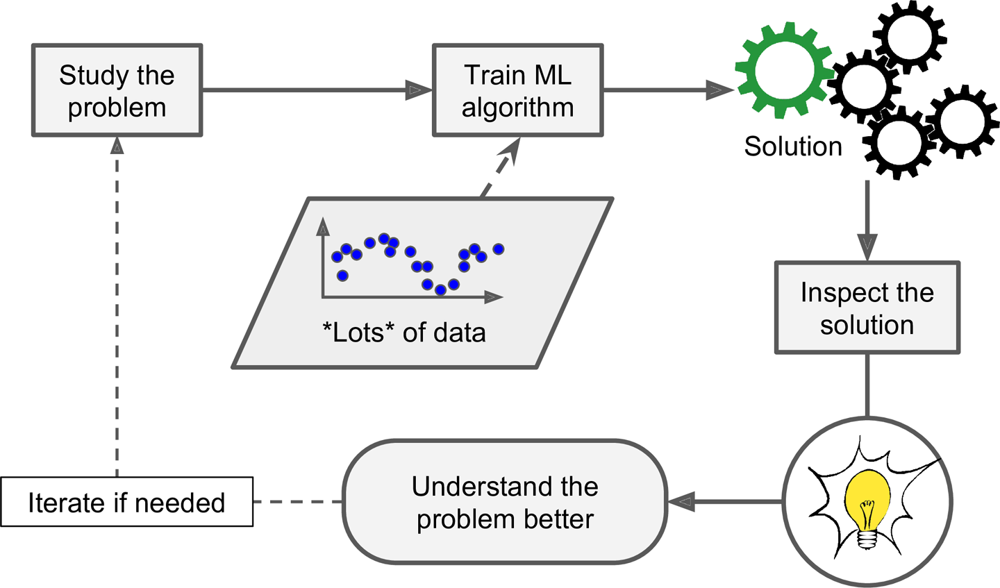
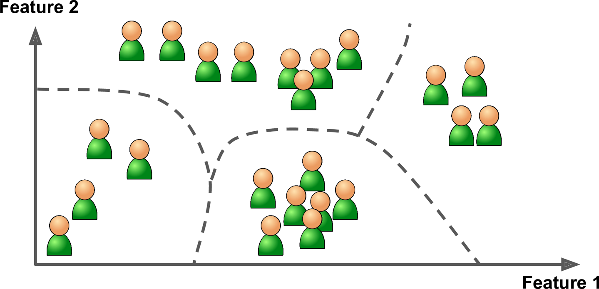
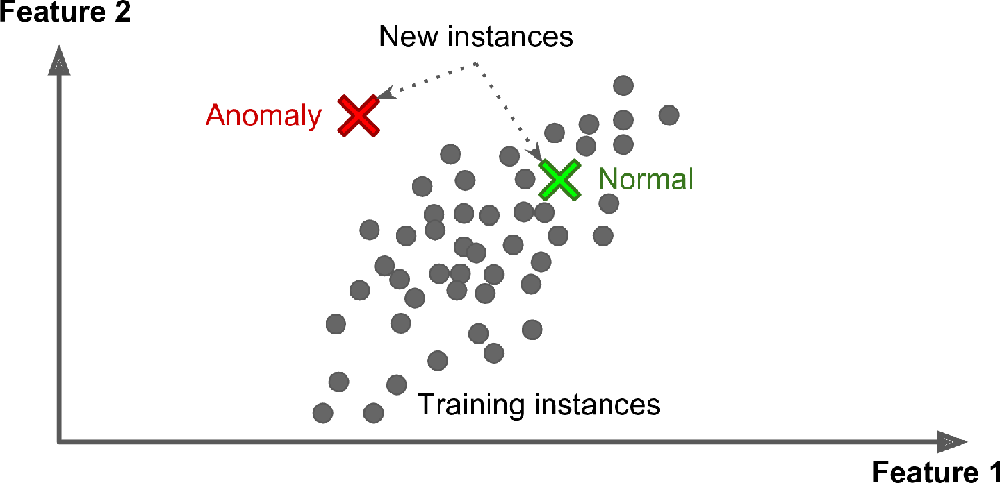
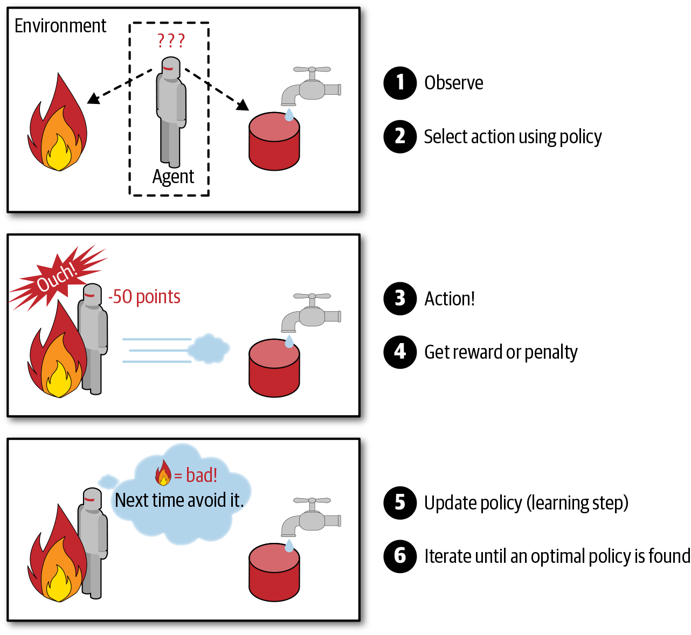
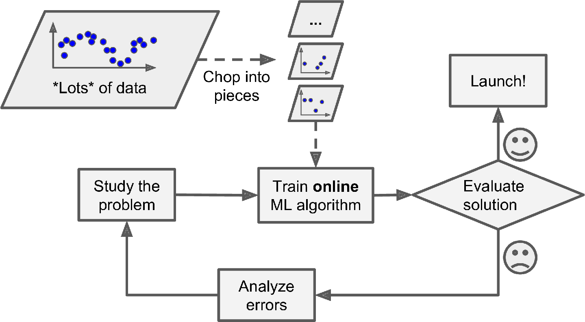
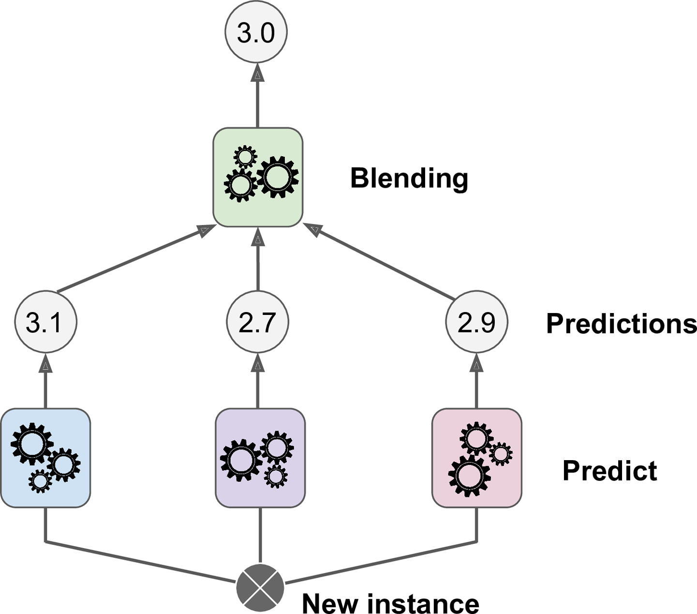
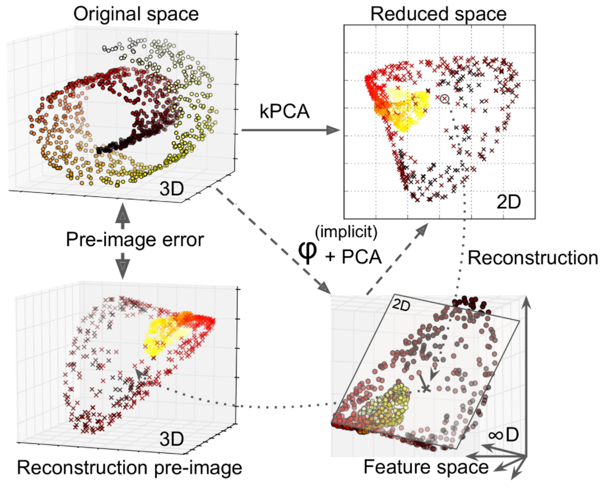

- Chapter 1 – The Machine Learning landscape
- Chapter 2 – End-to-end Machine Learning project
- Chapter 3. Classification
- Chapter 4 – Training Linear Models
- Chapter 5 – Support Vector Machines
- Chapter 6 – Decision Trees
- Chapter 7 – Ensemble Learning and Random Forests
- Chapter 8 – Dimensionality Reduction
- Chapter 9 – Unsupervised Learning
Chapter 1 – The Machine Learning landscape
When most people hear “Machine Learning,” they picture a robot: a dependable butler or a deadly Terminator, depending on whom you ask. But Machine Learning is not just a futuristic fantasy; it’s already here. In fact, it has been around for decades in some specialized applications, such as Optical Character Recognition (OCR). But the first ML application that really became mainstream, improving the lives of hundreds of millions of people, took over the world back in the 1990s: the spam filter. It’s not exactly a self-aware Skynet, but it does technically qualify as Machine Learning (it has actually learned so well that you seldom need to flag an email as spam anymore). It was followed by hundreds of ML applications that now quietly power hundreds of products and features that you use regularly, from better recommendations to voice search.
Where does Machine Learning start and where does it end? What exactly does it mean for a machine to learn something? If I download a copy of Wikipedia, has my computer really learned something? Is it suddenly smarter? In this chapter we will start by clarifying what Machine Learning is and why you may want to use it.
Then, before we set out to explore the Machine Learning continent, we will take a look at the map and learn about the main regions and the most notable landmarks: supervised versus unsupervised learning, online versus batch learning, instance-based versus model-based learning. Then we will look at the workflow of a typical ML project, discuss the main challenges you may face, and cover how to evaluate and fine-tune a Machine Learning system.
This chapter introduces a lot of fundamental concepts (and jargon) that every data scientist should know by heart. It will be a high-level overview (it’s the only chapter without much code), all rather simple, but you should make sure everything is crystal clear to you before continuing on to the rest of the book. So grab a coffee and let’s get started!
What Is Machine Learning?
Machine Learning is the science (and art) of programming computers so they can learn from data.
Here is a slightly more general definition:
[Machine Learning is the] field of study that gives computers the ability to learn without being explicitly programmed.
Arthur Samuel, 1959
And a more engineering-oriented one:
A computer program is said to learn from experience E with respect to some task T and some performance measure P, if its performance on T, as measured by P, improves with experience E.
Tom Mitchell, 1997
Your spam filter is a Machine Learning program that, given examples of spam emails (e.g., flagged by users) and examples of regular (nonspam, also called “ham”) emails, can learn to flag spam. The examples that the system uses to learn are called the training set. Each training example is called a training instance (or sample). In this case, the task T is to flag spam for new emails, the experience E is the training data, and the performance measure P needs to be defined; for example, you can use the ratio of correctly classified emails. This particular performance measure is called accuracy, and it is often used in classification tasks.
If you just download a copy of Wikipedia, your computer has a lot more data, but it is not suddenly better at any task. Thus, downloading a copy of Wikipedia is not Machine Learning.
Why Use Machine Learning?
Consider how you would write a spam filter using traditional programming techniques (Figure 1-1):
First you would consider what spam typically looks like. You might notice that some words or phrases (such as “4U,” “credit card,” “free,” and “amazing”) tend to come up a lot in the subject line. Perhaps you would also notice a few other patterns in the sender’s name, the email’s body, and other parts of the email.
You would write a detection algorithm for each of the patterns that you noticed, and your program would flag emails as spam if a number of these patterns were detected.
You would test your program and repeat steps 1 and 2 until it was good enough to launch.
Since the problem is difficult, your program will likely become a long list of complex rules—pretty hard to maintain.
In contrast, a spam filter based on Machine Learning techniques automatically learns which words and phrases are good predictors of spam by detecting unusually frequent patterns of words in the spam examples compared to the ham examples (Figure 1-2). The program is much shorter, easier to maintain, and most likely more accurate.
What if spammers notice that all their emails containing “4U” are blocked? They might start writing “For U” instead. A spam filter using traditional programming techniques would need to be updated to flag “For U” emails. If spammers keep working around your spam filter, you will need to keep writing new rules forever.
In contrast, a spam filter based on Machine Learning techniques automatically notices that “For U” has become unusually frequent in spam flagged by users, and it starts flagging them without your intervention (Figure 1-3).
Another area where Machine Learning shines is for problems that either are too complex for traditional approaches or have no known algorithm. For example, consider speech recognition. Say you want to start simple and write a program capable of distinguishing the words “one” and “two.” You might notice that the word “two” starts with a high-pitch sound (“T”), so you could hardcode an algorithm that measures high-pitch sound intensity and use that to distinguish ones and twos—but obviously this technique will not scale to thousands of words spoken by millions of very different people in noisy environments and in dozens of languages. The best solution (at least today) is to write an algorithm that learns by itself, given many example recordings for each word.
Finally, Machine Learning can help humans learn (Figure 1-4). ML algorithms can be inspected to see what they have learned (although for some algorithms this can be tricky). For instance, once a spam filter has been trained on enough spam, it can easily be inspected to reveal the list of words and combinations of words that it believes are the best predictors of spam. Sometimes this will reveal unsuspected correlations or new trends, and thereby lead to a better understanding of the problem. Applying ML techniques to dig into large amounts of data can help discover patterns that were not immediately apparent. This is called data mining.
To summarize, Machine Learning is great for:
Problems for which existing solutions require a lot of fine-tuning or long lists of rules: one Machine Learning algorithm can often simplify code and perform better than the traditional approach.
Complex problems for which using a traditional approach yields no good solution: the best Machine Learning techniques can perhaps find a solution.
Fluctuating environments: a Machine Learning system can adapt to new data.
Getting insights about complex problems and large amounts of data.
Types of Machine Learning Systems
There are so many different types of Machine Learning systems that it is useful to classify them in broad categories, based on the following criteria:
Whether or not they are trained with human supervision (supervised, unsupervised, semisupervised, and Reinforcement Learning)
Whether or not they can learn incrementally on the fly (online versus batch learning)
Whether they work by simply comparing new data points to known data points, or instead by detecting patterns in the training data and building a predictive model, much like scientists do (instance-based versus model-based learning)
These criteria are not exclusive; you can combine them in any way you like. For example, a state-of-the-art spam filter may learn on the fly using a deep neural network model trained using examples of spam and ham; this makes it an online, model-based, supervised learning system.
Let’s look at each of these criteria a bit more closely.
Supervised/Unsupervised Learning
Machine Learning systems can be classified according to the amount and type of supervision they get during training. There are four major categories: supervised learning, unsupervised learning, semisupervised learning, and Reinforcement Learning.
SUPERVISED LEARNING
In supervised learning, the training set you feed to the algorithm includes the desired solutions, called labels (Figure 1-5).
A typical supervised learning task is classification. The spam filter is a good example of this: it is trained with many example emails along with their class (spam or ham), and it must learn how to classify new emails.
Another typical task is to predict a target numeric value, such as the price of a car, given a set of features (mileage, age, brand, etc.) called predictors. This sort of task is called regression (Figure 1-6). To train the system, you need to give it many examples of cars, including both their predictors and their labels (i.e., their prices).
Note: In Machine Learning an attribute is a data type (e.g., “mileage”), while a feature has several meanings, depending on the context, but generally means an attribute plus its value (e.g., “mileage = 15,000”). Many people use the words attribute and feature interchangeably.
Note that some regression algorithms can be used for classification as well, and vice versa. For example, Logistic Regression is commonly used for classification, as it can output a value that corresponds to the probability of belonging to a given class (e.g., 20% chance of being spam).
Here are some of the most important supervised learning algorithms (covered in this book):
k-Nearest Neighbors
Linear Regression
Logistic Regression
Support Vector Machines (SVMs)
Decision Trees and Random Forests
Neural networks2
UNSUPERVISED LEARNING
In unsupervised learning, as you might guess, the training data is unlabeled (Figure 1-7). The system tries to learn without a teacher.
Here are some of the most important unsupervised learning algorithms (most of these are covered in Chapters 8 and 9):
Clustering
K-Means
DBSCAN
Hierarchical Cluster Analysis (HCA)
Anomaly detection and novelty detection
One-class SVM
Isolation Forest
Visualization and dimensionality reduction
Principal Component Analysis (PCA)
Kernel PCA
Locally Linear Embedding (LLE)
t-Distributed Stochastic Neighbor Embedding (t-SNE)
Association rule learning
Apriori
Eclat
For example, say you have a lot of data about your blog’s visitors. You may want to run a clustering algorithm to try to detect groups of similar visitors (Figure 1-8). At no point do you tell the algorithm which group a visitor belongs to: it finds those connections without your help. For example, it might notice that 40% of your visitors are males who love comic books and generally read your blog in the evening, while 20% are young sci-fi lovers who visit during the weekends. If you use a hierarchical clustering algorithm, it may also subdivide each group into smaller groups. This may help you target your posts for each group.
Visualization algorithms are also good examples of unsupervised learning algorithms: you feed them a lot of complex and unlabeled data, and they output a 2D or 3D representation of your data that can easily be plotted (Figure 1-9). These algorithms try to preserve as much structure as they can (e.g., trying to keep separate clusters in the input space from overlapping in the visualization) so that you can understand how the data is organized and perhaps identify unsuspected patterns.

A related task is dimensionality reduction, in which the goal is to simplify the data without losing too much information. One way to do this is to merge several correlated features into one. For example, a car’s mileage may be strongly correlated with its age, so the dimensionality reduction algorithm will merge them into one feature that represents the car’s wear and tear. This is called feature extraction.
Yet another important unsupervised task is anomaly detection—for example, detecting unusual credit card transactions to prevent fraud, catching manufacturing defects, or automatically removing outliers from a dataset before feeding it to another learning algorithm. The system is shown mostly normal instances during training, so it learns to recognize them; then, when it sees a new instance, it can tell whether it looks like a normal one or whether it is likely an anomaly (see Figure 1-10). A very similar task is novelty detection: it aims to detect new instances that look different from all instances in the training set. This requires having a very “clean” training set, devoid of any instance that you would like the algorithm to detect. For example, if you have thousands of pictures of dogs, and 1% of these pictures represent Chihuahuas, then a novelty detection algorithm should not treat new pictures of Chihuahuas as novelties. On the other hand, anomaly detection algorithms may consider these dogs as so rare and so different from other dogs that they would likely classify them as anomalies (no offense to Chihuahuas).
Finally, another common unsupervised task is association rule learning, in which the goal is to dig into large amounts of data and discover interesting relations between attributes. For example, suppose you own a supermarket. Running an association rule on your sales logs may reveal that people who purchase barbecue sauce and potato chips also tend to buy steak. Thus, you may want to place these items close to one another.
SEMISUPERVISED LEARNING
Since labeling data is usually time-consuming and costly, you will often have plenty of unlabeled instances, and few labeled instances. Some algorithms can deal with data that’s partially labeled. This is called semisupervised learning (Figure 1-11).

Some photo-hosting services, such as Google Photos, are good examples of this. Once you upload all your family photos to the service, it automatically recognizes that the same person A shows up in photos 1, 5, and 11, while another person B shows up in photos 2, 5, and 7. This is the unsupervised part of the algorithm (clustering). Now all the system needs is for you to tell it who these people are. Just add one label per person and it is able to name everyone in every photo, which is useful for searching photos.
Most semisupervised learning algorithms are combinations of unsupervised and supervised algorithms. For example, deep belief networks (DBNs) are based on unsupervised components called restricted Boltzmann machines (RBMs) stacked on top of one another. RBMs are trained sequentially in an unsupervised manner, and then the whole system is fine-tuned using supervised learning techniques.
REINFORCEMENT LEARNING
Reinforcement Learning is a very different beast. The learning system, called an agent in this context, can observe the environment, select and perform actions, and get rewards in return (or penalties in the form of negative rewards, as shown in Figure 1-12). It must then learn by itself what is the best strategy, called a policy, to get the most reward over time. A policy defines what action the agent should choose when it is in a given situation.
For example, many robots implement Reinforcement Learning algorithms to learn how to walk. DeepMind’s AlphaGo program is also a good example of Reinforcement Learning: it made the headlines in May 2017 when it beat the world champion Ke Jie at the game of Go. It learned its winning policy by analyzing millions of games, and then playing many games against itself. Note that learning was turned off during the games against the champion; AlphaGo was just applying the policy it had learned.
Batch and Online Learning
Another criterion used to classify Machine Learning systems is whether or not the system can learn incrementally from a stream of incoming data.
BATCH LEARNING
In batch learning, the system is incapable of learning incrementally: it must be trained using all the available data. This will generally take a lot of time and computing resources, so it is typically done offline. First the system is trained, and then it is launched into production and runs without learning anymore; it just applies what it has learned. This is called offline learning.
If you want a batch learning system to know about new data (such as a new type of spam), you need to train a new version of the system from scratch on the full dataset (not just the new data, but also the old data), then stop the old system and replace it with the new one.
Fortunately, the whole process of training, evaluating, and launching a Machine Learning system can be automated fairly easily (as shown in Figure 1-3), so even a batch learning system can adapt to change. Simply update the data and train a new version of the system from scratch as often as needed.
This solution is simple and often works fine, but training using the full set of data can take many hours, so you would typically train a new system only every 24 hours or even just weekly. If your system needs to adapt to rapidly changing data (e.g., to predict stock prices), then you need a more reactive solution.
Also, training on the full set of data requires a lot of computing resources (CPU, memory space, disk space, disk I/O, network I/O, etc.). If you have a lot of data and you automate your system to train from scratch every day, it will end up costing you a lot of money. If the amount of data is huge, it may even be impossible to use a batch learning algorithm.
Finally, if your system needs to be able to learn autonomously and it has limited resources (e.g., a smartphone application or a rover on Mars), then carrying around large amounts of training data and taking up a lot of resources to train for hours every day is a showstopper.
Fortunately, a better option in all these cases is to use algorithms that are capable of learning incrementally.
ONLINE LEARNING
In online learning, you train the system incrementally by feeding it data instances sequentially, either individually or in small groups called mini-batches. Each learning step is fast and cheap, so the system can learn about new data on the fly, as it arrives (see Figure 1-13).
Online learning is great for systems that receive data as a continuous flow (e.g., stock prices) and need to adapt to change rapidly or autonomously. It is also a good option if you have limited computing resources: once an online learning system has learned about new data instances, it does not need them anymore, so you can discard them (unless you want to be able to roll back to a previous state and “replay” the data). This can save a huge amount of space.
Online learning algorithms can also be used to train systems on huge datasets that cannot fit in one machine’s main memory (this is called out-of-core learning). The algorithm loads part of the data, runs a training step on that data, and repeats the process until it has run on all of the data (see Figure 1-14).
One important parameter of online learning systems is how fast they should adapt to changing data: this is called the learning rate. If you set a high learning rate, then your system will rapidly adapt to new data, but it will also tend to quickly forget the old data (you don’t want a spam filter to flag only the latest kinds of spam it was shown). Conversely, if you set a low learning rate, the system will have more inertia; that is, it will learn more slowly, but it will also be less sensitive to noise in the new data or to sequences of nonrepresentative data points (outliers).
A big challenge with online learning is that if bad data is fed to the system, the system’s performance will gradually decline. If it’s a live system, your clients will notice. For example, bad data could come from a malfunctioning sensor on a robot, or from someone spamming a search engine to try to rank high in search results. To reduce this risk, you need to monitor your system closely and promptly switch learning off (and possibly revert to a previously working state) if you detect a drop in performance. You may also want to monitor the input data and react to abnormal data (e.g., using an anomaly detection algorithm).
Instance-Based Versus Model-Based Learning
One more way to categorize Machine Learning systems is by how they generalize. Most Machine Learning tasks are about making predictions. This means that given a number of training examples, the system needs to be able to make good predictions for (generalize to) examples it has never seen before. Having a good performance measure on the training data is good, but insufficient; the true goal is to perform well on new instances.
There are two main approaches to generalization: instance-based learning and model-based learning.
INSTANCE-BASED LEARNING
Possibly the most trivial form of learning is simply to learn by heart. If you were to create a spam filter this way, it would just flag all emails that are identical to emails that have already been flagged by users—not the worst solution, but certainly not the best.
Instead of just flagging emails that are identical to known spam emails, your spam filter could be programmed to also flag emails that are very similar to known spam emails. This requires a measure of similarity between two emails. A (very basic) similarity measure between two emails could be to count the number of words they have in common. The system would flag an email as spam if it has many words in common with a known spam email.
This is called instance-based learning: the system learns the examples by heart, then generalizes to new cases by using a similarity measure to compare them to the learned examples (or a subset of them). For example, in Figure 1-15 the new instance would be classified as a triangle because the majority of the most similar instances belong to that class.
MODEL-BASED LEARNING
Another way to generalize from a set of examples is to build a model of these examples and then use that model to make predictions. This is called model-based learning (Figure 1-16).

For example, suppose you want to know if money makes people happy, so you download the Better Life Index data from the OECD’s website and stats about gross domestic product (GDP) per capita from the IMF’s website. Then you join the tables and sort by GDP per capita. Table 1-1 shows an excerpt of what you get.
Table 1-1. Does money make people happier?
| Country | GDP per capita (USD) | Life satisfaction |
|---|---|---|
| Hungary | 12,240 | 4.9 |
| Korea | 27,195 | 5.8 |
| France | 37,675 | 6.5 |
| Australia | 50,962 | 7.3 |
| United States | 55,805 | 7.2 |
Let’s plot the data for these countries (Figure 1-17).
There does seem to be a trend here! Although the data is noisy (i.e., partly random), it looks like life satisfaction goes up more or less linearly as the country’s GDP per capita increases. So you decide to model life satisfaction as a linear function of GDP per capita. This step is called model selection: you selected a linear model of life satisfaction with just one attribute, GDP per capita (Equation 1-1).
Equation 1-1. A simple linear model
\[\text{life_satisfaction}=\theta_0+\theta_1\times \text{GDP_per_capita}\]
This model has two model parameters, \(\theta_0\) and \(\theta_1\). By tweaking these parameters, you can make your model represent any linear function, as shown in Figure 1-18.
Before you can use your model, you need to define the parameter values \(\theta_0\) and \(\theta_1\). How can you know which values will make your model perform best? To answer this question, you need to specify a performance measure. You can either define a utility function (or fitness function) that measures how good your model is, or you can define a cost function that measures how bad it is. For Linear Regression problems, people typically use a cost function that measures the distance between the linear model’s predictions and the training examples; the objective is to minimize this distance.
This is where the Linear Regression algorithm comes in: you feed it your training examples, and it finds the parameters that make the linear model fit best to your data. This is called training the model. In our case, the algorithm finds that the optimal parameter values are \(\theta_0 = 4.85\) and \(\theta_1 = 4.91 \times 10^{–5}\).
WARNING
Confusingly, the same word “model” can refer to a type of model (e.g., Linear Regression), to a fully specified model architecture (e.g., Linear Regression with one input and one output), or to the final trained model ready to be used for predictions (e.g., Linear Regression with one input and one output, using \(\theta_0 = 4.85\) and \(\theta_1 = 4.91 \times 10^{–5}\)). Model selection consists in choosing the type of model and fully specifying its architecture. Training a model means running an algorithm to find the model parameters that will make it best fit the training data (and hopefully make good predictions on new data).
Now the model fits the training data as closely as possible (for a linear model), as you can see in Figure 1-19.
You are finally ready to run the model to make predictions. For example, say you want to know how happy Cypriots are, and the OECD data does not have the answer. Fortunately, you can use your model to make a good prediction: you look up Cyprus’s GDP per capita, find $22,587, and then apply your model and find that life satisfaction is likely to be somewhere around 4.85 + 22,587 × 4.91 × 10-5 = 5.96.
To what your appetite, Example 1-1 shows the Python code that loads the data, prepares it,6 creates a scatterplot for visualization, and then trains a linear model and makes a prediction.
Example 1-1. Training and running a linear model using Scikit-Learn
import matplotlib.pyplot as plt
import numpy as np
import pandas as pdimport sklearn.linear_model# Load the data
oecd_bli = pd.read_csv("./handson-ml2/datasets/lifesat/oecd_bli_2015.csv", thousands=',')
gdp_per_capita = pd.read_csv("./handson-ml2/datasets/lifesat/gdp_per_capita.csv",thousands=',',delimiter='\t',
encoding='latin1', na_values="n/a")oecd_bli| LOCATION | Country | INDICATOR | Indicator | MEASURE | Measure | INEQUALITY | Inequality | Unit Code | Unit | PowerCode Code | PowerCode | Reference Period Code | Reference Period | Value | Flag Codes | Flags | |
|---|---|---|---|---|---|---|---|---|---|---|---|---|---|---|---|---|---|
| 0 | AUS | Australia | HO_BASE | Dwellings without basic facilities | L | Value | TOT | Total | PC | Percentage | 0 | units | NaN | NaN | 1.10 | E | Estimated value |
| 1 | AUT | Austria | HO_BASE | Dwellings without basic facilities | L | Value | TOT | Total | PC | Percentage | 0 | units | NaN | NaN | 1.00 | NaN | NaN |
| 2 | BEL | Belgium | HO_BASE | Dwellings without basic facilities | L | Value | TOT | Total | PC | Percentage | 0 | units | NaN | NaN | 2.00 | NaN | NaN |
| 3 | CAN | Canada | HO_BASE | Dwellings without basic facilities | L | Value | TOT | Total | PC | Percentage | 0 | units | NaN | NaN | 0.20 | NaN | NaN |
| 4 | CZE | Czech Republic | HO_BASE | Dwellings without basic facilities | L | Value | TOT | Total | PC | Percentage | 0 | units | NaN | NaN | 0.90 | NaN | NaN |
| … | … | … | … | … | … | … | … | … | … | … | … | … | … | … | … | … | … |
| 3287 | EST | Estonia | WL_TNOW | Time devoted to leisure and personal care | L | Value | WMN | Women | HOUR | Hours | 0 | units | NaN | NaN | 14.43 | NaN | NaN |
| 3288 | ISR | Israel | WL_TNOW | Time devoted to leisure and personal care | L | Value | WMN | Women | HOUR | Hours | 0 | units | NaN | NaN | 14.24 | E | Estimated value |
| 3289 | RUS | Russia | WL_TNOW | Time devoted to leisure and personal care | L | Value | WMN | Women | HOUR | Hours | 0 | units | NaN | NaN | 14.75 | E | Estimated value |
| 3290 | SVN | Slovenia | WL_TNOW | Time devoted to leisure and personal care | L | Value | WMN | Women | HOUR | Hours | 0 | units | NaN | NaN | 14.12 | NaN | NaN |
| 3291 | OECD | OECD - Total | WL_TNOW | Time devoted to leisure and personal care | L | Value | WMN | Women | HOUR | Hours | 0 | units | NaN | NaN | 14.74 | NaN | NaN |
3292 rows × 17 columns
gdp_per_capita| Country | Subject Descriptor | Units | Scale | Country/Series-specific Notes | 2015 | Estimates Start After | |
|---|---|---|---|---|---|---|---|
| 0 | Afghanistan | Gross domestic product per capita, current prices | U.S. dollars | Units | See notes for: Gross domestic product, curren… | 599.994 | 2013.0 |
| 1 | Albania | Gross domestic product per capita, current prices | U.S. dollars | Units | See notes for: Gross domestic product, curren… | 3995.383 | 2010.0 |
| 2 | Algeria | Gross domestic product per capita, current prices | U.S. dollars | Units | See notes for: Gross domestic product, curren… | 4318.135 | 2014.0 |
| 3 | Angola | Gross domestic product per capita, current prices | U.S. dollars | Units | See notes for: Gross domestic product, curren… | 4100.315 | 2014.0 |
| 4 | Antigua and Barbuda | Gross domestic product per capita, current prices | U.S. dollars | Units | See notes for: Gross domestic product, curren… | 14414.302 | 2011.0 |
| … | … | … | … | … | … | … | … |
| 185 | Vietnam | Gross domestic product per capita, current prices | U.S. dollars | Units | See notes for: Gross domestic product, curren… | 2088.344 | 2012.0 |
| 186 | Yemen | Gross domestic product per capita, current prices | U.S. dollars | Units | See notes for: Gross domestic product, curren… | 1302.940 | 2008.0 |
| 187 | Zambia | Gross domestic product per capita, current prices | U.S. dollars | Units | See notes for: Gross domestic product, curren… | 1350.151 | 2010.0 |
| 188 | Zimbabwe | Gross domestic product per capita, current prices | U.S. dollars | Units | See notes for: Gross domestic product, curren… | 1064.350 | 2012.0 |
| 189 | International Monetary Fund, World Economic Ou… | NaN | NaN | NaN | NaN | NaN | NaN |
190 rows × 7 columns
# Prepare the data
country_stats = prepare_country_stats(oecd_bli, gdp_per_capita)
X = np.c_[country_stats["GDP per capita"]]
y = np.c_[country_stats["Life satisfaction"]]# Visualize the data
country_stats.plot(kind='scatter', x="GDP per capita", y='Life satisfaction')
plt.show()png
# Select a linear model
model = sklearn.linear_model.LinearRegression()# Train the model
model.fit(X, y)LinearRegression()# Make a prediction for Cyprus
X_new = [[22587]] # Cyprus's GDP per capita
print(model.predict(X_new)) # outputs [[ 5.96242338]][[5.96242338]]NOTE
If you had used an instance-based learning algorithm instead, you would have found that Slovenia has the closest GDP per capita to that of Cyprus ($20,732), and since the OECD data tells us that Slovenians’ life satisfaction is 5.7, you would have predicted a life satisfaction of 5.7 for Cyprus. If you zoom out a bit and look at the two next-closest countries, you will find Portugal and Spain with life satisfactions of 5.1 and 6.5, respectively. Averaging these three values, you get 5.77, which is pretty close to your model-based prediction. This simple algorithm is called k-Nearest Neighbors regression (in this example, k = 3).
Replacing the Linear Regression model with k-Nearest Neighbors regression in the previous code is as simple as replacing these two lines:
import sklearn.neighbors
model = sklearn.neighbors.KNeighborsRegressor(
n_neighbors=3)# Train the model
model.fit(X, y)KNeighborsRegressor(n_neighbors=3)# Make a prediction for Cyprus
X_new = [[22587]] # Cyprus's GDP per capita
print(model.predict(X_new))[[5.76666667]]# Python ≥3.5 is required
import sys
assert sys.version_info >= (3, 5)sys.version_infosys.version_info(major=3, minor=8, micro=5, releaselevel='final', serial=0)# Scikit-Learn ≥0.20 is required
import sklearn
assert sklearn.__version__ >= "0.20"sklearn.__version__'0.24.1'If all went well, your model will make good predictions. If not, you may need to use more attributes (employment rate, health, air pollution, etc.), get more or better-quality training data, or perhaps select a more powerful model (e.g., a Polynomial Regression model).
In summary:
You studied the data.
You selected a model.
You trained it on the training data (i.e., the learning algorithm searched for the model parameter values that minimize a cost function).
Finally, you applied the model to make predictions on new cases (this is called inference), hoping that this model will generalize well.
This is what a typical Machine Learning project looks like. In Chapter 2 you will experience this firsthand by going through a project end to end.
We have covered a lot of ground so far: you now know what Machine Learning is really about, why it is useful, what some of the most common categories of ML systems are, and what a typical project workflow looks like. Now let’s look at what can go wrong in learning and prevent you from making accurate predictions.
Main Challenges of Machine Learning
In short, since your main task is to select a learning algorithm and train it on some data, the two things that can go wrong are “bad algorithm” and “bad data.” Let’s start with examples of bad data.
Insufficient Quantity of Training Data
For a toddler to learn what an apple is, all it takes is for you to point to an apple and say “apple” (possibly repeating this procedure a few times). Now the child is able to recognize apples in all sorts of colors and shapes. Genius.
Machine Learning is not quite there yet; it takes a lot of data for most Machine Learning algorithms to work properly. Even for very simple problems you typically need thousands of examples, and for complex problems such as image or speech recognition you may need millions of examples (unless you can reuse parts of an existing model).
THE UNREASONABLE EFFECTIVENESS OF DATA
In a famous paper published in 2001, Microsoft researchers Michele Banko and Eric Brill showed that very different Machine Learning algorithms, including fairly simple ones, performed almost identically well on a complex problem of natural language disambiguation once they were given enough data (as you can see in Figure 1-20).
As the authors put it, “these results suggest that we may want to reconsider the trade-off between spending time and money on algorithm development versus spending it on corpus development.”
The idea that data matters more than algorithms for complex problems was further popularized by Peter Norvig et al. in a paper titled “The Unreasonable Effectiveness of Data”, published in 2009.10 It should be noted, however, that small- and medium-sized datasets are still very common, and it is not always easy or cheap to get extra training data—so don’t abandon algorithms just yet.
Nonrepresentative Training Data
In order to generalize well, it is crucial that your training data be representative of the new cases you want to generalize to. This is true whether you use instance-based learning or model-based learning.
For example, the set of countries we used earlier for training the linear model was not perfectly representative; a few countries were missing. Figure 1-21 shows what the data looks like when you add the missing countries.
If you train a linear model on this data, you get the solid line, while the old model is represented by the dotted line. As you can see, not only does adding a few missing countries significantly alter the model, but it makes it clear that such a simple linear model is probably never going to work well. It seems that very rich countries are not happier than moderately rich countries (in fact, they seem unhappier), and conversely some poor countries seem happier than many rich countries.
By using a nonrepresentative training set, we trained a model that is unlikely to make accurate predictions, especially for very poor and very rich countries.
It is crucial to use a training set that is representative of the cases you want to generalize to. This is often harder than it sounds: if the sample is too small, you will have sampling noise (i.e., nonrepresentative data as a result of chance), but even very large samples can be nonrepresentative if the sampling method is flawed. This is called sampling bias.
EXAMPLES OF SAMPLING BIAS
Perhaps the most famous example of sampling bias happened during the US presidential election in 1936, which pitted Landon against Roosevelt: the Literary Digest conducted a very large poll, sending mail to about 10 million people. It got 2.4 million answers, and predicted with high confidence that Landon would get 57% of the votes. Instead, Roosevelt won with 62% of the votes. The flaw was in the Literary Digest’s sampling method:
First, to obtain the addresses to send the polls to, the Literary Digest used telephone directories, lists of magazine subscribers, club membership lists, and the like. All of these lists tended to favor wealthier people, who were more likely to vote Republican (hence Landon).
Second, less than 25% of the people who were polled answered. Again this introduced a sampling bias, by potentially ruling out people who didn’t care much about politics, people who didn’t like the Literary Digest, and other key groups. This is a special type of sampling bias called nonresponse bias.
Here is another example: say you want to build a system to recognize funk music videos. One way to build your training set is to search for “funk music” on YouTube and use the resulting videos. But this assumes that YouTube’s search engine returns a set of videos that are representative of all the funk music videos on YouTube. In reality, the search results are likely to be biased toward popular artists (and if you live in Brazil you will get a lot of “funk carioca” videos, which sound nothing like James Brown). On the other hand, how else can you get a large training set?
Poor-Quality Data
Obviously, if your training data is full of errors, outliers, and noise (e.g., due to poor-quality measurements), it will make it harder for the system to detect the underlying patterns, so your system is less likely to perform well. It is often well worth the effort to spend time cleaning up your training data. The truth is, most data scientists spend a significant part of their time doing just that. The following are a couple of examples of when you’d want to clean up training data:
If some instances are clearly outliers, it may help to simply discard them or try to fix the errors manually.
If some instances are missing a few features (e.g., 5% of your customers did not specify their age), you must decide whether you want to ignore this attribute altogether, ignore these instances, fill in the missing values (e.g., with the median age), or train one model with the feature and one model without it.
Irrelevant Features
As the saying goes: garbage in, garbage out. Your system will only be capable of learning if the training data contains enough relevant features and not too many irrelevant ones. A critical part of the success of a Machine Learning project is coming up with a good set of features to train on. This process, called feature engineering, involves the following steps:
Feature selection (selecting the most useful features to train on among existing features)
Feature extraction (combining existing features to produce a more useful one—as we saw earlier, dimensionality reduction algorithms can help)
Creating new features by gathering new data
Now that we have looked at many examples of bad data, let’s look at a couple of examples of bad algorithms.
Overfitting the Training Data
Say you are visiting a foreign country and the taxi driver rips you off. You might be tempted to say that all taxi drivers in that country are thieves. Overgeneralizing is something that we humans do all too often, and unfortunately machines can fall into the same trap if we are not careful. In Machine Learning this is called overfitting: it means that the model performs well on the training data, but it does not generalize well.
Figure 1-22 shows an example of a high-degree polynomial life satisfaction model that strongly overfits the training data. Even though it performs much better on the training data than the simple linear model, would you really trust its predictions?
Complex models such as deep neural networks can detect subtle patterns in the data, but if the training set is noisy, or if it is too small (which introduces sampling noise), then the model is likely to detect patterns in the noise itself. Obviously these patterns will not generalize to new instances. For example, say you feed your life satisfaction model many more attributes, including uninformative ones such as the country’s name. In that case, a complex model may detect patterns like the fact that all countries in the training data with a w in their name have a life satisfaction greater than 7: New Zealand (7.3), Norway (7.4), Sweden (7.2), and Switzerland (7.5). How confident are you that the w-satisfaction rule generalizes to Rwanda or Zimbabwe? Obviously this pattern occurred in the training data by pure chance, but the model has no way to tell whether a pattern is real or simply the result of noise in the data.
Constraining a model to make it simpler and reduce the risk of overfitting is called regularization. For example, the linear model we defined earlier has two parameters, \(\theta_0\) and \(\theta_1\). This gives the learning algorithm two degrees of freedom to adapt the model to the training data: it can tweak both the height (\(\theta_0\)) and the slope (\(\theta_1\)) of the line. If we forced \(\theta_1 = 0\), the algorithm would have only one degree of freedom and would have a much harder time fitting the data properly: all it could do is move the line up or down to get as close as possible to the training instances, so it would end up around the mean. A very simple model indeed! If we allow the algorithm to modify \(\theta_1\) but we force it to keep it small, then the learning algorithm will effectively have somewhere in between one and two degrees of freedom. It will produce a model that’s simpler than one with two degrees of freedom, but more complex than one with just one. You want to find the right balance between fitting the training data perfectly and keeping the model simple enough to ensure that it will generalize well.
Figure 1-23 shows three models. The dotted line represents the original model that was trained on the countries represented as circles (without the countries represented as squares), the dashed line is our second model trained with all countries (circles and squares), and the solid line is a model trained with the same data as the first model but with a regularization constraint. You can see that regularization forced the model to have a smaller slope: this model does not fit the training data (circles) as well as the first model, but it actually generalizes better to new examples that it did not see during training (squares).
The amount of regularization to apply during learning can be controlled by a hyperparameter. A hyperparameter is a parameter of a learning algorithm (not of the model). As such, it is not affected by the learning algorithm itself; it must be set prior to training and remains constant during training. If you set the regularization hyperparameter to a very large value, you will get an almost flat model (a slope close to zero); the learning algorithm will almost certainly not overfit the training data, but it will be less likely to find a good solution. Tuning hyperparameters is an important part of building a Machine Learning system (you will see a detailed example in the next chapter).
Underfitting the Training Data
As you might guess, underfitting is the opposite of overfitting: it occurs when your model is too simple to learn the underlying structure of the data. For example, a linear model of life satisfaction is prone to underfit; reality is just more complex than the model, so its predictions are bound to be inaccurate, even on the training examples.
Here are the main options for fixing this problem:
Select a more powerful model, with more parameters.
Feed better features to the learning algorithm (feature engineering).
Reduce the constraints on the model (e.g., reduce the regularization hyperparameter).
Stepping Back
By now you know a lot about Machine Learning. However, we went through so many concepts that you may be feeling a little lost, so let’s step back and look at the big picture:
Machine Learning is about making machines get better at some task by learning from data, instead of having to explicitly code rules.
There are many different types of ML systems: supervised or not, batch or online, instance-based or model-based.
In an ML project you gather data in a training set, and you feed the training set to a learning algorithm. If the algorithm is model-based, it tunes some parameters to fit the model to the training set (i.e., to make good predictions on the training set itself), and then hopefully it will be able to make good predictions on new cases as well. If the algorithm is instance-based, it just learns the examples by heart and generalizes to new instances by using a similarity measure to compare them to the learned instances.
The system will not perform well if your training set is too small, or if the data is not representative, is noisy, or is polluted with irrelevant features (garbage in, garbage out). Lastly, your model needs to be neither too simple (in which case it will underfit) nor too complex (in which case it will overfit).
There’s just one last important topic to cover: once you have trained a model, you don’t want to just “hope” it generalizes to new cases. You want to evaluate it and fine-tune it if necessary. Let’s see how to do that.
Testing and Validating
The only way to know how well a model will generalize to new cases is to actually try it out on new cases. One way to do that is to put your model in production and monitor how well it performs. This works well, but if your model is horribly bad, your users will complain—not the best idea.
A better option is to split your data into two sets: the training set and the test set. As these names imply, you train your model using the training set, and you test it using the test set. The error rate on new cases is called the generalization error (or out-of-sample error), and by evaluating your model on the test set, you get an estimate of this error. This value tells you how well your model will perform on instances it has never seen before.
If the training error is low (i.e., your model makes few mistakes on the training set) but the generalization error is high, it means that your model is overfitting the training data.
TIP
It is common to use 80% of the data for training and hold out 20% for testing. However, this depends on the size of the dataset: if it contains 10 million instances, then holding out 1% means your test set will contain 100,000 instances, probably more than enough to get a good estimate of the generalization error.
Hyperparameter Tuning and Model Selection
Evaluating a model is simple enough: just use a test set. But suppose you are hesitating between two types of models (say, a linear model and a polynomial model): how can you decide between them? One option is to train both and compare how well they generalize using the test set.
Now suppose that the linear model generalizes better, but you want to apply some regularization to avoid overfitting. The question is, how do you choose the value of the regularization hyperparameter? One option is to train 100 different models using 100 different values for this hyperparameter. Suppose you find the best hyperparameter value that produces a model with the lowest generalization error—say, just 5% error. You launch this model into production, but unfortunately it does not perform as well as expected and produces 15% errors. What just happened?
The problem is that you measured the generalization error multiple times on the test set, and you adapted the model and hyperparameters to produce the best model for that particular set. This means that the model is unlikely to perform as well on new data.
A common solution to this problem is called holdout validation: you simply hold out part of the training set to evaluate several candidate models and select the best one. The new held-out set is called the validation set (or sometimes the development set, or dev set). More specifically, you train multiple models with various hyperparameters on the reduced training set (i.e., the full training set minus the validation set), and you select the model that performs best on the validation set. After this holdout validation process, you train the best model on the full training set (including the validation set), and this gives you the final model. Lastly, you evaluate this final model on the test set to get an estimate of the generalization error.
This solution usually works quite well. However, if the validation set is too small, then model evaluations will be imprecise: you may end up selecting a suboptimal model by mistake. Conversely, if the validation set is too large, then the remaining training set will be much smaller than the full training set. Why is this bad? Well, since the final model will be trained on the full training set, it is not ideal to compare candidate models trained on a much smaller training set. It would be like selecting the fastest sprinter to participate in a marathon. One way to solve this problem is to perform repeated cross-validation, using many small validation sets. Each model is evaluated once per validation set after it is trained on the rest of the data. By averaging out all the evaluations of a model, you get a much more accurate measure of its performance. There is a drawback, however: the training time is multiplied by the number of validation sets.
Data Mismatch
In some cases, it’s easy to get a large amount of data for training, but this data probably won’t be perfectly representative of the data that will be used in production. For example, suppose you want to create a mobile app to take pictures of flowers and automatically determine their species. You can easily download millions of pictures of flowers on the web, but they won’t be perfectly representative of the pictures that will actually be taken using the app on a mobile device. Perhaps you only have 10,000 representative pictures (i.e., actually taken with the app). In this case, the most important rule to remember is that the validation set and the test set must be as representative as possible of the data you expect to use in production, so they should be composed exclusively of representative pictures: you can shuffle them and put half in the validation set and half in the test set (making sure that no duplicates or near-duplicates end up in both sets). But after training your model on the web pictures, if you observe that the performance of the model on the validation set is disappointing, you will not know whether this is because your model has overfit the training set, or whether this is just due to the mismatch between the web pictures and the mobile app pictures. One solution is to hold out some of the training pictures (from the web) in yet another set that Andrew Ng calls the train-dev set. After the model is trained (on the training set, not on the train-dev set), you can evaluate it on the train-dev set. If it performs well, then the model is not overfitting the training set. If it performs poorly on the validation set, the problem must be coming from the data mismatch. You can try to tackle this problem by preprocessing the web images to make them look more like the pictures that will be taken by the mobile app, and then retraining the model. Conversely, if the model performs poorly on the train-dev set, then it must have overfit the training set, so you should try to simplify or regularize the model, get more training data, and clean up the training data.
Exercises
In this chapter we have covered some of the most important concepts in Machine Learning. In the next chapters we will dive deeper and write more code, but before we do, make sure you know how to answer the following questions:
- How would you define Machine Learning?
Machine Learning is about building systems that can learn from data. Learning means getting better at some task, given some performance measure.
- Can you name four types of problems where it shines?
Machine Learning is great for complex problems for which we have no algorithmic solution, to replace long lists of hand-tuned rules, to build systems that adapt to fluctuating environments, and finally to help humans learn (e.g., data mining).
- What is a labeled training set?
A labeled training set is a training set that contains the desired solution (a.k.a. a label) for each instance.
- What are the two most common supervised tasks?
The two most common supervised tasks are regression and classification.
- Can you name four common unsupervised tasks?
Common unsupervised tasks include clustering, visualization, dimensionality reduction, and association rule learning.
- What type of Machine Learning algorithm would you use to allow a robot to walk in various unknown terrains?
Reinforcement Learning is likely to perform best if we want a robot to learn to walk in various unknown terrains, since this is typically the type of problem that Reinforcement Learning tackles. It might be possible to express the problem as a supervised or semisupervised learning problem, but it would be less natural.
- What type of algorithm would you use to segment your customers into multiple groups?
If you don’t know how to define the groups, then you can use a clustering algorithm (unsupervised learning) to segment your customers into clusters of similar customers. However, if you know what groups you would like to have, then you can feed many examples of each group to a classification algorithm (supervised learning), and it will classify all your customers into these groups.
- Would you frame the problem of spam detection as a supervised learning problem or an unsupervised learning problem?
Spam detection is a typical supervised learning problem: the algorithm is fed many emails along with their labels (spam or not spam).
- What is an online learning system?
An online learning system can learn incrementally, as opposed to a batch learning system. This makes it capable of adapting rapidly to both changing data and autonomous systems, and of training on very large quantities of data.
- What is out-of-core learning?
Out-of-core algorithms can handle vast quantities of data that cannot fit in a computer’s main memory. An out-of-core learning algorithm chops the data into mini-batches and uses online learning techniques to learn from these mini-batches.
- What type of learning algorithm relies on a similarity measure to make predictions?
An instance-based learning system learns the training data by heart; then, when given a new instance, it uses a similarity measure to find the most similar learned instances and uses them to make predictions.
- What is the difference between a model parameter and a learning algorithm’s hyperparameter?
A model has one or more model parameters that determine what it will predict given a new instance (e.g., the slope of a linear model). A learning algorithm tries to find optimal values for these parameters such that the model generalizes well to new instances. A hyperparameter is a parameter of the learning algorithm itself, not of the model (e.g., the amount of regularization to apply).
- What do model-based learning algorithms search for? What is the most common strategy they use to succeed? How do they make predictions?
Model-based learning algorithms search for an optimal value for the model parameters such that the model will generalize well to new instances. We usually train such systems by minimizing a cost function that measures how bad the system is at making predictions on the training data, plus a penalty for model complexity if the model is regularized. To make predictions, we feed the new instance’s features into the model’s prediction function, using the parameter values found by the learning algorithm.
- Can you name four of the main challenges in Machine Learning?
Some of the main challenges in Machine Learning are the lack of data, poor data quality, nonrepresentative data, uninformative features, excessively simple models that underfit the training data, and excessively complex models that overfit the data.
- If your model performs great on the training data but generalizes poorly to new instances, what is happening? Can you name three possible solutions?
If a model performs great on the training data but generalizes poorly to new instances, the model is likely overfitting the training data (or we got extremely lucky on the training data). Possible solutions to overfitting are getting more data, simplifying the model (selecting a simpler algorithm, reducing the number of parameters or features used, or regularizing the model), or reducing the noise in the training data.
- What is a test set, and why would you want to use it?
A test set is used to estimate the generalization error that a model will make on new instances, before the model is launched in production.
- What is the purpose of a validation set?
A validation set is used to compare models. It makes it possible to select the best model and tune the hyperparameters.
- What is the train-dev set, when do you need it, and how do you use it?
The train-dev set is used when there is a risk of mismatch between the training data and the data used in the validation and test datasets (which should always be as close as possible to the data used once the model is in production). The train-dev set is a part of the training set that’s held out (the model is not trained on it). The model is trained on the rest of the training set, and evaluated on both the train-dev set and the validation set. If the model performs well on the training set but not on the train-dev set, then the model is likely overfitting the training set. If it performs well on both the training set and the train-dev set, but not on the validation set, then there is probably a significant data mismatch between the training data and the validation + test data, and you should try to improve the training data to make it look more like the validation + test data.
- What can go wrong if you tune hyperparameters using the test set?
If you tune hyperparameters using the test set, you risk overfitting the test set, and the generalization error you measure will be optimistic (you may launch a model that performs worse than you expect).
This function just merges the OECD’s life satisfaction data and the IMF’s GDP per capita data. It’s a bit too long and boring and it’s not specific to Machine Learning, which is why I left it out of the book.
def prepare_country_stats(oecd_bli, gdp_per_capita):
oecd_bli = oecd_bli[oecd_bli["INEQUALITY"]=="TOT"]
oecd_bli = oecd_bli.pivot(index="Country", columns="Indicator", values="Value")
gdp_per_capita.rename(columns={"2015": "GDP per capita"}, inplace=True)
gdp_per_capita.set_index("Country", inplace=True)
full_country_stats = pd.merge(left=oecd_bli, right=gdp_per_capita,
left_index=True, right_index=True)
full_country_stats.sort_values(by="GDP per capita", inplace=True)
remove_indices = [0, 1, 6, 8, 33, 34, 35]
keep_indices = list(set(range(36)) - set(remove_indices))
return full_country_stats[["GDP per capita", 'Life satisfaction']].iloc[keep_indices]import os
datapath = os.path.join("handson-ml2", "datasets", "lifesat")# To plot pretty figures directly within Jupyter
#%matplotlib inline
import matplotlib as mpl
mpl.rc('axes', labelsize=14)
mpl.rc('xtick', labelsize=12)
mpl.rc('ytick', labelsize=12)# Download the data
import urllib
DOWNLOAD_ROOT = "https://raw.githubusercontent.com/ageron/handson-ml2/master/"
os.makedirs(datapath, exist_ok=True)
for filename in ("oecd_bli_2015.csv", "gdp_per_capita.csv"):
print("Downloading", filename)
url = DOWNLOAD_ROOT + "datasets/lifesat/" + filename
urllib.request.urlretrieve(url, datapath + filename)Downloading oecd_bli_2015.csv
Downloading gdp_per_capita.csvimport matplotlib.pyplot as plt
import numpy as np
import pandas as pd
import sklearn.linear_model# Load the data
oecd_bli = pd.read_csv(datapath + "oecd_bli_2015.csv", thousands=',')
gdp_per_capita = pd.read_csv(datapath + "gdp_per_capita.csv",thousands=',',delimiter='\t',
encoding='latin1', na_values="n/a")# Prepare the data
country_stats = prepare_country_stats(oecd_bli, gdp_per_capita)
X = np.c_[country_stats["GDP per capita"]]
y = np.c_[country_stats["Life satisfaction"]]
country_stats| GDP per capita | Life satisfaction | |
|---|---|---|
| Country | ||
| Russia | 9054.914 | 6.0 |
| Turkey | 9437.372 | 5.6 |
| Hungary | 12239.894 | 4.9 |
| Poland | 12495.334 | 5.8 |
| Slovak Republic | 15991.736 | 6.1 |
| Estonia | 17288.083 | 5.6 |
| Greece | 18064.288 | 4.8 |
| Portugal | 19121.592 | 5.1 |
| Slovenia | 20732.482 | 5.7 |
| Spain | 25864.721 | 6.5 |
| Korea | 27195.197 | 5.8 |
| Italy | 29866.581 | 6.0 |
| Japan | 32485.545 | 5.9 |
| Israel | 35343.336 | 7.4 |
| New Zealand | 37044.891 | 7.3 |
| France | 37675.006 | 6.5 |
| Belgium | 40106.632 | 6.9 |
| Germany | 40996.511 | 7.0 |
| Finland | 41973.988 | 7.4 |
| Canada | 43331.961 | 7.3 |
| Netherlands | 43603.115 | 7.3 |
| Austria | 43724.031 | 6.9 |
| United Kingdom | 43770.688 | 6.8 |
| Sweden | 49866.266 | 7.2 |
| Iceland | 50854.583 | 7.5 |
| Australia | 50961.865 | 7.3 |
| Ireland | 51350.744 | 7.0 |
| Denmark | 52114.165 | 7.5 |
| United States | 55805.204 | 7.2 |
# Visualize the data
country_stats.plot(kind='scatter', x="GDP per capita", y='Life satisfaction', figsize = (8,6))
plt.show()png
# Select a linear model
model = sklearn.linear_model.LinearRegression()# Train the model
model.fit(X, y)LinearRegression()# Make a prediction for Cyprus
X_new = [[22587]] # Cyprus' GDP per capita
print(model.predict(X_new)) # outputs [[ 5.96242338]][[5.96242338]]Create a function to save the figures.
# Where to save the figures
PROJECT_ROOT_DIR = "."
CHAPTER_ID = "fundamentals"
IMAGES_PATH = os.path.join(PROJECT_ROOT_DIR, "images", CHAPTER_ID)
os.makedirs(IMAGES_PATH, exist_ok=True)
def save_fig(fig_id, tight_layout=True, fig_extension="png", resolution=300):
path = os.path.join(IMAGES_PATH, fig_id + "." + fig_extension)
print("Saving figure", fig_id)
if tight_layout:
plt.tight_layout()
plt.savefig(path, format=fig_extension, dpi=resolution)Make this notebook’s output stable across runs:
np.random.seed(42)Load and prepare Life satisfaction data
If you want, you can get fresh data from the OECD’s website.
Download the CSV from http://stats.oecd.org/index.aspx?DataSetCode=BLI
and save it to datasets/lifesat/.
datapath = './handson-ml2/datasets/lifesat/'
oecd_bli = pd.read_csv(datapath + "oecd_bli_2015.csv", thousands=',')
oecd_bli = oecd_bli[oecd_bli["INEQUALITY"]=="TOT"]
oecd_bli = oecd_bli.pivot(index="Country", columns="Indicator", values="Value")
oecd_bli.head(2)| Indicator | Air pollution | Assault rate | Consultation on rule-making | Dwellings without basic facilities | Educational attainment | Employees working very long hours | Employment rate | Homicide rate | Household net adjusted disposable income | Household net financial wealth | … | Long-term unemployment rate | Personal earnings | Quality of support network | Rooms per person | Self-reported health | Student skills | Time devoted to leisure and personal care | Voter turnout | Water quality | Years in education |
|---|---|---|---|---|---|---|---|---|---|---|---|---|---|---|---|---|---|---|---|---|---|
| Country | |||||||||||||||||||||
| Australia | 13.0 | 2.1 | 10.5 | 1.1 | 76.0 | 14.02 | 72.0 | 0.8 | 31588.0 | 47657.0 | … | 1.08 | 50449.0 | 92.0 | 2.3 | 85.0 | 512.0 | 14.41 | 93.0 | 91.0 | 19.4 |
| Austria | 27.0 | 3.4 | 7.1 | 1.0 | 83.0 | 7.61 | 72.0 | 0.4 | 31173.0 | 49887.0 | … | 1.19 | 45199.0 | 89.0 | 1.6 | 69.0 | 500.0 | 14.46 | 75.0 | 94.0 | 17.0 |
2 rows × 24 columns
oecd_bli["Life satisfaction"].head()Country
Australia 7.3
Austria 6.9
Belgium 6.9
Brazil 7.0
Canada 7.3
Name: Life satisfaction, dtype: float64Load and prepare GDP per capita data
Just like above, you can update the GDP per capita data if you want. Just download data from http://goo.gl/j1MSKe (=> imf.org) and save it to datasets/lifesat/.
gdp_per_capita = pd.read_csv(datapath+"gdp_per_capita.csv", thousands=',', delimiter='\t',
encoding='latin1', na_values="n/a")
gdp_per_capita.rename(columns={"2015": "GDP per capita"}, inplace=True)
gdp_per_capita.set_index("Country", inplace=True)
gdp_per_capita.head(2)| Subject Descriptor | Units | Scale | Country/Series-specific Notes | GDP per capita | Estimates Start After | |
|---|---|---|---|---|---|---|
| Country | ||||||
| Afghanistan | Gross domestic product per capita, current prices | U.S. dollars | Units | See notes for: Gross domestic product, curren… | 599.994 | 2013.0 |
| Albania | Gross domestic product per capita, current prices | U.S. dollars | Units | See notes for: Gross domestic product, curren… | 3995.383 | 2010.0 |
full_country_stats = pd.merge(left=oecd_bli, right=gdp_per_capita, left_index=True, right_index=True)
full_country_stats.sort_values(by="GDP per capita", inplace=True)
full_country_stats.head(2)| Air pollution | Assault rate | Consultation on rule-making | Dwellings without basic facilities | Educational attainment | Employees working very long hours | Employment rate | Homicide rate | Household net adjusted disposable income | Household net financial wealth | … | Time devoted to leisure and personal care | Voter turnout | Water quality | Years in education | Subject Descriptor | Units | Scale | Country/Series-specific Notes | GDP per capita | Estimates Start After | |
|---|---|---|---|---|---|---|---|---|---|---|---|---|---|---|---|---|---|---|---|---|---|
| Country | |||||||||||||||||||||
| Brazil | 18.0 | 7.9 | 4.0 | 6.7 | 45.0 | 10.41 | 67.0 | 25.5 | 11664.0 | 6844.0 | … | 14.97 | 79.0 | 72.0 | 16.3 | Gross domestic product per capita, current prices | U.S. dollars | Units | See notes for: Gross domestic product, curren… | 8669.998 | 2014.0 |
| Mexico | 30.0 | 12.8 | 9.0 | 4.2 | 37.0 | 28.83 | 61.0 | 23.4 | 13085.0 | 9056.0 | … | 13.89 | 63.0 | 67.0 | 14.4 | Gross domestic product per capita, current prices | U.S. dollars | Units | See notes for: Gross domestic product, curren… | 9009.280 | 2015.0 |
2 rows × 30 columns
full_country_stats[["GDP per capita", 'Life satisfaction']].loc["United States"]GDP per capita 55805.204
Life satisfaction 7.200
Name: United States, dtype: float64remove_indices = [0, 1, 6, 8, 33, 34, 35]
keep_indices = list(set(range(36)) - set(remove_indices))
sample_data = full_country_stats[["GDP per capita", 'Life satisfaction']].iloc[keep_indices]
missing_data = full_country_stats[["GDP per capita", 'Life satisfaction']].iloc[remove_indices]sample_data.plot(kind='scatter', x="GDP per capita", y='Life satisfaction', figsize=(6,4))
plt.axis([0, 60000, 0, 10])
position_text = {
"Hungary": (5000, 1),
"Korea": (18000, 1.7),
"France": (29000, 2.4),
"Australia": (40000, 3.0),
"United States": (52000, 3.8),
}
for country, pos_text in position_text.items():
pos_data_x, pos_data_y = sample_data.loc[country]
country = "U.S." if country == "United States" else country
plt.annotate(country, xy=(pos_data_x, pos_data_y), xytext=pos_text,
arrowprops=dict(facecolor='black', width=0.5, shrink=0.1, headwidth=5))
plt.plot(pos_data_x, pos_data_y, "ro")
plt.xlabel("GDP per capita (USD)")
save_fig('money_happy_scatterplot')
plt.show()Saving figure money_happy_scatterplotpng
sample_data.to_csv(os.path.join("./handson-ml2/datasets", "lifesat", "lifesat.csv"))sample_data.loc[list(position_text.keys())]| GDP per capita | Life satisfaction | |
|---|---|---|
| Country | ||
| Hungary | 12239.894 | 4.9 |
| Korea | 27195.197 | 5.8 |
| France | 37675.006 | 6.5 |
| Australia | 50961.865 | 7.3 |
| United States | 55805.204 | 7.2 |
import numpy as np
sample_data.plot(kind='scatter', x="GDP per capita", y='Life satisfaction', figsize=(8,6))
plt.xlabel("GDP per capita (USD)")
plt.axis([0, 60000, 0, 10])
X=np.linspace(0, 60000, 1000)
plt.plot(X, 2*X/100000, "r")
plt.text(40000, 2.7, r"$\theta_0 = 0$", fontsize=14, color="r")
plt.text(40000, 1.8, r"$\theta_1 = 2 \times 10^{-5}$", fontsize=14, color="r")
plt.plot(X, 8 - 5*X/100000, "g")
plt.text(5000, 9.1, r"$\theta_0 = 8$", fontsize=14, color="g")
plt.text(5000, 8.2, r"$\theta_1 = -5 \times 10^{-5}$", fontsize=14, color="g")
plt.plot(X, 4 + 5*X/100000, "b")
plt.text(5000, 3.5, r"$\theta_0 = 4$", fontsize=14, color="b")
plt.text(5000, 2.6, r"$\theta_1 = 5 \times 10^{-5}$", fontsize=14, color="b")
save_fig('tweaking_model_params_plot')
plt.show()Saving figure tweaking_model_params_plotpng
from sklearn import linear_model
lin1 = linear_model.LinearRegression()
Xsample = np.c_[sample_data["GDP per capita"]]
ysample = np.c_[sample_data["Life satisfaction"]]
lin1.fit(Xsample, ysample)
t0, t1 = lin1.intercept_[0], lin1.coef_[0][0]
t0, t1(4.853052800266435, 4.911544589158485e-05)sample_data.plot(kind='scatter', x="GDP per capita", y='Life satisfaction', figsize=(8,6))
plt.xlabel("GDP per capita (USD)")
plt.axis([0, 60000, 0, 10])
X=np.linspace(0, 60000, 1000)
plt.plot(X, t0 + t1*X, "b")
plt.text(5000, 3.1, r"$\theta_0 = 4.85$", fontsize=14, color="b")
plt.text(5000, 2.2, r"$\theta_1 = 4.91 \times 10^{-5}$", fontsize=14, color="b")
save_fig('best_fit_model_plot')
plt.show()
Saving figure best_fit_model_plotpng
cyprus_gdp_per_capita = gdp_per_capita.loc["Cyprus"]["GDP per capita"]
print(cyprus_gdp_per_capita)
cyprus_predicted_life_satisfaction = lin1.predict([[cyprus_gdp_per_capita]])[0][0]
cyprus_predicted_life_satisfaction22587.49
5.962447443188149sample_data.plot(kind='scatter', x="GDP per capita", y='Life satisfaction', figsize=(6,4), s=1)
plt.xlabel("GDP per capita (USD)")
X=np.linspace(0, 60000, 1000)
plt.plot(X, t0 + t1*X, "b")
plt.axis([0, 60000, 0, 10])
plt.text(5000, 7.5, r"$\theta_0 = 4.85$", fontsize=14, color="b")
plt.text(5000, 6.6, r"$\theta_1 = 4.91 \times 10^{-5}$", fontsize=14, color="b")
plt.plot([cyprus_gdp_per_capita, cyprus_gdp_per_capita], [0, cyprus_predicted_life_satisfaction], "r--")
plt.text(25000, 5.0, r"Prediction = 5.96", fontsize=14, color="b")
plt.plot(cyprus_gdp_per_capita, cyprus_predicted_life_satisfaction, "ro")
save_fig('cyprus_prediction_plot')
plt.show()Saving figure cyprus_prediction_plotpng
sample_data[7:10]| GDP per capita | Life satisfaction | |
|---|---|---|
| Country | ||
| Portugal | 19121.592 | 5.1 |
| Slovenia | 20732.482 | 5.7 |
| Spain | 25864.721 | 6.5 |
(5.1+5.7+6.5)/35.766666666666667backup = oecd_bli, gdp_per_capita
def prepare_country_stats(oecd_bli, gdp_per_capita):
oecd_bli = oecd_bli[oecd_bli["INEQUALITY"]=="TOT"]
oecd_bli = oecd_bli.pivot(index="Country", columns="Indicator", values="Value")
gdp_per_capita.rename(columns={"2015": "GDP per capita"}, inplace=True)
gdp_per_capita.set_index("Country", inplace=True)
full_country_stats = pd.merge(left=oecd_bli, right=gdp_per_capita,
left_index=True, right_index=True)
full_country_stats.sort_values(by="GDP per capita", inplace=True)
remove_indices = [0, 1, 6, 8, 33, 34, 35]
keep_indices = list(set(range(36)) - set(remove_indices))
return full_country_stats[["GDP per capita", 'Life satisfaction']].iloc[keep_indices]# Code example
import matplotlib.pyplot as plt
import numpy as np
import pandas as pd
import sklearn.linear_model
# Load the data
datapath = "./handson-ml2/datasets/lifesat/"
oecd_bli = pd.read_csv(datapath + "oecd_bli_2015.csv", thousands=',')
gdp_per_capita = pd.read_csv(datapath + "gdp_per_capita.csv",thousands=',',delimiter='\t',
encoding='latin1', na_values="n/a")
# Prepare the data
country_stats = prepare_country_stats(oecd_bli, gdp_per_capita)
X = np.c_[country_stats["GDP per capita"]]
y = np.c_[country_stats["Life satisfaction"]]
# Visualize the data
country_stats.plot(kind='scatter', x="GDP per capita", y='Life satisfaction')
plt.show()
# Select a linear model
model = sklearn.linear_model.LinearRegression()
# Train the model
model.fit(X, y)
# Make a prediction for Cyprus
X_new = [[22587]] # Cyprus' GDP per capita
print(model.predict(X_new)) # outputs [[ 5.96242338]]png
[[5.96242338]]oecd_bli, gdp_per_capita = backupmissing_data| GDP per capita | Life satisfaction | |
|---|---|---|
| Country | ||
| Brazil | 8669.998 | 7.0 |
| Mexico | 9009.280 | 6.7 |
| Chile | 13340.905 | 6.7 |
| Czech Republic | 17256.918 | 6.5 |
| Norway | 74822.106 | 7.4 |
| Switzerland | 80675.308 | 7.5 |
| Luxembourg | 101994.093 | 6.9 |
position_text2 = {
"Brazil": (1000, 9.0),
"Mexico": (11000, 9.0),
"Chile": (25000, 9.0),
"Czech Republic": (35000, 9.0),
"Norway": (60000, 3),
"Switzerland": (72000, 3.0),
"Luxembourg": (90000, 3.0),
}position_text2.items()dict_items([('Brazil', (1000, 9.0)), ('Mexico', (11000, 9.0)), ('Chile', (25000, 9.0)), ('Czech Republic', (35000, 9.0)), ('Norway', (60000, 3)), ('Switzerland', (72000, 3.0)), ('Luxembourg', (90000, 3.0))])sample_data.plot(kind='scatter', x="GDP per capita", y='Life satisfaction', figsize=(8,5))
plt.axis([0, 110000, 0, 10])
for country, pos_text in position_text2.items():
pos_data_x, pos_data_y = missing_data.loc[country]
plt.annotate(country, xy=(pos_data_x, pos_data_y), xytext=pos_text,
arrowprops=dict(facecolor='black', width=0.5, shrink=0.1, headwidth=5))
plt.plot(pos_data_x, pos_data_y, "rs")
X=np.linspace(0, 110000, 1000)
plt.plot(X, t0 + t1*X, "b:")
lin_reg_full = linear_model.LinearRegression()
Xfull = np.c_[full_country_stats["GDP per capita"]]
yfull = np.c_[full_country_stats["Life satisfaction"]]
lin_reg_full.fit(Xfull, yfull)
t0full, t1full = lin_reg_full.intercept_[0], lin_reg_full.coef_[0][0]
X = np.linspace(0, 110000, 1000)
plt.plot(X, t0full + t1full * X, "k")
plt.xlabel("GDP per capita (USD)")
save_fig('representative_training_data_scatterplot')
plt.show()Saving figure representative_training_data_scatterplotpng
full_country_stats.plot(kind='scatter', x="GDP per capita", y='Life satisfaction', figsize=(8,4))
plt.axis([0, 110000, 0, 10])
from sklearn import preprocessing
from sklearn import pipeline
poly = preprocessing.PolynomialFeatures(degree=60, include_bias=False)
scaler = preprocessing.StandardScaler()
lin_reg2 = linear_model.LinearRegression()
pipeline_reg = pipeline.Pipeline([('poly', poly), ('scal', scaler), ('lin', lin_reg2)])
pipeline_reg.fit(Xfull, yfull)
curve = pipeline_reg.predict(X[:, np.newaxis])
plt.plot(X, curve)
plt.xlabel("GDP per capita (USD)")
save_fig('overfitting_model_plot')
plt.show()/home/dan/miniconda3/lib/python3.8/site-packages/numpy/lib/nanfunctions.py:1544: RuntimeWarning: overflow encountered in multiply
sqr = np.multiply(arr, arr, out=arr)
/home/dan/miniconda3/lib/python3.8/site-packages/numpy/core/fromnumeric.py:87: RuntimeWarning: overflow encountered in reduce
return ufunc.reduce(obj, axis, dtype, out, **passkwargs)
Saving figure overfitting_model_plotpng
full_country_stats.loc[[c for c in full_country_stats.index if "W" in c.upper()]]["Life satisfaction"]Country
New Zealand 7.3
Sweden 7.2
Norway 7.4
Switzerland 7.5
Name: Life satisfaction, dtype: float64gdp_per_capita.loc[[c for c in gdp_per_capita.index if "W" in c.upper()]].head()| Subject Descriptor | Units | Scale | Country/Series-specific Notes | GDP per capita | Estimates Start After | |
|---|---|---|---|---|---|---|
| Country | ||||||
| Botswana | Gross domestic product per capita, current prices | U.S. dollars | Units | See notes for: Gross domestic product, curren… | 6040.957 | 2008.0 |
| Kuwait | Gross domestic product per capita, current prices | U.S. dollars | Units | See notes for: Gross domestic product, curren… | 29363.027 | 2014.0 |
| Malawi | Gross domestic product per capita, current prices | U.S. dollars | Units | See notes for: Gross domestic product, curren… | 354.275 | 2011.0 |
| New Zealand | Gross domestic product per capita, current prices | U.S. dollars | Units | See notes for: Gross domestic product, curren… | 37044.891 | 2015.0 |
| Norway | Gross domestic product per capita, current prices | U.S. dollars | Units | See notes for: Gross domestic product, curren… | 74822.106 | 2015.0 |
plt.figure(figsize=(8,6))
plt.xlabel("GDP per capita")
plt.ylabel('Life satisfaction')
plt.plot(list(sample_data["GDP per capita"]), list(sample_data["Life satisfaction"]), "bo")
plt.plot(list(missing_data["GDP per capita"]), list(missing_data["Life satisfaction"]), "rs")
X = np.linspace(0, 110000, 1000)
plt.plot(X, t0full + t1full * X, "r--", label="Linear model on all data")
plt.plot(X, t0 + t1*X, "b:", label="Linear model on partial data")
ridge = linear_model.Ridge(alpha=10**9.5)
Xsample = np.c_[sample_data["GDP per capita"]]
ysample = np.c_[sample_data["Life satisfaction"]]
ridge.fit(Xsample, ysample)
t0ridge, t1ridge = ridge.intercept_[0], ridge.coef_[0][0]
plt.plot(X, t0ridge + t1ridge * X, "b", label="Regularized linear model on partial data")
plt.legend(loc="lower right")
plt.axis([0, 110000, 0, 10])
plt.xlabel("GDP per capita (USD)")
save_fig('ridge_model_plot')
plt.show()Saving figure ridge_model_plotpng
backup = oecd_bli, gdp_per_capita
def prepare_country_stats(oecd_bli, gdp_per_capita):
return sample_data# Replace this linear model:
import sklearn.linear_model
model = sklearn.linear_model.LinearRegression()# with this k-neighbors regression model:
import sklearn.neighbors
model = sklearn.neighbors.KNeighborsRegressor(n_neighbors=3)X = np.c_[country_stats["GDP per capita"]]
y = np.c_[country_stats["Life satisfaction"]]
# Train the model
model.fit(X, y)
# Make a prediction for Cyprus
X_new = np.array([[22587.0]]) # Cyprus' GDP per capita
print(model.predict(X_new)) # outputs [[ 5.76666667]][[5.76666667]]Chapter 2 – End-to-end Machine Learning project
In this chapter you will work through an example project end to end, pretending to be a recently hired data scientist at a real estate company. Here are the main steps you will go through:
Look at the big picture.
Get the data.
Discover and visualize the data to gain insights.
Prepare the data for Machine Learning algorithms.
Select a model and train it.
Fine-tune your model.
Present your solution.
Launch, monitor, and maintain your system.
Working with Real Data
When you are learning about Machine Learning, it is best to experiment with real-world data, not artificial datasets. Fortunately, there are thousands of open datasets to choose from, ranging across all sorts of domains. Here are a few places you can look to get data:
Popular open data repositories
UC Irvine Machine Learning Repository
Kaggle datasets
Amazon’s AWS datasets
Meta portals (they list open data repositories)
Data Portals
OpenDataMonitor
Quandl
Other pages listing many popular open data repositories
Wikipedia’s list of Machine Learning datasets
Quora.com
The datasets subreddit
In this chapter we’ll use the California Housing Prices dataset from the StatLib repository2 (see Figure 2-1). This dataset is based on data from the 1990 California census. It is not exactly recent (a nice house in the Bay Area was still affordable at the time), but it has many qualities for learning, so we will pretend it is recent data. For teaching purposes I’ve added a categorical attribute and removed a few features.
Look at the Big Picture
Welcome to the Machine Learning Housing Corporation! Your first task is to use California census data to build a model of housing prices in the state. This data includes metrics such as the population, median income, and median housing price for each block group in California. Block groups are the smallest geographical unit for which the US Census Bureau publishes sample data (a block group typically has a population of 600 to 3,000 people). We will call them “districts” for short.
Your model should learn from this data and be able to predict the median housing price in any district, given all the other metrics.
TIP
Since you are a well-organized data scientist, the first thing you should do is pull out your Machine Learning project checklist. You can start with the one in Appendix B; it should work reasonably well for most Machine Learning projects, but make sure to adapt it to your needs. In this chapter we will go through many checklist items, but we will also skip a few, either because they are self-explanatory or because they will be discussed in later chapters.
Frame the Problem
The first question to ask your boss is what exactly the business objective is. Building a model is probably not the end goal. How does the company expect to use and benefit from this model? Knowing the objective is important because it will determine how you frame the problem, which algorithms you will select, which performance measure you will use to evaluate your model, and how much effort you will spend tweaking it.
Your boss answers that your model’s output (a prediction of a district’s median housing price) will be fed to another Machine Learning system (see Figure 2-2), along with many other signals. This downstream system will determine whether it is worth investing in a given area or not. Getting this right is critical, as it directly affects revenue.
PIPELINES
A sequence of data processing components is called a data pipeline. Pipelines are very common in Machine Learning systems, since there is a lot of data to manipulate and many data transformations to apply.
Components typically run asynchronously. Each component pulls in a large amount of data, processes it, and spits out the result in another data store. Then, some time later, the next component in the pipeline pulls this data and spits out its own output. Each component is fairly self-contained: the interface between components is simply the data store. This makes the system simple to grasp (with the help of a data flow graph), and different teams can focus on different components. Moreover, if a component breaks down, the downstream components can often continue to run normally (at least for a while) by just using the last output from the broken component. This makes the architecture quite robust.
On the other hand, a broken component can go unnoticed for some time if proper monitoring is not implemented. The data gets stale and the overall system’s performance drops.
The next question to ask your boss is what the current solution looks like (if any). The current situation will often give you a reference for performance, as well as insights on how to solve the problem. Your boss answers that the district housing prices are currently estimated manually by experts: a team gathers up-to-date information about a district, and when they cannot get the median housing price, they estimate it using complex rules.
This is costly and time-consuming, and their estimates are not great; in cases where they manage to find out the actual median housing price, they often realize that their estimates were off by more than 20%. This is why the company thinks that it would be useful to train a model to predict a district’s median housing price, given other data about that district. The census data looks like a great dataset to exploit for this purpose, since it includes the median housing prices of thousands of districts, as well as other data.
With all this information, you are now ready to start designing your system. First, you need to frame the problem: is it supervised, unsupervised, or Reinforcement Learning? Is it a classification task, a regression task, or something else? Should you use batch learning or online learning techniques? Before you read on, pause and try to answer these questions for yourself.
Have you found the answers? Let’s see: it is clearly a typical supervised learning task, since you are given labeled training examples (each instance comes with the expected output, i.e., the district’s median housing price). It is also a typical regression task, since you are asked to predict a value. More specifically, this is a multiple regression problem, since the system will use multiple features to make a prediction (it will use the district’s population, the median income, etc.). It is also a univariate regression problem, since we are only trying to predict a single value for each district. If we were trying to predict multiple values per district, it would be a multivariate regression problem. Finally, there is no continuous flow of data coming into the system, there is no particular need to adjust to changing data rapidly, and the data is small enough to fit in memory, so plain batch learning should do just fine.
Select a Performance Measure
Your next step is to select a performance measure. A typical performance measure for regression problems is the Root Mean Square Error (RMSE). It gives an idea of how much error the system typically makes in its predictions, with a higher weight for large errors. Equation 2-1 shows the mathematical formula to compute the RMSE.
Equation 2-1. Root Mean Square Error (RMSE)
\[\text{RMSE}(\mathbf X,h)=\sqrt{\frac{1}{m}\sum_{i=1}^{m}\left(h(\mathbf x^{(i)})-y^{(i)}\right)^2}\]
NOTATIONS
This equation introduces several very common Machine Learning notations that we will use throughout this book:
m is the number of instances in the dataset you are measuring the RMSE on.
- For example, if you are evaluating the RMSE on a validation set of 2,000 districts, then m = 2,000.
\(\mathbf x^{(i)}\) is a vector of all the feature values (excluding the label) of the \(i^{th}\) instance in the dataset, and \(y^{(i)}\) is its label (the desired output value for that instance).
For example, if the first district in the dataset is located at longitude –118.29°, latitude 33.91°, and it has 1,416 inhabitants with a median income of \(\$38,372\), and the median house value is \(\$156,400\) (ignoring the other features for now), then:
\[x^{(1)}=\begin{pmatrix}−118.29\\ 33.91\\ 1,416\\ 38,372\end{pmatrix}\] and : \[y^{(1)}=156,400\]
\(\mathbf X\) is a matrix containing all the feature values (excluding labels) of all instances in the dataset. There is one row per instance, and the \(i^{th}\) row is equal to the transpose of \(x^{(i)}\), noted \((x^{(i)})^T\).
- For example, if the first district is as just described, then the matrix \(\mathbf X\) looks like this:
- \[\mathbf X=\begin{pmatrix}(x^{(1)})^T\\ (x^{(2)})^T\\ \vdots\\ (x^{(1999)})^T\\ (x^{(2000)})^T\\ \end{pmatrix}=\begin{pmatrix}−118.29 & 33.91 & 1,416 & 38,372\\ \vdots & \vdots& \vdots& \vdots\\ \end{pmatrix}\]
\(h\) is your system’s prediction function, also called a hypothesis. When your system is given an instance’s feature vector \(\mathbf x^{(i)}\), it outputs a predicted value \(\hat y^{(i)} = h(\mathbf x^{(i)})\) for that instance (\(\hat y\) is pronounced “y-hat”).
- For example, if your system predicts that the median housing price in the first district is \(\$158,400\), then \(\hat y^{(1)} = h(\mathbf x^{(1)}) = 158,400\). The prediction error for this district is \(\hat y^{(1)} – y^{(1)} = 2,000\).
\(\text{RMSE}(\mathbf X,h)\) is the cost function measured on the set of examples using your hypothesis \(h\).
We use lowercase italic font for scalar values (such as m or $ y^{(i)}$) and function names (such as \(h\)), lowercase bold font for vectors (such as \(\mathbf x^{(i)}\)), and uppercase bold font for matrices (such as \(\mathbf X\)).
Even though the RMSE is generally the preferred performance measure for regression tasks, in some contexts you may prefer to use another function. For example, suppose that there are many outlier districts. In that case, you may consider using the mean absolute error (MAE, also called the average absolute deviation; see Equation 2-2):
Equation 2-2. Mean absolute error (MAE) \[\text{MAE}(\mathbf X,h)=\frac{1}{m}\sum_{i=1}^{m}\left|h(\mathbf x^{(i)})-y^{(i)}\right|\]
Both the RMSE and the MAE are ways to measure the distance between two vectors: the vector of predictions and the vector of target values. Various distance measures, or norms, are possible:
Computing the root of a sum of squares (RMSE) corresponds to the Euclidean norm: this is the notion of distance you are familiar with. It is also called the \(\ell_2\) norm, noted \(\lVert \cdot \rVert_2\) (or just \(\lVert \cdot \rVert\)).
Computing the sum of absolutes (MAE) corresponds to the \(\ell_1\) norm, noted \(\lVert \cdot \rVert_1\). This is sometimes called the Manhattan norm because it measures the distance between two points in a city if you can only travel along orthogonal city blocks.
More generally, the \(\ell_k\) norm of a vector \(\mathbf v\) containing \(n\) elements is defined as \(\lVert \mathbf v \rVert_k = (|v_0|^k + |v_1|^k + \cdots + |v_n|^k)^{1/k}\). \(\ell_0\) gives the number of nonzero elements in the vector, and \(\ell_{\infty}\) gives the maximum absolute value in the vector.
The higher the norm index, the more it focuses on large values and neglects small ones. This is why the RMSE is more sensitive to outliers than the MAE. But when outliers are exponentially rare (like in a bell-shaped curve), the RMSE performs very well and is generally preferred.
Check the Assumptions
Lastly, it is good practice to list and verify the assumptions that have been made so far (by you or others); this can help you catch serious issues early on. For example, the district prices that your system outputs are going to be fed into a downstream Machine Learning system, and you assume that these prices are going to be used as such. But what if the downstream system converts the prices into categories (e.g., “cheap,” “medium,” or “expensive”) and then uses those categories instead of the prices themselves? In this case, getting the price perfectly right is not important at all; your system just needs to get the category right. If that’s so, then the problem should have been framed as a classification task, not a regression task. You don’t want to find this out after working on a regression system for months.
Fortunately, after talking with the team in charge of the downstream system, you are confident that they do indeed need the actual prices, not just categories. Great! You’re all set, the lights are green, and you can start coding now!
First, let’s import a few common modules, ensure MatplotLib plots figures inline and prepare a function to save the figures. We also check that Python 3.5 or later is installed (although Python 2.x may work, it is deprecated so we strongly recommend you use Python 3 instead), as well as Scikit-Learn ≥0.20.
import os
import tarfile
import urllib
DOWNLOAD_ROOT = "https://raw.githubusercontent.com/ageron/handson-ml2/master/"
HOUSING_PATH = os.path.join("handson-ml2", "datasets", "housing")
HOUSING_URL = DOWNLOAD_ROOT + "datasets/housing/housing.tgz"def fetch_housing_data(housing_url=HOUSING_URL, housing_path=HOUSING_PATH):
os.makedirs(housing_path, exist_ok=True)
tgz_path = os.path.join(housing_path, "housing.tgz")
urllib.request.urlretrieve(housing_url, tgz_path)
housing_tgz = tarfile.open(tgz_path)
housing_tgz.extractall(path=housing_path)
housing_tgz.close()import pandas as pd
def load_housing_data(housing_path=HOUSING_PATH):
csv_path = os.path.join(housing_path, "housing.csv")
return pd.read_csv(csv_path)housing = load_housing_data()housing.head()| longitude | latitude | housing_median_age | total_rooms | total_bedrooms | population | households | median_income | median_house_value | ocean_proximity | |
|---|---|---|---|---|---|---|---|---|---|---|
| 0 | -122.23 | 37.88 | 41.0 | 880.0 | 129.0 | 322.0 | 126.0 | 8.3252 | 452600.0 | NEAR BAY |
| 1 | -122.22 | 37.86 | 21.0 | 7099.0 | 1106.0 | 2401.0 | 1138.0 | 8.3014 | 358500.0 | NEAR BAY |
| 2 | -122.24 | 37.85 | 52.0 | 1467.0 | 190.0 | 496.0 | 177.0 | 7.2574 | 352100.0 | NEAR BAY |
| 3 | -122.25 | 37.85 | 52.0 | 1274.0 | 235.0 | 558.0 | 219.0 | 5.6431 | 341300.0 | NEAR BAY |
| 4 | -122.25 | 37.85 | 52.0 | 1627.0 | 280.0 | 565.0 | 259.0 | 3.8462 | 342200.0 | NEAR BAY |
housing.info()<class 'pandas.core.frame.DataFrame'>
RangeIndex: 20640 entries, 0 to 20639
Data columns (total 10 columns):
# Column Non-Null Count Dtype
--- ------ -------------- -----
0 longitude 20640 non-null float64
1 latitude 20640 non-null float64
2 housing_median_age 20640 non-null float64
3 total_rooms 20640 non-null float64
4 total_bedrooms 20433 non-null float64
5 population 20640 non-null float64
6 households 20640 non-null float64
7 median_income 20640 non-null float64
8 median_house_value 20640 non-null float64
9 ocean_proximity 20640 non-null object
dtypes: float64(9), object(1)
memory usage: 1.6+ MB# Python ≥3.5 is required
import sys
assert sys.version_info >= (3, 5)
# Scikit-Learn ≥0.20 is required
import sklearn
assert sklearn.__version__ >= "0.20"
# Common imports
import numpy as np
import os
# To plot pretty figures
%matplotlib inline
import matplotlib as mpl
import matplotlib.pyplot as plt
mpl.rc('axes', labelsize=14)
mpl.rc('xtick', labelsize=12)
mpl.rc('ytick', labelsize=12)
# Where to save the figures
PROJECT_ROOT_DIR = "."
CHAPTER_ID = "end_to_end_project"
IMAGES_PATH = os.path.join(PROJECT_ROOT_DIR, "images", CHAPTER_ID)
os.makedirs(IMAGES_PATH, exist_ok=True)
def save_fig(fig_id, tight_layout=True, fig_extension="png", resolution=300):
path = os.path.join(IMAGES_PATH, fig_id + "." + fig_extension)
print("Saving figure", fig_id)
if tight_layout:
plt.tight_layout()
plt.savefig(path, format=fig_extension, dpi=resolution)
# Ignore useless warnings (see SciPy issue #5998)
import warnings
warnings.filterwarnings(action="ignore", message="^internal gelsd")import os
import tarfile
import urllib
DOWNLOAD_ROOT = "https://raw.githubusercontent.com/ageron/handson-ml2/master/"
HOUSING_PATH = os.path.join("handson-ml2", "datasets", "housing")
HOUSING_URL = DOWNLOAD_ROOT + "datasets/housing/housing.tgz"
def fetch_housing_data(housing_url=HOUSING_URL, housing_path=HOUSING_PATH):
if not os.path.isdir(housing_path):
os.makedirs(housing_path)
tgz_path = os.path.join(housing_path, "housing.tgz")
urllib.request.urlretrieve(housing_url, tgz_path)
housing_tgz = tarfile.open(tgz_path)
housing_tgz.extractall(path=housing_path)
housing_tgz.close()fetch_housing_data()import pandas as pd
def load_housing_data(housing_path=HOUSING_PATH):
csv_path = os.path.join(housing_path, "housing.csv")
return pd.read_csv(csv_path)housing["ocean_proximity"].value_counts()<1H OCEAN 9136
INLAND 6551
NEAR OCEAN 2658
NEAR BAY 2290
ISLAND 5
Name: ocean_proximity, dtype: int64housing.describe()| longitude | latitude | housing_median_age | total_rooms | total_bedrooms | population | households | median_income | median_house_value | |
|---|---|---|---|---|---|---|---|---|---|
| count | 20640.000000 | 20640.000000 | 20640.000000 | 20640.000000 | 20433.000000 | 20640.000000 | 20640.000000 | 20640.000000 | 20640.000000 |
| mean | -119.569704 | 35.631861 | 28.639486 | 2635.763081 | 537.870553 | 1425.476744 | 499.539680 | 3.870671 | 206855.816909 |
| std | 2.003532 | 2.135952 | 12.585558 | 2181.615252 | 421.385070 | 1132.462122 | 382.329753 | 1.899822 | 115395.615874 |
| min | -124.350000 | 32.540000 | 1.000000 | 2.000000 | 1.000000 | 3.000000 | 1.000000 | 0.499900 | 14999.000000 |
| 25% | -121.800000 | 33.930000 | 18.000000 | 1447.750000 | 296.000000 | 787.000000 | 280.000000 | 2.563400 | 119600.000000 |
| 50% | -118.490000 | 34.260000 | 29.000000 | 2127.000000 | 435.000000 | 1166.000000 | 409.000000 | 3.534800 | 179700.000000 |
| 75% | -118.010000 | 37.710000 | 37.000000 | 3148.000000 | 647.000000 | 1725.000000 | 605.000000 | 4.743250 | 264725.000000 |
| max | -114.310000 | 41.950000 | 52.000000 | 39320.000000 | 6445.000000 | 35682.000000 | 6082.000000 | 15.000100 | 500001.000000 |
%matplotlib inline
import matplotlib.pyplot as plt
housing.hist(bins=50, figsize=(20,15))
save_fig("attribute_histogram_plots")
plt.show()Saving figure attribute_histogram_plotspng
# to make this notebook's output identical at every run
np.random.seed(42)Create a Test Set
It may sound strange to voluntarily set aside part of the data at this stage. After all, you have only taken a quick glance at the data, and surely you should learn a whole lot more about it before you decide what algorithms to use, right? This is true, but your brain is an amazing pattern detection system, which means that it is highly prone to overfitting: if you look at the test set, you may stumble upon some seemingly interesting pattern in the test data that leads you to select a particular kind of Machine Learning model. When you estimate the generalization error using the test set, your estimate will be too optimistic, and you will launch a system that will not perform as well as expected. This is called data snooping bias.
Creating a test set is theoretically simple: pick some instances randomly, typically 20% of the dataset (or less if your dataset is very large), and set them aside:
import numpy as np
# For illustration only. Sklearn has train_test_split()
def split_train_test(data, test_ratio):
shuffled_indices = np.random.permutation(len(data))
test_set_size = int(len(data) * test_ratio)
test_indices = shuffled_indices[:test_set_size]
train_indices = shuffled_indices[test_set_size:]
return data.iloc[train_indices], data.iloc[test_indices]train_set, test_set = split_train_test(housing, 0.2)
len(train_set)16512len(test_set)4128Well, this works, but it is not perfect: if you run the program again, it will generate a different test set! Over time, you (or your Machine Learning algorithms) will get to see the whole dataset, which is what you want to avoid.
One solution is to save the test set on the first run and then load it in subsequent runs. Another option is to set the random number generator’s seed (e.g., with np.random.seed(42)) before calling np.random.permutation() so that it always generates the same shuffled indices.
But both these solutions will break the next time you fetch an updated dataset. To have a stable train/test split even after updating the dataset, a common solution is to use each instance’s identifier to decide whether or not it should go in the test set (assuming instances have a unique and immutable identifier). For example, you could compute a hash of each instance’s identifier and put that instance in the test set if the hash is lower than or equal to 20% of the maximum hash value. This ensures that the test set will remain consistent across multiple runs, even if you refresh the dataset. The new test set will contain 20% of the new instances, but it will not contain any instance that was previously in the training set.
Here is a possible implementation:
from zlib import crc32
def test_set_check(identifier, test_ratio):
return crc32(np.int64(identifier)) & 0xffffffff < test_ratio * 2**32
def split_train_test_by_id(data, test_ratio, id_column):
ids = data[id_column]
in_test_set = ids.apply(lambda id_: test_set_check(id_, test_ratio))
return data.loc[~in_test_set], data.loc[in_test_set]The implementation of test_set_check() above works fine in both Python 2 and Python 3. In earlier releases, the following implementation was proposed, which supported any hash function, but was much slower and did not support Python 2:
Unfortunately, the housing dataset does not have an identifier column. The simplest solution is to use the row index as the ID:
housing.reset_index()| index | longitude | latitude | housing_median_age | total_rooms | total_bedrooms | population | households | median_income | median_house_value | ocean_proximity | |
|---|---|---|---|---|---|---|---|---|---|---|---|
| 0 | 0 | -122.23 | 37.88 | 41.0 | 880.0 | 129.0 | 322.0 | 126.0 | 8.3252 | 452600.0 | NEAR BAY |
| 1 | 1 | -122.22 | 37.86 | 21.0 | 7099.0 | 1106.0 | 2401.0 | 1138.0 | 8.3014 | 358500.0 | NEAR BAY |
| 2 | 2 | -122.24 | 37.85 | 52.0 | 1467.0 | 190.0 | 496.0 | 177.0 | 7.2574 | 352100.0 | NEAR BAY |
| 3 | 3 | -122.25 | 37.85 | 52.0 | 1274.0 | 235.0 | 558.0 | 219.0 | 5.6431 | 341300.0 | NEAR BAY |
| 4 | 4 | -122.25 | 37.85 | 52.0 | 1627.0 | 280.0 | 565.0 | 259.0 | 3.8462 | 342200.0 | NEAR BAY |
| … | … | … | … | … | … | … | … | … | … | … | … |
| 20635 | 20635 | -121.09 | 39.48 | 25.0 | 1665.0 | 374.0 | 845.0 | 330.0 | 1.5603 | 78100.0 | INLAND |
| 20636 | 20636 | -121.21 | 39.49 | 18.0 | 697.0 | 150.0 | 356.0 | 114.0 | 2.5568 | 77100.0 | INLAND |
| 20637 | 20637 | -121.22 | 39.43 | 17.0 | 2254.0 | 485.0 | 1007.0 | 433.0 | 1.7000 | 92300.0 | INLAND |
| 20638 | 20638 | -121.32 | 39.43 | 18.0 | 1860.0 | 409.0 | 741.0 | 349.0 | 1.8672 | 84700.0 | INLAND |
| 20639 | 20639 | -121.24 | 39.37 | 16.0 | 2785.0 | 616.0 | 1387.0 | 530.0 | 2.3886 | 89400.0 | INLAND |
20640 rows × 11 columns
import hashlib
def test_set_check(identifier, test_ratio, hash=hashlib.md5):
return hash(np.int64(identifier)).digest()[-1] < 256 * test_ratioIf you want an implementation that supports any hash function and is compatible with both Python 2 and Python 3, here is one:
def test_set_check(identifier, test_ratio, hash=hashlib.md5):
return bytearray(hash(np.int64(identifier)).digest())[-1] < 256 * test_ratiohousing_with_id = housing.reset_index() # adds an `index` column
train_set, test_set = split_train_test_by_id(housing_with_id, 0.2, "index")If you use the row index as a unique identifier, you need to make sure that new data gets appended to the end of the dataset and that no row ever gets deleted. If this is not possible, then you can try to use the most stable features to build a unique identifier. For example, a district’s latitude and longitude are guaranteed to be stable for a few million years, so you could combine them into an ID like so:
housing_with_id["id"] = housing["longitude"] * 1000 + housing["latitude"]
train_set, test_set = split_train_test_by_id(housing_with_id, 0.2, "id")test_set.head()| index | longitude | latitude | housing_median_age | total_rooms | total_bedrooms | population | households | median_income | median_house_value | ocean_proximity | id | |
|---|---|---|---|---|---|---|---|---|---|---|---|---|
| 8 | 8 | -122.26 | 37.84 | 42.0 | 2555.0 | 665.0 | 1206.0 | 595.0 | 2.0804 | 226700.0 | NEAR BAY | -122222.16 |
| 10 | 10 | -122.26 | 37.85 | 52.0 | 2202.0 | 434.0 | 910.0 | 402.0 | 3.2031 | 281500.0 | NEAR BAY | -122222.15 |
| 11 | 11 | -122.26 | 37.85 | 52.0 | 3503.0 | 752.0 | 1504.0 | 734.0 | 3.2705 | 241800.0 | NEAR BAY | -122222.15 |
| 12 | 12 | -122.26 | 37.85 | 52.0 | 2491.0 | 474.0 | 1098.0 | 468.0 | 3.0750 | 213500.0 | NEAR BAY | -122222.15 |
| 13 | 13 | -122.26 | 37.84 | 52.0 | 696.0 | 191.0 | 345.0 | 174.0 | 2.6736 | 191300.0 | NEAR BAY | -122222.16 |
Scikit-Learn provides a few functions to split datasets into multiple subsets in various ways. The simplest function is train_test_split(), which does pretty much the same thing as the function split_train_test(), with a couple of additional features. First, there is a random_state parameter that allows you to set the random generator seed. Second, you can pass it multiple datasets with an identical number of rows, and it will split them on the same indices (this is very useful, for example, if you have a separate DataFrame for labels):
from sklearn.model_selection import train_test_split
train_set, test_set = train_test_split(housing, test_size=0.2, random_state=42)test_set.head()| longitude | latitude | housing_median_age | total_rooms | total_bedrooms | population | households | median_income | median_house_value | ocean_proximity | |
|---|---|---|---|---|---|---|---|---|---|---|
| 20046 | -119.01 | 36.06 | 25.0 | 1505.0 | NaN | 1392.0 | 359.0 | 1.6812 | 47700.0 | INLAND |
| 3024 | -119.46 | 35.14 | 30.0 | 2943.0 | NaN | 1565.0 | 584.0 | 2.5313 | 45800.0 | INLAND |
| 15663 | -122.44 | 37.80 | 52.0 | 3830.0 | NaN | 1310.0 | 963.0 | 3.4801 | 500001.0 | NEAR BAY |
| 20484 | -118.72 | 34.28 | 17.0 | 3051.0 | NaN | 1705.0 | 495.0 | 5.7376 | 218600.0 | <1H OCEAN |
| 9814 | -121.93 | 36.62 | 34.0 | 2351.0 | NaN | 1063.0 | 428.0 | 3.7250 | 278000.0 | NEAR OCEAN |
So far we have considered purely random sampling methods. This is generally fine if your dataset is large enough (especially relative to the number of attributes), but if it is not, you run the risk of introducing a significant sampling bias. When a survey company decides to call 1,000 people to ask them a few questions, they don’t just pick 1,000 people randomly in a phone book. They try to ensure that these 1,000 people are representative of the whole population. For example, the US population is 51.3% females and 48.7% males, so a well-conducted survey in the US would try to maintain this ratio in the sample: 513 female and 487 male. This is called stratified sampling: the population is divided into homogeneous subgroups called strata, and the right number of instances are sampled from each stratum to guarantee that the test set is representative of the overall population. If the people running the survey used purely random sampling, there would be about a 12% chance of sampling a skewed test set that was either less than 49% female or more than 54% female. Either way, the survey results would be significantly biased.
Suppose you chatted with experts who told you that the median income is a very important attribute to predict median housing prices. You may want to ensure that the test set is representative of the various categories of incomes in the whole dataset. Since the median income is a continuous numerical attribute, you first need to create an income category attribute. Let’s look at the median income histogram more closely (back in Figure 2-8): most median income values are clustered around 1.5 to 6 (i.e., $15,000–$60,000), but some median incomes go far beyond 6. It is important to have a sufficient number of instances in your dataset for each stratum, or else the estimate of a stratum’s importance may be biased. This means that you should not have too many strata, and each stratum should be large enough. The following code uses the pd.cut() function to create an income category attribute with five categories (labeled from 1 to 5): category 1 ranges from 0 to 1.5 (i.e., less than $15,000), category 2 from 1.5 to 3, and so on:
housing["median_income"].hist()<matplotlib.axes._subplots.AxesSubplot at 0x7f3dbb18aeb0>
png
housing["income_cat"] = pd.cut(housing["median_income"],
bins=[0., 1.5, 3.0, 4.5, 6., np.inf],
labels=[1, 2, 3, 4, 5])housing["income_cat"].value_counts()3 7236
2 6581
4 3639
5 2362
1 822
Name: income_cat, dtype: int64housing["income_cat"].hist()<matplotlib.axes._subplots.AxesSubplot at 0x7f3dbae77100>
png
Now you are ready to do stratified sampling based on the income category. For this you can use Scikit-Learn’s StratifiedShuffleSplit class:
from sklearn.model_selection import StratifiedShuffleSplit
split = StratifiedShuffleSplit(n_splits=1, test_size=0.2, random_state=42)
for train_index, test_index in split.split(housing, housing["income_cat"]):
strat_train_set = housing.loc[train_index]
strat_test_set = housing.loc[test_index]Let’s see if this worked as expected. You can start by looking at the income category proportions in the test set:
strat_test_set["income_cat"].value_counts() / len(strat_test_set)3 0.350533
2 0.318798
4 0.176357
5 0.114583
1 0.039729
Name: income_cat, dtype: float64With similar code you can measure the income category proportions in the full dataset. Figure 2-10 compares the income category proportions in the overall dataset, in the test set generated with stratified sampling, and in a test set generated using purely random sampling. As you can see, the test set generated using stratified sampling has income category proportions almost identical to those in the full dataset, whereas the test set generated using purely random sampling is skewed.
housing["income_cat"].value_counts() / len(housing)3 0.350581
2 0.318847
4 0.176308
5 0.114438
1 0.039826
Name: income_cat, dtype: float64def income_cat_proportions(data):
return data["income_cat"].value_counts() / len(data)
train_set, test_set = train_test_split(housing, test_size=0.2, random_state=42)
compare_props = pd.DataFrame({
"Overall": income_cat_proportions(housing),
"Stratified": income_cat_proportions(strat_test_set),
"Random": income_cat_proportions(test_set),
}).sort_index()
compare_props["Rand. %error"] = 100 * compare_props["Random"] / compare_props["Overall"] - 100
compare_props["Strat. %error"] = 100 * compare_props["Stratified"] / compare_props["Overall"] - 100compare_props| Overall | Stratified | Random | Rand. %error | Strat. %error | |
|---|---|---|---|---|---|
| 1 | 0.039826 | 0.039729 | 0.040213 | 0.973236 | -0.243309 |
| 2 | 0.318847 | 0.318798 | 0.324370 | 1.732260 | -0.015195 |
| 3 | 0.350581 | 0.350533 | 0.358527 | 2.266446 | -0.013820 |
| 4 | 0.176308 | 0.176357 | 0.167393 | -5.056334 | 0.027480 |
| 5 | 0.114438 | 0.114583 | 0.109496 | -4.318374 | 0.127011 |
Figure 2-10. Sampling bias comparison of stratified versus purely random sampling
Now you should remove the income_cat attribute so the data is back to its original state:
for set_ in (strat_train_set, strat_test_set):
set_.drop("income_cat", axis=1, inplace=True)We spent quite a bit of time on test set generation for a good reason: this is an often neglected but critical part of a Machine Learning project. Moreover, many of these ideas will be useful later when we discuss cross-validation. Now it’s time to move on to the next stage: exploring the data.
Discover and visualize the data to gain insights
So far you have only taken a quick glance at the data to get a general understanding of the kind of data you are manipulating. Now the goal is to go into a little more depth.
First, make sure you have put the test set aside and you are only exploring the training set. Also, if the training set is very large, you may want to sample an exploration set, to make manipulations easy and fast. In our case, the set is quite small, so you can just work directly on the full set. Let’s create a copy so that you can play with it without harming the training set:
housing| longitude | latitude | housing_median_age | total_rooms | total_bedrooms | population | households | median_income | median_house_value | ocean_proximity | income_cat | |
|---|---|---|---|---|---|---|---|---|---|---|---|
| 0 | -122.23 | 37.88 | 41.0 | 880.0 | 129.0 | 322.0 | 126.0 | 8.3252 | 452600.0 | NEAR BAY | 5 |
| 1 | -122.22 | 37.86 | 21.0 | 7099.0 | 1106.0 | 2401.0 | 1138.0 | 8.3014 | 358500.0 | NEAR BAY | 5 |
| 2 | -122.24 | 37.85 | 52.0 | 1467.0 | 190.0 | 496.0 | 177.0 | 7.2574 | 352100.0 | NEAR BAY | 5 |
| 3 | -122.25 | 37.85 | 52.0 | 1274.0 | 235.0 | 558.0 | 219.0 | 5.6431 | 341300.0 | NEAR BAY | 4 |
| 4 | -122.25 | 37.85 | 52.0 | 1627.0 | 280.0 | 565.0 | 259.0 | 3.8462 | 342200.0 | NEAR BAY | 3 |
| … | … | … | … | … | … | … | … | … | … | … | … |
| 20635 | -121.09 | 39.48 | 25.0 | 1665.0 | 374.0 | 845.0 | 330.0 | 1.5603 | 78100.0 | INLAND | 2 |
| 20636 | -121.21 | 39.49 | 18.0 | 697.0 | 150.0 | 356.0 | 114.0 | 2.5568 | 77100.0 | INLAND | 2 |
| 20637 | -121.22 | 39.43 | 17.0 | 2254.0 | 485.0 | 1007.0 | 433.0 | 1.7000 | 92300.0 | INLAND | 2 |
| 20638 | -121.32 | 39.43 | 18.0 | 1860.0 | 409.0 | 741.0 | 349.0 | 1.8672 | 84700.0 | INLAND | 2 |
| 20639 | -121.24 | 39.37 | 16.0 | 2785.0 | 616.0 | 1387.0 | 530.0 | 2.3886 | 89400.0 | INLAND | 2 |
20640 rows × 11 columns
housing = strat_train_set.copy()housing| longitude | latitude | housing_median_age | total_rooms | total_bedrooms | population | households | median_income | median_house_value | ocean_proximity | |
|---|---|---|---|---|---|---|---|---|---|---|
| 17606 | -121.89 | 37.29 | 38.0 | 1568.0 | 351.0 | 710.0 | 339.0 | 2.7042 | 286600.0 | <1H OCEAN |
| 18632 | -121.93 | 37.05 | 14.0 | 679.0 | 108.0 | 306.0 | 113.0 | 6.4214 | 340600.0 | <1H OCEAN |
| 14650 | -117.20 | 32.77 | 31.0 | 1952.0 | 471.0 | 936.0 | 462.0 | 2.8621 | 196900.0 | NEAR OCEAN |
| 3230 | -119.61 | 36.31 | 25.0 | 1847.0 | 371.0 | 1460.0 | 353.0 | 1.8839 | 46300.0 | INLAND |
| 3555 | -118.59 | 34.23 | 17.0 | 6592.0 | 1525.0 | 4459.0 | 1463.0 | 3.0347 | 254500.0 | <1H OCEAN |
| … | … | … | … | … | … | … | … | … | … | … |
| 6563 | -118.13 | 34.20 | 46.0 | 1271.0 | 236.0 | 573.0 | 210.0 | 4.9312 | 240200.0 | INLAND |
| 12053 | -117.56 | 33.88 | 40.0 | 1196.0 | 294.0 | 1052.0 | 258.0 | 2.0682 | 113000.0 | INLAND |
| 13908 | -116.40 | 34.09 | 9.0 | 4855.0 | 872.0 | 2098.0 | 765.0 | 3.2723 | 97800.0 | INLAND |
| 11159 | -118.01 | 33.82 | 31.0 | 1960.0 | 380.0 | 1356.0 | 356.0 | 4.0625 | 225900.0 | <1H OCEAN |
| 15775 | -122.45 | 37.77 | 52.0 | 3095.0 | 682.0 | 1269.0 | 639.0 | 3.5750 | 500001.0 | NEAR BAY |
16512 rows × 10 columns
Visualizing Geographical Data
Since there is geographical information (latitude and longitude), it is a good idea to create a scatterplot of all districts to visualize the data (Figure 2-11):
housing.plot(kind="scatter", x="longitude", y="latitude", color = "red")
save_fig("bad_visualization_plot")Saving figure bad_visualization_plotpng
Figure 2-11. A geographical scatterplot of the data
This looks like California all right, but other than that it is hard to see any particular pattern. Setting the alpha option to 0.1 makes it much easier to visualize the places where there is a high density of data points (Figure 2-12):
housing.plot(kind="scatter", x="longitude", y="latitude", alpha=0.1, color = "red")
save_fig("better_visualization_plot")Saving figure better_visualization_plotpng
Figure 2-12. A better visualization that highlights high-density areas
Now that’s much better: you can clearly see the high-density areas, namely the Bay Area and around Los Angeles and San Diego, plus a long line of fairly high density in the Central Valley, in particular around Sacramento and Fresno.
Our brains are very good at spotting patterns in pictures, but you may need to play around with visualization parameters to make the patterns stand out.
Now let’s look at the housing prices (Figure 2-13). The radius of each circle represents the district’s population (option s), and the color represents the price (option c). We will use a predefined color map (option cmap) called jet, which ranges from blue (low values) to red (high prices):
The argument sharex=False fixes a display bug (the x-axis values and legend were not displayed). This is a temporary fix (see: https://github.com/pandas-dev/pandas/issues/10611 ).
housing.plot(kind="scatter", x="longitude", y="latitude", alpha=0.4,
s=housing["population"]/100, label="population", figsize=(10,7),
c="median_house_value", cmap=plt.get_cmap("jet"), colorbar=True,
sharex=False)
plt.legend()
save_fig("housing_prices_scatterplot")Saving figure housing_prices_scatterplot
png
Figure 2-13. California housing prices: red is expensive, blue is cheap, larger circles indicate areas with a larger population
This image tells you that the housing prices are very much related to the location (e.g., close to the ocean) and to the population density, as you probably knew already. A clustering algorithm should be useful for detecting the main cluster and for adding new features that measure the proximity to the cluster centers. The ocean proximity attribute may be useful as well, although in Northern California the housing prices in coastal districts are not too high, so it is not a simple rule.
# Download the California image
images_path = os.path.join(PROJECT_ROOT_DIR, "images", "end_to_end_project")
os.makedirs(images_path, exist_ok=True)
DOWNLOAD_ROOT = "https://raw.githubusercontent.com/ageron/handson-ml2/master/"
filename = "california.png"
print("Downloading", filename)
url = DOWNLOAD_ROOT + "images/end_to_end_project/" + filename
urllib.request.urlretrieve(url, os.path.join(images_path, filename))Downloading california.png
('./images/end_to_end_project/california.png',
<http.client.HTTPMessage at 0x7f3dbac89ac0>)import matplotlib.image as mpimg
california_img=mpimg.imread(os.path.join(images_path, filename))
ax = housing.plot(kind="scatter", x="longitude", y="latitude", figsize=(10,7),
s=housing['population']/100, label="Population",
c="median_house_value", cmap=plt.get_cmap("jet"),
colorbar=False, alpha=0.4,
)
plt.imshow(california_img, extent=[-124.55, -113.80, 32.45, 42.05], alpha=0.5,
cmap=plt.get_cmap("jet"))
plt.ylabel("Latitude", fontsize=14)
plt.xlabel("Longitude", fontsize=14)
prices = housing["median_house_value"]
tick_values = np.linspace(prices.min(), prices.max(), 11)
cbar = plt.colorbar()
cbar.ax.set_yticklabels(["$%dk"%(round(v/1000)) for v in tick_values], fontsize=14)
cbar.set_label('Median House Value', fontsize=16)
plt.legend(fontsize=16)
save_fig("california_housing_prices_plot")
plt.show()Saving figure california_housing_prices_plotpng
Looking for Correlations
Since the dataset is not too large, you can easily compute the standard correlation coefficient (also called Pearson’s r) between every pair of attributes using the corr() method:
corr_matrix = housing.corr()corr_matrix| longitude | latitude | housing_median_age | total_rooms | total_bedrooms | population | households | median_income | median_house_value | |
|---|---|---|---|---|---|---|---|---|---|
| longitude | 1.000000 | -0.924478 | -0.105848 | 0.048871 | 0.076598 | 0.108030 | 0.063070 | -0.019583 | -0.047432 |
| latitude | -0.924478 | 1.000000 | 0.005766 | -0.039184 | -0.072419 | -0.115222 | -0.077647 | -0.075205 | -0.142724 |
| housing_median_age | -0.105848 | 0.005766 | 1.000000 | -0.364509 | -0.325047 | -0.298710 | -0.306428 | -0.111360 | 0.114110 |
| total_rooms | 0.048871 | -0.039184 | -0.364509 | 1.000000 | 0.929379 | 0.855109 | 0.918392 | 0.200087 | 0.135097 |
| total_bedrooms | 0.076598 | -0.072419 | -0.325047 | 0.929379 | 1.000000 | 0.876320 | 0.980170 | -0.009740 | 0.047689 |
| population | 0.108030 | -0.115222 | -0.298710 | 0.855109 | 0.876320 | 1.000000 | 0.904637 | 0.002380 | -0.026920 |
| households | 0.063070 | -0.077647 | -0.306428 | 0.918392 | 0.980170 | 0.904637 | 1.000000 | 0.010781 | 0.064506 |
| median_income | -0.019583 | -0.075205 | -0.111360 | 0.200087 | -0.009740 | 0.002380 | 0.010781 | 1.000000 | 0.687160 |
| median_house_value | -0.047432 | -0.142724 | 0.114110 | 0.135097 | 0.047689 | -0.026920 | 0.064506 | 0.687160 | 1.000000 |
Now let’s look at how much each attribute correlates with the median house value:
corr_matrix["median_house_value"].sort_values(ascending=False)median_house_value 1.000000
median_income 0.687160
total_rooms 0.135097
housing_median_age 0.114110
households 0.064506
total_bedrooms 0.047689
population -0.026920
longitude -0.047432
latitude -0.142724
Name: median_house_value, dtype: float64The correlation coefficient ranges from –1 to 1. When it is close to 1, it means that there is a strong positive correlation; for example, the median house value tends to go up when the median income goes up. When the coefficient is close to –1, it means that there is a strong negative correlation; you can see a small negative correlation between the latitude and the median house value (i.e., prices have a slight tendency to go down when you go north). Finally, coefficients close to 0 mean that there is no linear correlation. Figure 2-14 shows various plots along with the correlation coefficient between their horizontal and vertical axes.
Another way to check for correlation between attributes is to use the pandas scatter_matrix() function, which plots every numerical attribute against every other numerical attribute. Since there are now 11 numerical attributes, you would get 112 = 121 plots, which would not fit on a page—so let’s just focus on a few promising attributes that seem most correlated with the median housing value (Figure 2-15):
# from pandas.tools.plotting import scatter_matrix # For older versions of Pandas
from pandas.plotting import scatter_matrix
attributes = ["median_house_value", "median_income", "total_rooms",
"housing_median_age"]
scatter_matrix(housing[attributes], figsize=(12, 8))
save_fig("scatter_matrix_plot")Saving figure scatter_matrix_plotpng
Figure 2-15. This scatter matrix plots every numerical attribute against every other numerical attribute, plus a histogram of each numerical attribute
The main diagonal (top left to bottom right) would be full of straight lines if pandas plotted each variable against itself, which would not be very useful. So instead pandas displays a histogram of each attribute (other options are available; see the pandas documentation for more details).
The most promising attribute to predict the median house value is the median income, so let’s zoom in on their correlation scatterplot (Figure 2-16):
housing.plot(kind="scatter", x="median_income", y="median_house_value",
alpha=0.1, color = "red")
plt.axis([0, 16, 0, 550000])
save_fig("income_vs_house_value_scatterplot")Saving figure income_vs_house_value_scatterplotpng
Figure 2-16. Median income versus median house value
This plot reveals a few things. First, the correlation is indeed very strong; you can clearly see the upward trend, and the points are not too dispersed. Second, the price cap that we noticed earlier is clearly visible as a horizontal line at \(\$500,000\). But this plot reveals other less obvious straight lines: a horizontal line around \(\$450,000\), another around \(\$350,000\), perhaps one around \(\$280,000\), and a few more below that. You may want to try removing the corresponding districts to prevent your algorithms from learning to reproduce these data quirks.
Experimenting with Attribute Combinations
Hopefully the previous sections gave you an idea of a few ways you can explore the data and gain insights. You identified a few data quirks that you may want to clean up before feeding the data to a Machine Learning algorithm, and you found interesting correlations between attributes, in particular with the target attribute. You also noticed that some attributes have a tail-heavy distribution, so you may want to transform them (e.g., by computing their logarithm). Of course, your mileage will vary considerably with each project, but the general ideas are similar.
One last thing you may want to do before preparing the data for Machine Learning algorithms is to try out various attribute combinations. For example, the total number of rooms in a district is not very useful if you don’t know how many households there are. What you really want is the number of rooms per household. Similarly, the total number of bedrooms by itself is not very useful: you probably want to compare it to the number of rooms. And the population per household also seems like an interesting attribute combination to look at. Let’s create these new attributes:
housing["rooms_per_household"] = housing["total_rooms"]/housing["households"]
housing["bedrooms_per_room"] = housing["total_bedrooms"]/housing["total_rooms"]
housing["population_per_household"]=housing["population"]/housing["households"]corr_matrix = housing.corr()
corr_matrix["median_house_value"].sort_values(ascending=False)median_house_value 1.000000
median_income 0.687160
rooms_per_household 0.146285
total_rooms 0.135097
housing_median_age 0.114110
households 0.064506
total_bedrooms 0.047689
population_per_household -0.021985
population -0.026920
longitude -0.047432
latitude -0.142724
bedrooms_per_room -0.259984
Name: median_house_value, dtype: float64Hey, not bad! The new bedrooms_per_room attribute is much more correlated with the median house value than the total number of rooms or bedrooms. Apparently houses with a lower bedroom/room ratio tend to be more expensive. The number of rooms per household is also more informative than the total number of rooms in a district—obviously the larger the houses, the more expensive they are.
This round of exploration does not have to be absolutely thorough; the point is to start off on the right foot and quickly gain insights that will help you get a first reasonably good prototype. But this is an iterative process: once you get a prototype up and running, you can analyze its output to gain more insights and come back to this exploration step.
housing.plot(kind="scatter", x="rooms_per_household", y="median_house_value",
alpha=0.2)
plt.axis([0, 5, 0, 520000])
plt.show()
png
housing.describe()| longitude | latitude | housing_median_age | total_rooms | total_bedrooms | population | households | median_income | median_house_value | rooms_per_household | bedrooms_per_room | population_per_household | |
|---|---|---|---|---|---|---|---|---|---|---|---|---|
| count | 16512.000000 | 16512.000000 | 16512.000000 | 16512.000000 | 16354.000000 | 16512.000000 | 16512.000000 | 16512.000000 | 16512.000000 | 16512.000000 | 16354.000000 | 16512.000000 |
| mean | -119.575834 | 35.639577 | 28.653101 | 2622.728319 | 534.973890 | 1419.790819 | 497.060380 | 3.875589 | 206990.920724 | 5.440341 | 0.212878 | 3.096437 |
| std | 2.001860 | 2.138058 | 12.574726 | 2138.458419 | 412.699041 | 1115.686241 | 375.720845 | 1.904950 | 115703.014830 | 2.611712 | 0.057379 | 11.584826 |
| min | -124.350000 | 32.540000 | 1.000000 | 6.000000 | 2.000000 | 3.000000 | 2.000000 | 0.499900 | 14999.000000 | 1.130435 | 0.100000 | 0.692308 |
| 25% | -121.800000 | 33.940000 | 18.000000 | 1443.000000 | 295.000000 | 784.000000 | 279.000000 | 2.566775 | 119800.000000 | 4.442040 | 0.175304 | 2.431287 |
| 50% | -118.510000 | 34.260000 | 29.000000 | 2119.500000 | 433.000000 | 1164.000000 | 408.000000 | 3.540900 | 179500.000000 | 5.232284 | 0.203031 | 2.817653 |
| 75% | -118.010000 | 37.720000 | 37.000000 | 3141.000000 | 644.000000 | 1719.250000 | 602.000000 | 4.744475 | 263900.000000 | 6.056361 | 0.239831 | 3.281420 |
| max | -114.310000 | 41.950000 | 52.000000 | 39320.000000 | 6210.000000 | 35682.000000 | 5358.000000 | 15.000100 | 500001.000000 | 141.909091 | 1.000000 | 1243.333333 |
Prepare the data for Machine Learning algorithms
It’s time to prepare the data for your Machine Learning algorithms. Instead of doing this manually, you should write functions for this purpose, for several good reasons:
This will allow you to reproduce these transformations easily on any dataset (e.g., the next time you get a fresh dataset).
You will gradually build a library of transformation functions that you can reuse in future projects.
You can use these functions in your live system to transform the new data before feeding it to your algorithms.
This will make it possible for you to easily try various transformations and see which combination of transformations works best.
But first let’s revert to a clean training set (by copying strat_train_set once again). Let’s also separate the predictors and the labels, since we don’t necessarily want to apply the same transformations to the predictors and the target values (note that drop() creates a copy of the data and does not affect strat_train_set):
housing = strat_train_set.drop("median_house_value", axis=1) # drop labels for training set
housing_labels = strat_train_set["median_house_value"].copy()Data Cleaning
Most Machine Learning algorithms cannot work with missing features, so let’s create a few functions to take care of them. We saw earlier that the total_bedrooms attribute has some missing values, so let’s fix this. You have three options:
Get rid of the corresponding districts.
Get rid of the whole attribute.
Set the values to some value (zero, the mean, the median, etc.).
You can accomplish these easily using DataFrame’s dropna(), drop(), and fillna() methods:
housing.dropna(subset=["total_bedrooms"]) # option 1
housing.drop("total_bedrooms", axis=1) # option 2
median = housing["total_bedrooms"].median() # option 3
housing["total_bedrooms"].fillna(median, inplace=True)sample_incomplete_rows = housing[housing.isnull().any(axis=1)].head()
sample_incomplete_rows| longitude | latitude | housing_median_age | total_rooms | total_bedrooms | population | households | median_income | ocean_proximity | |
|---|---|---|---|---|---|---|---|---|---|
| 4629 | -118.30 | 34.07 | 18.0 | 3759.0 | NaN | 3296.0 | 1462.0 | 2.2708 | <1H OCEAN |
| 6068 | -117.86 | 34.01 | 16.0 | 4632.0 | NaN | 3038.0 | 727.0 | 5.1762 | <1H OCEAN |
| 17923 | -121.97 | 37.35 | 30.0 | 1955.0 | NaN | 999.0 | 386.0 | 4.6328 | <1H OCEAN |
| 13656 | -117.30 | 34.05 | 6.0 | 2155.0 | NaN | 1039.0 | 391.0 | 1.6675 | INLAND |
| 19252 | -122.79 | 38.48 | 7.0 | 6837.0 | NaN | 3468.0 | 1405.0 | 3.1662 | <1H OCEAN |
sample_incomplete_rows.dropna(subset=["total_bedrooms"]) # option 1| longitude | latitude | housing_median_age | total_rooms | total_bedrooms | population | households | median_income | ocean_proximity |
|---|
sample_incomplete_rows.drop("total_bedrooms", axis=1) # option 2| longitude | latitude | housing_median_age | total_rooms | population | households | median_income | ocean_proximity | |
|---|---|---|---|---|---|---|---|---|
| 4629 | -118.30 | 34.07 | 18.0 | 3759.0 | 3296.0 | 1462.0 | 2.2708 | <1H OCEAN |
| 6068 | -117.86 | 34.01 | 16.0 | 4632.0 | 3038.0 | 727.0 | 5.1762 | <1H OCEAN |
| 17923 | -121.97 | 37.35 | 30.0 | 1955.0 | 999.0 | 386.0 | 4.6328 | <1H OCEAN |
| 13656 | -117.30 | 34.05 | 6.0 | 2155.0 | 1039.0 | 391.0 | 1.6675 | INLAND |
| 19252 | -122.79 | 38.48 | 7.0 | 6837.0 | 3468.0 | 1405.0 | 3.1662 | <1H OCEAN |
median = housing["total_bedrooms"].median()
sample_incomplete_rows["total_bedrooms"].fillna(median, inplace=True) # option 3sample_incomplete_rows| longitude | latitude | housing_median_age | total_rooms | total_bedrooms | population | households | median_income | ocean_proximity | |
|---|---|---|---|---|---|---|---|---|---|
| 4629 | -118.30 | 34.07 | 18.0 | 3759.0 | 433.0 | 3296.0 | 1462.0 | 2.2708 | <1H OCEAN |
| 6068 | -117.86 | 34.01 | 16.0 | 4632.0 | 433.0 | 3038.0 | 727.0 | 5.1762 | <1H OCEAN |
| 17923 | -121.97 | 37.35 | 30.0 | 1955.0 | 433.0 | 999.0 | 386.0 | 4.6328 | <1H OCEAN |
| 13656 | -117.30 | 34.05 | 6.0 | 2155.0 | 433.0 | 1039.0 | 391.0 | 1.6675 | INLAND |
| 19252 | -122.79 | 38.48 | 7.0 | 6837.0 | 433.0 | 3468.0 | 1405.0 | 3.1662 | <1H OCEAN |
If you choose option 3, you should compute the median value on the training set and use it to fill the missing values in the training set. Don’t forget to save the median value that you have computed. You will need it later to replace missing values in the test set when you want to evaluate your system, and also once the system goes live to replace missing values in new data.
Scikit-Learn provides a handy class to take care of missing values: SimpleImputer. Here is how to use it. First, you need to create a SimpleImputer instance, specifying that you want to replace each attribute’s missing values with the median of that attribute:
from sklearn.impute import SimpleImputer
imputer = SimpleImputer(strategy="median")Remove the text attribute because median can only be calculated on numerical attributes:
housing_num = housing.drop("ocean_proximity", axis=1)
# alternatively: housing_num = housing.select_dtypes(include=[np.number])Now you can fit the imputer instance to the training data using the fit() method:
imputer.fit(housing_num)SimpleImputer(strategy='median')The imputer has simply computed the median of each attribute and stored the result in its statistics_ instance variable. Only the total_bedrooms attribute had missing values, but we cannot be sure that there won’t be any missing values in new data after the system goes live, so it is safer to apply the imputer to all the numerical attributes:
imputer.statistics_array([-118.51 , 34.26 , 29. , 2119.5 , 433. , 1164. ,
408. , 3.5409])Check that this is the same as manually computing the median of each attribute:
housing_num.median().valuesarray([-118.51 , 34.26 , 29. , 2119.5 , 433. , 1164. ,
408. , 3.5409])Transform the training set:
X = imputer.transform(housing_num)The result is a plain NumPy array containing the transformed features. If you want to put it back into a pandas DataFrame, it’s simple:
housing_tr = pd.DataFrame(X, columns=housing_num.columns,
index=housing.index)housing_tr.loc[sample_incomplete_rows.index.values]| longitude | latitude | housing_median_age | total_rooms | total_bedrooms | population | households | median_income | |
|---|---|---|---|---|---|---|---|---|
| 4629 | -118.30 | 34.07 | 18.0 | 3759.0 | 433.0 | 3296.0 | 1462.0 | 2.2708 |
| 6068 | -117.86 | 34.01 | 16.0 | 4632.0 | 433.0 | 3038.0 | 727.0 | 5.1762 |
| 17923 | -121.97 | 37.35 | 30.0 | 1955.0 | 433.0 | 999.0 | 386.0 | 4.6328 |
| 13656 | -117.30 | 34.05 | 6.0 | 2155.0 | 433.0 | 1039.0 | 391.0 | 1.6675 |
| 19252 | -122.79 | 38.48 | 7.0 | 6837.0 | 433.0 | 3468.0 | 1405.0 | 3.1662 |
imputer.strategy'median'housing_tr.head()| longitude | latitude | housing_median_age | total_rooms | total_bedrooms | population | households | median_income | |
|---|---|---|---|---|---|---|---|---|
| 17606 | -121.89 | 37.29 | 38.0 | 1568.0 | 351.0 | 710.0 | 339.0 | 2.7042 |
| 18632 | -121.93 | 37.05 | 14.0 | 679.0 | 108.0 | 306.0 | 113.0 | 6.4214 |
| 14650 | -117.20 | 32.77 | 31.0 | 1952.0 | 471.0 | 936.0 | 462.0 | 2.8621 |
| 3230 | -119.61 | 36.31 | 25.0 | 1847.0 | 371.0 | 1460.0 | 353.0 | 1.8839 |
| 3555 | -118.59 | 34.23 | 17.0 | 6592.0 | 1525.0 | 4459.0 | 1463.0 | 3.0347 |
SCIKIT-LEARN DESIGN
Scikit-Learn’s API is remarkably well designed. These are the main design principles:
Consistency
All objects share a consistent and simple interface:
Estimators
Any object that can estimate some parameters based on a dataset is called an
estimator(e.g., animputeris anestimator). The estimation itself is performed by thefit()method, and it takes only a dataset as a parameter (or two for supervised learning algorithms; the second dataset contains the labels). Any other parameter needed to guide the estimation process is considered ahyperparameter(such as animputer’s strategy), and it must be set as an instance variable (generally via a constructor parameter).
Transformers
Some estimators (such as an
imputer) can also transform a dataset; these are calledtransformers. Once again, the API is simple: the transformation is performed by thetransform()method with the dataset to transform as a parameter. It returns the transformed dataset. This transformation generally relies on the learned parameters, as is the case for animputer. All transformers also have a convenience method calledfit_transform()that is equivalent to callingfit()and thentransform()(but sometimesfit_transform()is optimized and runs much faster).
Predictors
Finally, some estimators, given a dataset, are capable of making predictions; they are called
predictors. For example, theLinearRegression modelin the previous chapter was a predictor: given a country’s GDP per capita, it predicted life satisfaction. Apredictorhas apredict()method that takes a dataset of new instances and returns a dataset of corresponding predictions. It also has ascore()method that measures the quality of the predictions, given a test set (and the corresponding labels, in the case of supervised learning algorithms).
Inspection
All the estimator’s hyperparameters are accessible directly via public instance variables (e.g.,
imputer.strategy), and all the estimator’s learned parameters are accessible via public instance variables with an underscore suffix (e.g.,imputer.statistics_).
Nonproliferation of classes
Datasets are represented as
NumPyarrays orSciPysparse matrices, instead of homemade classes. Hyperparameters are just regular Python strings or numbers.
Composition
Existing building blocks are reused as much as possible. For example, it is easy to create a Pipeline estimator from an arbitrary sequence of transformers followed by a final estimator, as we will see.
Sensible defaults
Scikit-Learn provides reasonable default values for most parameters, making it easy to quickly create a baseline working system.
Handling Text and Categorical Attributes
So far we have only dealt with numerical attributes, but now let’s look at text attributes. In this dataset, there is just one: the ocean_proximity attribute. Let’s look at its value for the first 10 instances:
Now let’s preprocess the categorical input feature, ocean_proximity:
housing_cat = housing[["ocean_proximity"]]
housing_cat.head(10)| ocean_proximity | |
|---|---|
| 17606 | <1H OCEAN |
| 18632 | <1H OCEAN |
| 14650 | NEAR OCEAN |
| 3230 | INLAND |
| 3555 | <1H OCEAN |
| 19480 | INLAND |
| 8879 | <1H OCEAN |
| 13685 | INLAND |
| 4937 | <1H OCEAN |
| 4861 | <1H OCEAN |
It’s not arbitrary text: there are a limited number of possible values, each of which represents a category. So this attribute is a categorical attribute. Most Machine Learning algorithms prefer to work with numbers, so let’s convert these categories from text to numbers. For this, we can use Scikit-Learn’s OrdinalEncoder class:
from sklearn.preprocessing import OrdinalEncoder
ordinal_encoder = OrdinalEncoder()
housing_cat_encoded = ordinal_encoder.fit_transform(housing_cat)
housing_cat_encoded[:10]array([[0.],
[0.],
[4.],
[1.],
[0.],
[1.],
[0.],
[1.],
[0.],
[0.]])You can get the list of categories using the categories_ instance variable. It is a list containing a 1D array of categories for each categorical attribute (in this case, a list containing a single array since there is just one categorical attribute):
ordinal_encoder.categories_[array(['<1H OCEAN', 'INLAND', 'ISLAND', 'NEAR BAY', 'NEAR OCEAN'],
dtype=object)]One issue with this representation is that ML algorithms will assume that two nearby values are more similar than two distant values. This may be fine in some cases (e.g., for ordered categories such as “bad,” “average,” “good,” and “excellent”), but it is obviously not the case for the ocean_proximity column (for example, categories 0 and 4 are clearly more similar than categories 0 and 1). To fix this issue, a common solution is to create one binary attribute per category: one attribute equal to 1 when the category is “<1H OCEAN” (and 0 otherwise), another attribute equal to 1 when the category is “INLAND” (and 0 otherwise), and so on. This is called one-hot encoding, because only one attribute will be equal to 1 (hot), while the others will be 0 (cold). The new attributes are sometimes called dummy attributes. Scikit-Learn provides a OneHotEncoder class to convert categorical values into one-hot vectors:
from sklearn.preprocessing import OneHotEncoder
cat_encoder = OneHotEncoder()
housing_cat_1hot = cat_encoder.fit_transform(housing_cat)
housing_cat_1hot<16512x5 sparse matrix of type '<class 'numpy.float64'>'
with 16512 stored elements in Compressed Sparse Row format>By default, the OneHotEncoder class returns a sparse array, but we can convert it to a dense array if needed by calling the toarray() method:
housing_cat_1hot.toarray()array([[1., 0., 0., 0., 0.],
[1., 0., 0., 0., 0.],
[0., 0., 0., 0., 1.],
...,
[0., 1., 0., 0., 0.],
[1., 0., 0., 0., 0.],
[0., 0., 0., 1., 0.]])Alternatively, you can set sparse=False when creating the OneHotEncoder:
cat_encoder = OneHotEncoder(sparse=False)
housing_cat_1hot = cat_encoder.fit_transform(housing_cat)
housing_cat_1hotarray([[1., 0., 0., 0., 0.],
[1., 0., 0., 0., 0.],
[0., 0., 0., 0., 1.],
...,
[0., 1., 0., 0., 0.],
[1., 0., 0., 0., 0.],
[0., 0., 0., 1., 0.]])Once again, you can get the list of categories using the encoder’s categories_ instance variable:
cat_encoder.categories_[array(['<1H OCEAN', 'INLAND', 'ISLAND', 'NEAR BAY', 'NEAR OCEAN'],
dtype=object)]Custom Transformers
Although Scikit-Learn provides many useful transformers, you will need to write your own for tasks such as custom cleanup operations or combining specific attributes. You will want your transformer to work seamlessly with Scikit-Learn functionalities (such as pipelines), and since Scikit-Learn relies on duck typing (not inheritance), all you need to do is create a class and implement three methods: fit() (returning self), transform(), and fit_transform().
You can get the last one for free by simply adding TransformerMixin as a base class. If you add BaseEstimator as a base class (and avoid *args and **kargs in your constructor), you will also get two extra methods (get_params() and set_params()) that will be useful for automatic hyperparameter tuning.
For example, here is a small transformer class that adds the combined attributes we discussed earlier:
import numpy as np
from sklearn.base import BaseEstimator, TransformerMixin
# column index
rooms_ix, bedrooms_ix, population_ix, households_ix = 3, 4, 5, 6
class CombinedAttributesAdder(BaseEstimator, TransformerMixin):
def __init__(self, add_bedrooms_per_room = True): # no *args or **kargs
self.add_bedrooms_per_room = add_bedrooms_per_room
def fit(self, X, y=None):
return self # nothing else to do
def transform(self, X):
rooms_per_household = X[:, rooms_ix] / X[:, households_ix]
population_per_household = X[:, population_ix] / X[:, households_ix]
if self.add_bedrooms_per_room:
bedrooms_per_room = X[:, bedrooms_ix] / X[:, rooms_ix]
return np.c_[X, rooms_per_household, population_per_household,
bedrooms_per_room]
else:
return np.c_[X, rooms_per_household, population_per_household]
attr_adder = CombinedAttributesAdder(add_bedrooms_per_room=False)
housing_extra_attribs = attr_adder.transform(housing.values)housing_extra_attribs = pd.DataFrame(
housing_extra_attribs,
columns=list(housing.columns)+["rooms_per_household", "population_per_household"],
index=housing.index)
housing_extra_attribs.head()| longitude | latitude | housing_median_age | total_rooms | total_bedrooms | population | households | median_income | ocean_proximity | rooms_per_household | population_per_household | |
|---|---|---|---|---|---|---|---|---|---|---|---|
| 17606 | -121.89 | 37.29 | 38.0 | 1568.0 | 351.0 | 710.0 | 339.0 | 2.7042 | <1H OCEAN | 4.625369 | 2.094395 |
| 18632 | -121.93 | 37.05 | 14.0 | 679.0 | 108.0 | 306.0 | 113.0 | 6.4214 | <1H OCEAN | 6.00885 | 2.707965 |
| 14650 | -117.2 | 32.77 | 31.0 | 1952.0 | 471.0 | 936.0 | 462.0 | 2.8621 | NEAR OCEAN | 4.225108 | 2.025974 |
| 3230 | -119.61 | 36.31 | 25.0 | 1847.0 | 371.0 | 1460.0 | 353.0 | 1.8839 | INLAND | 5.232295 | 4.135977 |
| 3555 | -118.59 | 34.23 | 17.0 | 6592.0 | 1525.0 | 4459.0 | 1463.0 | 3.0347 | <1H OCEAN | 4.50581 | 3.047847 |
In this example the transformer has one hyperparameter, add_bedrooms_per_room, set to True by default (it is often helpful to provide sensible defaults). This hyperparameter will allow you to easily find out whether adding this attribute helps the Machine Learning algorithms or not. More generally, you can add a hyperparameter to gate any data preparation step that you are not 100% sure about. The more you automate these data preparation steps, the more combinations you can automatically try out, making it much more likely that you will find a great combination (and saving you a lot of time).
Feature Scaling
One of the most important transformations you need to apply to your data is feature scaling. With few exceptions, Machine Learning algorithms don’t perform well when the input numerical attributes have very different scales. This is the case for the housing data: the total number of rooms ranges from about 6 to 39,320, while the median incomes only range from 0 to 15. Note that scaling the target values is generally not required.
There are two common ways to get all attributes to have the same scale: min-max scaling and standardization.
Min-max scaling (many people call this normalization) is the simplest: values are shifted and rescaled so that they end up ranging from 0 to 1. We do this by subtracting the min value and dividing by the max minus the min. Scikit-Learn provides a transformer called MinMaxScaler for this. It has a feature_range hyperparameter that lets you change the range if, for some reason, you don’t want 0–1.
Standardization is different: first it subtracts the mean value (so standardized values always have a zero mean), and then it divides by the standard deviation so that the resulting distribution has unit variance. Unlike min-max scaling, standardization does not bound values to a specific range, which may be a problem for some algorithms (e.g., neural networks often expect an input value ranging from 0 to 1). However, standardization is much less affected by outliers. For example, suppose a district had a median income equal to 100 (by mistake). Min-max scaling would then crush all the other values from 0–15 down to 0–0.15, whereas standardization would not be much affected. Scikit-Learn provides a transformer called StandardScaler for standardization.
Transformation Pipelines
As you can see, there are many data transformation steps that need to be executed in the right order. Fortunately, Scikit-Learn provides the Pipeline class to help with such sequences of transformations. Here is a small pipeline for the numerical attributes:
from sklearn.pipeline import Pipeline
from sklearn.preprocessing import StandardScaler
from sklearn.impute import SimpleImputer
num_pipeline = Pipeline([
('imputer', SimpleImputer(strategy="median")),
('attribs_adder', CombinedAttributesAdder()),
('std_scaler', StandardScaler()),
])
housing_num_tr = num_pipeline.fit_transform(housing_num)housing_num_trarray([[-1.15604281, 0.77194962, 0.74333089, ..., -0.31205452,
-0.08649871, 0.15531753],
[-1.17602483, 0.6596948 , -1.1653172 , ..., 0.21768338,
-0.03353391, -0.83628902],
[ 1.18684903, -1.34218285, 0.18664186, ..., -0.46531516,
-0.09240499, 0.4222004 ],
...,
[ 1.58648943, -0.72478134, -1.56295222, ..., 0.3469342 ,
-0.03055414, -0.52177644],
[ 0.78221312, -0.85106801, 0.18664186, ..., 0.02499488,
0.06150916, -0.30340741],
[-1.43579109, 0.99645926, 1.85670895, ..., -0.22852947,
-0.09586294, 0.10180567]])The Pipeline constructor takes a list of name/estimator pairs defining a sequence of steps. All but the last estimator must be transformers (i.e., they must have a fit_transform() method). The names can be anything you like (as long as they are unique and don’t contain double underscores, __); they will come in handy later for hyperparameter tuning.
When you call the pipeline’s fit() method, it calls fit_transform() sequentially on all transformers, passing the output of each call as the parameter to the next call until it reaches the final estimator, for which it calls the fit() method.
The pipeline exposes the same methods as the final estimator. In this example, the last estimator is a StandardScaler, which is a transformer, so the pipeline has a transform() method that applies all the transforms to the data in sequence (and of course also a fit_transform() method, which is the one we used).
So far, we have handled the categorical columns and the numerical columns separately. It would be more convenient to have a single transformer able to handle all columns, applying the appropriate transformations to each column. In version 0.20, Scikit-Learn introduced the ColumnTransformer for this purpose, and the good news is that it works great with pandas DataFrames. Let’s use it to apply all the transformations to the housing data:
from sklearn.compose import ColumnTransformer
from sklearn.preprocessing import OneHotEncoder
num_attribs = list(housing_num)
cat_attribs = ["ocean_proximity"]
full_pipeline = ColumnTransformer([
("num", num_pipeline, num_attribs),
("cat", OneHotEncoder(), cat_attribs),
])
housing_prepared = full_pipeline.fit_transform(housing)First we import the ColumnTransformer class, next we get the list of numerical column names and the list of categorical column names, and then we construct a ColumnTransformer. The constructor requires a list of tuples, where each tuple contains a name, a transformer, and a list of names (or indices) of columns that the transformer should be applied to. In this example, we specify that the numerical columns should be transformed using the num_pipeline that we defined earlier, and the categorical columns should be transformed using a OneHotEncoder. Finally, we apply this ColumnTransformer to the housing data: it applies each transformer to the appropriate columns and concatenates the outputs along the second axis (the transformers must return the same number of rows).
Note that the OneHotEncoder returns a sparse matrix, while the num_pipeline returns a dense matrix. When there is such a mix of sparse and dense matrices, the ColumnTransformer estimates the density of the final matrix (i.e., the ratio of nonzero cells), and it returns a sparse matrix if the density is lower than a given threshold (by default, sparse_threshold=0.3). In this example, it returns a dense matrix. And that’s it! We have a preprocessing pipeline that takes the full housing data and applies the appropriate transformations to each column.
If you are using Scikit-Learn 0.19 or earlier, you can use a third-party library such as sklearn-pandas, or you can roll out your own custom transformer to get the same functionality as the ColumnTransformer. Alternatively, you can use the FeatureUnion class, which can apply different transformers and concatenate their outputs. But you cannot specify different columns for each transformer; they all apply to the whole data. It is possible to work around this limitation using a custom transformer for column selection (see the Jupyter notebook for an example).
housing_preparedarray([[-1.15604281, 0.77194962, 0.74333089, ..., 0. ,
0. , 0. ],
[-1.17602483, 0.6596948 , -1.1653172 , ..., 0. ,
0. , 0. ],
[ 1.18684903, -1.34218285, 0.18664186, ..., 0. ,
0. , 1. ],
...,
[ 1.58648943, -0.72478134, -1.56295222, ..., 0. ,
0. , 0. ],
[ 0.78221312, -0.85106801, 0.18664186, ..., 0. ,
0. , 0. ],
[-1.43579109, 0.99645926, 1.85670895, ..., 0. ,
1. , 0. ]])housing_prepared.shape(16512, 16)For reference, here is the old solution based on a DataFrameSelector transformer (to just select a subset of the Pandas DataFrame columns), and a FeatureUnion:
from sklearn.base import BaseEstimator, TransformerMixin
# Create a class to select numerical or categorical columns
class OldDataFrameSelector(BaseEstimator, TransformerMixin):
def __init__(self, attribute_names):
self.attribute_names = attribute_names
def fit(self, X, y=None):
return self
def transform(self, X):
return X[self.attribute_names].valuesNow let’s join all these components into a big pipeline that will preprocess both the numerical and the categorical features:
num_attribs = list(housing_num)
cat_attribs = ["ocean_proximity"]
old_num_pipeline = Pipeline([
('selector', OldDataFrameSelector(num_attribs)),
('imputer', SimpleImputer(strategy="median")),
('attribs_adder', CombinedAttributesAdder()),
('std_scaler', StandardScaler()),
])
old_cat_pipeline = Pipeline([
('selector', OldDataFrameSelector(cat_attribs)),
('cat_encoder', OneHotEncoder(sparse=False)),
])from sklearn.pipeline import FeatureUnion
old_full_pipeline = FeatureUnion(transformer_list=[
("num_pipeline", old_num_pipeline),
("cat_pipeline", old_cat_pipeline),
])old_housing_prepared = old_full_pipeline.fit_transform(housing)
old_housing_preparedarray([[-1.15604281, 0.77194962, 0.74333089, ..., 0. ,
0. , 0. ],
[-1.17602483, 0.6596948 , -1.1653172 , ..., 0. ,
0. , 0. ],
[ 1.18684903, -1.34218285, 0.18664186, ..., 0. ,
0. , 1. ],
...,
[ 1.58648943, -0.72478134, -1.56295222, ..., 0. ,
0. , 0. ],
[ 0.78221312, -0.85106801, 0.18664186, ..., 0. ,
0. , 0. ],
[-1.43579109, 0.99645926, 1.85670895, ..., 0. ,
1. , 0. ]])The result is the same as with the ColumnTransformer:
np.allclose(housing_prepared, old_housing_prepared)TrueSelect and train a model
At last! You framed the problem, you got the data and explored it, you sampled a training set and a test set, and you wrote transformation pipelines to clean up and prepare your data for Machine Learning algorithms automatically. You are now ready to select and train a Machine Learning model.
Training and Evaluating on the Training Set The good news is that thanks to all these previous steps, things are now going to be much simpler than you might think. Let’s first train a Linear Regression model, like we did in the previous chapter:
Training and Evaluating on the Training Set
The good news is that thanks to all these previous steps, things are now going to be much simpler than you might think. Let’s first train a Linear Regression model, like we did in the previous chapter:
housing_labels17606 286600.0
18632 340600.0
14650 196900.0
3230 46300.0
3555 254500.0
...
6563 240200.0
12053 113000.0
13908 97800.0
11159 225900.0
15775 500001.0
Name: median_house_value, Length: 16512, dtype: float64from sklearn.linear_model import LinearRegression
lin_reg = LinearRegression()
lin_reg.fit(housing_prepared, housing_labels)LinearRegression()# let's try the full preprocessing pipeline on a few training instances
some_data = housing.iloc[:5]
some_labels = housing_labels.iloc[:5]
some_data_prepared = full_pipeline.transform(some_data)
print("Predictions:", lin_reg.predict(some_data_prepared))Predictions: [210644.60459286 317768.80697211 210956.43331178 59218.98886849
189747.55849879]Compare against the actual values:
print("Labels:", list(some_labels))Labels: [286600.0, 340600.0, 196900.0, 46300.0, 254500.0]some_data_preparedarray([[-1.15604281, 0.77194962, 0.74333089, -0.49323393, -0.44543821,
-0.63621141, -0.42069842, -0.61493744, -0.31205452, -0.08649871,
0.15531753, 1. , 0. , 0. , 0. ,
0. ],
[-1.17602483, 0.6596948 , -1.1653172 , -0.90896655, -1.0369278 ,
-0.99833135, -1.02222705, 1.33645936, 0.21768338, -0.03353391,
-0.83628902, 1. , 0. , 0. , 0. ,
0. ],
[ 1.18684903, -1.34218285, 0.18664186, -0.31365989, -0.15334458,
-0.43363936, -0.0933178 , -0.5320456 , -0.46531516, -0.09240499,
0.4222004 , 0. , 0. , 0. , 0. ,
1. ],
[-0.01706767, 0.31357576, -0.29052016, -0.36276217, -0.39675594,
0.03604096, -0.38343559, -1.04556555, -0.07966124, 0.08973561,
-0.19645314, 0. , 1. , 0. , 0. ,
0. ],
[ 0.49247384, -0.65929936, -0.92673619, 1.85619316, 2.41221109,
2.72415407, 2.57097492, -0.44143679, -0.35783383, -0.00419445,
0.2699277 , 1. , 0. , 0. , 0. ,
0. ]])It works, although the predictions are not exactly accurate (e.g., the first prediction is off by close to 40%!). Let’s measure this regression model’s RMSE on the whole training set using Scikit-Learn’s mean_squared_error() function:
from sklearn.metrics import mean_squared_error
housing_predictions = lin_reg.predict(housing_prepared)
lin_mse = mean_squared_error(housing_labels, housing_predictions)
lin_rmse = np.sqrt(lin_mse)
lin_rmse68628.19819848923from sklearn.metrics import mean_absolute_error
lin_mae = mean_absolute_error(housing_labels, housing_predictions)
lin_mae49439.89599001897This is better than nothing, but clearly not a great score: most districts’ median_housing_values range between \(\$120,000\) and \(\$265,000\), so a typical prediction error of \(\$68,628\) is not very satisfying. This is an example of a model underfitting the training data. When this happens it can mean that the features do not provide enough information to make good predictions, or that the model is not powerful enough. As we saw in the previous chapter, the main ways to fix underfitting are to select a more powerful model, to feed the training algorithm with better features, or to reduce the constraints on the model. This model is not regularized, which rules out the last option. You could try to add more features (e.g., the log of the population), but first let’s try a more complex model to see how it does.
Let’s train a DecisionTreeRegressor. This is a powerful model, capable of finding complex nonlinear relationships in the data (Decision Trees are presented in more detail in Chapter 6). The code should look familiar by now:
from sklearn.tree import DecisionTreeRegressor
tree_reg = DecisionTreeRegressor(random_state=42)
tree_reg.fit(housing_prepared, housing_labels)DecisionTreeRegressor(random_state=42)housing_predictions = tree_reg.predict(housing_prepared)
tree_mse = mean_squared_error(housing_labels, housing_predictions)
tree_rmse = np.sqrt(tree_mse)
tree_rmse0.0Could this model really be absolutely perfect? Of course, it is much more likely that the model has badly overfit the data. How can you be sure? As we saw earlier, you don’t want to touch the test set until you are ready to launch a model you are confident about, so you need to use part of the training set for training and part of it for model validation.
Better Evaluation Using Cross-Validation
One way to evaluate the Decision Tree model would be to use the train_test_split() function to split the training set into a smaller training set and a validation set, then train your models against the smaller training set and evaluate them against the validation set. It’s a bit of work, but nothing too difficult, and it would work fairly well.
A great alternative is to use Scikit-Learn’s K-fold cross-validation feature. The following code randomly splits the training set into 10 distinct subsets called folds, then it trains and evaluates the Decision Tree model 10 times, picking a different fold for evaluation every time and training on the other 9 folds. The result is an array containing the 10 evaluation scores:
Scikit-Learn’s cross-validation features expect a utility function (greater is better) rather than a cost function (lower is better), so the scoring function is actually the opposite of the MSE (i.e., a negative value), which is why the preceding code computes -scores before calculating the square root.
from sklearn.model_selection import cross_val_score
scores = cross_val_score(tree_reg, housing_prepared, housing_labels,
scoring="neg_mean_squared_error", cv=10)
tree_rmse_scores = np.sqrt(-scores)def display_scores(scores):
print("Scores:", scores)
print("Mean:", scores.mean())
print("Standard deviation:", scores.std())
display_scores(tree_rmse_scores)Scores: [70194.33680785 66855.16363941 72432.58244769 70758.73896782
71115.88230639 75585.14172901 70262.86139133 70273.6325285
75366.87952553 71231.65726027]
Mean: 71407.68766037929
Standard deviation: 2439.4345041191004Now the Decision Tree doesn’t look as good as it did earlier. In fact, it seems to perform worse than the Linear Regression model! Notice that cross-validation allows you to get not only an estimate of the performance of your model, but also a measure of how precise this estimate is (i.e., its standard deviation). The Decision Tree has a score of approximately 71,407, generally ±2,439. You would not have this information if you just used one validation set. But cross-validation comes at the cost of training the model several times, so it is not always possible.
Let’s compute the same scores for the Linear Regression model just to be sure:
lin_scores = cross_val_score(lin_reg, housing_prepared, housing_labels,
scoring="neg_mean_squared_error", cv=10)
lin_rmse_scores = np.sqrt(-lin_scores)
display_scores(lin_rmse_scores)Scores: [66782.73843989 66960.118071 70347.95244419 74739.57052552
68031.13388938 71193.84183426 64969.63056405 68281.61137997
71552.91566558 67665.10082067]
Mean: 69052.46136345083
Standard deviation: 2731.674001798346That’s right: the Decision Tree model is overfitting so badly that it performs worse than the Linear Regression model.
Let’s try one last model now: the RandomForestRegressor. As we will see in Chapter 7, Random Forests work by training many Decision Trees on random subsets of the features, then averaging out their predictions. Building a model on top of many other models is called Ensemble Learning, and it is often a great way to push ML algorithms even further. We will skip most of the code since it is essentially the same as for the other models:
Note: we specify n_estimators=100 to be future-proof since the default value is going to change to 100 in Scikit-Learn 0.22 (for simplicity, this is not shown in the book).
from sklearn.ensemble import RandomForestRegressor
forest_reg = RandomForestRegressor(n_estimators=100, random_state=42)
forest_reg.fit(housing_prepared, housing_labels)RandomForestRegressor(random_state=42)housing_predictions = forest_reg.predict(housing_prepared)
forest_mse = mean_squared_error(housing_labels, housing_predictions)
forest_rmse = np.sqrt(forest_mse)
forest_rmse18603.515021376355from sklearn.model_selection import cross_val_score
forest_scores = cross_val_score(forest_reg, housing_prepared, housing_labels,
scoring="neg_mean_squared_error", cv=10)
forest_rmse_scores = np.sqrt(-forest_scores)
display_scores(forest_rmse_scores)Scores: [49519.80364233 47461.9115823 50029.02762854 52325.28068953
49308.39426421 53446.37892622 48634.8036574 47585.73832311
53490.10699751 50021.5852922 ]
Mean: 50182.303100336096
Standard deviation: 2097.0810550985693scores = cross_val_score(lin_reg, housing_prepared, housing_labels, scoring="neg_mean_squared_error", cv=10)
pd.Series(np.sqrt(-scores)).describe()count 10.000000
mean 69052.461363
std 2879.437224
min 64969.630564
25% 67136.363758
50% 68156.372635
75% 70982.369487
max 74739.570526
dtype: float64from sklearn.svm import SVR
svm_reg = SVR(kernel="linear")
svm_reg.fit(housing_prepared, housing_labels)
housing_predictions = svm_reg.predict(housing_prepared)
svm_mse = mean_squared_error(housing_labels, housing_predictions)
svm_rmse = np.sqrt(svm_mse)
svm_rmse111094.6308539982this is much better: Random Forests look very promising. However, note that the score on the training set is still much lower than on the validation sets, meaning that the model is still overfitting the training set. Possible solutions for overfitting are to simplify the model, constrain it (i.e., regularize it), or get a lot more training data. Before you dive much deeper into Random Forests, however, you should try out many other models from various categories of Machine Learning algorithms (e.g., several Support Vector Machines with different kernels, and possibly a neural network), without spending too much time tweaking the hyperparameters. The goal is to shortlist a few (two to five) promising models.
You should save every model you experiment with so that you can come back easily to any model you want. Make sure you save both the hyperparameters and the trained parameters, as well as the cross-validation scores and perhaps the actual predictions as well. This will allow you to easily compare scores across model types, and compare the types of errors they make. You can easily save Scikit-Learn models by using Python’s
picklemodule or by using thejobliblibrary, which is more efficient at serializing large NumPy arrays (you can install this library using pip):
import joblib
joblib.dump(my_model, "my_model.pkl")
# and later...
my_model_loaded = joblib.load("my_model.pkl")Fine-Tune Your Model
Let’s assume that you now have a shortlist of promising models. You now need to fine-tune them. Let’s look at a few ways you can do that.
Grid Search
One option would be to fiddle with the hyperparameters manually, until you find a great combination of hyperparameter values. This would be very tedious work, and you may not have time to explore many combinations.
Instead, you should get Scikit-Learn’s GridSearchCV to search for you. All you need to do is tell it which hyperparameters you want it to experiment with and what values to try out, and it will use cross-validation to evaluate all the possible combinations of hyperparameter values. For example, the following code searches for the best combination of hyperparameter values for the RandomForestRegressor:
from sklearn.model_selection import GridSearchCV
param_grid = [
# try 12 (3×4) combinations of hyperparameters
{'n_estimators': [3, 10, 30], 'max_features': [2, 4, 6, 8]},
# then try 6 (2×3) combinations with bootstrap set as False
{'bootstrap': [False], 'n_estimators': [3, 10], 'max_features': [2, 3, 4]},
]
forest_reg = RandomForestRegressor(random_state=42)
# train across 5 folds, that's a total of (12+6)*5=90 rounds of training
grid_search = GridSearchCV(forest_reg, param_grid, cv=5,
scoring='neg_mean_squared_error',
return_train_score=True)
grid_search.fit(housing_prepared, housing_labels)GridSearchCV(cv=5, estimator=RandomForestRegressor(random_state=42),
param_grid=[{'max_features': [2, 4, 6, 8],
'n_estimators': [3, 10, 30]},
{'bootstrap': [False], 'max_features': [2, 3, 4],
'n_estimators': [3, 10]}],
return_train_score=True, scoring='neg_mean_squared_error')The best hyperparameter combination found:
grid_search.best_params_{'max_features': 8, 'n_estimators': 30}grid_search.best_estimator_RandomForestRegressor(max_features=8, n_estimators=30, random_state=42)Let’s look at the score of each hyperparameter combination tested during the grid search:
cvres = grid_search.cv_results_
for mean_score, params in zip(cvres["mean_test_score"], cvres["params"]):
print(np.sqrt(-mean_score), params)63669.11631261028 {'max_features': 2, 'n_estimators': 3}
55627.099719926795 {'max_features': 2, 'n_estimators': 10}
53384.57275149205 {'max_features': 2, 'n_estimators': 30}
60965.950449450494 {'max_features': 4, 'n_estimators': 3}
52741.04704299915 {'max_features': 4, 'n_estimators': 10}
50377.40461678399 {'max_features': 4, 'n_estimators': 30}
58663.93866579625 {'max_features': 6, 'n_estimators': 3}
52006.19873526564 {'max_features': 6, 'n_estimators': 10}
50146.51167415009 {'max_features': 6, 'n_estimators': 30}
57869.25276169646 {'max_features': 8, 'n_estimators': 3}
51711.127883959234 {'max_features': 8, 'n_estimators': 10}
49682.273345071546 {'max_features': 8, 'n_estimators': 30}
62895.06951262424 {'bootstrap': False, 'max_features': 2, 'n_estimators': 3}
54658.176157539405 {'bootstrap': False, 'max_features': 2, 'n_estimators': 10}
59470.40652318466 {'bootstrap': False, 'max_features': 3, 'n_estimators': 3}
52724.9822587892 {'bootstrap': False, 'max_features': 3, 'n_estimators': 10}
57490.5691951261 {'bootstrap': False, 'max_features': 4, 'n_estimators': 3}
51009.495668875716 {'bootstrap': False, 'max_features': 4, 'n_estimators': 10}pd.DataFrame(grid_search.cv_results_)| mean_fit_time | std_fit_time | mean_score_time | std_score_time | param_max_features | param_n_estimators | param_bootstrap | params | split0_test_score | split1_test_score | … | mean_test_score | std_test_score | rank_test_score | split0_train_score | split1_train_score | split2_train_score | split3_train_score | split4_train_score | mean_train_score | std_train_score | |
|---|---|---|---|---|---|---|---|---|---|---|---|---|---|---|---|---|---|---|---|---|---|
| 0 | 0.050765 | 0.004619 | 0.002687 | 0.000083 | 2 | 3 | NaN | {‘max_features’: 2, ‘n_estimators’: 3} | -3.837622e+09 | -4.147108e+09 | … | -4.053756e+09 | 1.519591e+08 | 18 | -1.064113e+09 | -1.105142e+09 | -1.116550e+09 | -1.112342e+09 | -1.129650e+09 | -1.105559e+09 | 2.220402e+07 |
| 1 | 0.144543 | 0.002938 | 0.007029 | 0.000098 | 2 | 10 | NaN | {‘max_features’: 2, ‘n_estimators’: 10} | -3.047771e+09 | -3.254861e+09 | … | -3.094374e+09 | 1.327062e+08 | 11 | -5.927175e+08 | -5.870952e+08 | -5.776964e+08 | -5.716332e+08 | -5.802501e+08 | -5.818785e+08 | 7.345821e+06 |
| 2 | 0.430116 | 0.002566 | 0.019625 | 0.000129 | 2 | 30 | NaN | {‘max_features’: 2, ‘n_estimators’: 30} | -2.689185e+09 | -3.021086e+09 | … | -2.849913e+09 | 1.626875e+08 | 9 | -4.381089e+08 | -4.391272e+08 | -4.371702e+08 | -4.376955e+08 | -4.452654e+08 | -4.394734e+08 | 2.966320e+06 |
| 3 | 0.073800 | 0.001172 | 0.002463 | 0.000064 | 4 | 3 | NaN | {‘max_features’: 4, ‘n_estimators’: 3} | -3.730181e+09 | -3.786886e+09 | … | -3.716847e+09 | 1.631510e+08 | 16 | -9.865163e+08 | -1.012565e+09 | -9.169425e+08 | -1.037400e+09 | -9.707739e+08 | -9.848396e+08 | 4.084607e+07 |
| 4 | 0.246303 | 0.002450 | 0.007233 | 0.000333 | 4 | 10 | NaN | {‘max_features’: 4, ‘n_estimators’: 10} | -2.666283e+09 | -2.784511e+09 | … | -2.781618e+09 | 1.268607e+08 | 8 | -5.097115e+08 | -5.162820e+08 | -4.962893e+08 | -5.436192e+08 | -5.160297e+08 | -5.163863e+08 | 1.542862e+07 |
| 5 | 0.724200 | 0.004221 | 0.020085 | 0.000630 | 4 | 30 | NaN | {‘max_features’: 4, ‘n_estimators’: 30} | -2.387153e+09 | -2.588448e+09 | … | -2.537883e+09 | 1.214614e+08 | 3 | -3.838835e+08 | -3.880268e+08 | -3.790867e+08 | -4.040957e+08 | -3.845520e+08 | -3.879289e+08 | 8.571233e+06 |
| 6 | 0.101091 | 0.002201 | 0.002494 | 0.000078 | 6 | 3 | NaN | {‘max_features’: 6, ‘n_estimators’: 3} | -3.119657e+09 | -3.586319e+09 | … | -3.441458e+09 | 1.893056e+08 | 14 | -9.245343e+08 | -8.886939e+08 | -9.353135e+08 | -9.009801e+08 | -8.624664e+08 | -9.023976e+08 | 2.591445e+07 |
| 7 | 0.340202 | 0.004484 | 0.007113 | 0.000063 | 6 | 10 | NaN | {‘max_features’: 6, ‘n_estimators’: 10} | -2.549663e+09 | -2.782039e+09 | … | -2.704645e+09 | 1.471569e+08 | 6 | -4.980344e+08 | -5.045869e+08 | -4.994664e+08 | -4.990325e+08 | -5.055542e+08 | -5.013349e+08 | 3.100456e+06 |
| 8 | 1.025117 | 0.008329 | 0.019832 | 0.000226 | 6 | 30 | NaN | {‘max_features’: 6, ‘n_estimators’: 30} | -2.370010e+09 | -2.583638e+09 | … | -2.514673e+09 | 1.285080e+08 | 2 | -3.838538e+08 | -3.804711e+08 | -3.805218e+08 | -3.856095e+08 | -3.901917e+08 | -3.841296e+08 | 3.617057e+06 |
| 9 | 0.129293 | 0.000811 | 0.002515 | 0.000056 | 8 | 3 | NaN | {‘max_features’: 8, ‘n_estimators’: 3} | -3.353504e+09 | -3.348552e+09 | … | -3.348850e+09 | 1.241939e+08 | 13 | -9.228123e+08 | -8.553031e+08 | -8.603321e+08 | -8.881964e+08 | -9.151287e+08 | -8.883545e+08 | 2.750227e+07 |
| 10 | 0.434327 | 0.003124 | 0.007072 | 0.000059 | 8 | 10 | NaN | {‘max_features’: 8, ‘n_estimators’: 10} | -2.571970e+09 | -2.718994e+09 | … | -2.674041e+09 | 1.392777e+08 | 5 | -4.932416e+08 | -4.815238e+08 | -4.730979e+08 | -5.155367e+08 | -4.985555e+08 | -4.923911e+08 | 1.459294e+07 |
| 11 | 1.314459 | 0.010036 | 0.019883 | 0.000249 | 8 | 30 | NaN | {‘max_features’: 8, ‘n_estimators’: 30} | -2.357390e+09 | -2.546640e+09 | … | -2.468328e+09 | 1.091662e+08 | 1 | -3.841658e+08 | -3.744500e+08 | -3.773239e+08 | -3.882250e+08 | -3.810005e+08 | -3.810330e+08 | 4.871017e+06 |
| 12 | 0.068998 | 0.001191 | 0.002838 | 0.000031 | 2 | 3 | False | {‘bootstrap’: False, ‘max_features’: 2, ’n_est… | -3.785816e+09 | -4.166012e+09 | … | -3.955790e+09 | 1.900964e+08 | 17 | -0.000000e+00 | -0.000000e+00 | -0.000000e+00 | -0.000000e+00 | -0.000000e+00 | 0.000000e+00 | 0.000000e+00 |
| 13 | 0.229576 | 0.001171 | 0.008611 | 0.000353 | 2 | 10 | False | {‘bootstrap’: False, ‘max_features’: 2, ’n_est… | -2.810721e+09 | -3.107789e+09 | … | -2.987516e+09 | 1.539234e+08 | 10 | -6.056477e-02 | -0.000000e+00 | -0.000000e+00 | -0.000000e+00 | -2.967449e+00 | -6.056027e-01 | 1.181156e+00 |
| 14 | 0.094521 | 0.002104 | 0.002998 | 0.000147 | 3 | 3 | False | {‘bootstrap’: False, ‘max_features’: 3, ’n_est… | -3.618324e+09 | -3.441527e+09 | … | -3.536729e+09 | 7.795057e+07 | 15 | -0.000000e+00 | -0.000000e+00 | -0.000000e+00 | -0.000000e+00 | -6.072840e+01 | -1.214568e+01 | 2.429136e+01 |
| 15 | 0.308694 | 0.005140 | 0.008274 | 0.000094 | 3 | 10 | False | {‘bootstrap’: False, ‘max_features’: 3, ’n_est… | -2.757999e+09 | -2.851737e+09 | … | -2.779924e+09 | 6.286720e+07 | 7 | -2.089484e+01 | -0.000000e+00 | -0.000000e+00 | -0.000000e+00 | -5.465556e+00 | -5.272080e+00 | 8.093117e+00 |
| 16 | 0.118057 | 0.001786 | 0.002903 | 0.000032 | 4 | 3 | False | {‘bootstrap’: False, ‘max_features’: 4, ’n_est… | -3.134040e+09 | -3.559375e+09 | … | -3.305166e+09 | 1.879165e+08 | 12 | -0.000000e+00 | -0.000000e+00 | -0.000000e+00 | -0.000000e+00 | -0.000000e+00 | 0.000000e+00 | 0.000000e+00 |
| 17 | 0.388500 | 0.002408 | 0.008177 | 0.000087 | 4 | 10 | False | {‘bootstrap’: False, ‘max_features’: 4, ’n_est… | -2.525578e+09 | -2.710011e+09 | … | -2.601969e+09 | 1.088048e+08 | 4 | -0.000000e+00 | -1.514119e-02 | -0.000000e+00 | -0.000000e+00 | -0.000000e+00 | -3.028238e-03 | 6.056477e-03 |
18 rows × 23 columns
Randomized Search
The grid search approach is fine when you are exploring relatively few combinations, like in the previous example, but when the hyperparameter search space is large, it is often preferable to use RandomizedSearchCV instead. This class can be used in much the same way as the GridSearchCV class, but instead of trying out all possible combinations, it evaluates a given number of random combinations by selecting a random value for each hyperparameter at every iteration. This approach has two main benefits:
If you let the randomized search run for, say, 1,000 iterations, this approach will explore 1,000 different values for each hyperparameter (instead of just a few values per hyperparameter with the grid search approach).
Simply by setting the number of iterations, you have more control over the computing budget you want to allocate to hyperparameter search.
from sklearn.model_selection import RandomizedSearchCV
from scipy.stats import randint
param_distribs = {
'n_estimators': randint(low=1, high=200),
'max_features': randint(low=1, high=8),
}
forest_reg = RandomForestRegressor(random_state=42)
rnd_search = RandomizedSearchCV(forest_reg, param_distributions=param_distribs,
n_iter=10, cv=5, scoring='neg_mean_squared_error', random_state=42)
rnd_search.fit(housing_prepared, housing_labels)RandomizedSearchCV(cv=5, estimator=RandomForestRegressor(random_state=42),
param_distributions={'max_features': <scipy.stats._distn_infrastructure.rv_frozen object at 0x7f3dc1981f10>,
'n_estimators': <scipy.stats._distn_infrastructure.rv_frozen object at 0x7f3dc180fa90>},
random_state=42, scoring='neg_mean_squared_error')cvres = rnd_search.cv_results_
for mean_score, params in zip(cvres["mean_test_score"], cvres["params"]):
print(np.sqrt(-mean_score), params)49150.70756927707 {'max_features': 7, 'n_estimators': 180}
51389.889203389284 {'max_features': 5, 'n_estimators': 15}
50796.155224308866 {'max_features': 3, 'n_estimators': 72}
50835.13360315349 {'max_features': 5, 'n_estimators': 21}
49280.9449827171 {'max_features': 7, 'n_estimators': 122}
50774.90662363929 {'max_features': 3, 'n_estimators': 75}
50682.78888164288 {'max_features': 3, 'n_estimators': 88}
49608.99608105296 {'max_features': 5, 'n_estimators': 100}
50473.61930350219 {'max_features': 3, 'n_estimators': 150}
64429.84143294435 {'max_features': 5, 'n_estimators': 2}Analyze the Best Models and Their Errors
You will often gain good insights on the problem by inspecting the best models. For example, the RandomForestRegressor can indicate the relative importance of each attribute for making accurate predictions:
feature_importances = grid_search.best_estimator_.feature_importances_
feature_importancesarray([7.33442355e-02, 6.29090705e-02, 4.11437985e-02, 1.46726854e-02,
1.41064835e-02, 1.48742809e-02, 1.42575993e-02, 3.66158981e-01,
5.64191792e-02, 1.08792957e-01, 5.33510773e-02, 1.03114883e-02,
1.64780994e-01, 6.02803867e-05, 1.96041560e-03, 2.85647464e-03])#Let’s display these importance scores next to their corresponding attribute names:
extra_attribs = ["rooms_per_hhold", "pop_per_hhold", "bedrooms_per_room"]
#cat_encoder = cat_pipeline.named_steps["cat_encoder"] # old solution
cat_encoder = full_pipeline.named_transformers_["cat"]
cat_one_hot_attribs = list(cat_encoder.categories_[0])
attributes = num_attribs + extra_attribs + cat_one_hot_attribs
sorted(zip(feature_importances, attributes), reverse=True)[(0.36615898061813423, 'median_income'),
(0.16478099356159054, 'INLAND'),
(0.10879295677551575, 'pop_per_hhold'),
(0.07334423551601243, 'longitude'),
(0.06290907048262032, 'latitude'),
(0.056419179181954014, 'rooms_per_hhold'),
(0.053351077347675815, 'bedrooms_per_room'),
(0.04114379847872964, 'housing_median_age'),
(0.014874280890402769, 'population'),
(0.014672685420543239, 'total_rooms'),
(0.014257599323407808, 'households'),
(0.014106483453584104, 'total_bedrooms'),
(0.010311488326303788, '<1H OCEAN'),
(0.0028564746373201584, 'NEAR OCEAN'),
(0.0019604155994780706, 'NEAR BAY'),
(6.0280386727366e-05, 'ISLAND')]With this information, you may want to try dropping some of the less useful features (e.g., apparently only one ocean_proximity category is really useful, so you could try dropping the others).
You should also look at the specific errors that your system makes, then try to understand why it makes them and what could fix the problem (adding extra features or getting rid of uninformative ones, cleaning up outliers, etc.).
Evaluate Your System on the Test Set
After tweaking your models for a while, you eventually have a system that performs sufficiently well. Now is the time to evaluate the final model on the test set. There is nothing special about this process; just get the predictors and the labels from your test set, run your full_pipeline to transform the data (call transform(), not fit_transform()—you do not want to fit the test set!), and evaluate the final model on the test set:
final_model = grid_search.best_estimator_
X_test = strat_test_set.drop("median_house_value", axis=1)
y_test = strat_test_set["median_house_value"].copy()
X_test_prepared = full_pipeline.transform(X_test)
final_predictions = final_model.predict(X_test_prepared)
final_mse = mean_squared_error(y_test, final_predictions)
final_rmse = np.sqrt(final_mse)final_rmse47730.22690385927In some cases, such a point estimate of the generalization error will not be quite enough to convince you to launch: what if it is just 0.1% better than the model currently in production? You might want to have an idea of how precise this estimate is. For this, you can compute a 95% confidence interval for the generalization error using scipy.stats.t.interval():
We can compute a 95% confidence interval for the test RMSE:
from scipy import stats
confidence = 0.95
squared_errors = (final_predictions - y_test) ** 2
np.sqrt(stats.t.interval(confidence, len(squared_errors) - 1,
loc=squared_errors.mean(),
scale=stats.sem(squared_errors)))array([45685.10470776, 49691.25001878])We could compute the interval manually like this:
m = len(squared_errors)
mean = squared_errors.mean()
tscore = stats.t.ppf((1 + confidence) / 2, df=m - 1)
tmargin = tscore * squared_errors.std(ddof=1) / np.sqrt(m)
np.sqrt(mean - tmargin), np.sqrt(mean + tmargin)(45685.10470776014, 49691.25001877871)Alternatively, we could use a z-scores rather than t-scores:
zscore = stats.norm.ppf((1 + confidence) / 2)
zmargin = zscore * squared_errors.std(ddof=1) / np.sqrt(m)
np.sqrt(mean - zmargin), np.sqrt(mean + zmargin)(45685.717918136594, 49690.68623889426)If you did a lot of hyperparameter tuning, the performance will usually be slightly worse than what you measured using cross-validation (because your system ends up fine-tuned to perform well on the validation data and will likely not perform as well on unknown datasets). It is not the case in this example, but when this happens you must resist the temptation to tweak the hyperparameters to make the numbers look good on the test set; the improvements would be unlikely to generalize to new data.
Now comes the project prelaunch phase: you need to present your solution (highlighting what you have learned, what worked and what did not, what assumptions were made, and what your system’s limitations are), document everything, and create nice presentations with clear visualizations and easy-to-remember statements (e.g., “the median income is the number one predictor of housing prices”). In this California housing example, the final performance of the system is not better than the experts’ price estimates, which were often off by about 20%, but it may still be a good idea to launch it, especially if this frees up some time for the experts so they can work on more interesting and productive tasks.
Extra material
A full pipeline with both preparation and prediction
full_pipeline_with_predictor = Pipeline([
("preparation", full_pipeline),
("linear", LinearRegression())
])
full_pipeline_with_predictor.fit(housing, housing_labels)
full_pipeline_with_predictor.predict(some_data)array([210644.60459286, 317768.80697211, 210956.43331178, 59218.98886849,
189747.55849879])Model persistence using joblib
my_model = full_pipeline_with_predictorimport joblib
joblib.dump(my_model, "my_model.pkl") # DIFF
#...
my_model_loaded = joblib.load("my_model.pkl") # DIFFExample SciPy distributions for RandomizedSearchCV
from scipy.stats import geom, expon
geom_distrib=geom(0.5).rvs(10000, random_state=42)
expon_distrib=expon(scale=1).rvs(10000, random_state=42)
plt.hist(geom_distrib, bins=50)
plt.show()
plt.hist(expon_distrib, bins=50)
plt.show()png
png
Exercise solutions
1.
Question: Try a Support Vector Machine regressor (sklearn.svm.SVR), with various hyperparameters such as kernel="linear" (with various values for the C hyperparameter) or kernel="rbf" (with various values for the C and gamma hyperparameters). Don’t worry about what these hyperparameters mean for now. How does the best SVR predictor perform?
from sklearn.model_selection import GridSearchCV
param_grid = [
{'kernel': ['linear'], 'C': [10., 30., 100., 300., 1000., 3000., 10000., 30000.0]},
{'kernel': ['rbf'], 'C': [1.0, 3.0, 10., 30., 100., 300., 1000.0],
'gamma': [0.01, 0.03, 0.1, 0.3, 1.0, 3.0]},
]
svm_reg = SVR()
grid_search = GridSearchCV(svm_reg, param_grid, cv=5, scoring='neg_mean_squared_error', verbose=2)
grid_search.fit(housing_prepared, housing_labels)Fitting 5 folds for each of 50 candidates, totalling 250 fits
GridSearchCV(cv=5, estimator=SVR(),
param_grid=[{'C': [10.0, 30.0, 100.0, 300.0, 1000.0, 3000.0,
10000.0, 30000.0],
'kernel': ['linear']},
{'C': [1.0, 3.0, 10.0, 30.0, 100.0, 300.0, 1000.0],
'gamma': [0.01, 0.03, 0.1, 0.3, 1.0, 3.0],
'kernel': ['rbf']}],
scoring='neg_mean_squared_error', verbose=2)The best model achieves the following score (evaluated using 5-fold cross validation):
negative_mse = grid_search.best_score_
rmse = np.sqrt(-negative_mse)
rmse70363.84007668805That’s much worse than the RandomForestRegressor. Let’s check the best hyperparameters found:
grid_search.best_params_{'C': 30000.0, 'kernel': 'linear'}The linear kernel seems better than the RBF kernel. Notice that the value of C is the maximum tested value. When this happens you definitely want to launch the grid search again with higher values for C (removing the smallest values), because it is likely that higher values of C will be better.
2.
Question: Try replacing GridSearchCV with RandomizedSearchCV.
from sklearn.model_selection import RandomizedSearchCV
from scipy.stats import expon, reciprocal
# see https://docs.scipy.org/doc/scipy/reference/stats.html
# for `expon()` and `reciprocal()` documentation and more probability distribution functions.
# Note: gamma is ignored when kernel is "linear"
param_distribs = {
'kernel': ['linear', 'rbf'],
'C': reciprocal(20, 200000),
'gamma': expon(scale=1.0),
}
svm_reg = SVR()
rnd_search = RandomizedSearchCV(svm_reg, param_distributions=param_distribs,
n_iter=50, cv=5, scoring='neg_mean_squared_error',
verbose=2, random_state=42)
rnd_search.fit(housing_prepared, housing_labels)Fitting 5 folds for each of 50 candidates, totalling 250 fits
RandomizedSearchCV(cv=5, estimator=SVR(), n_iter=50,
param_distributions={'C': <scipy.stats._distn_infrastructure.rv_frozen object at 0x7f3dc1d32e50>,
'gamma': <scipy.stats._distn_infrastructure.rv_frozen object at 0x7f3dc1a10550>,
'kernel': ['linear', 'rbf']},
random_state=42, scoring='neg_mean_squared_error',
verbose=2)The best model achieves the following score (evaluated using 5-fold cross validation):
negative_mse = rnd_search.best_score_
rmse = np.sqrt(-negative_mse)
rmse54767.960710084124Now this is much closer to the performance of the RandomForestRegressor (but not quite there yet). Let’s check the best hyperparameters found:
rnd_search.best_params_{'C': 157055.10989448498, 'gamma': 0.26497040005002437, 'kernel': 'rbf'}This time the search found a good set of hyperparameters for the RBF kernel. Randomized search tends to find better hyperparameters than grid search in the same amount of time.
Let’s look at the exponential distribution we used, with scale=1.0. Note that some samples are much larger or smaller than 1.0, but when you look at the log of the distribution, you can see that most values are actually concentrated roughly in the range of exp(-2) to exp(+2), which is about 0.1 to 7.4.
expon_distrib = expon(scale=1.)
samples = expon_distrib.rvs(10000, random_state=42)
plt.figure(figsize=(10, 4))
plt.subplot(121)
plt.title("Exponential distribution (scale=1.0)")
plt.hist(samples, bins=50)
plt.subplot(122)
plt.title("Log of this distribution")
plt.hist(np.log(samples), bins=50)
plt.show()png
The distribution we used for C looks quite different: the scale of the samples is picked from a uniform distribution within a given range, which is why the right graph, which represents the log of the samples, looks roughly constant. This distribution is useful when you don’t have a clue of what the target scale is:
reciprocal_distrib = reciprocal(20, 200000)
samples = reciprocal_distrib.rvs(10000, random_state=42)
plt.figure(figsize=(10, 4))
plt.subplot(121)
plt.title("Reciprocal distribution (scale=1.0)")
plt.hist(samples, bins=50)
plt.subplot(122)
plt.title("Log of this distribution")
plt.hist(np.log(samples), bins=50)
plt.show()png
The reciprocal distribution is useful when you have no idea what the scale of the hyperparameter should be (indeed, as you can see on the figure on the right, all scales are equally likely, within the given range), whereas the exponential distribution is best when you know (more or less) what the scale of the hyperparameter should be.
3.
Question: Try adding a transformer in the preparation pipeline to select only the most important attributes.
from sklearn.base import BaseEstimator, TransformerMixin
def indices_of_top_k(arr, k):
return np.sort(np.argpartition(np.array(arr), -k)[-k:])
class TopFeatureSelector(BaseEstimator, TransformerMixin):
def __init__(self, feature_importances, k):
self.feature_importances = feature_importances
self.k = k
def fit(self, X, y=None):
self.feature_indices_ = indices_of_top_k(self.feature_importances, self.k)
return self
def transform(self, X):
return X[:, self.feature_indices_]Note: this feature selector assumes that you have already computed the feature importances somehow (for example using a RandomForestRegressor). You may be tempted to compute them directly in the TopFeatureSelector’s fit() method, however this would likely slow down grid/randomized search since the feature importances would have to be computed for every hyperparameter combination (unless you implement some sort of cache).
Let’s define the number of top features we want to keep:
k = 5Now let’s look for the indices of the top k features:
top_k_feature_indices = indices_of_top_k(feature_importances, k)
top_k_feature_indicesarray([ 0, 1, 7, 9, 12])np.array(attributes)[top_k_feature_indices]array(['longitude', 'latitude', 'median_income', 'pop_per_hhold',
'INLAND'], dtype='<U18')Let’s double check that these are indeed the top k features:
sorted(zip(feature_importances, attributes), reverse=True)[:k][(0.36615898061813423, 'median_income'),
(0.16478099356159054, 'INLAND'),
(0.10879295677551575, 'pop_per_hhold'),
(0.07334423551601243, 'longitude'),
(0.06290907048262032, 'latitude')]Looking good… Now let’s create a new pipeline that runs the previously defined preparation pipeline, and adds top k feature selection:
preparation_and_feature_selection_pipeline = Pipeline([
('preparation', full_pipeline),
('feature_selection', TopFeatureSelector(feature_importances, k))
])housing_prepared_top_k_features = preparation_and_feature_selection_pipeline.fit_transform(housing)Let’s look at the features of the first 3 instances:
housing_prepared_top_k_features[0:3]array([[-1.15604281, 0.77194962, -0.61493744, -0.08649871, 0. ],
[-1.17602483, 0.6596948 , 1.33645936, -0.03353391, 0. ],
[ 1.18684903, -1.34218285, -0.5320456 , -0.09240499, 0. ]])Now let’s double check that these are indeed the top k features:
housing_prepared[0:3, top_k_feature_indices]array([[-1.15604281, 0.77194962, -0.61493744, -0.08649871, 0. ],
[-1.17602483, 0.6596948 , 1.33645936, -0.03353391, 0. ],
[ 1.18684903, -1.34218285, -0.5320456 , -0.09240499, 0. ]])Works great! :)
4.
Question: Try creating a single pipeline that does the full data preparation plus the final prediction.
prepare_select_and_predict_pipeline = Pipeline([
('preparation', full_pipeline),
('feature_selection', TopFeatureSelector(feature_importances, k)),
('svm_reg', SVR(**rnd_search.best_params_))
])prepare_select_and_predict_pipeline.fit(housing, housing_labels)Pipeline(steps=[('preparation',
ColumnTransformer(transformers=[('num',
Pipeline(steps=[('imputer',
SimpleImputer(strategy='median')),
('attribs_adder',
CombinedAttributesAdder()),
('std_scaler',
StandardScaler())]),
['longitude', 'latitude',
'housing_median_age',
'total_rooms',
'total_bedrooms',
'population', 'households',
'median_income']),
('cat', OneHotEncoder(...
TopFeatureSelector(feature_importances=array([7.33442355e-02, 6.29090705e-02, 4.11437985e-02, 1.46726854e-02,
1.41064835e-02, 1.48742809e-02, 1.42575993e-02, 3.66158981e-01,
5.64191792e-02, 1.08792957e-01, 5.33510773e-02, 1.03114883e-02,
1.64780994e-01, 6.02803867e-05, 1.96041560e-03, 2.85647464e-03]),
k=5)),
('svm_reg',
SVR(C=157055.10989448498, gamma=0.26497040005002437))])Let’s try the full pipeline on a few instances:
some_data = housing.iloc[:4]
some_labels = housing_labels.iloc[:4]
print("Predictions:\t", prepare_select_and_predict_pipeline.predict(some_data))
print("Labels:\t\t", list(some_labels))Predictions: [203214.28978849 371846.88152573 173295.65441612 47328.3970888 ]
Labels: [286600.0, 340600.0, 196900.0, 46300.0]Well, the full pipeline seems to work fine. Of course, the predictions are not fantastic: they would be better if we used the best RandomForestRegressor that we found earlier, rather than the best SVR.
5.
Question: Automatically explore some preparation options using GridSearchCV.
param_grid = [{
'preparation__num__imputer__strategy': ['mean', 'median', 'most_frequent'],
'feature_selection__k': list(range(1, len(feature_importances) + 1))
}]
grid_search_prep = GridSearchCV(prepare_select_and_predict_pipeline, param_grid, cv=5,
scoring='neg_mean_squared_error', verbose=2)
grid_search_prep.fit(housing, housing_labels)Fitting 5 folds for each of 48 candidates, totalling 240 fits
GridSearchCV(cv=5,
estimator=Pipeline(steps=[('preparation',
ColumnTransformer(transformers=[('num',
Pipeline(steps=[('imputer',
SimpleImputer(strategy='median')),
('attribs_adder',
CombinedAttributesAdder()),
('std_scaler',
StandardScaler())]),
['longitude',
'latitude',
'housing_median_age',
'total_rooms',
'total_bedrooms',
'population',
'households',
'median_inc...
5.64191792e-02, 1.08792957e-01, 5.33510773e-02, 1.03114883e-02,
1.64780994e-01, 6.02803867e-05, 1.96041560e-03, 2.85647464e-03]),
k=5)),
('svm_reg',
SVR(C=157055.10989448498,
gamma=0.26497040005002437))]),
param_grid=[{'feature_selection__k': [1, 2, 3, 4, 5, 6, 7, 8, 9,
10, 11, 12, 13, 14, 15, 16],
'preparation__num__imputer__strategy': ['mean',
'median',
'most_frequent']}],
scoring='neg_mean_squared_error', verbose=2)grid_search_prep.best_params_{'feature_selection__k': 15,
'preparation__num__imputer__strategy': 'most_frequent'}The best imputer strategy is most_frequent and apparently almost all features are useful (15 out of 16). The last one (ISLAND) seems to just add some noise.
Chapter 3. Classification
In Chapter 1 I mentioned that the most common supervised learning tasks are regression (predicting values) and classification (predicting classes). In Chapter 2 we explored a regression task, predicting housing values, using various algorithms such as Linear Regression, Decision Trees, and Random Forests (which will be explained in further detail in later chapters). Now we will turn our attention to classification systems.
First, let’s import a few common modules, ensure MatplotLib plots figures inline and prepare a function to save the figures. We also check that Python 3.5 or later is installed (although Python 2.x may work, it is deprecated so we strongly recommend you use Python 3 instead), as well as Scikit-Learn ≥0.20.
# Python ≥3.5 is required
import sys
assert sys.version_info >= (3, 5)
# Scikit-Learn ≥0.20 is required
import sklearn
assert sklearn.__version__ >= "0.20"
# Common imports
import numpy as np
import os
# to make this notebook's output stable across runs
np.random.seed(42)
# To plot pretty figures
%matplotlib inline
import matplotlib as mpl
import matplotlib.pyplot as plt
mpl.rc('axes', labelsize=14)
mpl.rc('xtick', labelsize=12)
mpl.rc('ytick', labelsize=12)
# Where to save the figures
PROJECT_ROOT_DIR = "."
CHAPTER_ID = "classification"
IMAGES_PATH = os.path.join(PROJECT_ROOT_DIR, "images", CHAPTER_ID)
os.makedirs(IMAGES_PATH, exist_ok=True)
def save_fig(fig_id, tight_layout=True, fig_extension="png", resolution=300):
path = os.path.join(IMAGES_PATH, fig_id + "." + fig_extension)
print("Saving figure", fig_id)
if tight_layout:
plt.tight_layout()
plt.savefig(path, format=fig_extension, dpi=resolution)MNIST
In this chapter we will be using the MNIST dataset, which is a set of 70,000 small images of digits handwritten by high school students and employees of the US Census Bureau. Each image is labeled with the digit it represents. This set has been studied so much that it is often called the “hello world” of Machine Learning: whenever people come up with a new classification algorithm they are curious to see how it will perform on MNIST, and anyone who learns Machine Learning tackles this dataset sooner or later.
Scikit-Learn provides many helper functions to download popular datasets. MNIST is one of them. The following code fetches the MNIST dataset:
from sklearn.datasets import fetch_openml
mnist = fetch_openml('mnist_784', version=1)
mnist.keys()dict_keys(['data', 'target', 'frame', 'categories', 'feature_names', 'target_names', 'DESCR', 'details', 'url'])Datasets loaded by Scikit-Learn generally have a similar dictionary structure, including the following:
A
DESCRkey describing the datasetA
datakey containing an array with one row per instance and one column per featureA
targetkey containing an array with the labels
Let’s look at these arrays:
X, y = mnist["data"], mnist["target"]
X.shape(70000, 784)y.shape(70000,)There are 70,000 images, and each image has 784 features. This is because each image is 28 × 28 pixels, and each feature simply represents one pixel’s intensity, from 0 (white) to 255 (black). Let’s take a peek at one digit from the dataset. All you need to do is grab an instance’s feature vector, reshape it to a 28 × 28 array, and display it using Matplotlib’s imshow() function:
X| pixel1 | pixel2 | pixel3 | pixel4 | pixel5 | pixel6 | pixel7 | pixel8 | pixel9 | pixel10 | … | pixel775 | pixel776 | pixel777 | pixel778 | pixel779 | pixel780 | pixel781 | pixel782 | pixel783 | pixel784 | |
|---|---|---|---|---|---|---|---|---|---|---|---|---|---|---|---|---|---|---|---|---|---|
| 0 | 0.0 | 0.0 | 0.0 | 0.0 | 0.0 | 0.0 | 0.0 | 0.0 | 0.0 | 0.0 | … | 0.0 | 0.0 | 0.0 | 0.0 | 0.0 | 0.0 | 0.0 | 0.0 | 0.0 | 0.0 |
| 1 | 0.0 | 0.0 | 0.0 | 0.0 | 0.0 | 0.0 | 0.0 | 0.0 | 0.0 | 0.0 | … | 0.0 | 0.0 | 0.0 | 0.0 | 0.0 | 0.0 | 0.0 | 0.0 | 0.0 | 0.0 |
| 2 | 0.0 | 0.0 | 0.0 | 0.0 | 0.0 | 0.0 | 0.0 | 0.0 | 0.0 | 0.0 | … | 0.0 | 0.0 | 0.0 | 0.0 | 0.0 | 0.0 | 0.0 | 0.0 | 0.0 | 0.0 |
| 3 | 0.0 | 0.0 | 0.0 | 0.0 | 0.0 | 0.0 | 0.0 | 0.0 | 0.0 | 0.0 | … | 0.0 | 0.0 | 0.0 | 0.0 | 0.0 | 0.0 | 0.0 | 0.0 | 0.0 | 0.0 |
| 4 | 0.0 | 0.0 | 0.0 | 0.0 | 0.0 | 0.0 | 0.0 | 0.0 | 0.0 | 0.0 | … | 0.0 | 0.0 | 0.0 | 0.0 | 0.0 | 0.0 | 0.0 | 0.0 | 0.0 | 0.0 |
| … | … | … | … | … | … | … | … | … | … | … | … | … | … | … | … | … | … | … | … | … | … |
| 69995 | 0.0 | 0.0 | 0.0 | 0.0 | 0.0 | 0.0 | 0.0 | 0.0 | 0.0 | 0.0 | … | 0.0 | 0.0 | 0.0 | 0.0 | 0.0 | 0.0 | 0.0 | 0.0 | 0.0 | 0.0 |
| 69996 | 0.0 | 0.0 | 0.0 | 0.0 | 0.0 | 0.0 | 0.0 | 0.0 | 0.0 | 0.0 | … | 0.0 | 0.0 | 0.0 | 0.0 | 0.0 | 0.0 | 0.0 | 0.0 | 0.0 | 0.0 |
| 69997 | 0.0 | 0.0 | 0.0 | 0.0 | 0.0 | 0.0 | 0.0 | 0.0 | 0.0 | 0.0 | … | 0.0 | 0.0 | 0.0 | 0.0 | 0.0 | 0.0 | 0.0 | 0.0 | 0.0 | 0.0 |
| 69998 | 0.0 | 0.0 | 0.0 | 0.0 | 0.0 | 0.0 | 0.0 | 0.0 | 0.0 | 0.0 | … | 0.0 | 0.0 | 0.0 | 0.0 | 0.0 | 0.0 | 0.0 | 0.0 | 0.0 | 0.0 |
| 69999 | 0.0 | 0.0 | 0.0 | 0.0 | 0.0 | 0.0 | 0.0 | 0.0 | 0.0 | 0.0 | … | 0.0 | 0.0 | 0.0 | 0.0 | 0.0 | 0.0 | 0.0 | 0.0 | 0.0 | 0.0 |
70000 rows × 784 columns
%matplotlib inline
import matplotlib as mpl
import matplotlib.pyplot as plt
# X.iloc[0] get the first row
some_digit = X.iloc[0].values
some_digit_image = some_digit.reshape(28, 28)
plt.imshow(some_digit_image, cmap="binary")
plt.axis("off")
save_fig("some_digit_plot")
plt.show()Saving figure some_digit_plotpng
This looks like a 5, and indeed that’s what the label tells us:
y[0]'5'Note that the label is a string. Most ML algorithms expect numbers, so let’s cast y to integer:
To give you a feel for the complexity of the classification task, Figure 3-1 shows a few more images from the MNIST dataset.
import numpy as np
y = y.astype(np.uint8)
y[0]5def plot_digit(data):
image = data.reshape(28, 28)
plt.imshow(image, cmap = mpl.cm.binary,
interpolation="nearest")
plt.axis("off")# EXTRA
def plot_digits(instances, images_per_row=10, **options):
size = 28
images_per_row = min(len(instances), images_per_row)
images = [instance.values.reshape(size,size) for _, instance in instances.iterrows()]
n_rows = (len(instances) - 1) // images_per_row + 1
row_images = []
n_empty = n_rows * images_per_row - len(instances)
images.append(np.zeros((size, size * n_empty)))
for row in range(n_rows):
rimages = images[row * images_per_row : (row + 1) * images_per_row]
row_images.append(np.concatenate(rimages, axis=1))
image = np.concatenate(row_images, axis=0)
plt.imshow(image, cmap = mpl.cm.binary, **options)
plt.axis("off")plt.figure(figsize=(9,9))
example_images = X[:100]
plot_digits(example_images, images_per_row=10)
save_fig("more_digits_plot")
plt.show()Saving figure more_digits_plotpng
You should always create a test set and set it aside before inspecting the data closely. The MNIST dataset is actually already split into a training set (the first 60,000 images) and a test set (the last 10,000 images):
X_train, X_test, y_train, y_test = X[:60000], X[60000:], y[:60000], y[60000:]The training set is already shuffled for us, which is good because this guarantees that all cross-validation folds will be similar (you don’t want one fold to be missing some digits). Moreover, some learning algorithms are sensitive to the order of the training instances, and they perform poorly if they get many similar instances in a row. Shuffling the dataset ensures that this won’t happen.
Training a Binary Classifier
Let’s simplify the problem for now and only try to identify one digit—for example, the number 5. This “5-detector” will be an example of a binary classifier, capable of distinguishing between just two classes, 5 and not-5. Let’s create the target vectors for this classification task:
y_train_5 = (y_train == 5) # True for all 5s, False for all other digits
y_test_5 = (y_test == 5)Now let’s pick a classifier and train it. A good place to start is with a Stochastic Gradient Descent (SGD) classifier, using Scikit-Learn’s SGDClassifier class. This classifier has the advantage of being capable of handling very large datasets efficiently. This is in part because SGD deals with training instances independently, one at a time (which also makes SGD well suited for online learning), as we will see later. Let’s create an SGDClassifier and train it on the whole training set:
Note: some hyperparameters will have a different defaut value in future versions of Scikit-Learn, such as max_iter and tol. To be future-proof, we explicitly set these hyperparameters to their future default values. For simplicity, this is not shown in the book.
from sklearn.linear_model import SGDClassifier
sgd_clf = SGDClassifier(max_iter=1000, tol=1e-3, random_state=42)
sgd_clf.fit(X_train, y_train_5)SGDClassifier(random_state=42)# Now we can use it to detect images of the number 5:
sgd_clf.predict([some_digit])array([ True])The classifier guesses that this image represents a 5 (True). Looks like it guessed right in this particular case! Now, let’s evaluate this model’s performance.
Performance Measures
Evaluating a classifier is often significantly trickier than evaluating a regressor, so we will spend a large part of this chapter on this topic. There are many performance measures available, so grab another coffee and get ready to learn many new concepts and acronyms!
Measuring Accuracy Using Cross-Validation A good way to evaluate a model is to use cross-validation, just as you did in Chapter 2.
Measuring Accuracy Using Cross-Validation
Occasionally you will need more control over the cross-validation process than what Scikit-Learn provides off the shelf. In these cases, you can implement cross-validation yourself. The following code does roughly the same thing as Scikit-Learn’s cross_val_score() function, and it prints the same result:
from sklearn.model_selection import StratifiedKFold
from sklearn.base import clone
#StratifiedKFold: Provides train/test indices to split data in train/test sets.
#This cross-validation object is a variation of KFold that returns stratified folds.
#The folds are made by preserving the percentage of samples for each class.
skfolds = StratifiedKFold(n_splits=3, shuffle=True, random_state=42)
for train_index, test_index in skfolds.split(X_train, y_train_5):
print(train_index)
print(len(train_index))
print(test_index)
print(len(test_index))
#Constructs a new unfitted estimator with the same parameters.
#Clone does a deep copy of the model in an estimator without actually copying attached data.
#It yields a new estimator with the same parameters that has not been fitted on any data.
clone_clf = clone(sgd_clf)
X_train_folds = X_train.iloc[train_index]
y_train_folds = y_train_5.iloc[train_index]
X_test_fold = X_train.iloc[test_index]
y_test_fold = y_train_5.iloc[test_index]
clone_clf.fit(X_train_folds, y_train_folds)
y_pred = clone_clf.predict(X_test_fold)
n_correct = sum(y_pred == y_test_fold)
print(n_correct / len(y_pred))[ 1 3 4 ... 59994 59996 59998]
40000
[ 0 2 6 ... 59995 59997 59999]
20000
0.9669
[ 0 2 3 ... 59997 59998 59999]
40000
[ 1 10 11 ... 59988 59989 59991]
20000
0.91625
[ 0 1 2 ... 59995 59997 59999]
40000
[ 3 4 5 ... 59994 59996 59998]
20000
0.96785The StratifiedKFold class performs stratified sampling (as explained in Chapter 2) to produce folds that contain a representative ratio of each class. At each iteration the code creates a clone of the classifier, trains that clone on the training folds, and makes predictions on the test fold. Then it counts the number of correct predictions and outputs the ratio of correct predictions.
Let’s use the cross_val_score() function to evaluate our SGDClassifier model, using K-fold cross-validation with three folds. Remember that K-fold cross-validation means splitting the training set into K folds (in this case, three), then making predictions and evaluating them on each fold using a model trained on the remaining folds (see Chapter 2):
from sklearn.model_selection import cross_val_score
cross_val_score(sgd_clf, X_train, y_train_5, cv=3, scoring="accuracy")array([0.95035, 0.96035, 0.9604 ])Above 93% accuracy (ratio of correct predictions) on all cross-validation folds? This looks amazing, doesn’t it? Well, before you get too excited, let’s look at a very dumb classifier that just classifies every single image in the “not-5” class:
from sklearn.base import BaseEstimator
class Never5Classifier(BaseEstimator):
def fit(self, X, y=None):
pass
def predict(self, X):
return np.zeros((len(X), 1), dtype=bool)never_5_clf = Never5Classifier()
cross_val_score(never_5_clf, X_train, y_train_5, cv=3, scoring="accuracy")array([0.91125, 0.90855, 0.90915])That’s right, it has over 90% accuracy! This is simply because only about 10% of the images are 5s, so if you always guess that an image is not a 5, you will be right about 90% of the time. Beats Nostradamus.
This demonstrates why accuracy is generally not the preferred performance measure for classifiers, especially when you are dealing with skewed datasets (i.e., when some classes are much more frequent than others).
Confusion Matrix
A much better way to evaluate the performance of a classifier is to look at the confusion matrix. The general idea is to count the number of times instances of class A are classified as class B. For example, to know the number of times the classifier confused images of 5s with 3s, you would look in the fifth row and third column of the confusion matrix.
To compute the confusion matrix, you first need to have a set of predictions so that they can be compared to the actual targets. You could make predictions on the test set, but let’s keep it untouched for now (remember that you want to use the test set only at the very end of your project, once you have a classifier that you are ready to launch). Instead, you can use the cross_val_predict() function:
from sklearn.model_selection import cross_val_predict
y_train_pred = cross_val_predict(sgd_clf, X_train, y_train_5, cv=3)y_train_predarray([ True, False, False, ..., True, False, False])Just like the cross_val_score() function, cross_val_predict() performs K-fold cross-validation, but instead of returning the evaluation scores, it returns the predictions made on each test fold. This means that you get a clean prediction for each instance in the training set (“clean” meaning that the prediction is made by a model that never saw the data during training).
Now you are ready to get the confusion matrix using the confusion_matrix() function. Just pass it the target classes (y_train_5) and the predicted classes (y_train_pred):
from sklearn.metrics import confusion_matrix
confusion_matrix(y_train_5, y_train_pred)array([[53892, 687],
[ 1891, 3530]])Each row in a confusion matrix represents an actual class, while each column represents a predicted class. The first row of this matrix considers non-5 images (the negative class): 53,892 of them were correctly classified as non-5s (they are called true negatives), while the remaining 687 were wrongly classified as 5s (false positives). The second row considers the images of 5s (the positive class): 1,891 were wrongly classified as non-5s (false negatives), while the remaining 3,530 were correctly classified as 5s (true positives). A perfect classifier would have only true positives and true negatives, so its confusion matrix would have nonzero values only on its main diagonal (top left to bottom right):
y_train_perfect_predictions = y_train_5 # pretend we reached perfection
confusion_matrix(y_train_5, y_train_perfect_predictions)array([[54579, 0],
[ 0, 5421]])The confusion matrix gives you a lot of information, but sometimes you may prefer a more concise metric. An interesting one to look at is the accuracy of the positive predictions; this is called the precision of the classifier (Equation 3-1).
\[\text{precision}=\frac{\text{true positives}}{\text{true positives + false positives}}\]
A trivial way to have perfect precision is to make one single positive prediction and ensure it is correct (precision = 1/1 = 100%). But this would not be very useful, since the classifier would ignore all but one positive instance. So precision is typically used along with another metric named recall, also called sensitivity or the true positive rate (TPR): this is the ratio of positive instances that are correctly detected by the classifier (Equation 3-2).
\[\text{sensitivity (recall)}=\frac{\text{true positives}}{\text{true positives + false negatives}}\]
Precision and Recall
Scikit-Learn provides several functions to compute classifier metrics, including precision and recall:
from sklearn.metrics import precision_score, recall_score
precision_score(y_train_5, y_train_pred)0.83708797723500123530 / (3530 + 687)0.8370879772350012recall_score(y_train_5, y_train_pred)0.65117137059583113530 / (3530 + 1891)0.6511713705958311Now your 5-detector does not look as shiny as it did when you looked at its accuracy. When it claims an image represents a 5, it is correct only 83.7% of the time. Moreover, it only detects 65.1% of the 5s.
It is often convenient to combine precision and recall into a single metric called the F1 score, in particular if you need a simple way to compare two classifiers. The F1 score is the harmonic mean of precision and recall (Equation 3-3). Whereas the regular mean treats all values equally, the harmonic mean gives much more weight to low values. As a result, the classifier will only get a high F1 score if both recall and precision are high.
from sklearn.metrics import f1_score
f1_score(y_train_5, y_train_pred)0.7325171197343846\[F_1=\frac{2}{\frac{1}{\text{precision}} + \frac{1}{\text{recall}}}=2\times \frac{\text{precision}\times\text{recall}}{\text{precision}+\text{recall}}=\frac{\text{true positives}}{\text{true positives}+\frac{\text{false negative}+\text{false positives}}{2}}\]
3530 / (3530 + (678 + 1891) / 2)0.7332017862706408The \(F_1\) score favors classifiers that have similar precision and recall. This is not always what you want: in some contexts you mostly care about precision, and in other contexts you really care about recall. For example, if you trained a classifier to detect videos that are safe for kids, you would probably prefer a classifier that rejects many good videos (low recall) but keeps only safe ones (high precision), rather than a classifier that has a much higher recall but lets a few really bad videos show up in your product (in such cases, you may even want to add a human pipeline to check the classifier’s video selection). On the other hand, suppose you train a classifier to detect shoplifters in surveillance images: it is probably fine if your classifier has only 30% precision as long as it has 99% recall (sure, the security guards will get a few false alerts, but almost all shoplifters will get caught).
Unfortunately, you can’t have it both ways: increasing precision reduces recall, and vice versa. This is called the precision/recall trade-off.
Precision/Recall Trade-off
To understand this trade-off, let’s look at how the SGDClassifier makes its classification decisions. For each instance, it computes a score based on a decision function. If that score is greater than a threshold, it assigns the instance to the positive class; otherwise it assigns it to the negative class. Figure 3-3 shows a few digits positioned from the lowest score on the left to the highest score on the right. Suppose the decision threshold is positioned at the central arrow (between the two 5s): you will find 4 true positives (actual 5s) on the right of that threshold, and 1 false positive (actually a 6). Therefore, with that threshold, the precision is 80% (4 out of 5). But out of 6 actual 5s, the classifier only detects 4, so the recall is 67% (4 out of 6). If you raise the threshold (move it to the arrow on the right), the false positive (the 6) becomes a true negative, thereby increasing the precision (up to 100% in this case), but one true positive becomes a false negative, decreasing recall down to 50%. Conversely, lowering the threshold increases recall and reduces precision.
Scikit-Learn does not let you set the threshold directly, but it does give you access to the decision scores that it uses to make predictions. Instead of calling the classifier’s predict() method, you can call its decision_function() method, which returns a score for each instance, and then use any threshold you want to make predictions based on those scores:
some_digit = X.iloc[0].valuesy_scores = sgd_clf.decision_function([some_digit])
y_scoresarray([2164.22030239])threshold = 0
y_some_digit_pred = (y_scores > threshold)y_some_digit_predarray([ True])The SGDClassifier uses a threshold equal to 0, so the previous code returns the same result as the predict() method (i.e., True). Let’s raise the threshold:
threshold = 8000
y_some_digit_pred = (y_scores > threshold)
y_some_digit_predarray([False])This confirms that raising the threshold decreases recall. The image actually represents a 5, and the classifier detects it when the threshold is 0, but it misses it when the threshold is increased to 8,000.
How do you decide which threshold to use? First, use the cross_val_predict() function to get the scores of all instances in the training set, but this time specify that you want to return decision scores instead of predictions:
y_scores = cross_val_predict(sgd_clf, X_train, y_train_5, cv=3,
method="decision_function")len(y_scores)60000With these scores, use the precision_recall_curve() function to compute precision and recall for all possible thresholds:
y_train_50 True
1 False
2 False
3 False
4 False
...
59995 False
59996 False
59997 True
59998 False
59999 False
Name: class, Length: 60000, dtype: boolfrom sklearn.metrics import precision_recall_curve
precisions, recalls, thresholds = precision_recall_curve(y_train_5, y_scores)len(precisions)59967len(recalls)59967len(thresholds)59966Finally, use Matplotlib to plot precision and recall as functions of the threshold value (Figure 3-4):
def plot_precision_recall_vs_threshold(precisions, recalls, thresholds):
plt.plot(thresholds, precisions[:-1], "b--", label="Precision", linewidth=2)
plt.plot(thresholds, recalls[:-1], "g-", label="Recall", linewidth=2)
plt.legend(loc="center right", fontsize=16) # Not shown in the book
plt.xlabel("Threshold", fontsize=16) # Not shown
plt.grid(True) # Not shown
plt.axis([-50000, 50000, 0, 1]) # Not shown
plt.figure(figsize=(8, 4)) # Not shown
plot_precision_recall_vs_threshold(precisions, recalls, thresholds)
plt.plot([7813, 7813], [0., 0.9], "r:") # Not shown
plt.plot([-50000, 7813], [0.9, 0.9], "r:") # Not shown
plt.plot([-50000, 7813], [0.4368, 0.4368], "r:")# Not shown
plt.plot([7813], [0.9], "ro") # Not shown
plt.plot([7813], [0.4368], "ro") # Not shown
save_fig("precision_recall_vs_threshold_plot") # Not shown
plt.show()Saving figure precision_recall_vs_threshold_plotpng
Figure 3-4. Precision and recall versus the decision threshold
(y_train_pred == (y_scores > 0)).all()TrueAnother way to select a good precision/recall trade-off is to plot precision directly against recall, as shown in Figure 3-5 (the same threshold as earlier is highlighted).
def plot_precision_vs_recall(precisions, recalls):
plt.plot(recalls, precisions, "b-", linewidth=2)
plt.xlabel("Recall", fontsize=16)
plt.ylabel("Precision", fontsize=16)
plt.axis([0, 1, 0, 1])
plt.grid(True)
plt.figure(figsize=(8, 6))
plot_precision_vs_recall(precisions, recalls)
plt.plot([0.4368, 0.4368], [0., 0.9], "r:")
plt.plot([0.0, 0.4368], [0.9, 0.9], "r:")
plt.plot([0.4368], [0.9], "ro")
save_fig("precision_vs_recall_plot")
plt.show()Saving figure precision_vs_recall_plotpng
Figure 3-5. Precision versus recall
You can see that precision really starts to fall sharply around 80% recall. You will probably want to select a precision/recall trade-off just before that drop—for example, at around 60% recall. But of course, the choice depends on your project.
Suppose you decide to aim for 90% precision. You look up the first plot and find that you need to use a threshold of about 8,000. To be more precise you can search for the lowest threshold that gives you at least 90% precision (np.argmax() will give you the first index of the maximum value, which in this case means the first True value):
threshold_90_precision = thresholds[np.argmax(precisions >= 0.90)]
threshold_90_precision3370.0194991439557To make predictions (on the training set for now), instead of calling the classifier’s predict() method, you can run this code:
y_train_pred_90 = (y_scores >= threshold_90_precision)
y_train_pred_90array([False, False, False, ..., True, False, False])precision_score(y_train_5, y_train_pred_90)0.9000345901072293recall_score(y_train_5, y_train_pred_90)0.4799852425751706You have a 90% precision classifier! As you can see, it is fairly easy to create a classifier with virtually any precision you want: just set a high enough threshold, and you’re done. But wait, not so fast. A high-precision classifier is not very useful if its recall is too low!
The ROC Curve
The receiver operating characteristic (ROC) curve is another common tool used with binary classifiers. It is very similar to the precision/recall curve, but instead of plotting precision versus recall, the ROC curve plots the true positive rate (another name for recall) against the false positive rate (FPR). The FPR is the ratio of negative instances that are incorrectly classified as positive. It is equal to 1 – the true negative rate (TNR), which is the ratio of negative instances that are correctly classified as negative. The TNR is also called specificity. Hence, the ROC curve plots sensitivity (recall) versus 1 – specificity.
To plot the ROC curve, you first use the roc_curve() function to compute the TPR and FPR for various threshold values:
from sklearn.metrics import roc_curve
fpr, tpr, thresholds = roc_curve(y_train_5, y_scores)def plot_roc_curve(fpr, tpr, label=None):
plt.plot(fpr, tpr, linewidth=2, label=label)
plt.plot([0, 1], [0, 1], 'k--') # dashed diagonal
plt.axis([0, 1, 0, 1]) # Not shown in the book
plt.xlabel('False Positive Rate (Fall-Out)', fontsize=16) # Not shown
plt.ylabel('True Positive Rate (Recall)', fontsize=16) # Not shown
plt.grid(True) # Not shown
plt.figure(figsize=(8, 6)) # Not shown
plot_roc_curve(fpr, tpr)
plt.plot([4.837e-3, 4.837e-3], [0., 0.4368], "r:") # Not shown
plt.plot([0.0, 4.837e-3], [0.4368, 0.4368], "r:") # Not shown
plt.plot([4.837e-3], [0.4368], "ro") # Not shown
save_fig("roc_curve_plot") # Not shown
plt.show()Saving figure roc_curve_plotpng
Figure 3-6. This ROC curve plots the false positive rate against the true positive rate for all possible thresholds; the red circle highlights the chosen ratio (at 43.68% recall)
Once again there is a trade-off: the higher the recall (TPR), the more false positives (FPR) the classifier produces. The dotted line represents the ROC curve of a purely random classifier; a good classifier stays as far away from that line as possible (toward the top-left corner).
One way to compare classifiers is to measure the area under the curve (AUC). A perfect classifier will have a ROC AUC equal to 1, whereas a purely random classifier will have a ROC AUC equal to 0.5. Scikit-Learn provides a function to compute the ROC AUC:
from sklearn.metrics import roc_auc_score
roc_auc_score(y_train_5, y_scores)0.9604938554008616TIP
Since the ROC curve is so similar to the precision/recall (PR) curve, you may wonder how to decide which one to use. As a rule of thumb, you should prefer the PR curve whenever the positive class is rare or when you care more about the false positives than the false negatives. Otherwise, use the ROC curve. For example, looking at the previous ROC curve (and the ROC AUC score), you may think that the classifier is really good. But this is mostly because there are few positives (5s) compared to the negatives (non-5s). In contrast, the PR curve makes it clear that the classifier has room for improvement (the curve could be closer to the top-right corner).
Let’s now train a RandomForestClassifier and compare its ROC curve and ROC AUC score to those of the SGDClassifier. First, you need to get scores for each instance in the training set. But due to the way it works (see Chapter 7), the RandomForestClassifier class does not have a decision_function() method. Instead, it has a predict_proba() method. Scikit-Learn classifiers generally have one or the other, or both. The predict_proba() method returns an array containing a row per instance and a column per class, each containing the probability that the given instance belongs to the given class (e.g., 70% chance that the image represents a 5):
Note: we set n_estimators=100 to be future-proof since this will be the default value in Scikit-Learn 0.22.
from sklearn.ensemble import RandomForestClassifier
forest_clf = RandomForestClassifier(n_estimators=100, random_state=42)
y_probas_forest = cross_val_predict(forest_clf, X_train, y_train_5, cv=3,
method="predict_proba")y_probas_forestarray([[0.11, 0.89],
[0.99, 0.01],
[0.96, 0.04],
...,
[0.02, 0.98],
[0.92, 0.08],
[0.94, 0.06]])The roc_curve() function expects labels and scores, but instead of scores you can give it class probabilities. Let’s use the positive class’s probability as the score:
y_scores_forest = y_probas_forest[:, 1] # score = proba of positive class
fpr_forest, tpr_forest, thresholds_forest = roc_curve(y_train_5,y_scores_forest)plt.figure(figsize=(8, 6))
plt.plot(fpr, tpr, "b:", linewidth=2, label="SGD")
plot_roc_curve(fpr_forest, tpr_forest, "Random Forest")
plt.plot([4.837e-3, 4.837e-3], [0., 0.4368], "r:")
plt.plot([0.0, 4.837e-3], [0.4368, 0.4368], "r:")
plt.plot([4.837e-3], [0.4368], "ro")
plt.plot([4.837e-3, 4.837e-3], [0., 0.9487], "r:")
plt.plot([4.837e-3], [0.9487], "ro")
plt.grid(True)
plt.legend(loc="lower right", fontsize=16)
save_fig("roc_curve_comparison_plot")
plt.show()Saving figure roc_curve_comparison_plotpng
Figure 3-7. Comparing ROC curves: the Random Forest classifier is superior to the SGD classifier because its ROC curve is much closer to the top-left corner, and it has a greater AUC
roc_auc_score(y_train_5, y_scores_forest)0.9983436731328145As you can see in Figure 3-7, the RandomForestClassifier’s ROC curve looks much better than the SGDClassifier’s: it comes much closer to the top-left corner. As a result, its ROC AUC score is also significantly better:
y_train_pred_forest = cross_val_predict(forest_clf, X_train, y_train_5, cv=3)
precision_score(y_train_5, y_train_pred_forest)0.9905083315756169recall_score(y_train_5, y_train_pred_forest)0.8662608374838591Multiclass Classification
Whereas binary classifiers distinguish between two classes, multiclass classifiers (also called multinomial classifiers) can distinguish between more than two classes.
Some algorithms (such as SGD classifiers, Random Forest classifiers, and naive Bayes classifiers) are capable of handling multiple classes natively. Others (such as Logistic Regression or Support Vector Machine classifiers) are strictly binary classifiers. However, there are various strategies that you can use to perform multiclass classification with multiple binary classifiers.
One way to create a system that can classify the digit images into 10 classes (from 0 to 9) is to train 10 binary classifiers, one for each digit (a 0-detector, a 1-detector, a 2-detector, and so on). Then when you want to classify an image, you get the decision score from each classifier for that image and you select the class whose classifier outputs the highest score. This is called the one-versus-the-rest (OvR) strategy (also called one-versus-all).
Another strategy is to train a binary classifier for every pair of digits: one to distinguish 0s and 1s, another to distinguish 0s and 2s, another for 1s and 2s, and so on. This is called the one-versus-one (OvO) strategy. If there are N classes, you need to train N × (N – 1) / 2 classifiers. For the MNIST problem, this means training 45 binary classifiers! When you want to classify an image, you have to run the image through all 45 classifiers and see which class wins the most duels. The main advantage of OvO is that each classifier only needs to be trained on the part of the training set for the two classes that it must distinguish.
Some algorithms (such as Support Vector Machine classifiers) scale poorly with the size of the training set. For these algorithms OvO is preferred because it is faster to train many classifiers on small training sets than to train few classifiers on large training sets. For most binary classification algorithms, however, OvR is preferred.
Scikit-Learn detects when you try to use a binary classification algorithm for a multiclass classification task, and it automatically runs OvR or OvO, depending on the algorithm. Let’s try this with a Support Vector Machine classifier (see Chapter 5), using the sklearn.svm.SVC class:
from sklearn.svm import SVC
svm_clf = SVC(gamma="auto", random_state=42)
svm_clf.fit(X_train[:1000], y_train[:1000]) # y_train, not y_train_5
svm_clf.predict([some_digit])array([5], dtype=uint64)That was easy! This code trains the SVC on the training set using the original target classes from 0 to 9 (y_train), instead of the 5-versus-the-rest target classes (y_train_5). Then it makes a prediction (a correct one in this case). Under the hood, Scikit-Learn actually used the OvO strategy: it trained 45 binary classifiers, got their decision scores for the image, and selected the class that won the most duels.
If you call the decision_function() method, you will see that it returns 10 scores per instance (instead of just 1). That’s one score per class:
some_digit_scores = svm_clf.decision_function([some_digit])
some_digit_scoresarray([[ 2.81585438, 7.09167958, 3.82972099, 0.79365551, 5.8885703 ,
9.29718395, 1.79862509, 8.10392157, -0.228207 , 4.83753243]])np.argmax(some_digit_scores)5svm_clf.classes_array([0, 1, 2, 3, 4, 5, 6, 7, 8, 9], dtype=uint64)svm_clf.classes_[5]5If you want to force Scikit-Learn to use one-versus-one or one-versus-the-rest, you can use the OneVsOneClassifier or OneVsRestClassifier classes. Simply create an instance and pass a classifier to its constructor (it does not even have to be a binary classifier). For example, this code creates a multiclass classifier using the OvR strategy, based on an SVC:
from sklearn.multiclass import OneVsRestClassifier
ovr_clf = OneVsRestClassifier(SVC(gamma="auto", random_state=42))
ovr_clf.fit(X_train[:1000], y_train[:1000])
ovr_clf.predict([some_digit])array([5], dtype=uint64)len(ovr_clf.estimators_)10Training an SGDClassifier (or a RandomForestClassifier) is just as easy:
sgd_clf.fit(X_train[:1000], y_train[:1000])
sgd_clf.predict([some_digit])array([5], dtype=uint64)This time Scikit-Learn did not have to run OvR or OvO because SGD classifiers can directly classify instances into multiple classes. The decision_function() method now returns one value per class. Let’s look at the score that the SGD classifier assigned to each class:
sgd_clf.decision_function([some_digit])array([[-6049581.97985829, -6138036.45541781, -3886281.38604605,
-604692.42366776, -6948311.32017537, 914498.2913215 ,
-6855666.78647961, -3866146.33271573, -4016434.08430155,
-3209136.89074954]])You can see that the classifier is fairly confident about its prediction: almost all scores are largely negative, while class 5 has a score of 914498.2913215. The model has a slight doubt regarding class 3, which gets a score of 573.5. Now of course you want to evaluate this classifier. As usual, you can use cross-validation. Use the cross_val_score() function to evaluate the SGDClassifier’s accuracy:
cross_val_score(sgd_clf, X_train, y_train, cv=3, scoring="accuracy")array([0.87365, 0.85835, 0.8689 ])It gets over 84% on all test folds. If you used a random classifier, you would get 10% accuracy, so this is not such a bad score, but you can still do much better. Simply scaling the inputs (as discussed in Chapter 2) increases accuracy above 89%:
from sklearn.preprocessing import StandardScaler
scaler = StandardScaler()
X_train_scaled = scaler.fit_transform(X_train.astype(np.float64))
cross_val_score(sgd_clf, X_train_scaled, y_train, cv=3, scoring="accuracy")array([0.8983, 0.891 , 0.9018])Error Analysis
If this were a real project, you would now follow the steps in your Machine Learning project checklist (see Appendix B). You’d explore data preparation options, try out multiple models (shortlisting the best ones and fine-tuning their hyperparameters using GridSearchCV), and automate as much as possible. Here, we will assume that you have found a promising model and you want to find ways to improve it. One way to do this is to analyze the types of errors it makes.
First, look at the confusion matrix. You need to make predictions using the cross_val_predict() function, then call the confusion_matrix() function, just like you did earlier:
y_train_pred = cross_val_predict(sgd_clf, X_train_scaled, y_train, cv=3)
conf_mx = confusion_matrix(y_train, y_train_pred)
conf_mxarray([[5578, 0, 22, 7, 8, 45, 35, 5, 222, 1],
[ 0, 6410, 35, 26, 4, 44, 4, 8, 198, 13],
[ 28, 27, 5232, 100, 74, 27, 68, 37, 354, 11],
[ 23, 18, 115, 5254, 2, 209, 26, 38, 373, 73],
[ 11, 14, 45, 12, 5219, 11, 33, 26, 299, 172],
[ 26, 16, 31, 173, 54, 4484, 76, 14, 482, 65],
[ 31, 17, 45, 2, 42, 98, 5556, 3, 123, 1],
[ 20, 10, 53, 27, 50, 13, 3, 5696, 173, 220],
[ 17, 64, 47, 91, 3, 125, 24, 11, 5421, 48],
[ 24, 18, 29, 67, 116, 39, 1, 174, 329, 5152]])That’s a lot of numbers. It’s often more convenient to look at an image representation of the confusion matrix, using Matplotlib’s matshow() function:
def plot_confusion_matrix(matrix):
"""If you prefer color and a colorbar"""
fig = plt.figure(figsize=(8,8))
ax = fig.add_subplot(111)
cax = ax.matshow(matrix)
fig.colorbar(cax)plt.matshow(conf_mx, cmap=plt.cm.gray)
save_fig("confusion_matrix_plot", tight_layout=False)
plt.show()Saving figure confusion_matrix_plot
png
This confusion matrix looks pretty good, since most images are on the main diagonal, which means that they were classified correctly. The 5s look slightly darker than the other digits, which could mean that there are fewer images of 5s in the dataset or that the classifier does not perform as well on 5s as on other digits. In fact, you can verify that both are the case.
Let’s focus the plot on the errors. First, you need to divide each value in the confusion matrix by the number of images in the corresponding class so that you can compare error rates instead of absolute numbers of errors (which would make abundant classes look unfairly bad):
row_sums = conf_mx.sum(axis=1, keepdims=True)
norm_conf_mx = conf_mx / row_sumsFill the diagonal with zeros to keep only the errors, and plot the result:
np.fill_diagonal(norm_conf_mx, 0)
plt.matshow(norm_conf_mx, cmap=plt.cm.gray)
save_fig("confusion_matrix_errors_plot", tight_layout=False)
plt.show()Saving figure confusion_matrix_errors_plotpng
You can clearly see the kinds of errors the classifier makes. Remember that rows represent actual classes, while columns represent predicted classes. The column for class 8 is quite bright, which tells you that many images get misclassified as 8s. However, the row for class 8 is not that bad, telling you that actual 8s in general get properly classified as 8s. As you can see, the confusion matrix is not necessarily symmetrical. You can also see that 3s and 5s often get confused (in both directions).
Analyzing the confusion matrix often gives you insights into ways to improve your classifier. Looking at this plot, it seems that your efforts should be spent on reducing the false 8s. For example, you could try to gather more training data for digits that look like 8s (but are not) so that the classifier can learn to distinguish them from real 8s. Or you could engineer new features that would help the classifier—for example, writing an algorithm to count the number of closed loops (e.g., 8 has two, 6 has one, 5 has none). Or you could preprocess the images (e.g., using Scikit-Image, Pillow, or OpenCV) to make some patterns, such as closed loops, stand out more.
Analyzing individual errors can also be a good way to gain insights on what your classifier is doing and why it is failing, but it is more difficult and time-consuming. For example, let’s plot examples of 3s and 5s (the plot_digits() function just uses Matplotlib’s imshow() function; see this chapter’s Jupyter notebook for details):
cl_a, cl_b = 3, 5
X_aa = X_train[(y_train == cl_a) & (y_train_pred == cl_a)]
X_ab = X_train[(y_train == cl_a) & (y_train_pred == cl_b)]
X_ba = X_train[(y_train == cl_b) & (y_train_pred == cl_a)]
X_bb = X_train[(y_train == cl_b) & (y_train_pred == cl_b)]
plt.figure(figsize=(8,8))
plt.subplot(221); plot_digits(X_aa[:25], images_per_row=5)
plt.subplot(222); plot_digits(X_ab[:25], images_per_row=5)
plt.subplot(223); plot_digits(X_ba[:25], images_per_row=5)
plt.subplot(224); plot_digits(X_bb[:25], images_per_row=5)
save_fig("error_analysis_digits_plot")
plt.show()Saving figure error_analysis_digits_plotpng
The two 5 × 5 blocks on the left show digits classified as 3s, and the two 5 × 5 blocks on the right show images classified as 5s. Some of the digits that the classifier gets wrong (i.e., in the bottom-left and top-right blocks) are so badly written that even a human would have trouble classifying them (e.g., the 5 in the first row and second column truly looks like a badly written 3). However, most misclassified images seem like obvious errors to us, and it’s hard to understand why the classifier made the mistakes it did. The reason is that we used a simple SGDClassifier, which is a linear model. All it does is assign a weight per class to each pixel, and when it sees a new image it just sums up the weighted pixel intensities to get a score for each class. So since 3s and 5s differ only by a few pixels, this model will easily confuse them.
The main difference between 3s and 5s is the position of the small line that joins the top line to the bottom arc. If you draw a 3 with the junction slightly shifted to the left, the classifier might classify it as a 5, and vice versa. In other words, this classifier is quite sensitive to image shifting and rotation. So one way to reduce the 3/5 confusion would be to preprocess the images to ensure that they are well centered and not too rotated. This will probably help reduce other errors as well.
Multilabel classification
Until now each instance has always been assigned to just one class. In some cases you may want your classifier to output multiple classes for each instance. Consider a face-recognition classifier: what should it do if it recognizes several people in the same picture? It should attach one tag per person it recognizes. Say the classifier has been trained to recognize three faces, Alice, Bob, and Charlie. Then when the classifier is shown a picture of Alice and Charlie, it should output [1, 0, 1] (meaning “Alice yes, Bob no, Charlie yes”). Such a classification system that outputs multiple binary tags is called a multilabel classification system.
We won’t go into face recognition just yet, but let’s look at a simpler example, just for illustration purposes:
from sklearn.neighbors import KNeighborsClassifier
y_train_large = (y_train >= 7)
y_train_odd = (y_train % 2 == 1)
y_multilabel = np.c_[y_train_large, y_train_odd]
knn_clf = KNeighborsClassifier()
knn_clf.fit(X_train, y_multilabel)KNeighborsClassifier()This code creates a y_multilabel array containing two target labels for each digit image: the first indicates whether or not the digit is large (7, 8, or 9), and the second indicates whether or not it is odd. The next lines create a KNeighborsClassifier instance (which supports multilabel classification, though not all classifiers do), and we train it using the multiple targets array. Now you can make a prediction, and notice that it outputs two labels:
knn_clf.predict([some_digit])array([[False, True]])There are many ways to evaluate a multilabel classifier, and selecting the right metric really depends on your project. One approach is to measure the F1 score for each individual label (or any other binary classifier metric discussed earlier), then simply compute the average score. This code computes the average F1 score across all labels:
y_train_knn_pred = cross_val_predict(knn_clf, X_train, y_multilabel, cv=3)
f1_score(y_multilabel, y_train_knn_pred, average="macro")0.976410265560605This assumes that all labels are equally important, however, which may not be the case. In particular, if you have many more pictures of Alice than of Bob or Charlie, you may want to give more weight to the classifier’s score on pictures of Alice. One simple option is to give each label a weight equal to its support (i.e., the number of instances with that target label). To do this, simply set average="weighted" in the preceding code.
Multioutput classification
The last type of classification task we are going to discuss here is called multioutput–multiclass classification (or simply multioutput classification). It is simply a generalization of multilabel classification where each label can be multiclass (i.e., it can have more than two possible values).
To illustrate this, let’s build a system that removes noise from images. It will take as input a noisy digit image, and it will (hopefully) output a clean digit image, represented as an array of pixel intensities, just like the MNIST images. Notice that the classifier’s output is multilabel (one label per pixel) and each label can have multiple values (pixel intensity ranges from 0 to 255). It is thus an example of a multioutput classification system.
NOTE
The line between classification and regression is sometimes blurry, such as in this example. Arguably, predicting pixel intensity is more akin to regression than to classification. Moreover, multioutput systems are not limited to classification tasks; you could even have a system that outputs multiple labels per instance, including both class labels and value labels.
Let’s start by creating the training and test sets by taking the MNIST images and adding noise to their pixel intensities with NumPy’s randint() function. The target images will be the original images:
np.random.randint(0, 100, (2, 3))array([[82, 13, 98],
[14, 1, 96]])noise = np.random.randint(0, 100, (len(X_train), 784))
print(noise.shape)
X_train_mod = X_train + noise
noise = np.random.randint(0, 100, (len(X_test), 784))
print(noise.shape)
X_test_mod = X_test + noise
y_train_mod = X_train
y_test_mod = X_test(60000, 784)
(10000, 784)Let’s take a peek at an image from the test set (yes, we’re snooping on the test data, so you should be frowning right now):
some_index = 0
plt.subplot(121); plot_digit(X_test_mod.iloc[some_index].values)
plt.subplot(122); plot_digit(y_test_mod.iloc[some_index].values)
save_fig("noisy_digit_example_plot")
plt.show()Saving figure noisy_digit_example_plotpng
On the left is the noisy input image, and on the right is the clean target image. Now let’s train the classifier and make it clean this image:
knn_clf.fit(X_train_mod, y_train_mod)
clean_digit = knn_clf.predict([X_test_mod.iloc[some_index]])
plot_digit(clean_digit)
save_fig("cleaned_digit_example_plot")Saving figure cleaned_digit_example_plotpng
Looks close enough to the target! This concludes our tour of classification. You should now know how to select good metrics for classification tasks, pick the appropriate precision/recall trade-off, compare classifiers, and more generally build good classification systems for a variety of tasks.
Extra material
Dummy (ie. random) classifier
from sklearn.dummy import DummyClassifier
dmy_clf = DummyClassifier()
y_probas_dmy = cross_val_predict(dmy_clf, X_train, y_train_5, cv=3, method="predict_proba")
y_scores_dmy = y_probas_dmy[:, 1]fprr, tprr, thresholdsr = roc_curve(y_train_5, y_scores_dmy)
plot_roc_curve(fprr, tprr)
png
KNN classifier
from sklearn.neighbors import KNeighborsClassifier
knn_clf = KNeighborsClassifier(weights='distance', n_neighbors=4)
knn_clf.fit(X_train, y_train)KNeighborsClassifier(n_neighbors=4, weights='distance')y_knn_pred = knn_clf.predict(X_test)from sklearn.metrics import accuracy_score
accuracy_score(y_test, y_knn_pred)0.9714from scipy.ndimage.interpolation import shift
def shift_digit(digit_array, dx, dy, new=0):
return shift(digit_array.reshape(28, 28), [dy, dx], cval=new).reshape(784)
plot_digit(shift_digit(some_digit, 5, 1, new=100))png
X_train_expanded = [X_train]
y_train_expanded = [y_train]
for dx, dy in ((1, 0), (-1, 0), (0, 1), (0, -1)):
shifted_images = np.apply_along_axis(shift_digit, axis=1, arr=X_train, dx=dx, dy=dy)
X_train_expanded.append(shifted_images)
y_train_expanded.append(y_train)
X_train_expanded = np.concatenate(X_train_expanded)
y_train_expanded = np.concatenate(y_train_expanded)
X_train_expanded.shape, y_train_expanded.shape((300000, 784), (300000,))knn_clf.fit(X_train_expanded, y_train_expanded)KNeighborsClassifier(algorithm='auto', leaf_size=30, metric='minkowski',
metric_params=None, n_jobs=None, n_neighbors=4, p=2,
weights='distance')y_knn_expanded_pred = knn_clf.predict(X_test)accuracy_score(y_test, y_knn_expanded_pred)0.9763ambiguous_digit = X_test[2589]
knn_clf.predict_proba([ambiguous_digit])array([[0.24579675, 0. , 0. , 0. , 0. ,
0. , 0. , 0. , 0. , 0.75420325]])plot_digit(ambiguous_digit)png
Exercise
1. An MNIST Classifier With Over 97% Accuracy
Try to build a classifier for the MNIST dataset that achieves over 97% accuracy on the test set. Hint: the KNeighborsClassifier works quite well for this task; you just need to find good hyperparameter values (try a grid search on the weights and n_neighbors hyperparameters).
from sklearn.model_selection import GridSearchCV
param_grid = [{'weights': ["uniform", "distance"], 'n_neighbors': [3, 4, 5]}]
knn_clf = KNeighborsClassifier()
grid_search = GridSearchCV(knn_clf, param_grid, cv=5, verbose=3)
grid_search.fit(X_train, y_train)Fitting 5 folds for each of 6 candidates, totalling 30 fits
GridSearchCV(cv=5, error_score='raise-deprecating',
estimator=KNeighborsClassifier(algorithm='auto', leaf_size=30, metric='minkowski',
metric_params=None, n_jobs=None, n_neighbors=5, p=2,
weights='uniform'),
fit_params=None, iid='warn', n_jobs=None,
param_grid=[{'weights': ['uniform', 'distance'], 'n_neighbors': [3, 4, 5]}],
pre_dispatch='2*n_jobs', refit=True, return_train_score='warn',
scoring=None, verbose=3)grid_search.best_params_{'n_neighbors': 4, 'weights': 'distance'}grid_search.best_score_0.9716166666666667from sklearn.metrics import accuracy_score
y_pred = grid_search.predict(X_test)
accuracy_score(y_test, y_pred)0.97142. Data Augmentation
Write a function that can shift an MNIST image in any direction (left, right, up, or down) by one pixel. Then, for each image in the training set, create four shifted copies (one per direction) and add them to the training set. Finally, train your best model on this expanded training set and measure its accuracy on the test set. You should observe that your model performs even better now! This technique of artificially growing the training set is called data augmentation or training set expansion.
from scipy.ndimage.interpolation import shiftdef shift_image(image, dx, dy):
image = image.reshape((28, 28))
shifted_image = shift(image, [dy, dx], cval=0, mode="constant")
return shifted_image.reshape([-1])image = X_train[1000]
shifted_image_down = shift_image(image, 0, 5)
shifted_image_left = shift_image(image, -5, 0)
plt.figure(figsize=(12,3))
plt.subplot(131)
plt.title("Original", fontsize=14)
plt.imshow(image.reshape(28, 28), interpolation="nearest", cmap="Greys")
plt.subplot(132)
plt.title("Shifted down", fontsize=14)
plt.imshow(shifted_image_down.reshape(28, 28), interpolation="nearest", cmap="Greys")
plt.subplot(133)
plt.title("Shifted left", fontsize=14)
plt.imshow(shifted_image_left.reshape(28, 28), interpolation="nearest", cmap="Greys")
plt.show()png
X_train_augmented = [image for image in X_train]
y_train_augmented = [label for label in y_train]
for dx, dy in ((1, 0), (-1, 0), (0, 1), (0, -1)):
for image, label in zip(X_train, y_train):
X_train_augmented.append(shift_image(image, dx, dy))
y_train_augmented.append(label)
X_train_augmented = np.array(X_train_augmented)
y_train_augmented = np.array(y_train_augmented)shuffle_idx = np.random.permutation(len(X_train_augmented))
X_train_augmented = X_train_augmented[shuffle_idx]
y_train_augmented = y_train_augmented[shuffle_idx]knn_clf = KNeighborsClassifier(**grid_search.best_params_)knn_clf.fit(X_train_augmented, y_train_augmented)KNeighborsClassifier(algorithm='auto', leaf_size=30, metric='minkowski',
metric_params=None, n_jobs=None, n_neighbors=4, p=2,
weights='distance')y_pred = knn_clf.predict(X_test)
accuracy_score(y_test, y_pred)0.9763By simply augmenting the data, we got a 0.5% accuracy boost. :)
3. Tackle the Titanic dataset
Tackle the Titanic dataset. A great place to start is on Kaggle.
The goal is to predict whether or not a passenger survived based on attributes such as their age, sex, passenger class, where they embarked and so on.
First, login to Kaggle and go to the Titanic challenge to download train.csv and test.csv. Save them to the datasets/titanic directory.
Next, let’s load the data:
import os
TITANIC_PATH = os.path.join("handson-ml2", "datasets", "titanic")import pandas as pd
def load_titanic_data(filename, titanic_path=TITANIC_PATH):
csv_path = os.path.join(titanic_path, filename)
return pd.read_csv(csv_path)train_data = load_titanic_data("train.csv")
test_data = load_titanic_data("test.csv")The data is already split into a training set and a test set. However, the test data does not contain the labels: your goal is to train the best model you can using the training data, then make your predictions on the test data and upload them to Kaggle to see your final score.
Let’s take a peek at the top few rows of the training set:
train_data.head()| PassengerId | Survived | Pclass | Name | Sex | Age | SibSp | Parch | Ticket | Fare | Cabin | Embarked | |
|---|---|---|---|---|---|---|---|---|---|---|---|---|
| 0 | 1 | 0 | 3 | Braund, Mr. Owen Harris | male | 22.0 | 1 | 0 | A/5 21171 | 7.2500 | NaN | S |
| 1 | 2 | 1 | 1 | Cumings, Mrs. John Bradley (Florence Briggs Th… | female | 38.0 | 1 | 0 | PC 17599 | 71.2833 | C85 | C |
| 2 | 3 | 1 | 3 | Heikkinen, Miss. Laina | female | 26.0 | 0 | 0 | STON/O2. 3101282 | 7.9250 | NaN | S |
| 3 | 4 | 1 | 1 | Futrelle, Mrs. Jacques Heath (Lily May Peel) | female | 35.0 | 1 | 0 | 113803 | 53.1000 | C123 | S |
| 4 | 5 | 0 | 3 | Allen, Mr. William Henry | male | 35.0 | 0 | 0 | 373450 | 8.0500 | NaN | S |
The attributes have the following meaning: * Survived: that’s the target, 0 means the passenger did not survive, while 1 means he/she survived. * Pclass: passenger class. * Name, Sex, Age: self-explanatory * SibSp: how many siblings & spouses of the passenger aboard the Titanic. * Parch: how many children & parents of the passenger aboard the Titanic. * Ticket: ticket id * Fare: price paid (in pounds) * Cabin: passenger’s cabin number * Embarked: where the passenger embarked the Titanic
Let’s get more info to see how much data is missing:
train_data.info()<class 'pandas.core.frame.DataFrame'>
RangeIndex: 891 entries, 0 to 890
Data columns (total 12 columns):
# Column Non-Null Count Dtype
--- ------ -------------- -----
0 PassengerId 891 non-null int64
1 Survived 891 non-null int64
2 Pclass 891 non-null int64
3 Name 891 non-null object
4 Sex 891 non-null object
5 Age 714 non-null float64
6 SibSp 891 non-null int64
7 Parch 891 non-null int64
8 Ticket 891 non-null object
9 Fare 891 non-null float64
10 Cabin 204 non-null object
11 Embarked 889 non-null object
dtypes: float64(2), int64(5), object(5)
memory usage: 83.7+ KBOkay, the Age, Cabin and Embarked attributes are sometimes null (less than 891 non-null), especially the Cabin (77% are null). We will ignore the Cabin for now and focus on the rest. The Age attribute has about 19% null values, so we will need to decide what to do with them. Replacing null values with the median age seems reasonable.
The Name and Ticket attributes may have some value, but they will be a bit tricky to convert into useful numbers that a model can consume. So for now, we will ignore them.
Let’s take a look at the numerical attributes:
train_data.describe()| PassengerId | Survived | Pclass | Age | SibSp | Parch | Fare | |
|---|---|---|---|---|---|---|---|
| count | 891.000000 | 891.000000 | 891.000000 | 714.000000 | 891.000000 | 891.000000 | 891.000000 |
| mean | 446.000000 | 0.383838 | 2.308642 | 29.699118 | 0.523008 | 0.381594 | 32.204208 |
| std | 257.353842 | 0.486592 | 0.836071 | 14.526497 | 1.102743 | 0.806057 | 49.693429 |
| min | 1.000000 | 0.000000 | 1.000000 | 0.420000 | 0.000000 | 0.000000 | 0.000000 |
| 25% | 223.500000 | 0.000000 | 2.000000 | 20.125000 | 0.000000 | 0.000000 | 7.910400 |
| 50% | 446.000000 | 0.000000 | 3.000000 | 28.000000 | 0.000000 | 0.000000 | 14.454200 |
| 75% | 668.500000 | 1.000000 | 3.000000 | 38.000000 | 1.000000 | 0.000000 | 31.000000 |
| max | 891.000000 | 1.000000 | 3.000000 | 80.000000 | 8.000000 | 6.000000 | 512.329200 |
- Yikes, only 38% Survived. :( That’s close enough to 40%, so accuracy will be a reasonable metric to evaluate our model.
- The mean Fare was £32.20, which does not seem so expensive (but it was probably a lot of money back then).
- The mean Age was less than 30 years old.
Let’s check that the target is indeed 0 or 1:
train_data["Survived"].value_counts()0 549
1 342
Name: Survived, dtype: int64Now let’s take a quick look at all the categorical attributes:
train_data["Pclass"].value_counts()3 491
1 216
2 184
Name: Pclass, dtype: int64train_data["Sex"].value_counts()male 577
female 314
Name: Sex, dtype: int64train_data["Embarked"].value_counts()S 644
C 168
Q 77
Name: Embarked, dtype: int64The Embarked attribute tells us where the passenger embarked: C=Cherbourg, Q=Queenstown, S=Southampton.
Note: the code below uses a mix of Pipeline, FeatureUnion and a custom DataFrameSelector to preprocess some columns differently. Since Scikit-Learn 0.20, it is preferable to use a ColumnTransformer, like in the previous chapter.
Now let’s build our preprocessing pipelines. We will reuse the DataframeSelector we built in the previous chapter to select specific attributes from the DataFrame:
from sklearn.base import BaseEstimator, TransformerMixin
class DataFrameSelector(BaseEstimator, TransformerMixin):
def __init__(self, attribute_names):
self.attribute_names = attribute_names
def fit(self, X, y=None):
return self
def transform(self, X):
return X[self.attribute_names]Let’s build the pipeline for the numerical attributes:
from sklearn.pipeline import Pipeline
from sklearn.impute import SimpleImputer
num_pipeline = Pipeline([
("select_numeric", DataFrameSelector(["Age", "SibSp", "Parch", "Fare"])),
("imputer", SimpleImputer(strategy="median")),
])num_pipeline.fit_transform(train_data)array([[22. , 1. , 0. , 7.25 ],
[38. , 1. , 0. , 71.2833],
[26. , 0. , 0. , 7.925 ],
...,
[28. , 1. , 2. , 23.45 ],
[26. , 0. , 0. , 30. ],
[32. , 0. , 0. , 7.75 ]])We will also need an imputer for the string categorical columns (the regular SimpleImputer does not work on those):
# Inspired from stackoverflow.com/questions/25239958
class MostFrequentImputer(BaseEstimator, TransformerMixin):
def fit(self, X, y=None):
self.most_frequent_ = pd.Series([X[c].value_counts().index[0] for c in X],
index=X.columns)
return self
def transform(self, X, y=None):
return X.fillna(self.most_frequent_)from sklearn.preprocessing import OneHotEncoderNow we can build the pipeline for the categorical attributes:
cat_pipeline = Pipeline([
("select_cat", DataFrameSelector(["Pclass", "Sex", "Embarked"])),
("imputer", MostFrequentImputer()),
("cat_encoder", OneHotEncoder(sparse=False)),
])cat_pipeline.fit_transform(train_data)array([[0., 0., 1., ..., 0., 0., 1.],
[1., 0., 0., ..., 1., 0., 0.],
[0., 0., 1., ..., 0., 0., 1.],
...,
[0., 0., 1., ..., 0., 0., 1.],
[1., 0., 0., ..., 1., 0., 0.],
[0., 0., 1., ..., 0., 1., 0.]])Finally, let’s join the numerical and categorical pipelines:
from sklearn.pipeline import FeatureUnion
preprocess_pipeline = FeatureUnion(transformer_list=[
("num_pipeline", num_pipeline),
("cat_pipeline", cat_pipeline),
])Cool! Now we have a nice preprocessing pipeline that takes the raw data and outputs numerical input features that we can feed to any Machine Learning model we want.
X_train = preprocess_pipeline.fit_transform(train_data)
X_trainarray([[22., 1., 0., ..., 0., 0., 1.],
[38., 1., 0., ..., 1., 0., 0.],
[26., 0., 0., ..., 0., 0., 1.],
...,
[28., 1., 2., ..., 0., 0., 1.],
[26., 0., 0., ..., 1., 0., 0.],
[32., 0., 0., ..., 0., 1., 0.]])Let’s not forget to get the labels:
y_train = train_data["Survived"]We are now ready to train a classifier. Let’s start with an SVC:
from sklearn.svm import SVC
svm_clf = SVC(gamma="auto")
svm_clf.fit(X_train, y_train)SVC(gamma='auto')Great, our model is trained, let’s use it to make predictions on the test set:
X_test = preprocess_pipeline.transform(test_data)
y_pred = svm_clf.predict(X_test)And now we could just build a CSV file with these predictions (respecting the format excepted by Kaggle), then upload it and hope for the best. But wait! We can do better than hope. Why don’t we use cross-validation to have an idea of how good our model is?
from sklearn.model_selection import cross_val_score
svm_scores = cross_val_score(svm_clf, X_train, y_train, cv=10)
svm_scores.mean()0.7329588014981274Okay, over 73% accuracy, clearly better than random chance, but it’s not a great score. Looking at the leaderboard for the Titanic competition on Kaggle, you can see that you need to reach above 80% accuracy to be within the top 10% Kagglers. Some reached 100%, but since you can easily find the list of victims of the Titanic, it seems likely that there was little Machine Learning involved in their performance! ;-) So let’s try to build a model that reaches 80% accuracy.
Let’s try a RandomForestClassifier:
from sklearn.ensemble import RandomForestClassifier
forest_clf = RandomForestClassifier(n_estimators=100, random_state=42)
forest_scores = cross_val_score(forest_clf, X_train, y_train, cv=10)
forest_scores.mean()0.8126466916354558That’s much better!
Instead of just looking at the mean accuracy across the 10 cross-validation folds, let’s plot all 10 scores for each model, along with a box plot highlighting the lower and upper quartiles, and “whiskers” showing the extent of the scores (thanks to Nevin Yilmaz for suggesting this visualization). Note that the boxplot() function detects outliers (called “fliers”) and does not include them within the whiskers. Specifically, if the lower quartile is \(Q_1\) and the upper quartile is \(Q_3\), then the interquartile range \(IQR = Q_3 - Q_1\) (this is the box’s height), and any score lower than \(Q_1 - 1.5 \times IQR\) is a flier, and so is any score greater than \(Q3 + 1.5 \times IQR\).
plt.figure(figsize=(8, 4))
plt.plot([1]*10, svm_scores, ".")
plt.plot([2]*10, forest_scores, ".")
plt.boxplot([svm_scores, forest_scores], labels=("SVM","Random Forest"))
plt.ylabel("Accuracy", fontsize=14)
plt.show()png
To improve this result further, you could: * Compare many more models and tune hyperparameters using cross validation and grid search, * Do more feature engineering, for example: * replace SibSp and Parch with their sum, * try to identify parts of names that correlate well with the Survived attribute (e.g. if the name contains “Countess”, then survival seems more likely), * try to convert numerical attributes to categorical attributes: for example, different age groups had very different survival rates (see below), so it may help to create an age bucket category and use it instead of the age. Similarly, it may be useful to have a special category for people traveling alone since only 30% of them survived (see below).
train_data["Age"]0 22.0
1 38.0
2 26.0
3 35.0
4 35.0
...
886 27.0
887 19.0
888 NaN
889 26.0
890 32.0
Name: Age, Length: 891, dtype: float64train_data["Age"] // 15 * 150 15.0
1 30.0
2 15.0
3 30.0
4 30.0
...
886 15.0
887 15.0
888 NaN
889 15.0
890 30.0
Name: Age, Length: 891, dtype: float64train_data["AgeBucket"] = train_data["Age"] // 15 * 15
train_data[["AgeBucket", "Survived"]].groupby(['AgeBucket']).mean()| Survived | |
|---|---|
| AgeBucket | |
| 0.0 | 0.576923 |
| 15.0 | 0.362745 |
| 30.0 | 0.423256 |
| 45.0 | 0.404494 |
| 60.0 | 0.240000 |
| 75.0 | 1.000000 |
train_data["RelativesOnboard"] = train_data["SibSp"] + train_data["Parch"]
train_data[["RelativesOnboard", "Survived"]].groupby(['RelativesOnboard']).mean()| Survived | |
|---|---|
| RelativesOnboard | |
| 0 | 0.303538 |
| 1 | 0.552795 |
| 2 | 0.578431 |
| 3 | 0.724138 |
| 4 | 0.200000 |
| 5 | 0.136364 |
| 6 | 0.333333 |
| 7 | 0.000000 |
| 10 | 0.000000 |
4. Spam classifier
Build a spam classifier (a more challenging exercise):
Download examples of spam and ham from Apache SpamAssassin’s public datasets.
Unzip the datasets and familiarize yourself with the data format.
Split the datasets into a training set and a test set.
Write a data preparation pipeline to convert each email into a feature vector. Your preparation pipeline should transform an email into a (sparse) vector that indicates the presence or absence of each possible word. For example, if all emails only ever contain four words, “Hello,” “how,” “are,” “you,” then the email “Hello you Hello Hello you” would be converted into a vector [1, 0, 0, 1] (meaning [“Hello” is present, “how” is absent, “are” is absent, “you” is present]), or [3, 0, 0, 2] if you prefer to count the number of occurrences of each word.
You may want to add hyperparameters to your preparation pipeline to control whether or not to strip off email headers, convert each email to lowercase, remove punctuation, replace all URLs with “URL,” replace all numbers with “NUMBER,” or even perform stemming (i.e., trim off word endings; there are Python libraries available to do this).
Finally, try out several classifiers and see if you can build a great spam classifier, with both high recall and high precision.
First, let’s fetch the data:
import os
import tarfile
import urllib
DOWNLOAD_ROOT = "http://spamassassin.apache.org/old/publiccorpus/"
HAM_URL = DOWNLOAD_ROOT + "20030228_easy_ham.tar.bz2"
SPAM_URL = DOWNLOAD_ROOT + "20030228_spam.tar.bz2"
SPAM_PATH = os.path.join("handson-ml2", "datasets", "spam")
def fetch_spam_data(spam_url=SPAM_URL, spam_path=SPAM_PATH):
if not os.path.isdir(spam_path):
os.makedirs(spam_path)
for filename, url in (("ham.tar.bz2", HAM_URL), ("spam.tar.bz2", SPAM_URL)):
path = os.path.join(spam_path, filename)
if not os.path.isfile(path):
urllib.request.urlretrieve(url, path)
tar_bz2_file = tarfile.open(path)
tar_bz2_file.extractall(path=SPAM_PATH)
tar_bz2_file.close()fetch_spam_data()Next, let’s load all the emails:
HAM_DIR = os.path.join(SPAM_PATH, "easy_ham")
SPAM_DIR = os.path.join(SPAM_PATH, "spam")
ham_filenames = [name for name in sorted(os.listdir(HAM_DIR)) if len(name) > 20]
spam_filenames = [name for name in sorted(os.listdir(SPAM_DIR)) if len(name) > 20]len(ham_filenames)2500len(spam_filenames)500We can use Python’s email module to parse these emails (this handles headers, encoding, and so on):
import email
import email.policy
def load_email(is_spam, filename, spam_path=SPAM_PATH):
directory = "spam" if is_spam else "easy_ham"
with open(os.path.join(spam_path, directory, filename), "rb") as f:
return email.parser.BytesParser(policy=email.policy.default).parse(f)ham_emails = [load_email(is_spam=False, filename=name) for name in ham_filenames]
spam_emails = [load_email(is_spam=True, filename=name) for name in spam_filenames]Let’s look at one example of ham and one example of spam, to get a feel of what the data looks like:
print(ham_emails[1].get_content().strip())Martin A posted:
Tassos Papadopoulos, the Greek sculptor behind the plan, judged that the
limestone of Mount Kerdylio, 70 miles east of Salonika and not far from the
Mount Athos monastic community, was ideal for the patriotic sculpture.
As well as Alexander's granite features, 240 ft high and 170 ft wide, a
museum, a restored amphitheatre and car park for admiring crowds are
planned
---------------------
So is this mountain limestone or granite?
If it's limestone, it'll weather pretty fast.
------------------------ Yahoo! Groups Sponsor ---------------------~-->
4 DVDs Free +s&p Join Now
http://us.click.yahoo.com/pt6YBB/NXiEAA/mG3HAA/7gSolB/TM
---------------------------------------------------------------------~->
To unsubscribe from this group, send an email to:
forteana-unsubscribe@egroups.com
Your use of Yahoo! Groups is subject to http://docs.yahoo.com/info/terms/print(spam_emails[6].get_content().strip())Help wanted. We are a 14 year old fortune 500 company, that is
growing at a tremendous rate. We are looking for individuals who
want to work from home.
This is an opportunity to make an excellent income. No experience
is required. We will train you.
So if you are looking to be employed from home with a career that has
vast opportunities, then go:
http://www.basetel.com/wealthnow
We are looking for energetic and self motivated people. If that is you
than click on the link and fill out the form, and one of our
employement specialist will contact you.
To be removed from our link simple go to:
http://www.basetel.com/remove.html
4139vOLW7-758DoDY1425FRhM1-764SMFc8513fCsLl40Some emails are actually multipart, with images and attachments (which can have their own attachments). Let’s look at the various types of structures we have:
def get_email_structure(email):
if isinstance(email, str):
return email
payload = email.get_payload()
if isinstance(payload, list):
return "multipart({})".format(", ".join([
get_email_structure(sub_email)
for sub_email in payload
]))
else:
return email.get_content_type()from collections import Counter
def structures_counter(emails):
structures = Counter()
for email in emails:
structure = get_email_structure(email)
structures[structure] += 1
return structuresstructures_counter(ham_emails).most_common()[('text/plain', 2408),
('multipart(text/plain, application/pgp-signature)', 66),
('multipart(text/plain, text/html)', 8),
('multipart(text/plain, text/plain)', 4),
('multipart(text/plain)', 3),
('multipart(text/plain, application/octet-stream)', 2),
('multipart(text/plain, text/enriched)', 1),
('multipart(text/plain, application/ms-tnef, text/plain)', 1),
('multipart(multipart(text/plain, text/plain, text/plain), application/pgp-signature)',
1),
('multipart(text/plain, video/mng)', 1),
('multipart(text/plain, multipart(text/plain))', 1),
('multipart(text/plain, application/x-pkcs7-signature)', 1),
('multipart(text/plain, multipart(text/plain, text/plain), text/rfc822-headers)',
1),
('multipart(text/plain, multipart(text/plain, text/plain), multipart(multipart(text/plain, application/x-pkcs7-signature)))',
1),
('multipart(text/plain, application/x-java-applet)', 1)]structures_counter(spam_emails).most_common()[('text/plain', 218),
('text/html', 183),
('multipart(text/plain, text/html)', 45),
('multipart(text/html)', 20),
('multipart(text/plain)', 19),
('multipart(multipart(text/html))', 5),
('multipart(text/plain, image/jpeg)', 3),
('multipart(text/html, application/octet-stream)', 2),
('multipart(text/plain, application/octet-stream)', 1),
('multipart(text/html, text/plain)', 1),
('multipart(multipart(text/html), application/octet-stream, image/jpeg)', 1),
('multipart(multipart(text/plain, text/html), image/gif)', 1),
('multipart/alternative', 1)]It seems that the ham emails are more often plain text, while spam has quite a lot of HTML. Moreover, quite a few ham emails are signed using PGP, while no spam is. In short, it seems that the email structure is useful information to have.
Now let’s take a look at the email headers:
for header, value in spam_emails[0].items():
print(header,":",value)Return-Path : <12a1mailbot1@web.de>
Delivered-To : zzzz@localhost.spamassassin.taint.org
Received : from localhost (localhost [127.0.0.1]) by phobos.labs.spamassassin.taint.org (Postfix) with ESMTP id 136B943C32 for <zzzz@localhost>; Thu, 22 Aug 2002 08:17:21 -0400 (EDT)
Received : from mail.webnote.net [193.120.211.219] by localhost with POP3 (fetchmail-5.9.0) for zzzz@localhost (single-drop); Thu, 22 Aug 2002 13:17:21 +0100 (IST)
Received : from dd_it7 ([210.97.77.167]) by webnote.net (8.9.3/8.9.3) with ESMTP id NAA04623 for <zzzz@spamassassin.taint.org>; Thu, 22 Aug 2002 13:09:41 +0100
From : 12a1mailbot1@web.de
Received : from r-smtp.korea.com - 203.122.2.197 by dd_it7 with Microsoft SMTPSVC(5.5.1775.675.6); Sat, 24 Aug 2002 09:42:10 +0900
To : dcek1a1@netsgo.com
Subject : Life Insurance - Why Pay More?
Date : Wed, 21 Aug 2002 20:31:57 -1600
MIME-Version : 1.0
Message-ID : <0103c1042001882DD_IT7@dd_it7>
Content-Type : text/html; charset="iso-8859-1"
Content-Transfer-Encoding : quoted-printableThere’s probably a lot of useful information in there, such as the sender’s email address (12a1mailbot1@web.de looks fishy), but we will just focus on the Subject header:
spam_emails[0]["Subject"]'Life Insurance - Why Pay More?'Okay, before we learn too much about the data, let’s not forget to split it into a training set and a test set:
import numpy as np
from sklearn.model_selection import train_test_split
X = np.array(ham_emails + spam_emails, dtype=object)
y = np.array([0] * len(ham_emails) + [1] * len(spam_emails))
X_train, X_test, y_train, y_test = train_test_split(X, y, test_size=0.2, random_state=42)Okay, let’s start writing the preprocessing functions. First, we will need a function to convert HTML to plain text. Arguably the best way to do this would be to use the great BeautifulSoup library, but I would like to avoid adding another dependency to this project, so let’s hack a quick & dirty solution using regular expressions (at the risk of un̨ho͞ly radiańcé destro҉ying all enli̍̈́̂̈́ghtenment). The following function first drops the <head> section, then converts all <a> tags to the word HYPERLINK, then it gets rid of all HTML tags, leaving only the plain text. For readability, it also replaces multiple newlines with single newlines, and finally it unescapes html entities (such as > or ):
import re
from html import unescape
def html_to_plain_text(html):
text = re.sub('<head.*?>.*?</head>', '', html, flags=re.M | re.S | re.I)
text = re.sub('<a\s.*?>', ' HYPERLINK ', text, flags=re.M | re.S | re.I)
text = re.sub('<.*?>', '', text, flags=re.M | re.S)
text = re.sub(r'(\s*\n)+', '\n', text, flags=re.M | re.S)
return unescape(text)Let’s see if it works. This is HTML spam:
html_spam_emails = [email for email in X_train[y_train==1]
if get_email_structure(email) == "text/html"]
sample_html_spam = html_spam_emails[7]
print(sample_html_spam.get_content().strip()[:1000], "...")<HTML><HEAD><TITLE></TITLE><META http-equiv="Content-Type" content="text/html; charset=windows-1252"><STYLE>A:link {TEX-DECORATION: none}A:active {TEXT-DECORATION: none}A:visited {TEXT-DECORATION: none}A:hover {COLOR: #0033ff; TEXT-DECORATION: underline}</STYLE><META content="MSHTML 6.00.2713.1100" name="GENERATOR"></HEAD>
<BODY text="#000000" vLink="#0033ff" link="#0033ff" bgColor="#CCCC99"><TABLE borderColor="#660000" cellSpacing="0" cellPadding="0" border="0" width="100%"><TR><TD bgColor="#CCCC99" valign="top" colspan="2" height="27">
<font size="6" face="Arial, Helvetica, sans-serif" color="#660000">
<b>OTC</b></font></TD></TR><TR><TD height="2" bgcolor="#6a694f">
<font size="5" face="Times New Roman, Times, serif" color="#FFFFFF">
<b> Newsletter</b></font></TD><TD height="2" bgcolor="#6a694f"><div align="right"><font color="#FFFFFF">
<b>Discover Tomorrow's Winners </b></font></div></TD></TR><TR><TD height="25" colspan="2" bgcolor="#CCCC99"><table width="100%" border="0" ...And this is the resulting plain text:
print(html_to_plain_text(sample_html_spam.get_content())[:1000], "...")OTC
Newsletter
Discover Tomorrow's Winners
For Immediate Release
Cal-Bay (Stock Symbol: CBYI)
Watch for analyst "Strong Buy Recommendations" and several advisory newsletters picking CBYI. CBYI has filed to be traded on the OTCBB, share prices historically INCREASE when companies get listed on this larger trading exchange. CBYI is trading around 25 cents and should skyrocket to $2.66 - $3.25 a share in the near future.
Put CBYI on your watch list, acquire a position TODAY.
REASONS TO INVEST IN CBYI
A profitable company and is on track to beat ALL earnings estimates!
One of the FASTEST growing distributors in environmental & safety equipment instruments.
Excellent management team, several EXCLUSIVE contracts. IMPRESSIVE client list including the U.S. Air Force, Anheuser-Busch, Chevron Refining and Mitsubishi Heavy Industries, GE-Energy & Environmental Research.
RAPIDLY GROWING INDUSTRY
Industry revenues exceed $900 million, estimates indicate that there could be as much as $25 billi ...Great! Now let’s write a function that takes an email as input and returns its content as plain text, whatever its format is:
def email_to_text(email):
html = None
for part in email.walk():
ctype = part.get_content_type()
if not ctype in ("text/plain", "text/html"):
continue
try:
content = part.get_content()
except: # in case of encoding issues
content = str(part.get_payload())
if ctype == "text/plain":
return content
else:
html = content
if html:
return html_to_plain_text(html)print(email_to_text(sample_html_spam)[:100], "...")OTC
Newsletter
Discover Tomorrow's Winners
For Immediate Release
Cal-Bay (Stock Symbol: CBYI)
Wat ...Let’s throw in some stemming! For this to work, you need to install the Natural Language Toolkit (NLTK). It’s as simple as running the following command (don’t forget to activate your virtualenv first; if you don’t have one, you will likely need administrator rights, or use the --user option):
$ pip3 install nltk
try:
import nltk
stemmer = nltk.PorterStemmer()
for word in ("Computations", "Computation", "Computing", "Computed", "Compute", "Compulsive"):
print(word, "=>", stemmer.stem(word))
except ImportError:
print("Error: stemming requires the NLTK module.")
stemmer = NoneComputations => comput
Computation => comput
Computing => comput
Computed => comput
Compute => comput
Compulsive => compulsWe will also need a way to replace URLs with the word “URL”. For this, we could use hard core regular expressions but we will just use the urlextract library. You can install it with the following command (don’t forget to activate your virtualenv first; if you don’t have one, you will likely need administrator rights, or use the --user option):
$ pip3 install urlextract
try:
import urlextract # may require an Internet connection to download root domain names
url_extractor = urlextract.URLExtract()
print(url_extractor.find_urls("Will it detect github.com and https://youtu.be/7Pq-S557XQU?t=3m32s"))
except ImportError:
print("Error: replacing URLs requires the urlextract module.")
url_extractor = None['github.com', 'https://youtu.be/7Pq-S557XQU?t=3m32s']We are ready to put all this together into a transformer that we will use to convert emails to word counters. Note that we split sentences into words using Python’s split() method, which uses whitespaces for word boundaries. This works for many written languages, but not all. For example, Chinese and Japanese scripts generally don’t use spaces between words, and Vietnamese often uses spaces even between syllables. It’s okay in this exercise, because the dataset is (mostly) in English.
from sklearn.base import BaseEstimator, TransformerMixin
class EmailToWordCounterTransformer(BaseEstimator, TransformerMixin):
def __init__(self, strip_headers=True, lower_case=True, remove_punctuation=True,
replace_urls=True, replace_numbers=True, stemming=True):
self.strip_headers = strip_headers
self.lower_case = lower_case
self.remove_punctuation = remove_punctuation
self.replace_urls = replace_urls
self.replace_numbers = replace_numbers
self.stemming = stemming
def fit(self, X, y=None):
return self
def transform(self, X, y=None):
X_transformed = []
for email in X:
text = email_to_text(email) or ""
if self.lower_case:
text = text.lower()
if self.replace_urls and url_extractor is not None:
urls = list(set(url_extractor.find_urls(text)))
urls.sort(key=lambda url: len(url), reverse=True)
for url in urls:
text = text.replace(url, " URL ")
if self.replace_numbers:
text = re.sub(r'\d+(?:\.\d*(?:[eE]\d+))?', 'NUMBER', text)
if self.remove_punctuation:
text = re.sub(r'\W+', ' ', text, flags=re.M)
word_counts = Counter(text.split())
if self.stemming and stemmer is not None:
stemmed_word_counts = Counter()
for word, count in word_counts.items():
stemmed_word = stemmer.stem(word)
stemmed_word_counts[stemmed_word] += count
word_counts = stemmed_word_counts
X_transformed.append(word_counts)
return np.array(X_transformed)Let’s try this transformer on a few emails:
X_few = X_train[:3]
X_few_wordcounts = EmailToWordCounterTransformer().fit_transform(X_few)
X_few_wordcountsarray([Counter({'chuck': 1, 'murcko': 1, 'wrote': 1, 'stuff': 1, 'yawn': 1, 'r': 1}),
Counter({'the': 11, 'of': 9, 'and': 8, 'all': 3, 'christian': 3, 'to': 3, 'by': 3, 'jefferson': 2, 'i': 2, 'have': 2, 'superstit': 2, 'one': 2, 'on': 2, 'been': 2, 'ha': 2, 'half': 2, 'rogueri': 2, 'teach': 2, 'jesu': 2, 'some': 1, 'interest': 1, 'quot': 1, 'url': 1, 'thoma': 1, 'examin': 1, 'known': 1, 'word': 1, 'do': 1, 'not': 1, 'find': 1, 'in': 1, 'our': 1, 'particular': 1, 'redeem': 1, 'featur': 1, 'they': 1, 'are': 1, 'alik': 1, 'found': 1, 'fabl': 1, 'mytholog': 1, 'million': 1, 'innoc': 1, 'men': 1, 'women': 1, 'children': 1, 'sinc': 1, 'introduct': 1, 'burnt': 1, 'tortur': 1, 'fine': 1, 'imprison': 1, 'what': 1, 'effect': 1, 'thi': 1, 'coercion': 1, 'make': 1, 'world': 1, 'fool': 1, 'other': 1, 'hypocrit': 1, 'support': 1, 'error': 1, 'over': 1, 'earth': 1, 'six': 1, 'histor': 1, 'american': 1, 'john': 1, 'e': 1, 'remsburg': 1, 'letter': 1, 'william': 1, 'short': 1, 'again': 1, 'becom': 1, 'most': 1, 'pervert': 1, 'system': 1, 'that': 1, 'ever': 1, 'shone': 1, 'man': 1, 'absurd': 1, 'untruth': 1, 'were': 1, 'perpetr': 1, 'upon': 1, 'a': 1, 'larg': 1, 'band': 1, 'dupe': 1, 'import': 1, 'led': 1, 'paul': 1, 'first': 1, 'great': 1, 'corrupt': 1}),
Counter({'url': 4, 's': 3, 'group': 3, 'to': 3, 'in': 2, 'forteana': 2, 'martin': 2, 'an': 2, 'and': 2, 'we': 2, 'is': 2, 'yahoo': 2, 'unsubscrib': 2, 'y': 1, 'adamson': 1, 'wrote': 1, 'for': 1, 'altern': 1, 'rather': 1, 'more': 1, 'factual': 1, 'base': 1, 'rundown': 1, 'on': 1, 'hamza': 1, 'career': 1, 'includ': 1, 'hi': 1, 'belief': 1, 'that': 1, 'all': 1, 'non': 1, 'muslim': 1, 'yemen': 1, 'should': 1, 'be': 1, 'murder': 1, 'outright': 1, 'know': 1, 'how': 1, 'unbias': 1, 'memri': 1, 'don': 1, 't': 1, 'html': 1, 'rob': 1, 'sponsor': 1, 'number': 1, 'dvd': 1, 'free': 1, 'p': 1, 'join': 1, 'now': 1, 'from': 1, 'thi': 1, 'send': 1, 'email': 1, 'egroup': 1, 'com': 1, 'your': 1, 'use': 1, 'of': 1, 'subject': 1})],
dtype=object)This looks about right!
Now we have the word counts, and we need to convert them to vectors. For this, we will build another transformer whose fit() method will build the vocabulary (an ordered list of the most common words) and whose transform() method will use the vocabulary to convert word counts to vectors. The output is a sparse matrix.
from scipy.sparse import csr_matrix
class WordCounterToVectorTransformer(BaseEstimator, TransformerMixin):
def __init__(self, vocabulary_size=1000):
self.vocabulary_size = vocabulary_size
def fit(self, X, y=None):
total_count = Counter()
for word_count in X:
for word, count in word_count.items():
total_count[word] += min(count, 10)
most_common = total_count.most_common()[:self.vocabulary_size]
self.most_common_ = most_common
self.vocabulary_ = {word: index + 1 for index, (word, count) in enumerate(most_common)}
return self
def transform(self, X, y=None):
rows = []
cols = []
data = []
for row, word_count in enumerate(X):
for word, count in word_count.items():
rows.append(row)
cols.append(self.vocabulary_.get(word, 0))
data.append(count)
return csr_matrix((data, (rows, cols)), shape=(len(X), self.vocabulary_size + 1))vocab_transformer = WordCounterToVectorTransformer(vocabulary_size=10)
X_few_vectors = vocab_transformer.fit_transform(X_few_wordcounts)
X_few_vectors<3x11 sparse matrix of type '<class 'numpy.longlong'>'
with 20 stored elements in Compressed Sparse Row format>X_few_vectors.toarray()array([[ 6, 0, 0, 0, 0, 0, 0, 0, 0, 0, 0],
[99, 11, 9, 8, 3, 1, 3, 1, 3, 2, 3],
[67, 0, 1, 2, 3, 4, 1, 2, 0, 1, 0]], dtype=int64)What does this matrix mean? Well, the 64 in the third row, first column, means that the third email contains 64 words that are not part of the vocabulary. The 1 next to it means that the first word in the vocabulary is present once in this email. The 2 next to it means that the second word is present twice, and so on. You can look at the vocabulary to know which words we are talking about. The first word is “of”, the second word is “and”, etc.
vocab_transformer.vocabulary_{'the': 1,
'of': 2,
'and': 3,
'to': 4,
'url': 5,
'all': 6,
'in': 7,
'christian': 8,
'on': 9,
'by': 10}We are now ready to train our first spam classifier! Let’s transform the whole dataset:
from sklearn.pipeline import Pipeline
preprocess_pipeline = Pipeline([
("email_to_wordcount", EmailToWordCounterTransformer()),
("wordcount_to_vector", WordCounterToVectorTransformer()),
])
X_train_transformed = preprocess_pipeline.fit_transform(X_train)Note: to be future-proof, we set solver="lbfgs" since this will be the default value in Scikit-Learn 0.22.
from sklearn.linear_model import LogisticRegression
from sklearn.model_selection import cross_val_score
log_clf = LogisticRegression(solver="lbfgs", max_iter=1000, random_state=42)
score = cross_val_score(log_clf, X_train_transformed, y_train, cv=3, verbose=3)
score.mean()[Parallel(n_jobs=1)]: Using backend SequentialBackend with 1 concurrent workers.
[Parallel(n_jobs=1)]: Done 1 out of 1 | elapsed: 0.1s remaining: 0.0s
[CV] END ................................ score: (test=0.981) total time= 0.1s
[CV] END ................................ score: (test=0.985) total time= 0.2s
[Parallel(n_jobs=1)]: Done 2 out of 2 | elapsed: 0.3s remaining: 0.0s
[CV] END ................................ score: (test=0.991) total time= 0.2s
[Parallel(n_jobs=1)]: Done 3 out of 3 | elapsed: 0.6s finished
0.9858333333333333Over 98.7%, not bad for a first try! :) However, remember that we are using the “easy” dataset. You can try with the harder datasets, the results won’t be so amazing. You would have to try multiple models, select the best ones and fine-tune them using cross-validation, and so on.
But you get the picture, so let’s stop now, and just print out the precision/recall we get on the test set:
from sklearn.metrics import precision_score, recall_score
X_test_transformed = preprocess_pipeline.transform(X_test)
log_clf = LogisticRegression(solver="lbfgs", max_iter=1000, random_state=42)
log_clf.fit(X_train_transformed, y_train)
y_pred = log_clf.predict(X_test_transformed)
print("Precision: {:.2f}%".format(100 * precision_score(y_test, y_pred)))
print("Recall: {:.2f}%".format(100 * recall_score(y_test, y_pred)))Precision: 95.88%
Recall: 97.89%Chapter 4 – Training Linear Models
First, let’s import a few common modules, ensure MatplotLib plots figures inline and prepare a function to save the figures. We also check that Python 3.5 or later is installed (although Python 2.x may work, it is deprecated so we strongly recommend you use Python 3 instead), as well as Scikit-Learn ≥0.20.
# Python ≥3.5 is required
import sys
assert sys.version_info >= (3, 5)
# Scikit-Learn ≥0.20 is required
import sklearn
assert sklearn.__version__ >= "0.20"
# Common imports
import numpy as np
import os
# to make this notebook's output stable across runs
np.random.seed(42)
# To plot pretty figures
%matplotlib inline
import matplotlib as mpl
import matplotlib.pyplot as plt
mpl.rc('axes', labelsize=14)
mpl.rc('xtick', labelsize=12)
mpl.rc('ytick', labelsize=12)
# Where to save the figures
PROJECT_ROOT_DIR = "."
CHAPTER_ID = "training_linear_models"
IMAGES_PATH = os.path.join(PROJECT_ROOT_DIR, "images", CHAPTER_ID)
os.makedirs(IMAGES_PATH, exist_ok=True)
def save_fig(fig_id, tight_layout=True, fig_extension="png", resolution=300):
path = os.path.join(IMAGES_PATH, fig_id + "." + fig_extension)
print("Saving figure", fig_id)
if tight_layout:
plt.tight_layout()
plt.savefig(path, format=fig_extension, dpi=resolution)
# Ignore useless warnings (see SciPy issue #5998)
import warnings
warnings.filterwarnings(action="ignore", message="^internal gelsd")Linear regression using the Normal Equation
import numpy as np
X = 2 * np.random.rand(100, 1)
y = 4 + 3 * X + np.random.randn(100, 1)plt.figure(figsize=(8,6))
plt.plot(X, y, "b.")
plt.xlabel("$x_1$", fontsize=18)
plt.ylabel("$y$", rotation=0, fontsize=18)
plt.axis([0, 2, 0, 15])
save_fig("generated_data_plot")
plt.show()Saving figure generated_data_plotpng
X_b = np.c_[np.ones((100, 1)), X] # add x0 = 1 to each instance
theta_best = np.linalg.inv(X_b.T.dot(X_b)).dot(X_b.T).dot(y)theta_bestarray([[4.21509616],
[2.77011339]])X_new = np.array([[0], [2]])
X_new_b = np.c_[np.ones((2, 1)), X_new] # add x0 = 1 to each instance
y_predict = X_new_b.dot(theta_best)
y_predictarray([[4.21509616],
[9.75532293]])plt.figure(figsize=(8,6))
plt.plot(X_new, y_predict, "r-")
plt.plot(X, y, "b.")
plt.axis([0, 2, 0, 15])
plt.show()
png
The figure in the book actually corresponds to the following code, with a legend and axis labels:
plt.figure(figsize=(8,6))
plt.plot(X_new, y_predict, "r-", linewidth=2, label="Predictions")
plt.plot(X, y, "b.")
plt.xlabel("$x_1$", fontsize=18)
plt.ylabel("$y$", rotation=0, fontsize=18)
plt.legend(loc="upper left", fontsize=14)
plt.axis([0, 2, 0, 15])
save_fig("linear_model_predictions_plot")
plt.show()Saving figure linear_model_predictions_plotpng
from sklearn.linear_model import LinearRegression
lin_reg = LinearRegression()
lin_reg.fit(X, y)
lin_reg.intercept_, lin_reg.coef_(array([4.21509616]), array([[2.77011339]]))lin_reg.predict(X_new)array([[4.21509616],
[9.75532293]])The LinearRegression class is based on the scipy.linalg.lstsq() function (the name stands for “least squares”), which you could call directly:
theta_best_svd, residuals, rank, s = np.linalg.lstsq(X_b, y, rcond=1e-6)
theta_best_svdarray([[4.21509616],
[2.77011339]])This function computes \(\mathbf{X}^+\mathbf{y}\), where \(\mathbf{X}^{+}\) is the pseudoinverse of \(\mathbf{X}\) (specifically the Moore-Penrose inverse). You can use np.linalg.pinv() to compute the pseudoinverse directly:
np.linalg.pinv(X_b).dot(y)array([[4.21509616],
[2.77011339]])Linear regression using batch gradient descent
#np.random.randn get mean = 0, std = 1 intgers
print(np.random.randn(10000,1).mean())
print(np.random.randn(10000,1).std())-0.0029996490567124647
1.0027207827884652X_b.shape(100, 2)eta = 0.1 # learning rate
n_iterations = 1000
m = 100
theta = np.random.randn(2,1) # random initialization
for iteration in range(n_iterations):
gradients = 2/m * X_b.T.dot(X_b.dot(theta) - y)
theta = theta - eta * gradientsthetaarray([[4.21509616],
[2.77011339]])X_new_b.dot(theta)array([[4.21509616],
[9.75532293]])theta_path_bgd = []
def plot_gradient_descent(theta, eta, theta_path=None):
m = len(X_b)
plt.plot(X, y, "b.")
n_iterations = 1000
for iteration in range(n_iterations):
if iteration < 10:
y_predict = X_new_b.dot(theta)
style = "b-" if iteration > 0 else "r--"
plt.plot(X_new, y_predict, style)
gradients = 2/m * X_b.T.dot(X_b.dot(theta) - y)
theta = theta - eta * gradients
if theta_path is not None:
theta_path.append(theta)
plt.xlabel("$x_1$", fontsize=18)
plt.axis([0, 2, 0, 15])
plt.title(r"$\eta = {}$".format(eta), fontsize=16)np.random.seed(42)
theta = np.random.randn(2,1) # random initialization
plt.figure(figsize=(12,4))
plt.subplot(131); plot_gradient_descent(theta, eta=0.02)
plt.ylabel("$y$", rotation=0, fontsize=18)
plt.subplot(132); plot_gradient_descent(theta, eta=0.1, theta_path=theta_path_bgd)
plt.subplot(133); plot_gradient_descent(theta, eta=0.5)
save_fig("gradient_descent_plot")
plt.show()Saving figure gradient_descent_plotpng
Stochastic Gradient Descent
#Return random integers from low (inclusive) to high (exclusive).
np.random.randint(1,10, size = 5)array([8, 5, 7, 3, 7])theta_path_sgd = []
m = len(X_b)
np.random.seed(42)n_epochs = 50
t0, t1 = 5, 50 # learning schedule hyperparameters
def learning_schedule(t):
return t0 / (t + t1)
theta = np.random.randn(2,1) # random initialization
for epoch in range(n_epochs):
for i in range(m):
if epoch == 0 and i < 20: # not shown in the book
y_predict = X_new_b.dot(theta) # not shown
style = "b-" if i > 0 else "r--" # not shown
plt.plot(X_new, y_predict, style) # not shown
random_index = np.random.randint(m)
xi = X_b[random_index:random_index+1]
yi = y[random_index:random_index+1]
gradients = 2 * xi.T.dot(xi.dot(theta) - yi)
eta = learning_schedule(epoch * m + i)
theta = theta - eta * gradients
theta_path_sgd.append(theta) # not shown
plt.plot(X, y, "b.") # not shown
plt.xlabel("$x_1$", fontsize=18) # not shown
plt.ylabel("$y$", rotation=0, fontsize=18) # not shown
plt.axis([0, 2, 0, 15]) # not shown
save_fig("sgd_plot") # not shown
plt.show() # not shownSaving figure sgd_plot
png
thetaarray([[4.20773485],
[2.73404191]])from sklearn.linear_model import SGDRegressor
sgd_reg = SGDRegressor(max_iter=1000, tol=1e-3, penalty=None, eta0=0.1, random_state=42)
sgd_reg.fit(X, y.ravel())SGDRegressor(eta0=0.1, penalty=None, random_state=42)sgd_reg.intercept_, sgd_reg.coef_(array([4.24365286]), array([2.8250878]))Mini-batch gradient descent
for i in range(0, 10, 2):
print(i)0
2
4
6
8theta_path_mgd = []
m = len(X_b) # 100
n_iterations = 50
minibatch_size = 20
np.random.seed(42)
theta = np.random.randn(2,1) # random initialization
t0, t1 = 200, 1000
def learning_schedule(t):
return t0 / (t + t1)
t = 0
for epoch in range(n_iterations):
shuffled_indices = np.random.permutation(m)
X_b_shuffled = X_b[shuffled_indices]
y_shuffled = y[shuffled_indices]
for i in range(0, m, minibatch_size):
t += 1
xi = X_b_shuffled[i:i+minibatch_size]
yi = y_shuffled[i:i+minibatch_size]
gradients = 2/minibatch_size * xi.T.dot(xi.dot(theta) - yi)
eta = learning_schedule(t)
theta = theta - eta * gradients
theta_path_mgd.append(theta)thetaarray([[4.25214635],
[2.7896408 ]])theta_path_mgd[0:5][array([[3.25245039],
[3.11583748]]),
array([[3.57258907],
[3.32337431]]),
array([[3.43380286],
[3.12738842]]),
array([[3.64881507],
[3.20306935]]),
array([[3.71429388],
[3.20349372]])]theta_path_bgd = np.array(theta_path_bgd)
theta_path_sgd = np.array(theta_path_sgd)
theta_path_mgd = np.array(theta_path_mgd)plt.figure(figsize=(7,4))
plt.plot(theta_path_sgd[:, 0], theta_path_sgd[:, 1], "r-s", linewidth=1, label="Stochastic")
plt.plot(theta_path_mgd[:, 0], theta_path_mgd[:, 1], "g-+", linewidth=2, label="Mini-batch")
plt.plot(theta_path_bgd[:, 0], theta_path_bgd[:, 1], "b-o", linewidth=3, label="Batch")
plt.legend(loc="upper left", fontsize=16)
plt.xlabel(r"$\theta_0$", fontsize=20)
plt.ylabel(r"$\theta_1$ ", fontsize=20, rotation=0)
plt.axis([2.5, 4.5, 2.3, 3.9])
save_fig("gradient_descent_paths_plot")
plt.show()Saving figure gradient_descent_paths_plot
png
Polynomial regression
import numpy as np
import numpy.random as rnd
np.random.seed(42)# Random values in (0, 1) in a given shape.
np.random.rand(100, 1).mean()0.47018074337820936m = 100
X = 6 * np.random.rand(m, 1) - 3
y = 0.5 * X**2 + X + 2 + np.random.randn(m, 1)plt.plot(X, y, "b.")
plt.xlabel("$x_1$", fontsize=18)
plt.ylabel("$y$", rotation=0, fontsize=18)
plt.axis([-3, 3, 0, 10])
save_fig("quadratic_data_plot")
plt.show()Saving figure quadratic_data_plotpng
from sklearn.preprocessing import PolynomialFeatures
poly_features = PolynomialFeatures(degree=2, include_bias=False)
X_poly = poly_features.fit_transform(X)
X[0]array([-2.81142489])X_poly.shape(100, 2)# 1st column has x and 2nd column has x^2
X_poly[0]array([-2.81142489, 7.90410989])1.17370888**21.3775925349908542lin_reg = LinearRegression()
lin_reg.fit(X_poly, y)
lin_reg.intercept_, lin_reg.coef_(array([1.91673157]), array([[1.11651528, 0.56296804]]))X_new=np.linspace(-3, 3, 100).reshape(100, 1)
y_real = 0.5 * X_new**2 + X_new + 2
X_new_poly = poly_features.transform(X_new)
y_new = lin_reg.predict(X_new_poly)
plt.plot(X, y, "b.")
plt.plot(X_new, y_new, "r-", linewidth=2, label="Predictions")
plt.plot(X_new, y_real, "g-", linewidth=2, label="Real")
plt.xlabel("$x_1$", fontsize=18)
plt.ylabel("$y$", rotation=0, fontsize=18)
plt.legend(loc="upper left", fontsize=14)
plt.axis([-3, 3, 0, 10])
save_fig("quadratic_predictions_plot")
plt.show()Saving figure quadratic_predictions_plotpng
Learning Curves
If you perform high-degree Polynomial Regression, you will likely fit the training data much better than with plain Linear Regression. For example, Figure 4-14 applies a 300-degree polynomial model to the preceding training data, and compares the result with a pure linear model and a quadratic model (second-degree polynomial). Notice how the 300-degree polynomial model wiggles around to get as close as possible to the training instances.
from sklearn.preprocessing import StandardScaler
from sklearn.pipeline import Pipeline
for style, width, degree in (("g-", 1, 300), ("b--", 2, 2), ("r-+", 2, 1)):
polybig_features = PolynomialFeatures(degree=degree, include_bias=False)
std_scaler = StandardScaler()
lin_reg = LinearRegression()
polynomial_regression = Pipeline([
("poly_features", polybig_features),
("std_scaler", std_scaler),
("lin_reg", lin_reg),
])
polynomial_regression.fit(X, y)
y_newbig = polynomial_regression.predict(X_new)
plt.plot(X_new, y_newbig, style, label=str(degree), linewidth=width)
plt.plot(X, y, "b.", linewidth=3)
plt.legend(loc="upper left")
plt.xlabel("$x_1$", fontsize=18)
plt.ylabel("$y$", rotation=0, fontsize=18)
plt.axis([-3, 3, 0, 10])
save_fig("high_degree_polynomials_plot")
plt.show()Saving figure high_degree_polynomials_plotpng
Figure 4-14. High-degree Polynomial Regression
This high-degree Polynomial Regression model is severely overfitting the training data, while the linear model is underfitting it. The model that will generalize best in this case is the quadratic model, which makes sense because the data was generated using a quadratic model. But in general you won’t know what function generated the data, so how can you decide how complex your model should be? How can you tell that your model is overfitting or underfitting the data?
In Chapter 2 you used cross-validation to get an estimate of a model’s generalization performance. If a model performs well on the training data but generalizes poorly according to the cross-validation metrics, then your model is overfitting. If it performs poorly on both, then it is underfitting. This is one way to tell when a model is too simple or too complex.
Another way to tell is to look at the learning curves: these are plots of the model’s performance on the training set and the validation set as a function of the training set size (or the training iteration). To generate the plots, train the model several times on different sized subsets of the training set. The following code defines a function that, given some training data, plots the learning curves of a model:
from sklearn.metrics import mean_squared_error
from sklearn.model_selection import train_test_split
def plot_learning_curves(model, X, y):
X_train, X_val, y_train, y_val = train_test_split(X, y, test_size=0.2, random_state=10)
train_errors, val_errors = [], []
for m in range(1, len(X_train)):
model.fit(X_train[:m], y_train[:m])
y_train_predict = model.predict(X_train[:m])
y_val_predict = model.predict(X_val)
train_errors.append(mean_squared_error(y_train[:m], y_train_predict))
val_errors.append(mean_squared_error(y_val, y_val_predict))
plt.plot(np.sqrt(train_errors), "r-+", linewidth=2, label="train")
plt.plot(np.sqrt(val_errors), "b-", linewidth=3, label="val")
plt.legend(loc="upper right", fontsize=14) # not shown in the book
plt.xlabel("Training set size", fontsize=14) # not shown
plt.ylabel("RMSE", fontsize=14) # not shownlin_reg = LinearRegression()
plot_learning_curves(lin_reg, X, y)
plt.axis([0, 80, 0, 3]) # not shown in the book
save_fig("underfitting_learning_curves_plot") # not shown
plt.show() # not shownSaving figure underfitting_learning_curves_plotpng
Figure 4-15. Learning curves
- There is a gap between the curves. This means that the model performs significantly better on the training data than on the validation data, which is the hallmark of an overfitting model. If you used a much larger training set, however, the two curves would continue to get closer.
This model that’s underfitting deserves a bit of explanation. First, let’s look at the performance on the training data: when there are just one or two instances in the training set, the model can fit them perfectly, which is why the curve starts at zero. But as new instances are added to the training set, it becomes impossible for the model to fit the training data perfectly, both because the data is noisy and because it is not linear at all. So the error on the training data goes up until it reaches a plateau, at which point adding new instances to the training set doesn’t make the average error much better or worse. Now let’s look at the performance of the model on the validation data. When the model is trained on very few training instances, it is incapable of generalizing properly, which is why the validation error is initially quite big. Then, as the model is shown more training examples, it learns, and thus the validation error slowly goes down. However, once again a straight line cannot do a good job modeling the data, so the error ends up at a plateau, very close to the other curve.
These learning curves are typical of a model that’s underfitting. Both curves have reached a plateau; they are close and fairly high.
TIP
If your model is underfitting the training data, adding more training examples will not help. You need to use a more complex model or come up with better features.
Now let’s look at the learning curves of a 10th-degree polynomial model on the same data (Figure 4-16):
from sklearn.pipeline import Pipeline
polynomial_regression = Pipeline([
("poly_features", PolynomialFeatures(degree=10, include_bias=False)),
("lin_reg", LinearRegression()),
])
plot_learning_curves(polynomial_regression, X, y)
plt.axis([0, 80, 0, 3]) # not shown
save_fig("learning_curves_plot") # not shown
plt.show() # not shownSaving figure learning_curves_plotpng
Figure 4-16. Learning curves for the 10th-degree polynomial model
These learning curves look a bit like the previous ones, but there are very important differences:
- The error on the training data is much lower than with the Linear Regression model.
TIP
One way to improve an overfitting model is to feed it more training data until the validation error reaches the training error.
Regularized models
As we saw in Chapters 1 and 2, a good way to reduce overfitting is to regularize the model (i.e., to constrain it): the fewer degrees of freedom it has, the harder it will be for it to overfit the data. A simple way to regularize a polynomial model is to reduce the number of polynomial degrees.
For a linear model, regularization is typically achieved by constraining the weights of the model. We will now look at Ridge Regression, Lasso Regression, and Elastic Net, which implement three different ways to constrain the weights.
Ridge Regression
Ridge Regression (also called Tikhonov regularization) is a regularized version of Linear Regression: a regularization term equal to \(\alpha\sum_{i=1}^{n}\theta_i^2\) is added to the cost function. This forces the learning algorithm to not only fit the data but also keep the model weights as small as possible. Note that the regularization term should only be added to the cost function during training. Once the model is trained, you want to use the unregularized performance measure to evaluate the model’s performance.
The hyperparameter \(\alpha\) controls how much you want to regularize the model. If \(\alpha=0\), then Ridge Regression is just Linear Regression. If \(\alpha\) is very large, then all weights end up very close to zero and the result is a flat line going through the data’s mean. Equation 4-8 presents the Ridge Regression cost function.
Equation 4-8. Ridge Regression cost function
\[J(\boldsymbol\theta)=\text{MSE}(\boldsymbol\theta)+\alpha\frac{1}{2}\sum_{i=1}^{n}\theta_i^2 \]
Note that the bias term \(\theta_0\) is not regularized (the sum starts at \(i = 1\), not \(0\)). If we define \(\mathbf w\) as the vector of feature weights (\(\theta_1\) to \(\theta_n\)), then the regularization term is equal to \(\frac{1}{2}(\lVert\mathbf w \rVert_2)^2\), where \(\lVert\mathbf w \rVert_2\) represents the \(\ell_2\) norm of the weight vector. For Gradient Descent, just add \(\alpha\mathbf w\) to the MSE gradient vector (Equation 4-6).
WARNING
It is important to scale the data (e.g., using a
StandardScaler) before performing Ridge Regression, as it is sensitive to the scale of the input features. This is true of most regularized models.
Figure 4-17 shows several Ridge models trained on some linear data using different α values. On the left, plain Ridge models are used, leading to linear predictions. On the right, the data is first expanded using PolynomialFeatures(degree=10), then it is scaled using a StandardScaler, and finally the Ridge models are applied to the resulting features: this is Polynomial Regression with Ridge regularization. Note how increasing \(\alpha\) leads to flatter (i.e., less extreme, more reasonable) predictions, thus reducing the model’s variance but increasing its bias.
np.random.seed(42)
m = 20
X = 3 * np.random.rand(m, 1)
y = 1 + 0.5 * X + np.random.randn(m, 1) / 1.5
X_new = np.linspace(0, 3, 100).reshape(100, 1)from sklearn.linear_model import Ridge
ridge_reg = Ridge(alpha=1, solver="cholesky", random_state=42)
ridge_reg.fit(X, y)
ridge_reg.predict([[1.5]])array([[1.55071465]])ridge_reg = Ridge(alpha=1, solver="sag", random_state=42)
ridge_reg.fit(X, y)
ridge_reg.predict([[1.5]])array([[1.5507201]])from sklearn.linear_model import Ridge
def plot_model(model_class, polynomial, alphas, **model_kargs):
for alpha, style in zip(alphas, ("b-", "g--", "r:")):
model = model_class(alpha, **model_kargs) if alpha > 0 else LinearRegression()
if polynomial:
model = Pipeline([
("poly_features", PolynomialFeatures(degree=10, include_bias=False)),
("std_scaler", StandardScaler()),
("regul_reg", model),
])
model.fit(X, y)
y_new_regul = model.predict(X_new)
lw = 2 if alpha > 0 else 1
plt.plot(X_new, y_new_regul, style, linewidth=lw, label=r"$\alpha = {}$".format(alpha))
plt.plot(X, y, "b.", linewidth=3)
plt.legend(loc="upper left", fontsize=15)
plt.xlabel("$x_1$", fontsize=18)
plt.axis([0, 3, 0, 4])
plt.figure(figsize=(8,4))
plt.subplot(121)
plot_model(Ridge, polynomial=False, alphas=(0, 10, 100), random_state=42)
plt.ylabel("$y$", rotation=0, fontsize=18)
plt.subplot(122)
plot_model(Ridge, polynomial=True, alphas=(0, 10**-5, 1), random_state=42)
save_fig("ridge_regression_plot")
plt.show()Saving figure ridge_regression_plot
png
Figure 4-17. A linear model (left) and a polynomial model (right), both with various levels of Ridge regularization
Note: to be future-proof, we set max_iter=1000 and tol=1e-3 because these will be the default values in Scikit-Learn 0.21.
As with Linear Regression, we can perform Ridge Regression either by computing a closed-form equation or by performing Gradient Descent. The pros and cons are the same. Equation 4-9 shows the closed-form solution, where \(\mathbf I\) is the \((n + 1) \times (n + 1)\) identity matrix, except with a \(0\) in the top-left cell, corresponding to the bias term.
Equation 4-9. Ridge Regression closed-form solution
\[\hat{\boldsymbol\theta}=(\mathbf X^T\mathbf X+\alpha \mathbf I)^{−1}\mathbf X^T \mathbf y\]
Here is how to perform Ridge Regression with Scikit-Learn using a closed-form solution (a variant of Equation 4-9 that uses a matrix factorization technique by André-Louis Cholesky):
from sklearn.linear_model import Ridge
ridge_reg = Ridge(alpha=1, solver="cholesky")
ridge_reg.fit(X, y)
ridge_reg.predict([[1.5]])array([[1.55071465]])And using Stochastic Gradient Descent:
sgd_reg = SGDRegressor(penalty="l2", max_iter=1000, tol=1e-3, random_state=42)
sgd_reg.fit(X, y.ravel())
sgd_reg.predict([[1.5]])array([1.47012588])The penalty hyperparameter sets the type of regularization term to use. Specifying “l2” indicates that you want SGD to add a regularization term to the cost function equal to half the square of the \(\ell_2\) norm of the weight vector: this is simply Ridge Regression.
Lasso Regression
Least Absolute Shrinkage and Selection Operator Regression (usually simply called Lasso Regression) is another regularized version of Linear Regression: just like Ridge Regression, it adds a regularization term to the cost function, but it uses the \(\ell_1\) norm of the weight vector instead of half the square of the \(\ell_2\) norm (see Equation 4-10).
Equation 4-10. Lasso Regression cost function
\[J(\boldsymbol\theta)=\text{MSE}(\boldsymbol\theta)+\alpha\sum_{i=1}^{n}|\theta_i|\]
Figure 4-18 shows the same thing as Figure 4-17 but replaces Ridge models with Lasso models and uses smaller α values.
from sklearn.linear_model import Lasso
plt.figure(figsize=(8,4))
plt.subplot(121)
plot_model(Lasso, polynomial=False, alphas=(0, 0.1, 1), random_state=42)
plt.ylabel("$y$", rotation=0, fontsize=18)
plt.subplot(122)
plot_model(Lasso, polynomial=True, alphas=(0, 10**-7, 1), random_state=42)
save_fig("lasso_regression_plot")
plt.show()/home/dan/miniconda3/lib/python3.8/site-packages/sklearn/linear_model/_coordinate_descent.py:530: ConvergenceWarning: Objective did not converge. You might want to increase the number of iterations. Duality gap: 2.802867703827432, tolerance: 0.0009294783355207351
model = cd_fast.enet_coordinate_descent(
Saving figure lasso_regression_plotpng
Figure 4-18. A linear model (left) and a polynomial model (right), both using various levels of Lasso regularization
An important characteristic of Lasso Regression is that it tends to eliminate the weights of the least important features (i.e., set them to zero). For example, the dashed line in the righthand plot in Figure 4-18 (with \(\alpha = 10^{-7}\)) looks quadratic, almost linear: all the weights for the high-degree polynomial features are equal to zero. In other words, Lasso Regression automatically performs feature selection and outputs a sparse model (i.e., with few nonzero feature weights).
You can get a sense of why this is the case by looking at Figure 4-19: the axes represent two model parameters, and the background contours represent different loss functions. In the top-left plot, the contours represent the \(\ell_1\) loss \((|\theta_1| + |\theta_2|)\), which drops linearly as you get closer to any axis. For example, if you initialize the model parameters to \(\theta_1 = 2\) and \(\theta_2 = 0.5\), running Gradient Descent will decrement both parameters equally (as represented by the dashed yellow line); therefore \(\theta_2\) will reach \(0\) first (since it was closer to \(0\) to begin with). After that, Gradient Descent will roll down the gutter until it reaches \(\theta_1 = 0\) (with a bit of bouncing around, since the gradients of \(\ell_1\) never get close to \(0\): they are either –1 or 1 for each parameter). In the top-right plot, the contours represent Lasso’s cost function (i.e., an MSE cost function plus an \(\ell_1\) loss). The small white circles show the path that Gradient Descent takes to optimize some model parameters that were initialized around \(\theta_1 = 0.25\) and \(\theta_2 = –1\): notice once again how the path quickly reaches \(\theta_2 = 0\), then rolls down the gutter and ends up bouncing around the global optimum (represented by the red square). If we increased \(\alpha\), the global optimum would move left along the dashed yellow line, while if we decreased \(\alpha\), the global optimum would move right (in this example, the optimal parameters for the unregularized MSE are \(\theta_1 = 2\) and \(\theta_2 = 0.5\)).
%matplotlib inline
import matplotlib.pyplot as plt
import numpy as npt1a, t1b, t2a, t2b = -1, 3, -1.5, 1.5
t1s = np.linspace(t1a, t1b, 500)
t2s = np.linspace(t2a, t2b, 500)
t1, t2 = np.meshgrid(t1s, t2s)
#numpy.ravel Return a contiguous flattened array.
T = np.c_[t1.ravel(), t2.ravel()]
Xr = np.array([[1, 1], [1, -1], [1, 0.5]])
yr = 2 * Xr[:, :1] + 0.5 * Xr[:, 1:]
J = (1/len(Xr) * np.sum((T.dot(Xr.T) - yr.T)**2, axis=1)).reshape(t1.shape)
N1 = np.linalg.norm(T, ord=1, axis=1).reshape(t1.shape)
N2 = np.linalg.norm(T, ord=2, axis=1).reshape(t1.shape)
t_min_idx = np.unravel_index(np.argmin(J), J.shape)
t1_min, t2_min = t1[t_min_idx], t2[t_min_idx]
t_init = np.array([[0.25], [-1]])print(t1)
t1.shape[[-1. -0.99198397 -0.98396794 ... 2.98396794 2.99198397
3. ]
[-1. -0.99198397 -0.98396794 ... 2.98396794 2.99198397
3. ]
[-1. -0.99198397 -0.98396794 ... 2.98396794 2.99198397
3. ]
...
[-1. -0.99198397 -0.98396794 ... 2.98396794 2.99198397
3. ]
[-1. -0.99198397 -0.98396794 ... 2.98396794 2.99198397
3. ]
[-1. -0.99198397 -0.98396794 ... 2.98396794 2.99198397
3. ]]
(500, 500)print(t1.ravel())
t1.ravel().shape[-1. -0.99198397 -0.98396794 ... 2.98396794 2.99198397
3. ]
(250000,)Xr[:, :1]array([[1.],
[1.],
[1.]])def bgd_path(theta, X, y, l1, l2, core = 1, eta = 0.05, n_iterations = 200):
path = [theta]
for iteration in range(n_iterations):
gradients = core * 2/len(X) * X.T.dot(X.dot(theta) - y) + l1 * np.sign(theta) + l2 * theta
theta = theta - eta * gradients
path.append(theta)
return np.array(path)
fig, axes = plt.subplots(2, 2, sharex=True, sharey=True, figsize=(10.1, 8))
for i, N, l1, l2, title in ((0, N1, 2., 0, "Lasso"), (1, N2, 0, 2., "Ridge")):
JR = J + l1 * N1 + l2 * 0.5 * N2**2
tr_min_idx = np.unravel_index(np.argmin(JR), JR.shape)
t1r_min, t2r_min = t1[tr_min_idx], t2[tr_min_idx]
levelsJ=(np.exp(np.linspace(0, 1, 20)) - 1) * (np.max(J) - np.min(J)) + np.min(J)
levelsJR=(np.exp(np.linspace(0, 1, 20)) - 1) * (np.max(JR) - np.min(JR)) + np.min(JR)
levelsN=np.linspace(0, np.max(N), 10)
path_J = bgd_path(t_init, Xr, yr, l1=0, l2=0)
path_JR = bgd_path(t_init, Xr, yr, l1, l2)
path_N = bgd_path(np.array([[2.0], [0.5]]), Xr, yr, np.sign(l1)/3, np.sign(l2), core=0)
ax = axes[i, 0]
ax.grid(True)
ax.axhline(y=0, color='k')
ax.axvline(x=0, color='k')
ax.contourf(t1, t2, N / 2., levels=levelsN)
ax.plot(path_N[:, 0], path_N[:, 1], "y--")
ax.plot(0, 0, "ys")
ax.plot(t1_min, t2_min, "ys")
ax.set_title(r"$\ell_{}$ penalty".format(i + 1), fontsize=16)
ax.axis([t1a, t1b, t2a, t2b])
if i == 1:
ax.set_xlabel(r"$\theta_1$", fontsize=16)
ax.set_ylabel(r"$\theta_2$", fontsize=16, rotation=0)
ax = axes[i, 1]
ax.grid(True)
ax.axhline(y=0, color='k')
ax.axvline(x=0, color='k')
ax.contourf(t1, t2, JR, levels=levelsJR, alpha=0.9)
ax.plot(path_JR[:, 0], path_JR[:, 1], "w-o")
ax.plot(path_N[:, 0], path_N[:, 1], "y--")
ax.plot(0, 0, "ys")
ax.plot(t1_min, t2_min, "ys")
ax.plot(t1r_min, t2r_min, "rs")
ax.set_title(title, fontsize=16)
ax.axis([t1a, t1b, t2a, t2b])
if i == 1:
ax.set_xlabel(r"$\theta_1$", fontsize=16)
save_fig("lasso_vs_ridge_plot")
plt.show()Saving figure lasso_vs_ridge_plotpng
The two bottom plots show the same thing but with an \(\ell_2\) penalty instead. In the bottom-left plot, you can see that the \(\ell_2\) loss decreases with the distance to the origin, so Gradient Descent just takes a straight path toward that point. In the bottom-right plot, the contours represent Ridge Regression’s cost function (i.e., an MSE cost function plus an \(\ell_2\) loss). There are two main differences with Lasso. First, the gradients get smaller as the parameters approach the global optimum, so Gradient Descent naturally slows down, which helps convergence (as there is no bouncing around). Second, the optimal parameters (represented by the red square) get closer and closer to the origin when you increase \(α\), but they never get eliminated entirely.
TIP
To avoid Gradient Descent from bouncing around the optimum at the end when using Lasso, you need to gradually reduce the learning rate during training (it will still bounce around the optimum, but the steps will get smaller and smaller, so it will converge).
The Lasso cost function is not differentiable at \(\theta_i = 0\) (for \(i = 1, 2, \cdots, n\)), but Gradient Descent still works fine if you use a subgradient vector \(g\) instead when any \(\theta_i = 0\). Equation 4-11 shows a subgradient vector equation you can use for Gradient Descent with the Lasso cost function.
Equation 4-11. Lasso Regression subgradient vector \[g(\boldsymbol\theta,J)=\nabla_{\boldsymbol\theta}\text{ MSE}(\boldsymbol\theta)+\alpha\begin{pmatrix}\text{sign}(\theta_1)\\\text{sign}(\theta_2)\\ \vdots\\ \text{sign}(\theta_n)\end{pmatrix}\text{ where sign}(\theta_i)=\begin{cases} -1, & \text{ if } \theta_i<0 \\ 0, & \text{ if } \theta_i=0\\ 1, & \text{ if } \theta_i>0\\ \end{cases}\]
Here is a small Scikit-Learn example using the Lasso class:
from sklearn.linear_model import Lasso
lasso_reg = Lasso(alpha=0.1)
lasso_reg.fit(X, y)
lasso_reg.predict([[1.5]])array([1.53788174])Note that you could instead use SGDRegressor(penalty="l1").
Elastic Net
Elastic Net is a middle ground between Ridge Regression and Lasso Regression. The regularization term is a simple mix of both Ridge and Lasso’s regularization terms, and you can control the mix ratio \(r\). When \(r = 0\), Elastic Net is equivalent to Ridge Regression, and when \(r = 1\), it is equivalent to Lasso Regression (see Equation 4-12).
Equation 4-12. Elastic Net cost function \[J(\boldsymbol\theta)=\text{MSE}(\boldsymbol\theta)+r\alpha\sum_{i=1}^{n}|\theta_i|+\frac{1−r}{2}\alpha\sum_{i=1}^{n}\theta_i^2\]
So when should you use plain Linear Regression (i.e., without any regularization), Ridge, Lasso, or Elastic Net? It is almost always preferable to have at least a little bit of regularization, so generally you should avoid plain Linear Regression. Ridge is a good default, but if you suspect that only a few features are useful, you should prefer Lasso or Elastic Net because they tend to reduce the useless features’ weights down to zero, as we have discussed. In general, Elastic Net is preferred over Lasso because Lasso may behave erratically when the number of features is greater than the number of training instances or when several features are strongly correlated.
Here is a short example that uses Scikit-Learn’s ElasticNet (l1_ratio corresponds to the mix ratio \(r\)):
from sklearn.linear_model import ElasticNet
elastic_net = ElasticNet(alpha=0.1, l1_ratio=0.5, random_state=42)
elastic_net.fit(X, y)
elastic_net.predict([[1.5]])array([1.54333232])Early Stopping
A very different way to regularize iterative learning algorithms such as Gradient Descent is to stop training as soon as the validation error reaches a minimum. This is called early stopping. Figure 4-20 shows a complex model (in this case, a high-degree Polynomial Regression model) being trained with Batch Gradient Descent. As the epochs go by the algorithm learns, and its prediction error (RMSE) on the training set goes down, along with its prediction error on the validation set. After a while though, the validation error stops decreasing and starts to go back up. This indicates that the model has started to overfit the training data. With early stopping you just stop training as soon as the validation error reaches the minimum. It is such a simple and efficient regularization technique that Geoffrey Hinton called it a “beautiful free lunch.”
TIP
With Stochastic and Mini-batch Gradient Descent, the curves are not so smooth, and it may be hard to know whether you have reached the minimum or not. One solution is to stop only after the validation error has been above the minimum for some time (when you are confident that the model will not do any better), then roll back the model parameters to the point where the validation error was at a minimum.
from sklearn.model_selection import train_test_split
np.random.seed(42)
m = 100
X = 6 * np.random.rand(m, 1) - 3
y = 2 + X + 0.5 * X**2 + np.random.randn(m, 1)
X_train, X_val, y_train, y_val = train_test_split(X[:50], y[:50].ravel(), test_size=0.5, random_state=10)
X.shape(100, 1)y[:50].ravel().shape(50,)Early stopping example:
float("inf")inffrom sklearn.base import clone
poly_scaler = Pipeline([
("poly_features", PolynomialFeatures(degree=90, include_bias=False)),
("std_scaler", StandardScaler())
])
X_train_poly_scaled = poly_scaler.fit_transform(X_train)
X_val_poly_scaled = poly_scaler.transform(X_val)
minimum_val_error = float("inf")
best_epoch = None
best_model = None
for epoch in range(1000):
sgd_reg.fit(X_train_poly_scaled, y_train) # continues where it left off
y_val_predict = sgd_reg.predict(X_val_poly_scaled)
val_error = mean_squared_error(y_val, y_val_predict)
if val_error < minimum_val_error:
minimum_val_error = val_error
best_epoch = epoch
best_model = clone(sgd_reg)Create the graph:
sgd_reg = SGDRegressor(max_iter=1, tol=-np.infty, warm_start=True,
penalty=None, learning_rate="constant", eta0=0.0005, random_state=42)
n_epochs = 500
train_errors, val_errors = [], []
for epoch in range(n_epochs):
sgd_reg.fit(X_train_poly_scaled, y_train)
y_train_predict = sgd_reg.predict(X_train_poly_scaled)
y_val_predict = sgd_reg.predict(X_val_poly_scaled)
train_errors.append(mean_squared_error(y_train, y_train_predict))
val_errors.append(mean_squared_error(y_val, y_val_predict))
best_epoch = np.argmin(val_errors)
best_val_rmse = np.sqrt(val_errors[best_epoch])
plt.annotate('Best model',
xy=(best_epoch, best_val_rmse),
xytext=(best_epoch, best_val_rmse + 1),
ha="center",
arrowprops=dict(facecolor='black', shrink=0.05),
fontsize=16,
)
best_val_rmse -= 0.03 # just to make the graph look better
plt.plot([0, n_epochs], [best_val_rmse, best_val_rmse], "k:", linewidth=2)
plt.plot(np.sqrt(val_errors), "b-", linewidth=3, label="Validation set")
plt.plot(np.sqrt(train_errors), "r--", linewidth=2, label="Training set")
plt.legend(loc="upper right", fontsize=14)
plt.xlabel("Epoch", fontsize=14)
plt.ylabel("RMSE", fontsize=14)
save_fig("early_stopping_plot")
plt.show()Saving figure early_stopping_plotpng
Figure 4-20. Early stopping regularization
Note that with warm_start=True, when the fit() method is called it continues training where it left off, instead of restarting from scratch.
best_epoch, best_model(239,
SGDRegressor(eta0=0.0005, learning_rate='constant', max_iter=1, penalty=None,
random_state=42, tol=-inf, warm_start=True))Logistic regression
As we discussed in Chapter 1, some regression algorithms can be used for classification (and vice versa). Logistic Regression (also called Logit Regression) is commonly used to estimate the probability that an instance belongs to a particular class (e.g., what is the probability that this email is spam?). If the estimated probability is greater than 50%, then the model predicts that the instance belongs to that class (called the positive class, labeled “1”), and otherwise it predicts that it does not (i.e., it belongs to the negative class, labeled “0”). This makes it a binary classifier.
Estimating Probabilities
So how does Logistic Regression work? Just like a Linear Regression model, a Logistic Regression model computes a weighted sum of the input features (plus a bias term), but instead of outputting the result directly like the Linear Regression model does, it outputs the logistic of this result (see Equation 4-13).
Equation 4-13. Logistic Regression model estimated probability (vectorized form)
\[\hat p=h_{\theta}(\mathbf x)=\sigma(\mathbf x^T\boldsymbol\theta)\] The logistic—noted \(\sigma(\cdot)\)—is a sigmoid function (i.e., S-shaped) that outputs a number between \(0\) and \(1\). It is defined as shown in Equation 4-14 and Figure 4-21.
Equation 4-14. Logistic function \[\sigma(t)=\frac{1}{1+\exp(−t)}\]
t = np.linspace(-10, 10, 100)
sig = 1 / (1 + np.exp(-t))
plt.figure(figsize=(9, 3))
plt.plot([-10, 10], [0, 0], "k-")
plt.plot([-10, 10], [0.5, 0.5], "k:")
plt.plot([-10, 10], [1, 1], "k:")
plt.plot([0, 0], [-1.1, 1.1], "k-")
plt.plot(t, sig, "b-", linewidth=2, label=r"$\sigma(t) = \frac{1}{1 + e^{-t}}$")
plt.xlabel("t")
plt.legend(loc="upper left", fontsize=20)
plt.axis([-10, 10, -0.1, 1.1])
save_fig("logistic_function_plot")
plt.show()Saving figure logistic_function_plotpng
Figure 4-21. Logistic function
Once the Logistic Regression model has estimated the probability \(\hat p=h_{\boldsymbol\theta}(\mathbf x)=\sigma(\mathbf x^T\boldsymbol\theta)\) that an instance \(\mathbf x\) belongs to the positive class, it can make its prediction \(\hat y\) easily (see Equation 4-15).
Equation 4-15. Logistic Regression model prediction \[\hat y=\begin{cases} 0, \text{ if } \hat p < 0.5\\ 1, \text{ if } \hat p \ge 0.5\\ \end{cases}\]
Notice that \(\sigma(t) < 0.5\) when \(t < 0\), and \(\sigma(t) \ge 0.5\) when \(t \ge 0\), so a Logistic Regression model predicts \(1\) if \(\mathbf x^T\boldsymbol\theta\) is positive and \(0\) if it is negative.
The score \(t\) is often called the logit. The name comes from the fact that the logit function, defined as \(t = \text{logit}(p) = \log(p / (1 – p))\), is the inverse of the logistic function. Indeed, if you compute the logit of the estimated probability \(p\), you will find that the result is \(t\). The logit is also called the log-odds, since it is the log of the ratio between the estimated probability for the positive class and the estimated probability for the negative class.
Training and Cost Function
Now you know how a Logistic Regression model estimates probabilities and makes predictions. But how is it trained? The objective of training is to set the parameter vector \(\boldsymbol\theta\) so that the model estimates high probabilities for positive instances \((y = 1)\) and low probabilities for negative instances \((y = 0)\). This idea is captured by the cost function shown in Equation 4-16 for a single training instance \(\mathbf x\).
Equation 4-16. Cost function of a single training instance \[c(\boldsymbol\theta)=\begin{cases} −\log(\hat p), \text{ if } y=1\\ −\log(1-\hat p), \text{ if } y=0\\ \end{cases}\]
This cost function makes sense because \(–\log(t)\) grows very large when \(t\) approaches \(0\), so the cost will be large if the model estimates a probability close to \(0\) for a positive instance, and it will also be very large if the model estimates a probability close to \(1\) for a negative instance. On the other hand, \(–\log(t)\) is close to \(0\) when \(t\) is close to \(1\), so the cost will be close to \(0\) if the estimated probability is close to \(0\) for a negative instance or close to \(1\) for a positive instance, which is precisely what we want.
The cost function over the whole training set is the average cost over all training instances. It can be written in a single expression called the log loss, shown in Equation 4-17.
Equation 4-17. Logistic Regression cost function (log loss)
\[J(\boldsymbol\theta)=−\frac{1}{m}\sum_{i=1}^{m}\left[y^{(i)}\log(\hat p^{(i)})+(1-y^{(i)})\log(1-\hat p^{(i)})\right]\]
The bad news is that there is no known closed-form equation to compute the value of \(\boldsymbol\theta\) that minimizes this cost function (there is no equivalent of the Normal Equation). The good news is that this cost function is convex, so Gradient Descent (or any other optimization algorithm) is guaranteed to find the global minimum (if the learning rate is not too large and you wait long enough). The partial derivatives of the cost function with regard to the \(j^{th}\) model parameter \(\theta_j\) are given by Equation 4-18.
Equation 4-18. Logistic cost function partial derivatives
\[\frac{\partial}{\partial\theta_j}J(\boldsymbol\theta)=−\frac{1}{m}\sum_{i=1}^{m}\left[\sigma(\boldsymbol\theta^T\mathbf x^{(i)})-y^{(i)}\right]x_j^{(i)}\]
This equation looks very much like Equation 4-5: for each instance it computes the prediction error and multiplies it by the \(j^{th}\) feature value, and then it computes the average over all training instances. Once you have the gradient vector containing all the partial derivatives, you can use it in the Batch Gradient Descent algorithm. That’s it: you now know how to train a Logistic Regression model. For Stochastic GD you would take one instance at a time, and for Mini-batch GD you would use a mini-batch at a time.
Decision Boundaries
Let’s use the iris dataset to illustrate Logistic Regression. This is a famous dataset that contains the sepal and petal length and width of 150 iris flowers of three different species: Iris setosa, Iris versicolor, and Iris virginica (see Figure 4-22).

Let’s try to build a classifier to detect the Iris virginica type based only on the petal width feature. First let’s load the data:
from sklearn import datasets
iris = datasets.load_iris()
list(iris.keys())['data',
'target',
'frame',
'target_names',
'DESCR',
'feature_names',
'filename']iris["data"][:2]array([[5.1, 3.5, 1.4, 0.2],
[4.9, 3. , 1.4, 0.2]])print(iris.DESCR).. _iris_dataset:
Iris plants dataset
--------------------
**Data Set Characteristics:**
:Number of Instances: 150 (50 in each of three classes)
:Number of Attributes: 4 numeric, predictive attributes and the class
:Attribute Information:
- sepal length in cm
- sepal width in cm
- petal length in cm
- petal width in cm
- class:
- Iris-Setosa
- Iris-Versicolour
- Iris-Virginica
:Summary Statistics:
============== ==== ==== ======= ===== ====================
Min Max Mean SD Class Correlation
============== ==== ==== ======= ===== ====================
sepal length: 4.3 7.9 5.84 0.83 0.7826
sepal width: 2.0 4.4 3.05 0.43 -0.4194
petal length: 1.0 6.9 3.76 1.76 0.9490 (high!)
petal width: 0.1 2.5 1.20 0.76 0.9565 (high!)
============== ==== ==== ======= ===== ====================
:Missing Attribute Values: None
:Class Distribution: 33.3% for each of 3 classes.
:Creator: R.A. Fisher
:Donor: Michael Marshall (MARSHALL%PLU@io.arc.nasa.gov)
:Date: July, 1988
The famous Iris database, first used by Sir R.A. Fisher. The dataset is taken
from Fisher's paper. Note that it's the same as in R, but not as in the UCI
Machine Learning Repository, which has two wrong data points.
This is perhaps the best known database to be found in the
pattern recognition literature. Fisher's paper is a classic in the field and
is referenced frequently to this day. (See Duda & Hart, for example.) The
data set contains 3 classes of 50 instances each, where each class refers to a
type of iris plant. One class is linearly separable from the other 2; the
latter are NOT linearly separable from each other.
.. topic:: References
- Fisher, R.A. "The use of multiple measurements in taxonomic problems"
Annual Eugenics, 7, Part II, 179-188 (1936); also in "Contributions to
Mathematical Statistics" (John Wiley, NY, 1950).
- Duda, R.O., & Hart, P.E. (1973) Pattern Classification and Scene Analysis.
(Q327.D83) John Wiley & Sons. ISBN 0-471-22361-1. See page 218.
- Dasarathy, B.V. (1980) "Nosing Around the Neighborhood: A New System
Structure and Classification Rule for Recognition in Partially Exposed
Environments". IEEE Transactions on Pattern Analysis and Machine
Intelligence, Vol. PAMI-2, No. 1, 67-71.
- Gates, G.W. (1972) "The Reduced Nearest Neighbor Rule". IEEE Transactions
on Information Theory, May 1972, 431-433.
- See also: 1988 MLC Proceedings, 54-64. Cheeseman et al"s AUTOCLASS II
conceptual clustering system finds 3 classes in the data.
- Many, many more ...X = iris["data"][:, 3:] # petal width in cm
y = (iris["target"] == 2).astype(np.int) # 1 if Iris virginica, else 0Note: To be future-proof we set solver="lbfgs" since this will be the default value in Scikit-Learn 0.22.
from sklearn.linear_model import LogisticRegression
log_reg = LogisticRegression(solver="lbfgs", random_state=42)
log_reg.fit(X, y)LogisticRegression(random_state=42)X_new = np.linspace(0, 3, 1000).reshape(-1, 1)
y_proba = log_reg.predict_proba(X_new)
plt.plot(X_new, y_proba[:, 1], "g-", linewidth=2, label="Iris virginica")
plt.plot(X_new, y_proba[:, 0], "b--", linewidth=2, label="Not Iris virginica")[<matplotlib.lines.Line2D at 0x7fcd832939a0>]png
The figure in the book actually is actually a bit fancier:
X_new = np.linspace(0, 3, 1000).reshape(-1, 1)
y_proba = log_reg.predict_proba(X_new)
decision_boundary = X_new[y_proba[:, 1] >= 0.5][0]
plt.figure(figsize=(10, 5))
plt.plot(X[y==0], y[y==0], "bs")
plt.plot(X[y==1], y[y==1], "g^")
plt.plot([decision_boundary, decision_boundary], [-1, 2], "k:", linewidth=2)
plt.plot(X_new, y_proba[:, 1], "g-", linewidth=2, label="Iris virginica")
plt.plot(X_new, y_proba[:, 0], "b--", linewidth=2, label="Not Iris virginica")
plt.text(decision_boundary+0.02, 0.15, "Decision boundary", fontsize=14, color="k", ha="center")
plt.arrow(decision_boundary, 0.08, -0.3, 0, head_width=0.05, head_length=0.1, fc='b', ec='b')
plt.arrow(decision_boundary, 0.92, 0.3, 0, head_width=0.05, head_length=0.1, fc='g', ec='g')
plt.xlabel("Petal width (cm)", fontsize=14)
plt.ylabel("Probability", fontsize=14)
plt.legend(loc="center left", fontsize=14)
plt.axis([0, 3, -0.02, 1.02])
save_fig("logistic_regression_plot")
plt.show()/home/dan/miniconda3/lib/python3.8/site-packages/matplotlib/patches.py:1327: VisibleDeprecationWarning: Creating an ndarray from ragged nested sequences (which is a list-or-tuple of lists-or-tuples-or ndarrays with different lengths or shapes) is deprecated. If you meant to do this, you must specify 'dtype=object' when creating the ndarray
verts = np.dot(coords, M) + (x + dx, y + dy)
Saving figure logistic_regression_plotpng
Figure 4-23. Estimated probabilities and decision boundary
The petal width of Iris virginica flowers (represented by triangles) ranges from 1.4 cm to 2.5 cm, while the other iris flowers (represented by squares) generally have a smaller petal width, ranging from 0.1 cm to 1.8 cm. Notice that there is a bit of overlap. Above about 2 cm the classifier is highly confident that the flower is an Iris virginica (it outputs a high probability for that class), while below 1 cm it is highly confident that it is not an Iris virginica (high probability for the “Not Iris virginica” class). In between these extremes, the classifier is unsure. However, if you ask it to predict the class (using the predict() method rather than the predict_proba() method), it will return whichever class is the most likely. Therefore, there is a decision boundary at around 1.6 cm where both probabilities are equal to 50%: if the petal width is higher than 1.6 cm, the classifier will predict that the flower is an Iris virginica, and otherwise it will predict that it is not (even if it is not very confident):
decision_boundaryarray([1.66066066])log_reg.predict([[1.7], [1.5]])array([1, 0])Figure 4-24 shows the same dataset, but this time displaying two features: petal width and length. Once trained, the Logistic Regression classifier can, based on these two features, estimate the probability that a new flower is an Iris virginica. The dashed line represents the points where the model estimates a 50% probability: this is the model’s decision boundary. Note that it is a linear boundary. Each parallel line represents the points where the model outputs a specific probability, from 15% (bottom left) to 90% (top right). All the flowers beyond the top-right line have an over 90% chance of being Iris virginica, according to the model.
from sklearn.linear_model import LogisticRegression
X = iris["data"][:, (2, 3)] # petal length, petal width
y = (iris["target"] == 2).astype(np.int)
log_reg = LogisticRegression(solver="lbfgs", C=10**10, random_state=42)
log_reg.fit(X, y)
x0, x1 = np.meshgrid(
np.linspace(2.9, 7, 500).reshape(-1, 1),
np.linspace(0.8, 2.7, 200).reshape(-1, 1),
)
X_new = np.c_[x0.ravel(), x1.ravel()]
y_proba = log_reg.predict_proba(X_new)
plt.figure(figsize=(10, 4))
plt.plot(X[y==0, 0], X[y==0, 1], "bs")
plt.plot(X[y==1, 0], X[y==1, 1], "g^")
zz = y_proba[:, 1].reshape(x0.shape)
contour = plt.contour(x0, x1, zz, cmap=plt.cm.brg)
left_right = np.array([2.9, 7])
boundary = -(log_reg.coef_[0][0] * left_right + log_reg.intercept_[0]) / log_reg.coef_[0][1]
plt.clabel(contour, inline=1, fontsize=12)
plt.plot(left_right, boundary, "k--", linewidth=3)
plt.text(3.5, 1.5, "Not Iris virginica", fontsize=14, color="b", ha="center")
plt.text(6.5, 2.3, "Iris virginica", fontsize=14, color="g", ha="center")
plt.xlabel("Petal length", fontsize=14)
plt.ylabel("Petal width", fontsize=14)
plt.axis([2.9, 7, 0.8, 2.7])
save_fig("logistic_regression_contour_plot")
plt.show()Saving figure logistic_regression_contour_plot
png
Figure 4-24. Linear decision boundary
Just like the other linear models, Logistic Regression models can be regularized using \(\ell_1\) or \(\ell_2\) penalties. Scikit-Learn actually adds an \(\ell_2\) penalty by default.
NOTE
The hyperparameter controlling the regularization strength of a Scikit-Learn
LogisticRegressionmodel is notalpha(as in other linear models), but its inverse:C. The higher the value ofC, the less the model is regularized.
Softmax Regression
The Logistic Regression model can be generalized to support multiple classes directly, without having to train and combine multiple binary classifiers (as discussed in Chapter 3). This is called Softmax Regression, or Multinomial Logistic Regression.
The idea is simple: when given an instance \(\mathbf x\), the Softmax Regression model first computes a score \(s_k(\mathbf x)\) for each class \(k\), then estimates the probability of each class by applying the softmax function (also called the normalized exponential) to the scores. The equation to compute \(s_k(\mathbf x)\) should look familiar, as it is just like the equation for Linear Regression prediction (see Equation 4-19).
Equation 4-19. Softmax score for class \(k\)
\[s_k(\mathbf x)=\mathbf x^T\boldsymbol\theta^{(k)}\] Note that each class has its own dedicated parameter vector \(\boldsymbol\theta^{(k)}\). All these vectors are typically stored as rows in a parameter matrix \(\Theta\).
Once you have computed the score of every class for the instance \(\mathbf x\), you can estimate the probability \(\hat p_k\) that the instance belongs to class \(k\) by running the scores through the softmax function (Equation 4-20). The function computes the exponential of every score, then normalizes them (dividing by the sum of all the exponentials). The scores are generally called logits or log-odds (although they are actually unnormalized log-odds).
Equation 4-20. Softmax function
\[\hat p_k=\sigma(s(\mathbf x))_k=\frac{\exp(s_k(\mathbf x))}{\sum_{j=1}^{K}\exp(s_j(\mathbf x))}\]
In this equation:
\(K\) is the number of classes.
\(s(\mathbf x)\) is a vector containing the scores of each class for the instance \(\mathbf x\).
\(\sigma(s(\mathbf x))_k\) is the estimated probability that the instance \(\mathbf x\) belongs to class \(k\), given the scores of each class for that instance.
Just like the Logistic Regression classifier, the Softmax Regression classifier predicts the class with the highest estimated probability (which is simply the class with the highest score), as shown in Equation 4-21.
Equation 4-21. Softmax Regression classifier prediction
\[\hat y=\underset{k}{\text{ argmax }}\sigma(s(\mathbf x))_k=\underset{k}{\text{ argmax }}s(\mathbf x)_k = \underset{k}{\text{ argmax }}\left((\boldsymbol\theta^{(k)})^T\mathbf x\right)\]
The argmax operator returns the value of a variable that maximizes a function. In this equation, it returns the value of \(k\) that maximizes the estimated probability \(\sigma(s(\mathbf x))_k\).
TIP
The Softmax Regression classifier predicts only one class at a time (i.e., it is multiclass, not multioutput), so it should be used only with mutually exclusive classes, such as different types of plants. You cannot use it to recognize multiple people in one picture.
Now that you know how the model estimates probabilities and makes predictions, let’s take a look at training. The objective is to have a model that estimates a high probability for the target class (and consequently a low probability for the other classes). Minimizing the cost function shown in Equation 4-22, called the cross entropy, should lead to this objective because it penalizes the model when it estimates a low probability for a target class. Cross entropy is frequently used to measure how well a set of estimated class probabilities matches the target classes.
Equation 4-22. Cross entropy cost function
\[J(\Theta)=-\frac{1}{m}\sum_{i=1}^{m}\sum_{k=1}^{K}y_k^{(i)}\log\left(\hat p_k^{(i)}\right)\]
In this equation:
- \(y_k^{(i)}\) is the target probability that the \(i^{th}\) instance belongs to class \(k\). In general, it is either equal to \(1\) or \(0\), depending on whether the instance belongs to the class or not.
Notice that when there are just two classes \((K = 2)\), this cost function is equivalent to the Logistic Regression’s cost function (log loss; see Equation 4-17).
The gradient vector of this cost function with regard to \(\boldsymbol\theta^{(k)}\) is given by Equation 4-23.
Equation 4-23. Cross entropy gradient vector for class \(k\)
\[\nabla_{\boldsymbol\theta^{(k)}}J(\Theta)=\frac{1}{m}\sum_{i=1}^{m}\left(\hat p_k^{(i)}-\hat y_k^{(i)}\right)\mathbf x^{(i)}\]
Now you can compute the gradient vector for every class, then use Gradient Descent (or any other optimization algorithm) to find the parameter matrix \(\Theta\) that minimizes the cost function.
Let’s use Softmax Regression to classify the iris flowers into all three classes. Scikit-Learn’s LogisticRegression uses one-versus-the-rest by default when you train it on more than two classes, but you can set the multi_class hyperparameter to "multinomial" to switch it to Softmax Regression. You must also specify a solver that supports Softmax Regression, such as the "lbfgs" solver (see Scikit-Learn’s documentation for more details). It also applies \(\ell_2\) regularization by default, which you can control using the hyperparameter C:
X = iris["data"][:, (2, 3)] # petal length, petal width
y = iris["target"]
softmax_reg = LogisticRegression(multi_class="multinomial",solver="lbfgs", C=10, random_state=42)
softmax_reg.fit(X, y)LogisticRegression(C=10, multi_class='multinomial', random_state=42)So the next time you find an iris with petals that are 5 cm long and 2 cm wide, you can ask your model to tell you what type of iris it is, and it will answer Iris virginica (class 2) with 94.2% probability (or Iris versicolor with 5.8% probability):
softmax_reg.predict([[5, 2]])array([2])softmax_reg.predict_proba([[5, 2]])array([[6.38014896e-07, 5.74929995e-02, 9.42506362e-01]])Figure 4-25 shows the resulting decision boundaries, represented by the background colors. Notice that the decision boundaries between any two classes are linear. The figure also shows the probabilities for the Iris versicolor class, represented by the curved lines (e.g., the line labeled with 0.450 represents the 45% probability boundary). Notice that the model can predict a class that has an estimated probability below 50%. For example, at the point where all decision boundaries meet, all classes have an equal estimated probability of 33%.
x0, x1 = np.meshgrid(
np.linspace(0, 8, 500).reshape(-1, 1),
np.linspace(0, 3.5, 200).reshape(-1, 1),
)
X_new = np.c_[x0.ravel(), x1.ravel()]
y_proba = softmax_reg.predict_proba(X_new)
y_predict = softmax_reg.predict(X_new)
zz1 = y_proba[:, 1].reshape(x0.shape)
zz = y_predict.reshape(x0.shape)
plt.figure(figsize=(10, 5))
plt.plot(X[y==2, 0], X[y==2, 1], "g^", label="Iris virginica")
plt.plot(X[y==1, 0], X[y==1, 1], "bs", label="Iris versicolor")
plt.plot(X[y==0, 0], X[y==0, 1], "yo", label="Iris setosa")
from matplotlib.colors import ListedColormap
custom_cmap = ListedColormap(['#fafab0','#9898ff','#a0faa0'])
plt.contourf(x0, x1, zz, cmap=custom_cmap)
contour = plt.contour(x0, x1, zz1, cmap=plt.cm.brg)
plt.clabel(contour, inline=1, fontsize=12)
plt.xlabel("Petal length", fontsize=14)
plt.ylabel("Petal width", fontsize=14)
plt.legend(loc="center left", fontsize=14)
plt.axis([0, 7, 0, 3.5])
save_fig("softmax_regression_contour_plot")
plt.show()Saving figure softmax_regression_contour_plotpng
Figure 4-25. Softmax Regression decision boundaries
Exercise solutions
Which Linear Regression training algorithm can you use if you have a training set with millions of features? > If you have a training set with millions of features you can use Stochastic Gradient Descent or Mini-batch Gradient Descent, and perhaps Batch Gradient Descent if the training set fits in memory. But you cannot use the Normal Equation or the SVD approach because the computational complexity grows quickly (more than quadratically) with the number of features.
Suppose the features in your training set have very different scales. Which algorithms might suffer from this, and how? What can you do about it? > If the features in your training set have very different scales, the cost function will have the shape of an elongated bowl, so the Gradient Descent algorithms will take a long time to converge. To solve this you should scale the data before training the model. Note that the Normal Equation or SVD approach will work just fine without scaling. Moreover, regularized models may converge to a suboptimal solution if the features are not scaled: since regularization penalizes large weights, features with smaller values will tend to be ignored compared to features with larger values.
Can Gradient Descent get stuck in a local minimum when training a Logistic Regression model? > Gradient Descent cannot get stuck in a local minimum when training a Logistic Regression model because the cost function is convex.
Do all Gradient Descent algorithms lead to the same model, provided you let them run long enough? > If the optimization problem is convex (such as Linear Regression or Logistic Regression), and assuming the learning rate is not too high, then all Gradient Descent algorithms will approach the global optimum and end up producing fairly similar models. However, unless you gradually reduce the learning rate, Stochastic GD and Mini-batch GD will never truly converge; instead, they will keep jumping back and forth around the global optimum. This means that even if you let them run for a very long time, these Gradient Descent algorithms will produce slightly different models.
Suppose you use Batch Gradient Descent and you plot the validation error at every epoch. If you notice that the validation error consistently goes up, what is likely going on? How can you fix this? > If the validation error consistently goes up after every epoch, then one possibility is that the learning rate is too high and the algorithm is diverging. If the training error also goes up, then this is clearly the problem and you should reduce the learning rate. However, if the training error is not going up, then your model is overfitting the training set and you should stop training.
Is it a good idea to stop Mini-batch Gradient Descent immediately when the validation error goes up? > Due to their random nature, neither Stochastic Gradient Descent nor Mini-batch Gradient Descent is guaranteed to make progress at every single training iteration. So if you immediately stop training when the validation error goes up, you may stop much too early, before the optimum is reached. A better option is to save the model at regular intervals; then, when it has not improved for a long time (meaning it will probably never beat the record), you can revert to the best saved model.
Which Gradient Descent algorithm (among those we discussed) will reach the vicinity of the optimal solution the fastest? Which will actually converge? How can you make the others converge as well? > Stochastic Gradient Descent has the fastest training iteration since it considers only one training instance at a time, so it is generally the first to reach the vicinity of the global optimum (or Mini-batch GD with a very small mini-batch size). However, only Batch Gradient Descent will actually converge, given enough training time. As mentioned, Stochastic GD and Mini-batch GD will bounce around the optimum, unless you gradually reduce the learning rate.
Suppose you are using Polynomial Regression. You plot the learning curves and you notice that there is a large gap between the training error and the validation error. What is happening? What are three ways to solve this? > If the validation error is much higher than the training error, this is likely because your model is overfitting the training set. One way to try to fix this is to reduce the polynomial degree: a model with fewer degrees of freedom is less likely to overfit. Another thing you can try is to regularize the model—for example, by adding an \(\ell_2\) penalty (Ridge) or an \(\ell_1\) penalty (Lasso) to the cost function. This will also reduce the degrees of freedom of the model. Lastly, you can try to increase the size of the training set.
Suppose you are using Ridge Regression and you notice that the training error and the validation error are almost equal and fairly high. Would you say that the model suffers from high bias or high variance? Should you increase the regularization hyperparameter α or reduce it? > If both the training error and the validation error are almost equal and fairly high, the model is likely underfitting the training set, which means it has a high bias. You should try reducing the regularization hyperparameter α.
Why would you want to use:
Ridge Regression instead of plain Linear Regression (i.e., without any regularization)? > A model with some regularization typically performs better than a model without any regularization, so you should generally prefer Ridge Regression over plain Linear Regression.
Lasso instead of Ridge Regression? > Lasso Regression uses an \(\ell_1\) penalty, which tends to push the weights down to exactly zero. This leads to sparse models, where all weights are zero except for the most important weights. This is a way to perform feature selection automatically, which is good if you suspect that only a few features actually matter. When you are not sure, you should prefer Ridge Regression.
Elastic Net instead of Lasso? > Elastic Net is generally preferred over Lasso since Lasso may behave erratically in some cases (when several features are strongly correlated or when there are more features than training instances). However, it does add an extra hyperparameter to tune. If you want Lasso without the erratic behavior, you can just use Elastic Net with an
l1_ratioclose to1.
Suppose you want to classify pictures as outdoor/indoor and daytime/nighttime. Should you implement two Logistic Regression classifiers or one Softmax Regression classifier? >If you want to classify pictures as outdoor/indoor and daytime/nighttime, since these are not exclusive classes (i.e., all four combinations are possible) you should train two Logistic Regression classifiers.
Batch Gradient Descent with early stopping for Softmax Regression (without using Scikit-Learn)
Let’s start by loading the data. We will just reuse the Iris dataset we loaded earlier.
from sklearn import datasets
iris = datasets.load_iris()
list(iris.keys())['data',
'target',
'frame',
'target_names',
'DESCR',
'feature_names',
'filename']X = iris["data"][:, (2, 3)] # petal length, petal width
y = iris["target"]We need to add the bias term for every instance (\(x_0 = 1\)):
import numpy as np
X_with_bias = np.c_[np.ones([len(X), 1]), X]And let’s set the random seed so the output of this exercise solution is reproducible:
np.random.seed(2042)The easiest option to split the dataset into a training set, a validation set and a test set would be to use Scikit-Learn’s train_test_split() function, but the point of this exercise is to try understand the algorithms by implementing them manually. So here is one possible implementation:
test_ratio = 0.2
validation_ratio = 0.2
total_size = len(X_with_bias)
test_size = int(total_size * test_ratio)
validation_size = int(total_size * validation_ratio)
train_size = total_size - test_size - validation_size
rnd_indices = np.random.permutation(total_size)
X_train = X_with_bias[rnd_indices[:train_size]]
y_train = y[rnd_indices[:train_size]]
X_valid = X_with_bias[rnd_indices[train_size:-test_size]]
y_valid = y[rnd_indices[train_size:-test_size]]
X_test = X_with_bias[rnd_indices[-test_size:]]
y_test = y[rnd_indices[-test_size:]]The targets are currently class indices (0, 1 or 2), but we need target class probabilities to train the Softmax Regression model. Each instance will have target class probabilities equal to 0.0 for all classes except for the target class which will have a probability of 1.0 (in other words, the vector of class probabilities for ay given instance is a one-hot vector). Let’s write a small function to convert the vector of class indices into a matrix containing a one-hot vector for each instance:
def to_one_hot(y):
n_classes = y.max() + 1
m = len(y)
Y_one_hot = np.zeros((m, n_classes))
Y_one_hot[np.arange(m), y] = 1
return Y_one_hotLet’s test this function on the first 10 instances:
y_train[:10]array([0, 1, 2, 1, 1, 0, 1, 1, 1, 0])to_one_hot(y_train[:10])array([[1., 0., 0.],
[0., 1., 0.],
[0., 0., 1.],
[0., 1., 0.],
[0., 1., 0.],
[1., 0., 0.],
[0., 1., 0.],
[0., 1., 0.],
[0., 1., 0.],
[1., 0., 0.]])Looks good, so let’s create the target class probabilities matrix for the training set and the test set:
Y_train_one_hot = to_one_hot(y_train)
Y_valid_one_hot = to_one_hot(y_valid)
Y_test_one_hot = to_one_hot(y_test)Now let’s implement the Softmax function. Recall that it is defined by the following equation:
\(\sigma\left(\mathbf{s}(\mathbf{x})\right)_k = \dfrac{\exp\left(s_k(\mathbf{x})\right)}{\sum\limits_{j=1}^{K}{\exp\left(s_j(\mathbf{x})\right)}}\)
def softmax(logits):
exps = np.exp(logits)
exp_sums = np.sum(exps, axis=1, keepdims=True)
return exps / exp_sumsWe are almost ready to start training. Let’s define the number of inputs and outputs:
n_inputs = X_train.shape[1] # == 3 (2 features plus the bias term)
n_outputs = len(np.unique(y_train)) # == 3 (3 iris classes)Now here comes the hardest part: training! Theoretically, it’s simple: it’s just a matter of translating the math equations into Python code. But in practice, it can be quite tricky: in particular, it’s easy to mix up the order of the terms, or the indices. You can even end up with code that looks like it’s working but is actually not computing exactly the right thing. When unsure, you should write down the shape of each term in the equation and make sure the corresponding terms in your code match closely. It can also help to evaluate each term independently and print them out. The good news it that you won’t have to do this everyday, since all this is well implemented by Scikit-Learn, but it will help you understand what’s going on under the hood.
So the equations we will need are the cost function:
\(J(\mathbf{\Theta}) = - \dfrac{1}{m}\sum\limits_{i=1}^{m}\sum\limits_{k=1}^{K}{y_k^{(i)}\log\left(\hat{p}_k^{(i)}\right)}\)
And the equation for the gradients:
\(\nabla_{\mathbf{\theta}^{(k)}} \, J(\mathbf{\Theta}) = \dfrac{1}{m} \sum\limits_{i=1}^{m}{ \left ( \hat{p}^{(i)}_k - y_k^{(i)} \right ) \mathbf{x}^{(i)}}\)
Note that \(\log\left(\hat{p}_k^{(i)}\right)\) may not be computable if \(\hat{p}_k^{(i)} = 0\). So we will add a tiny value \(\epsilon\) to \(\log\left(\hat{p}_k^{(i)}\right)\) to avoid getting nan values.
eta = 0.01
n_iterations = 5001
m = len(X_train)
epsilon = 1e-7
Theta = np.random.randn(n_inputs, n_outputs)
for iteration in range(n_iterations):
logits = X_train.dot(Theta) # X^T\theta
Y_proba = softmax(logits)
loss = -np.mean(np.sum(Y_train_one_hot * np.log(Y_proba + epsilon), axis=1))
error = Y_proba - Y_train_one_hot
if iteration % 500 == 0:
print(iteration, loss)
gradients = 1/m * X_train.T.dot(error)
Theta = Theta - eta * gradients0 6.101695333134016
500 0.7495955964003087
1000 0.6335867601044719
1500 0.5627809964824694
2000 0.5154218410707394
2500 0.48116101400112515
3000 0.45483325048430245
3500 0.4336617868483096
4000 0.4160434121580319
4500 0.4009931010780987
5000 0.38787288168306744And that’s it! The Softmax model is trained. Let’s look at the model parameters:
Thetaarray([[ 3.68653944, 0.10079783, -1.99541063],
[ 0.33885719, 1.11266289, 0.75252074],
[-0.85514954, 1.11918494, 3.57304747]])Theta[1:]array([[ 0.33885719, 1.11266289, 0.75252074],
[-0.85514954, 1.11918494, 3.57304747]])Let’s make predictions for the validation set and check the accuracy score:
logits = X_valid.dot(Theta)
Y_proba = softmax(logits)
y_predict = np.argmax(Y_proba, axis=1)
accuracy_score = np.mean(y_predict == y_valid)
accuracy_score0.9666666666666667Well, this model looks pretty good. For the sake of the exercise, let’s add a bit of \(\ell_2\) regularization. The following training code is similar to the one above, but the loss now has an additional \(\ell_2\) penalty, and the gradients have the proper additional term (note that we don’t regularize the first element of Theta since this corresponds to the bias term). Also, let’s try increasing the learning rate eta.
eta = 0.1
n_iterations = 5001
m = len(X_train)
epsilon = 1e-7
alpha = 0.1 # regularization hyperparameter
Theta = np.random.randn(n_inputs, n_outputs)
for iteration in range(n_iterations):
logits = X_train.dot(Theta)
Y_proba = softmax(logits)
xentropy_loss = -np.mean(np.sum(Y_train_one_hot * np.log(Y_proba + epsilon), axis=1))
l2_loss = 1/2 * np.sum(np.square(Theta[1:]))
loss = xentropy_loss + alpha * l2_loss
error = Y_proba - Y_train_one_hot
if iteration % 500 == 0:
print(iteration, loss)
gradients = 1/m * X_train.T.dot(error) + np.r_[np.zeros([1, n_outputs]), alpha * Theta[1:]]
Theta = Theta - eta * gradients0 5.401014020496038
500 0.5399802167300588
1000 0.5055073771883054
1500 0.495363989020927
2000 0.49156703270914
2500 0.49001340740014954
3000 0.48934877664358845
3500 0.4890571726734537
4000 0.4889272518585941
4500 0.4888688023117297
5000 0.4888423408562912Because of the additional \(\ell_2\) penalty, the loss seems greater than earlier, but perhaps this model will perform better? Let’s find out:
logits = X_valid.dot(Theta)
Y_proba = softmax(logits)
y_predict = np.argmax(Y_proba, axis=1)
accuracy_score = np.mean(y_predict == y_valid)
accuracy_score1.0Cool, perfect accuracy! We probably just got lucky with this validation set, but still, it’s pleasant.
Now let’s add early stopping. For this we just need to measure the loss on the validation set at every iteration and stop when the error starts growing.
eta = 0.1
n_iterations = 5001
m = len(X_train)
epsilon = 1e-7
alpha = 0.1 # regularization hyperparameter
best_loss = np.infty
Theta = np.random.randn(n_inputs, n_outputs)
for iteration in range(n_iterations):
logits = X_train.dot(Theta)
Y_proba = softmax(logits)
xentropy_loss = -np.mean(np.sum(Y_train_one_hot * np.log(Y_proba + epsilon), axis=1))
l2_loss = 1/2 * np.sum(np.square(Theta[1:]))
loss = xentropy_loss + alpha * l2_loss
error = Y_proba - Y_train_one_hot
gradients = 1/m * X_train.T.dot(error) + np.r_[np.zeros([1, n_outputs]), alpha * Theta[1:]]
Theta = Theta - eta * gradients
logits = X_valid.dot(Theta)
Y_proba = softmax(logits)
xentropy_loss = -np.mean(np.sum(Y_valid_one_hot * np.log(Y_proba + epsilon), axis=1))
l2_loss = 1/2 * np.sum(np.square(Theta[1:]))
loss = xentropy_loss + alpha * l2_loss
if iteration % 500 == 0:
print(iteration, loss)
if loss < best_loss:
best_loss = loss
else:
print(iteration - 1, best_loss)
print(iteration, loss, "early stopping!")
break0 4.6493356854880625
500 0.5669748012204155
1000 0.5419107848691386
1500 0.5350832456702979
2000 0.5330576580213247
2500 0.5325724165002779
2701 0.5325460643024782
2702 0.5325460649360696 early stopping!logits = X_valid.dot(Theta)
Y_proba = softmax(logits)
y_predict = np.argmax(Y_proba, axis=1)
accuracy_score = np.mean(y_predict == y_valid)
accuracy_score1.0Still perfect, but faster.
Now let’s plot the model’s predictions on the whole dataset:
x0, x1 = np.meshgrid(
np.linspace(0, 8, 500).reshape(-1, 1),
np.linspace(0, 3.5, 200).reshape(-1, 1),
)
X_new = np.c_[x0.ravel(), x1.ravel()]
X_new_with_bias = np.c_[np.ones([len(X_new), 1]), X_new]
logits = X_new_with_bias.dot(Theta)
Y_proba = softmax(logits)
y_predict = np.argmax(Y_proba, axis=1)
zz1 = Y_proba[:, 1].reshape(x0.shape)
zz = y_predict.reshape(x0.shape)
plt.figure(figsize=(10, 4))
plt.plot(X[y==2, 0], X[y==2, 1], "g^", label="Iris virginica")
plt.plot(X[y==1, 0], X[y==1, 1], "bs", label="Iris versicolor")
plt.plot(X[y==0, 0], X[y==0, 1], "yo", label="Iris setosa")
from matplotlib.colors import ListedColormap
custom_cmap = ListedColormap(['#fafab0','#9898ff','#a0faa0'])
plt.contourf(x0, x1, zz, cmap=custom_cmap)
contour = plt.contour(x0, x1, zz1, cmap=plt.cm.brg)
plt.clabel(contour, inline=1, fontsize=12)
plt.xlabel("Petal length", fontsize=14)
plt.ylabel("Petal width", fontsize=14)
plt.legend(loc="upper left", fontsize=14)
plt.axis([0, 7, 0, 3.5])
plt.show()png
And now let’s measure the final model’s accuracy on the test set:
logits = X_test.dot(Theta)
Y_proba = softmax(logits)
y_predict = np.argmax(Y_proba, axis=1)
accuracy_score = np.mean(y_predict == y_test)
accuracy_score0.9333333333333333Our perfect model turns out to have slight imperfections. This variability is likely due to the very small size of the dataset: depending on how you sample the training set, validation set and the test set, you can get quite different results. Try changing the random seed and running the code again a few times, you will see that the results will vary.
Chapter 5 – Support Vector Machines
First, let’s import a few common modules, ensure MatplotLib plots figures inline and prepare a function to save the figures. We also check that Python 3.5 or later is installed (although Python 2.x may work, it is deprecated so we strongly recommend you use Python 3 instead), as well as Scikit-Learn ≥0.20.
# Python ≥3.5 is required
import sys
assert sys.version_info >= (3, 5)
# Scikit-Learn ≥0.20 is required
import sklearn
assert sklearn.__version__ >= "0.20"
# Common imports
import numpy as np
import os
# to make this notebook's output stable across runs
np.random.seed(42)
# To plot pretty figures
%matplotlib inline
import matplotlib as mpl
import matplotlib.pyplot as plt
mpl.rc('axes', labelsize=14)
mpl.rc('xtick', labelsize=12)
mpl.rc('ytick', labelsize=12)
# Where to save the figures
PROJECT_ROOT_DIR = "."
CHAPTER_ID = "svm"
IMAGES_PATH = os.path.join(PROJECT_ROOT_DIR, "images", CHAPTER_ID)
os.makedirs(IMAGES_PATH, exist_ok=True)
def save_fig(fig_id, tight_layout=True, fig_extension="png", resolution=300):
path = os.path.join(IMAGES_PATH, fig_id + "." + fig_extension)
print("Saving figure", fig_id)
if tight_layout:
plt.tight_layout()
plt.savefig(path, format=fig_extension, dpi=resolution)Large margin classification (Linear SVM Classification)
The fundamental idea behind SVMs is best explained with some pictures. Figure 5-1 shows part of the iris dataset that was introduced at the end of Chapter 4. The two classes can clearly be separated easily with a straight line (they are linearly separable). The left plot shows the decision boundaries of three possible linear classifiers. The model whose decision boundary is represented by the dashed line is so bad that it does not even separate the classes properly. The other two models work perfectly on this training set, but their decision boundaries come so close to the instances that these models will probably not perform as well on new instances. In contrast, the solid line in the plot on the right represents the decision boundary of an SVM classifier; this line not only separates the two classes but also stays as far away from the closest training instances as possible. You can think of an SVM classifier as fitting the widest possible street (represented by the parallel dashed lines) between the classes. This is called large margin classification.
from sklearn.svm import SVC
from sklearn import datasets
iris = datasets.load_iris()
X = iris["data"][:, (2, 3)] # petal length, petal width
y = iris["target"]
setosa_or_versicolor = (y == 0) | (y == 1)
X = X[setosa_or_versicolor]
y = y[setosa_or_versicolor]
# SVM Classifier model
svm_clf = SVC(kernel="linear", C=float("inf"))
svm_clf.fit(X, y)SVC(C=inf, kernel='linear')svm_clf.coef_[0]array([1.29411744, 0.82352928])svm_clf.intercept_array([-3.78823471])# Bad models
x0 = np.linspace(0, 5.5, 200)
pred_1 = 5*x0 - 20
pred_2 = x0 - 1.8
pred_3 = 0.1 * x0 + 0.5
def plot_svc_decision_boundary(svm_clf, xmin, xmax):
w = svm_clf.coef_[0]
b = svm_clf.intercept_[0]
# At the decision boundary, w0*x0 + w1*x1 + b = 0
# => x1 = -w0/w1 * x0 - b/w1
x0 = np.linspace(xmin, xmax, 200)
decision_boundary = -w[0]/w[1] * x0 - b/w[1]
margin = 1/w[1]
gutter_up = decision_boundary + margin
gutter_down = decision_boundary - margin
svs = svm_clf.support_vectors_
plt.scatter(svs[:, 0], svs[:, 1], s=180, facecolors='#FFAAAA')
plt.plot(x0, decision_boundary, "k-", linewidth=2)
plt.plot(x0, gutter_up, "k--", linewidth=2)
plt.plot(x0, gutter_down, "k--", linewidth=2)
fig, axes = plt.subplots(ncols=2, figsize=(10,4), sharey=True)
plt.sca(axes[0])
plt.plot(x0, pred_1, "g--", linewidth=2)
plt.plot(x0, pred_2, "m-", linewidth=2)
plt.plot(x0, pred_3, "r-", linewidth=2)
plt.plot(X[:, 0][y==1], X[:, 1][y==1], "bs", label="Iris versicolor")
plt.plot(X[:, 0][y==0], X[:, 1][y==0], "yo", label="Iris setosa")
plt.xlabel("Petal length", fontsize=14)
plt.ylabel("Petal width", fontsize=14)
plt.legend(loc="upper left", fontsize=14)
plt.axis([0, 5.5, 0, 2])
plt.sca(axes[1])
plot_svc_decision_boundary(svm_clf, 0, 5.5)
plt.plot(X[:, 0][y==1], X[:, 1][y==1], "bs")
plt.plot(X[:, 0][y==0], X[:, 1][y==0], "yo")
plt.xlabel("Petal length", fontsize=14)
plt.axis([0, 5.5, 0, 2])
save_fig("large_margin_classification_plot")
plt.show()Saving figure large_margin_classification_plotpng
Figure 5-1. Large margin classification
Notice that adding more training instances “off the street” will not affect the decision boundary at all: it is fully determined (or “supported”) by the instances located on the edge of the street. These instances are called the support vectors (they are circled in Figure 5-1).
WARNING
SVMs are sensitive to the feature scales, as you can see in Figure 5-2: in the left plot, the vertical scale is much larger than the horizontal scale, so the widest possible street is close to horizontal. After feature scaling (e.g., using Scikit-Learn’s StandardScaler), the decision boundary in the right plot looks much better.
Xs = np.array([[1, 50], [5, 20], [3, 80], [5, 60]]).astype(np.float64)
ys = np.array([0, 0, 1, 1])
svm_clf = SVC(kernel="linear", C=100)
svm_clf.fit(Xs, ys)
plt.figure(figsize=(10,4))
plt.subplot(121)
plt.plot(Xs[:, 0][ys==1], Xs[:, 1][ys==1], "bo")
plt.plot(Xs[:, 0][ys==0], Xs[:, 1][ys==0], "ms")
plot_svc_decision_boundary(svm_clf, 0, 6)
plt.xlabel("$x_0$", fontsize=20)
plt.ylabel("$x_1$ ", fontsize=20, rotation=0)
plt.title("Unscaled", fontsize=16)
plt.axis([0, 6, 0, 90])
from sklearn.preprocessing import StandardScaler
scaler = StandardScaler()
X_scaled = scaler.fit_transform(Xs)
svm_clf.fit(X_scaled, ys)
plt.subplot(122)
plt.plot(X_scaled[:, 0][ys==1], X_scaled[:, 1][ys==1], "bo")
plt.plot(X_scaled[:, 0][ys==0], X_scaled[:, 1][ys==0], "ms")
plot_svc_decision_boundary(svm_clf, -2, 2)
plt.xlabel("$x_0$", fontsize=20)
plt.ylabel("$x'_1$ ", fontsize=20, rotation=0)
plt.title("Scaled", fontsize=16)
plt.axis([-2, 2, -2, 2])
save_fig("sensitivity_to_feature_scales_plot")
Saving figure sensitivity_to_feature_scales_plotpng
Figure 5-2. Sensitivity to feature scales
Soft Margin Classification
If we strictly impose that all instances must be off the street and on the right side, this is called hard margin classification. There are two main issues with hard margin classification. First, it only works if the data is linearly separable. Second, it is sensitive to outliers. Figure 5-3 shows the iris dataset with just one additional outlier: on the left, it is impossible to find a hard margin; on the right, the decision boundary ends up very different from the one we saw in Figure 5-1 without the outlier, and it will probably not generalize as well.
X_outliers = np.array([[3.4, 1.3], [3.2, 0.8]])
y_outliers = np.array([0, 0])
Xo1 = np.concatenate([X, X_outliers[:1]], axis=0)
yo1 = np.concatenate([y, y_outliers[:1]], axis=0)
Xo2 = np.concatenate([X, X_outliers[1:]], axis=0)
yo2 = np.concatenate([y, y_outliers[1:]], axis=0)
svm_clf2 = SVC(kernel="linear", C=10**9)
svm_clf2.fit(Xo2, yo2)
fig, axes = plt.subplots(ncols=2, figsize=(10,4), sharey=True)
plt.sca(axes[0])
plt.plot(Xo1[:, 0][yo1==1], Xo1[:, 1][yo1==1], "bs")
plt.plot(Xo1[:, 0][yo1==0], Xo1[:, 1][yo1==0], "yo")
plt.text(0.3, 1.0, "Impossible!", fontsize=24, color="red")
plt.xlabel("Petal length", fontsize=14)
plt.ylabel("Petal width", fontsize=14)
plt.annotate("Outlier",
xy=(X_outliers[0][0], X_outliers[0][1]),
xytext=(2.5, 1.7),
ha="center",
arrowprops=dict(facecolor='black', shrink=0.1),
fontsize=16,
)
plt.axis([0, 5.5, 0, 2])
plt.sca(axes[1])
plt.plot(Xo2[:, 0][yo2==1], Xo2[:, 1][yo2==1], "bs")
plt.plot(Xo2[:, 0][yo2==0], Xo2[:, 1][yo2==0], "yo")
plot_svc_decision_boundary(svm_clf2, 0, 5.5)
plt.xlabel("Petal length", fontsize=14)
plt.annotate("Outlier",
xy=(X_outliers[1][0], X_outliers[1][1]),
xytext=(3.2, 0.08),
ha="center",
arrowprops=dict(facecolor='black', shrink=0.1),
fontsize=16,
)
plt.axis([0, 5.5, 0, 2])
save_fig("sensitivity_to_outliers_plot")
plt.show()Saving figure sensitivity_to_outliers_plotpng
Figure 5-3. Hard margin sensitivity to outliers
To avoid these issues, use a more flexible model. The objective is to find a good balance between keeping the street as large as possible and limiting the margin violations (i.e., instances that end up in the middle of the street or even on the wrong side). This is called soft margin classification.
When creating an SVM model using Scikit-Learn, we can specify a number of hyperparameters. C is one of those hyperparameters. If we set it to a low value, then we end up with the model on the left of Figure 5-4. With a high value, we get the model on the right. Margin violations are bad. It’s usually better to have few of them. However, in this case the model on the left has a lot of margin violations but will probably generalize better.
TIP
If your SVM model is overfitting, you can try regularizing it by reducingC.
The following Scikit-Learn code loads the iris dataset, scales the features, and then trains a linear SVM model (using the LinearSVC class with C=1 and the hinge loss function, described shortly) to detect Iris virginica flowers:
import numpy as np
from sklearn import datasets
from sklearn.pipeline import Pipeline
from sklearn.preprocessing import StandardScaler
from sklearn.svm import LinearSVC
iris = datasets.load_iris()
X = iris["data"][:, (2, 3)] # petal length, petal width
y = (iris["target"] == 2).astype(np.float64) # Iris virginica
svm_clf = Pipeline([
("scaler", StandardScaler()),
("linear_svc", LinearSVC(C=1, loss="hinge", random_state=42)),
])
svm_clf.fit(X, y)Pipeline(steps=[('scaler', StandardScaler()),
('linear_svc', LinearSVC(C=1, loss='hinge', random_state=42))])svm_clf.predict([[5.5, 1.7]])array([1.])Now let’s generate the graph comparing different regularization settings:
scaler = StandardScaler()
svm_clf1 = LinearSVC(C=1, loss="hinge", random_state=42, max_iter = 5000)
svm_clf2 = LinearSVC(C=100, loss="hinge", random_state=42, max_iter = 5000)
scaled_svm_clf1 = Pipeline([
("scaler", scaler),
("linear_svc", svm_clf1),
])
scaled_svm_clf2 = Pipeline([
("scaler", scaler),
("linear_svc", svm_clf2),
])
scaled_svm_clf1.fit(X, y)
scaled_svm_clf2.fit(X, y)Pipeline(steps=[('scaler', StandardScaler()),
('linear_svc',
LinearSVC(C=100, loss='hinge', max_iter=5000,
random_state=42))])# Convert to unscaled parameters
b1 = svm_clf1.decision_function([-scaler.mean_ / scaler.scale_])
b2 = svm_clf2.decision_function([-scaler.mean_ / scaler.scale_])
w1 = svm_clf1.coef_[0] / scaler.scale_
w2 = svm_clf2.coef_[0] / scaler.scale_
svm_clf1.intercept_ = np.array([b1])
svm_clf2.intercept_ = np.array([b2])
svm_clf1.coef_ = np.array([w1])
svm_clf2.coef_ = np.array([w2])
# Find support vectors (LinearSVC does not do this automatically)
t = y * 2 - 1
support_vectors_idx1 = (t * (X.dot(w1) + b1) < 1).ravel()
support_vectors_idx2 = (t * (X.dot(w2) + b2) < 1).ravel()
svm_clf1.support_vectors_ = X[support_vectors_idx1]
svm_clf2.support_vectors_ = X[support_vectors_idx2]fig, axes = plt.subplots(ncols=2, figsize=(10,4), sharey=True)
plt.sca(axes[0])
plt.plot(X[:, 0][y==1], X[:, 1][y==1], "g^", label="Iris virginica")
plt.plot(X[:, 0][y==0], X[:, 1][y==0], "bs", label="Iris versicolor")
plot_svc_decision_boundary(svm_clf1, 4, 5.9)
plt.xlabel("Petal length", fontsize=14)
plt.ylabel("Petal width", fontsize=14)
plt.legend(loc="upper left", fontsize=14)
plt.title("$C = {}$".format(svm_clf1.C), fontsize=16)
plt.axis([4, 5.9, 0.8, 2.8])
plt.sca(axes[1])
plt.plot(X[:, 0][y==1], X[:, 1][y==1], "g^")
plt.plot(X[:, 0][y==0], X[:, 1][y==0], "bs")
plot_svc_decision_boundary(svm_clf2, 4, 5.99)
plt.xlabel("Petal length", fontsize=14)
plt.title("$C = {}$".format(svm_clf2.C), fontsize=16)
plt.axis([4, 5.9, 0.8, 2.8])
save_fig("regularization_plot")Saving figure regularization_plotpng
Figure 5-4. Large margin (left) versus fewer margin violations (right)
NOTE
Unlike Logistic Regression classifiers, SVM classifiers do not output probabilities for each class.
Instead of using the LinearSVC class, we could use the SVC class with a linear kernel. When creating the SVC model, we would write SVC(kernel="linear", C=1). Or we could use the SGDClassifier class, with SGDClassifier(loss="hinge", alpha=1/(m*C)). This applies regular Stochastic Gradient Descent (see Chapter 4) to train a linear SVM classifier. It does not converge as fast as the LinearSVC class, but it can be useful to handle online classification tasks or huge datasets that do not fit in memory (out-of-core training).
TIP
TheLinearSVCclass regularizes the bias term, so you should center the training set first by subtracting its mean. This is automatic if you scale the data using theStandardScaler. Also make sure you set thelosshyperparameter to"hinge", as it is not the default value. Finally, for better performance, you should set thedualhyperparameter toFalse, unless there are more features than training instances (we will discuss duality later in the chapter).
Non-linear classification
Although linear SVM classifiers are efficient and work surprisingly well in many cases, many datasets are not even close to being linearly separable. One approach to handling nonlinear datasets is to add more features, such as polynomial features (as you did in Chapter 4); in some cases this can result in a linearly separable dataset. Consider the left plot in Figure 5-5: it represents a simple dataset with just one feature, \(x_1\). This dataset is not linearly separable, as you can see. But if you add a second feature \(x_2 = (x_1)^2\), the resulting 2D dataset is perfectly linearly separable.
X1D = np.linspace(-4, 4, 9).reshape(-1, 1)
X2D = np.c_[X1D, X1D**2]
y = np.array([0, 0, 1, 1, 1, 1, 1, 0, 0])
plt.figure(figsize=(10, 5))
plt.subplot(121)
plt.grid(True, which='both')
plt.axhline(y=0, color='k')
plt.plot(X1D[:, 0][y==0], np.zeros(4), "bs")
plt.plot(X1D[:, 0][y==1], np.zeros(5), "g^")
plt.gca().get_yaxis().set_ticks([])
plt.xlabel(r"$x_1$", fontsize=20)
plt.axis([-4.5, 4.5, -0.2, 0.2])
plt.subplot(122)
plt.grid(True, which='both')
plt.axhline(y=0, color='k')
plt.axvline(x=0, color='k')
plt.plot(X2D[:, 0][y==0], X2D[:, 1][y==0], "bs")
plt.plot(X2D[:, 0][y==1], X2D[:, 1][y==1], "g^")
plt.xlabel(r"$x_1$", fontsize=20)
plt.ylabel(r"$x_2$ ", fontsize=20, rotation=0)
plt.gca().get_yaxis().set_ticks([0, 4, 8, 12, 16])
plt.plot([-4.5, 4.5], [6.5, 6.5], "r--", linewidth=3)
plt.axis([-4.5, 4.5, -1, 17])
plt.subplots_adjust(right=1)
save_fig("higher_dimensions_plot", tight_layout=False)
plt.show()Saving figure higher_dimensions_plotpng
Figure 5-5. Adding features to make a dataset linearly separable
To implement this idea using Scikit-Learn, create a Pipeline containing a PolynomialFeatures transformer (discussed in “Polynomial Regression”), followed by a StandardScaler and a LinearSVC. Let’s test this on the moons dataset: this is a toy dataset for binary classification in which the data points are shaped as two interleaving half circles (see Figure 5-6). You can generate this dataset using the make_moons() function:
from sklearn.datasets import make_moons
X, y = make_moons(n_samples=100, noise=0.15, random_state=42)
def plot_dataset(X, y, axes):
plt.plot(X[:, 0][y==0], X[:, 1][y==0], "bs")
plt.plot(X[:, 0][y==1], X[:, 1][y==1], "g^")
plt.axis(axes)
plt.grid(True, which='both')
plt.xlabel(r"$x_1$", fontsize=20)
plt.ylabel(r"$x_2$", fontsize=20, rotation=0)
plot_dataset(X, y, [-1.5, 2.5, -1, 1.5])
plt.show()png
from sklearn.datasets import make_moons
from sklearn.pipeline import Pipeline
from sklearn.preprocessing import PolynomialFeatures
polynomial_svm_clf = Pipeline([
("poly_features", PolynomialFeatures(degree=3)),
("scaler", StandardScaler()),
("svm_clf", LinearSVC(C=10, loss="hinge", random_state=42, max_iter = 5000))
])
polynomial_svm_clf.fit(X, y)Pipeline(steps=[('poly_features', PolynomialFeatures(degree=3)),
('scaler', StandardScaler()),
('svm_clf',
LinearSVC(C=10, loss='hinge', max_iter=5000,
random_state=42))])def plot_predictions(clf, axes):
x0s = np.linspace(axes[0], axes[1], 100)
x1s = np.linspace(axes[2], axes[3], 100)
x0, x1 = np.meshgrid(x0s, x1s)
X = np.c_[x0.ravel(), x1.ravel()]
y_pred = clf.predict(X).reshape(x0.shape)
y_decision = clf.decision_function(X).reshape(x0.shape)
plt.contourf(x0, x1, y_pred, cmap=plt.cm.brg, alpha=0.2)
plt.contourf(x0, x1, y_decision, cmap=plt.cm.brg, alpha=0.1)
plot_predictions(polynomial_svm_clf, [-1.5, 2.5, -1, 1.5])
plot_dataset(X, y, [-1.5, 2.5, -1, 1.5])
save_fig("moons_polynomial_svc_plot")
plt.show()Saving figure moons_polynomial_svc_plotpng
Figure 5-6. Linear SVM classifier using polynomial features
Polynomial Kernel
Adding polynomial features is simple to implement and can work great with all sorts of Machine Learning algorithms (not just SVMs). That said, at a low polynomial degree, this method cannot deal with very complex datasets, and with a high polynomial degree it creates a huge number of features, making the model too slow.
Fortunately, when using SVMs you can apply an almost miraculous mathematical technique called the kernel trick (explained in a moment). The kernel trick makes it possible to get the same result as if you had added many polynomial features, even with very high-degree polynomials, without actually having to add them. So there is no combinatorial explosion of the number of features because you don’t actually add any features. This trick is implemented by the SVC class. Let’s test it on the moons dataset:
from sklearn.svm import SVC
poly_kernel_svm_clf = Pipeline([
("scaler", StandardScaler()),
("svm_clf", SVC(kernel="poly", degree=3, coef0=1, C=5))
])
poly_kernel_svm_clf.fit(X, y)Pipeline(steps=[('scaler', StandardScaler()),
('svm_clf', SVC(C=5, coef0=1, kernel='poly'))])poly100_kernel_svm_clf = Pipeline([
("scaler", StandardScaler()),
("svm_clf", SVC(kernel="poly", degree=10, coef0=100, C=5))
])
poly100_kernel_svm_clf.fit(X, y)Pipeline(steps=[('scaler', StandardScaler()),
('svm_clf', SVC(C=5, coef0=100, degree=10, kernel='poly'))])This code trains an SVM classifier using a third-degree polynomial kernel. It is represented on the left in Figure 5-7. On the right is another SVM classifier using a 10th-degree polynomial kernel. Obviously, if your model is overfitting, you might want to reduce the polynomial degree. Conversely, if it is underfitting, you can try increasing it. The hyperparameter coef0 controls how much the model is influenced by high-degree polynomials versus low-degree polynomials.
fig, axes = plt.subplots(ncols=2, figsize=(10.5, 4), sharey=True)
plt.sca(axes[0])
plot_predictions(poly_kernel_svm_clf, [-1.5, 2.45, -1, 1.5])
plot_dataset(X, y, [-1.5, 2.4, -1, 1.5])
plt.title(r"$d=3, r=1, C=5$", fontsize=18)
plt.sca(axes[1])
plot_predictions(poly100_kernel_svm_clf, [-1.5, 2.45, -1, 1.5])
plot_dataset(X, y, [-1.5, 2.4, -1, 1.5])
plt.title(r"$d=10, r=100, C=5$", fontsize=18)
plt.ylabel("")
save_fig("moons_kernelized_polynomial_svc_plot")
plt.show()Saving figure moons_kernelized_polynomial_svc_plotpng
Figure 5-7. SVM classifiers with a polynomial kernel
TIP
A common approach to finding the right hyperparameter values is to use grid search (see Chapter 2). It is often faster to first do a very coarse grid search, then a finer grid search around the best values found. Having a good sense of what each hyperparameter actually does can also help you search in the right part of the hyperparameter space.
Similarity Features
Another technique to tackle nonlinear problems is to add features computed using a similarity function, which measures how much each instance resembles a particular landmark. For example, let’s take the 1D dataset discussed earlier and add two landmarks to it at \(x_1 = –2\) and \(x_1 = 1\) (see the left plot in Figure 5-8). Next, let’s define the similarity function to be the Gaussian Radial Basis Function (RBF) with \(\gamma = 0.3\) (see Equation 5-1).
Equation 5-1. Gaussian RBF \[\phi_{\gamma}(\mathbf x,\ell)=\exp(−\gamma\lVert \mathbf x−\ell\rVert^2)\]
This is a bell-shaped function varying from 0 (very far away from the landmark) to 1 (at the landmark). Now we are ready to compute the new features. For example, let’s look at the instance \(x_1 = –1\): it is located at a distance of 1 from the first landmark and 2 from the second landmark. Therefore its new features are \(x_2 = \exp(–0.3 \times 1^2) \approx 0.74\) and \(x_3 = \exp(–0.3 \times 2^2) \approx 0.30\). The plot on the right in Figure 5-8 shows the transformed dataset (dropping the original features). As you can see, it is now linearly separable.
X1D = np.linspace(-4, 4, 9).reshape(-1, 1)
X2D = np.c_[X1D, X1D**2]
y = np.array([0, 0, 1, 1, 1, 1, 1, 0, 0])def gaussian_rbf(x, landmark, gamma):
return np.exp(-gamma * np.linalg.norm(x - landmark, axis=1)**2)
gamma = 0.3
x1s = np.linspace(-4.5, 4.5, 200).reshape(-1, 1)
x2s = gaussian_rbf(x1s, -2, gamma)
x3s = gaussian_rbf(x1s, 1, gamma)
XK = np.c_[gaussian_rbf(X1D, -2, gamma), gaussian_rbf(X1D, 1, gamma)]
yk = np.array([0, 0, 1, 1, 1, 1, 1, 0, 0])
plt.figure(figsize=(10.5, 4))
plt.subplot(121)
plt.grid(True, which='both')
plt.axhline(y=0, color='k')
plt.scatter(x=[-2, 1], y=[0, 0], s=150, alpha=0.5, c="red")
plt.plot(X1D[:, 0][yk==0], np.zeros(4), "bs")
plt.plot(X1D[:, 0][yk==1], np.zeros(5), "g^")
plt.plot(x1s, x2s, "g--")
plt.plot(x1s, x3s, "b:")
plt.gca().get_yaxis().set_ticks([0, 0.25, 0.5, 0.75, 1])
plt.xlabel(r"$x_1$", fontsize=20)
plt.ylabel(r"Similarity", fontsize=14)
plt.annotate(r'$\mathbf{x}$',
xy=(X1D[3, 0], 0),
xytext=(-0.5, 0.20),
ha="center",
arrowprops=dict(facecolor='black', shrink=0.1),
fontsize=18,
)
plt.text(-2, 0.9, "$x_2$", ha="center", fontsize=20)
plt.text(1, 0.9, "$x_3$", ha="center", fontsize=20)
plt.axis([-4.5, 4.5, -0.1, 1.1])
plt.subplot(122)
plt.grid(True, which='both')
plt.axhline(y=0, color='k')
plt.axvline(x=0, color='k')
plt.plot(XK[:, 0][yk==0], XK[:, 1][yk==0], "bs")
plt.plot(XK[:, 0][yk==1], XK[:, 1][yk==1], "g^")
plt.xlabel(r"$x_2$", fontsize=20)
plt.ylabel(r"$x_3$ ", fontsize=20, rotation=0)
plt.annotate(r'$\phi\left(\mathbf{x}\right)$',
xy=(XK[3, 0], XK[3, 1]),
xytext=(0.65, 0.50),
ha="center",
arrowprops=dict(facecolor='black', shrink=0.1),
fontsize=18,
)
plt.plot([-0.1, 1.1], [0.57, -0.1], "r--", linewidth=3)
plt.axis([-0.1, 1.1, -0.1, 1.1])
plt.subplots_adjust(right=1)
save_fig("kernel_method_plot")
plt.show()Saving figure kernel_method_plotpng
Figure 5-8. Similarity features using the Gaussian RBF
You may wonder how to select the landmarks. The simplest approach is to create a landmark at the location of each and every instance in the dataset. Doing that creates many dimensions and thus increases the chances that the transformed training set will be linearly separable. The downside is that a training set with m instances and n features gets transformed into a training set with m instances and m features (assuming you drop the original features). If your training set is very large, you end up with an equally large number of features.
Gaussian RBF Kernel
Just like the polynomial features method, the similarity features method can be useful with any Machine Learning algorithm, but it may be computationally expensive to compute all the additional features, especially on large training sets. Once again the kernel trick does its SVM magic, making it possible to obtain a similar result as if you had added many similarity features. Let’s try the SVC class with the Gaussian RBF kernel:
x1_example = X1D[3, 0]
for landmark in (-2, 1):
k = gaussian_rbf(np.array([[x1_example]]), np.array([[landmark]]), gamma)
print("Phi({}, {}) = {}".format(x1_example, landmark, k))Phi(-1.0, -2) = [0.74081822]
Phi(-1.0, 1) = [0.30119421]rbf_kernel_svm_clf = Pipeline([
("scaler", StandardScaler()),
("svm_clf", SVC(kernel="rbf", gamma=5, C=0.001))
])
rbf_kernel_svm_clf.fit(X, y)Pipeline(steps=[('scaler', StandardScaler()),
('svm_clf', SVC(C=0.001, gamma=5))])This model is represented at the bottom left in Figure 5-9. The other plots show models trained with different values of hyperparameters gamma (\(\gamma\)) and C. Increasing gamma makes the bell-shaped curve narrower (see the lefthand plots in Figure 5-8). As a result, each instance’s range of influence is smaller: the decision boundary ends up being more irregular, wiggling around individual instances. Conversely, a small gamma value makes the bell-shaped curve wider: instances have a larger range of influence, and the decision boundary ends up smoother. So $gamma$ acts like a regularization hyperparameter: if your model is overfitting, you should reduce it; if it is underfitting, you should increase it (similar to the C hyperparameter).
from sklearn.svm import SVC
gamma1, gamma2 = 0.1, 5
C1, C2 = 0.001, 1000
hyperparams = (gamma1, C1), (gamma1, C2), (gamma2, C1), (gamma2, C2)
svm_clfs = []
for gamma, C in hyperparams:
rbf_kernel_svm_clf = Pipeline([
("scaler", StandardScaler()),
("svm_clf", SVC(kernel="rbf", gamma=gamma, C=C))
])
rbf_kernel_svm_clf.fit(X, y)
svm_clfs.append(rbf_kernel_svm_clf)
fig, axes = plt.subplots(nrows=2, ncols=2, figsize=(10.5, 7), sharex=True, sharey=True)
for i, svm_clf in enumerate(svm_clfs):
plt.sca(axes[i // 2, i % 2])
plot_predictions(svm_clf, [-1.5, 2.45, -1, 1.5])
plot_dataset(X, y, [-1.5, 2.45, -1, 1.5])
gamma, C = hyperparams[i]
plt.title(r"$\gamma = {}, C = {}$".format(gamma, C), fontsize=16)
if i in (0, 1):
plt.xlabel("")
if i in (1, 3):
plt.ylabel("")
save_fig("moons_rbf_svc_plot")
plt.show()Saving figure moons_rbf_svc_plotpng
Figure 5-9. SVM classifiers using an RBF kernel
Other kernels exist but are used much more rarely. Some kernels are specialized for specific data structures. String kernels are sometimes used when classifying text documents or DNA sequences (e.g., using the string subsequence kernel or kernels based on the Levenshtein distance).
TIP
With so many kernels to choose from, how can you decide which one to use? As a rule of thumb, you should always try the linear kernel first (remember thatLinearSVCis much faster thanSVC(kernel="linear")), especially if the training set is very large or if it has plenty of features. If the training set is not too large, you should also try the Gaussian RBF kernel; it works well in most cases. Then if you have spare time and computing power, you can experiment with a few other kernels, using cross-validation and grid search. You’d want to experiment like that especially if there are kernels specialized for your training set’s data structure.
Computational Complexity
The LinearSVC class is based on the liblinear library, which implements an optimized algorithm for linear SVMs. It does not support the kernel trick, but it scales almost linearly with the number of training instances and the number of features. Its training time complexity is roughly \(O(m \times n)\).
The algorithm takes longer if you require very high precision. This is controlled by the tolerance hyperparameter \(\epsilon\) (called tol in Scikit-Learn). In most classification tasks, the default tolerance is fine.
The SVC class is based on the libsvm library, which implements an algorithm that supports the kernel trick. The training time complexity is usually between \(O(m^2 \times n)\) and \(O(m^3 \times n)\). Unfortunately, this means that it gets dreadfully slow when the number of training instances gets large (e.g., hundreds of thousands of instances). This algorithm is perfect for complex small or medium-sized training sets. It scales well with the number of features, especially with sparse features (i.e., when each instance has few nonzero features). In this case, the algorithm scales roughly with the average number of nonzero features per instance. Table 5-1 compares Scikit-Learn’s SVM classification classes.
Table 5-1. Comparison of Scikit-Learn classes for SVM classification
| Class | Time complexity | Out-of-core support | Scaling required | Kernel trick |
|---|---|---|---|---|
LinearSVC |
\(O(m \times n)\) | No | Yes | No |
SGDClassifier |
\(O(m \times n)\) | Yes | Yes | No |
SVC |
\(O(m^2 \times n)\to O(m^3 \times n)\) | No | Yes | Yes |
SVM Regression
As mentioned earlier, the SVM algorithm is versatile: not only does it support linear and nonlinear classification, but it also supports linear and nonlinear regression. To use SVMs for regression instead of classification, the trick is to reverse the objective: instead of trying to fit the largest possible street between two classes while limiting margin violations, SVM Regression tries to fit as many instances as possible on the street while limiting margin violations (i.e., instances off the street). The width of the street is controlled by a hyperparameter, \(\epsilon\). Figure 5-10 shows two linear SVM Regression models trained on some random linear data, one with a large margin (\(\epsilon\) = 1.5) and the other with a small margin (\(\epsilon\) = 0.5).
np.random.seed(42)
m = 50
X = 2 * np.random.rand(m, 1)
y = (4 + 3 * X + np.random.randn(m, 1)).ravel()from sklearn.svm import LinearSVR
svm_reg = LinearSVR(epsilon=1.5, random_state=42)
svm_reg.fit(X, y)LinearSVR(epsilon=1.5, random_state=42)svm_reg1 = LinearSVR(epsilon=1.5, random_state=42)
svm_reg2 = LinearSVR(epsilon=0.5, random_state=42)
svm_reg1.fit(X, y)
svm_reg2.fit(X, y)
def find_support_vectors(svm_reg, X, y):
y_pred = svm_reg.predict(X)
off_margin = (np.abs(y - y_pred) >= svm_reg.epsilon)
return np.argwhere(off_margin)
svm_reg1.support_ = find_support_vectors(svm_reg1, X, y)
svm_reg2.support_ = find_support_vectors(svm_reg2, X, y)
eps_x1 = 1
eps_y_pred = svm_reg1.predict([[eps_x1]])def plot_svm_regression(svm_reg, X, y, axes):
x1s = np.linspace(axes[0], axes[1], 100).reshape(100, 1)
y_pred = svm_reg.predict(x1s)
plt.plot(x1s, y_pred, "k-", linewidth=2, label=r"$\hat{y}$")
plt.plot(x1s, y_pred + svm_reg.epsilon, "k--")
plt.plot(x1s, y_pred - svm_reg.epsilon, "k--")
plt.scatter(X[svm_reg.support_], y[svm_reg.support_], s=180, facecolors='#FFAAAA')
plt.plot(X, y, "bo")
plt.xlabel(r"$x_1$", fontsize=18)
plt.legend(loc="upper left", fontsize=18)
plt.axis(axes)
fig, axes = plt.subplots(ncols=2, figsize=(9, 4), sharey=True)
plt.sca(axes[0])
plot_svm_regression(svm_reg1, X, y, [0, 2, 3, 11])
plt.title(r"$\epsilon = {}$".format(svm_reg1.epsilon), fontsize=18)
plt.ylabel(r"$y$", fontsize=18, rotation=0)
#plt.plot([eps_x1, eps_x1], [eps_y_pred, eps_y_pred - svm_reg1.epsilon], "k-", linewidth=2)
plt.annotate(
'', xy=(eps_x1, eps_y_pred), xycoords='data',
xytext=(eps_x1, eps_y_pred - svm_reg1.epsilon),
textcoords='data', arrowprops={'arrowstyle': '<->', 'linewidth': 1.5}
)
plt.text(0.91, 5.6, r"$\epsilon$", fontsize=20)
plt.sca(axes[1])
plot_svm_regression(svm_reg2, X, y, [0, 2, 3, 11])
plt.title(r"$\epsilon = {}$".format(svm_reg2.epsilon), fontsize=18)
save_fig("svm_regression_plot")
plt.show()Saving figure svm_regression_plotpng
Figure 5-10. SVM Regression
Adding more training instances within the margin does not affect the model’s predictions; thus, the model is said to be \(\epsilon\)-insensitive.
You can use Scikit-Learn’s LinearSVR class to perform linear SVM Regression. The following code produces the model represented on the left in Figure 5-10 (the training data should be scaled and centered first):
np.random.seed(42)
m = 100
X = 2 * np.random.rand(m, 1) - 1
y = (0.2 + 0.1 * X + 0.5 * X**2 + np.random.randn(m, 1)/10).ravel()To tackle nonlinear regression tasks, you can use a kernelized SVM model. Figure 5-11 shows SVM Regression on a random quadratic training set, using a second-degree polynomial kernel. There is little regularization in the left plot (i.e., a large C value), and much more regularization in the right plot (i.e., a small C value).
The following code uses Scikit-Learn’s SVR class (which supports the kernel trick) to produce the model represented on the left in Figure 5-11:
Note: to be future-proof, we set gamma="scale", as this will be the default value in Scikit-Learn 0.22.
from sklearn.svm import SVR
svm_poly_reg = SVR(kernel="poly", degree=2, C=100, epsilon=0.1, gamma="scale")
svm_poly_reg.fit(X, y)SVR(C=100, degree=2, kernel='poly')from sklearn.svm import SVR
svm_poly_reg1 = SVR(kernel="poly", degree=2, C=100, epsilon=0.1, gamma="scale")
svm_poly_reg2 = SVR(kernel="poly", degree=2, C=0.01, epsilon=0.1, gamma="scale")
svm_poly_reg1.fit(X, y)
svm_poly_reg2.fit(X, y)SVR(C=0.01, degree=2, kernel='poly')fig, axes = plt.subplots(ncols=2, figsize=(9, 4), sharey=True)
plt.sca(axes[0])
plot_svm_regression(svm_poly_reg1, X, y, [-1, 1, 0, 1])
plt.title(r"$degree={}, C={}, \epsilon = {}$".format(svm_poly_reg1.degree, svm_poly_reg1.C, svm_poly_reg1.epsilon), fontsize=18)
plt.ylabel(r"$y$", fontsize=18, rotation=0)
plt.sca(axes[1])
plot_svm_regression(svm_poly_reg2, X, y, [-1, 1, 0, 1])
plt.title(r"$degree={}, C={}, \epsilon = {}$".format(svm_poly_reg2.degree, svm_poly_reg2.C, svm_poly_reg2.epsilon), fontsize=18)
save_fig("svm_with_polynomial_kernel_plot")
plt.show()Saving figure svm_with_polynomial_kernel_plotpng
Figure 5-11. SVM Regression using a second-degree polynomial kernel
The SVR class is the regression equivalent of the SVC class, and the LinearSVR class is the regression equivalent of the LinearSVC class. The LinearSVR class scales linearly with the size of the training set (just like the LinearSVC class), while the SVR class gets much too slow when the training set grows large (just like the SVC class).
Under the hood
This section explains how SVMs make predictions and how their training algorithms work, starting with linear SVM classifiers. If you are just getting started with Machine Learning, you can safely skip it and go straight to the exercises at the end of this chapter, and come back later when you want to get a deeper understanding of SVMs.
First, a word about notations. In Chapter 4 we used the convention of putting all the model parameters in one vector \(\boldsymbol\theta\), including the bias term \(\theta_0\) and the input feature weights \(\theta_1\) to \(\theta_n\), and adding a bias input \(x_0 = 1\) to all instances. In this chapter we will use a convention that is more convenient (and more common) when dealing with SVMs: the bias term will be called b, and the feature weights vector will be called \(\mathbf w\). No bias feature will be added to the input feature vectors.
Decision Function and Predictions
The linear SVM classifier model predicts the class of a new instance \(\mathbf x\) by simply computing the decision function \[\mathbf w^T \mathbf x + b = w_1 x_1 + \cdots + w_n x_n + b\]. If the result is positive, the predicted class \(\hat y\) is the positive class (1), and otherwise it is the negative class (0); see Equation 5-2.
Equation 5-2. Linear SVM classifier prediction
\[\hat y=\begin{cases} 0 & \text{ if } \mathbf w^T \mathbf x + b <0 \\ 1 & \text{ if } \mathbf w^T \mathbf x + b \ge 0 \\ \end{cases}\]
Figure 5-12 shows the decision function that corresponds to the model in the left in Figure 5-4: it is a 2D plane because this dataset has two features (petal width and petal length). The decision boundary is the set of points where the decision function is equal to 0: it is the intersection of two planes, which is a straight line (represented by the thick solid line).
iris = datasets.load_iris()
X = iris["data"][:, (2, 3)] # petal length, petal width
y = (iris["target"] == 2).astype(np.float64) # Iris virginicafrom mpl_toolkits.mplot3d import Axes3D
def plot_3D_decision_function(ax, w, b, x1_lim=[4, 6], x2_lim=[0.8, 2.8]):
x1_in_bounds = (X[:, 0] > x1_lim[0]) & (X[:, 0] < x1_lim[1])
X_crop = X[x1_in_bounds]
y_crop = y[x1_in_bounds]
x1s = np.linspace(x1_lim[0], x1_lim[1], 20)
x2s = np.linspace(x2_lim[0], x2_lim[1], 20)
x1, x2 = np.meshgrid(x1s, x2s)
xs = np.c_[x1.ravel(), x2.ravel()]
df = (xs.dot(w) + b).reshape(x1.shape)
m = 1 / np.linalg.norm(w)
boundary_x2s = -x1s*(w[0]/w[1])-b/w[1]
margin_x2s_1 = -x1s*(w[0]/w[1])-(b-1)/w[1]
margin_x2s_2 = -x1s*(w[0]/w[1])-(b+1)/w[1]
ax.plot_surface(x1s, x2, np.zeros_like(x1),
color="b", alpha=0.2, cstride=100, rstride=100)
ax.plot(x1s, boundary_x2s, 0, "k-", linewidth=2, label=r"$h=0$")
ax.plot(x1s, margin_x2s_1, 0, "k--", linewidth=2, label=r"$h=\pm 1$")
ax.plot(x1s, margin_x2s_2, 0, "k--", linewidth=2)
ax.plot(X_crop[:, 0][y_crop==1], X_crop[:, 1][y_crop==1], 0, "g^")
ax.plot_wireframe(x1, x2, df, alpha=0.3, color="k")
ax.plot(X_crop[:, 0][y_crop==0], X_crop[:, 1][y_crop==0], 0, "bs")
ax.axis(x1_lim + x2_lim)
ax.text(4.5, 2.5, 3.8, "Decision function $h$", fontsize=16)
ax.set_xlabel(r"Petal length", fontsize=16, labelpad=10)
ax.set_ylabel(r"Petal width", fontsize=16, labelpad=10)
ax.set_zlabel(r"$h = \mathbf{w}^T \mathbf{x} + b$", fontsize=18, labelpad=5)
ax.legend(loc="upper left", fontsize=16)
fig = plt.figure(figsize=(11, 6))
ax1 = fig.add_subplot(111, projection='3d')
plot_3D_decision_function(ax1, w=svm_clf2.coef_[0], b=svm_clf2.intercept_[0])
save_fig("iris_3D_plot")
plt.show()Saving figure iris_3D_plot
png
Figure 5-12. Decision function for the iris dataset
The dashed lines represent the points where the decision function is equal to 1 or –1: they are parallel and at equal distance to the decision boundary, and they form a margin around it. Training a linear SVM classifier means finding the values of \(\mathbf w\) and \(b\) that make this margin as wide as possible while avoiding margin violations (hard margin) or limiting them (soft margin).
Training Objective
Consider the slope of the decision function: it is equal to the norm of the weight vector, \(\lVert \mathbf w \rVert\). If we divide this slope by 2, the points where the decision function is equal to ±1 are going to be twice as far away from the decision boundary. In other words, dividing the slope by 2 will multiply the margin by 2. This may be easier to visualize in 2D, as shown in Figure 5-13. The smaller the weight vector \(\mathbf w\), the larger the margin.
def plot_2D_decision_function(w, b, ylabel=True, x1_lim=[-3, 3]):
x1 = np.linspace(x1_lim[0], x1_lim[1], 200)
y = w * x1 + b
m = 1 / w
plt.plot(x1, y)
plt.plot(x1_lim, [1, 1], "k:")
plt.plot(x1_lim, [-1, -1], "k:")
plt.axhline(y=0, color='k')
plt.axvline(x=0, color='k')
plt.plot([m, m], [0, 1], "k--")
plt.plot([-m, -m], [0, -1], "k--")
plt.plot([-m, m], [0, 0], "k-o", linewidth=3)
plt.axis(x1_lim + [-2, 2])
plt.xlabel(r"$x_1$", fontsize=16)
if ylabel:
plt.ylabel(r"$w_1 x_1$ ", rotation=0, fontsize=16)
plt.title(r"$w_1 = {}$".format(w), fontsize=16)
fig, axes = plt.subplots(ncols=2, figsize=(9, 3.2), sharey=True)
plt.sca(axes[0])
plot_2D_decision_function(1, 0)
plt.sca(axes[1])
plot_2D_decision_function(0.5, 0, ylabel=False)
save_fig("small_w_large_margin_plot")
plt.show()Saving figure small_w_large_margin_plotpng
Figure 5-13. A smaller weight vector results in a larger margin
So we want to minimize \(\lVert \mathbf w \rVert\) to get a large margin. If we also want to avoid any margin violations (hard margin), then we need the decision function to be greater than 1 for all positive training instances and lower than –1 for negative training instances. If we define \(t^{(i)} = –1\) for negative instances (if \(y^{(i)} = 0\)) and \(t^{(i)} = 1\) for positive instances (if \(y^{(i)} = 1\)), then we can express this constraint as \(t^{(i)}(\mathbf w^T \mathbf x^{(i)} + b) \ge 1\) for all instances.
We can therefore express the hard margin linear SVM classifier objective as the constrained optimization problem in Equation 5-3.
Equation 5-3. Hard margin linear SVM classifier objective
\[\underset{\mathbf w, b}{\text{minimize}}\quad\frac{1}{2}\mathbf w^T\mathbf w\] \[\text{subject to}\quad t^{(i)}(\mathbf w^T \mathbf x^{(i)} + b) \ge 1\quad \text{for }i=1,2,\cdots,m\]
NOTE
We are minimizing \(\frac{1}{2}\mathbf w^T\mathbf w\), which is equal to \(\frac{1}{2}\lVert \mathbf w \rVert^2\), rather than minimizing \(\lVert \mathbf w \rVert\). Indeed, \(\frac{1}{2}\lVert \mathbf w \rVert^2\) has a nice, simple derivative (it is just \(\mathbf w\)), while \(\lVert \mathbf w \rVert\) is not differentiable at \(\mathbf w = 0\). Optimization algorithms work much better on differentiable functions.
To get the soft margin objective, we need to introduce a slack variable \(\zeta^{(i)} \ge 0\) for each instance: \(\zeta^{(i)}\) measures how much the \(i^{th}\) instance is allowed to violate the margin. We now have two conflicting objectives: make the slack variables as small as possible to reduce the margin violations, and make \(\frac{1}{2}\mathbf w^T\mathbf w\) as small as possible to increase the margin. This is where the C hyperparameter comes in: it allows us to define the tradeoff between these two objectives. This gives us the constrained optimization problem in Equation 5-4.
Equation 5-4. Soft margin linear SVM classifier objective \[\underset{\mathbf w, b,\zeta}{\text{minimize}}\quad\frac{1}{2}\mathbf w^T\mathbf w+C\sum_{i=1}^{m}\zeta^{(i)}\] \[\text{subject to}\quad t^{(i)}(\mathbf w^T \mathbf x^{(i)} + b) \ge 1-\zeta^{(i)}\quad \text{and }\zeta^{(i)}\ge 0 \quad\text{for }i=1,2,\cdots,m\]
Quadratic Programming
The hard margin and soft margin problems are both convex quadratic optimization problems with linear constraints. Such problems are known as Quadratic Programming (QP) problems. Many off-the-shelf solvers are available to solve QP problems by using a variety of techniques that are outside the scope of this book.
The general problem formulation is given by Equation 5-5.
Equation 5-5. Quadratic Programming problem
\[\underset{\mathbf p}{\text{Minimize}}\quad\frac{1}{2}\underset{(n_p\times 1)}{\mathbf p}^T\underset{(n_p\times n_p)}{\mathbf H}\underset{(n_p\times 1)}{\mathbf p}+\underset{(n_p\times 1)}{\mathbf f}^T\underset{(n_p\times 1)}{\mathbf p}\] \[\text{subject to}\quad \underset{(n_c\times n_p)}{\mathbf A}\underset{(n_p\times 1)}{\mathbf p}\le \underset{(n_c\times 1)}{\mathbf b}\] \[\text{where }\quad \begin{cases} \mathbf p & \text{is an } n_p-\text{dimensional vector }(n_p = \text{number of parameters})\\ \mathbf H & \text{is an } n_p\times n_p\text{ matrix}\\ \mathbf f & \text{is an } n_p-\text{dimensional vector }\\ \mathbf A & \text{is an } n_c\times n_p\text{ matrix }(n_c = \text{number of constraints})\\ \mathbf b & \text{is an } n_c-\text{dimensional vector }\\ \end{cases}\]
The Dual Problem
Given a constrained optimization problem, known as the primal problem, it is possible to express a different but closely related problem, called its dual problem. The solution to the dual problem typically gives a lower bound to the solution of the primal problem, but under some conditions it can have the same solution as the primal problem. Luckily, the SVM problem happens to meet these conditions, so you can choose to solve the primal problem or the dual problem; both will have the same solution. Equation 5-6 shows the dual form of the linear SVM objective (if you are interested in knowing how to derive the dual problem from the primal problem, see Appendix C).
Equation 5-6. Dual form of the linear SVM objective
\[\underset{\alpha}{\text{minimize}}\quad \frac{1}{2}\sum_{i=1}^{m}\sum_{j=1}^{m}\alpha^{(i)}\alpha^{(j)}t^{(i)}t^{(j)}{\mathbf x^{(i)}}^T\mathbf x^{(j)}-\sum_{i=1}^{m}\alpha^{(i)}\]
\[\text{subject to}\quad \alpha^{(i)}\ge 0 \quad\text{for } i=1,2,\cdots,m\]
Once you find the vector \(\hat{\boldsymbol\alpha}\) that minimizes this equation (using a QP solver), use Equation 5-7 to compute \(\hat{\mathbf w}\) and \(\hat{b}\) that minimize the primal problem.
Equation 5-7. From the dual solution to the primal solution
\[\hat{\mathbf w}=\sum_{i=1}^{m}\hat{\alpha}^{(i)}t^{(i)}\hat{\mathbf x}^{(i)}\] \[\hat{b}=\frac{1}{n_s}\underset{\hat{\alpha}^{(i)}>0}{\sum_{i=1}^{m}}\left(t^{(i)}-\hat{\mathbf w}^T\mathbf x^{(i)}\right)\]
The dual problem is faster to solve than the primal one when the number of training instances is smaller than the number of features. More importantly, the dual problem makes the kernel trick possible, while the primal does not. So what is this kernel trick, anyway?
from sklearn.svm import SVC
from sklearn import datasets
iris = datasets.load_iris()
X = iris["data"][:, (2, 3)] # petal length, petal width
y = (iris["target"] == 2).astype(np.float64) # Iris virginica
svm_clf = SVC(kernel="linear", C=1)
svm_clf.fit(X, y)
svm_clf.predict([[5.3, 1.3]])array([1.])Online SVMs
Before concluding this chapter, let’s take a quick look at online SVM classifiers (recall that online learning means learning incrementally, typically as new instances arrive).
For linear SVM classifiers, one method for implementing an online SVM classifier is to use Gradient Descent (e.g., using SGDClassifier) to minimize the cost function in Equation 5-13, which is derived from the primal problem. Unfortunately, Gradient Descent converges much more slowly than the methods based on QP.
Equation 5-13. Linear SVM classifier cost function \[J(\mathbf w, b)=\frac{1}{2}\mathbf w^T\mathbf w+C\sum_{i=1}^{m}\text{ max }\left(0, 1-t^{(i)}\left(\mathbf w^T\mathbf x^{(i)}+b\right)\right)\]
The first sum in the cost function will push the model to have a small weight vector \(\mathbf w\), leading to a larger margin. The second sum computes the total of all margin violations. An instance’s margin violation is equal to \(0\) if it is located off the street and on the correct side, or else it is proportional to the distance to the correct side of the street. Minimizing this term ensures that the model makes the margin violations as small and as few as possible.
HINGE LOSS
The function \(max(0, 1 – t)\) is called the hinge loss function (see the following image). It is equal to \(0\) when \(t \ge 1\). Its derivative (slope) is equal to \(–1\) if \(t < 1\) and \(0\) if \(t > 1\). It is not differentiable at \(t = 1\), but just like for Lasso Regression (see “Lasso Regression”), you can still use Gradient Descent using any subderivative at \(t = 1\) (i.e., any value between \(–1\) and \(0\)).
t = np.linspace(-2, 4, 200)
h = np.where(1 - t < 0, 0, 1 - t) # max(0, 1-t)
plt.figure(figsize=(5,2.8))
plt.plot(t, h, "b-", linewidth=2, label="$max(0, 1 - t)$")
plt.grid(True, which='both')
plt.axhline(y=0, color='k')
plt.axvline(x=0, color='k')
plt.yticks(np.arange(-1, 2.5, 1))
plt.xlabel("$t$", fontsize=16)
plt.axis([-2, 4, -1, 2.5])
plt.legend(loc="upper right", fontsize=16)
save_fig("hinge_plot")
plt.show()Saving figure hinge_plotpng
Extra material
Training time
X, y = make_moons(n_samples=1000, noise=0.4, random_state=42)
plt.plot(X[:, 0][y==0], X[:, 1][y==0], "bs")
plt.plot(X[:, 0][y==1], X[:, 1][y==1], "g^")[<matplotlib.lines.Line2D at 0x7fbff3480df0>]png
import time
tol = 0.1
tols = []
times = []
for i in range(10):
svm_clf = SVC(kernel="poly", gamma=3, C=10, tol=tol, verbose=1)
t1 = time.time()
svm_clf.fit(X, y)
t2 = time.time()
times.append(t2-t1)
tols.append(tol)
print(i, tol, t2-t1)
tol /= 10
plt.semilogx(tols, times, "bo-")
plt.xlabel("Tolerance", fontsize=16)
plt.ylabel("Time (seconds)", fontsize=16)
plt.grid(True)
plt.show()[LibSVM]0 0.1 0.29872703552246094
[LibSVM]1 0.01 0.2942521572113037
[LibSVM]2 0.001 0.3084564208984375
[LibSVM]3 0.0001 0.6105482578277588
[LibSVM]4 1e-05 1.054924488067627
[LibSVM]5 1.0000000000000002e-06 1.0402066707611084
[LibSVM]6 1.0000000000000002e-07 7.875707387924194
[LibSVM]7 1.0000000000000002e-08 1.1318635940551758
[LibSVM]8 1.0000000000000003e-09 1.0893306732177734
[LibSVM]9 1.0000000000000003e-10 1.1333510875701904png
Linear SVM classifier implementation using Batch Gradient Descent
# Training set
X = iris["data"][:, (2, 3)] # petal length, petal width
y = (iris["target"] == 2).astype(np.float64).reshape(-1, 1) # Iris virginicafrom sklearn.base import BaseEstimator
class MyLinearSVC(BaseEstimator):
def __init__(self, C=1, eta0=1, eta_d=10000, n_epochs=1000, random_state=None):
self.C = C
self.eta0 = eta0
self.n_epochs = n_epochs
self.random_state = random_state
self.eta_d = eta_d
def eta(self, epoch):
return self.eta0 / (epoch + self.eta_d)
def fit(self, X, y):
# Random initialization
if self.random_state:
np.random.seed(self.random_state)
w = np.random.randn(X.shape[1], 1) # n feature weights
b = 0
m = len(X)
t = y * 2 - 1 # -1 if y==0, +1 if y==1
X_t = X * t
self.Js=[]
# Training
for epoch in range(self.n_epochs):
support_vectors_idx = (X_t.dot(w) + t * b < 1).ravel()
X_t_sv = X_t[support_vectors_idx]
t_sv = t[support_vectors_idx]
J = 1/2 * np.sum(w * w) + self.C * (np.sum(1 - X_t_sv.dot(w)) - b * np.sum(t_sv))
self.Js.append(J)
w_gradient_vector = w - self.C * np.sum(X_t_sv, axis=0).reshape(-1, 1)
b_derivative = -C * np.sum(t_sv)
w = w - self.eta(epoch) * w_gradient_vector
b = b - self.eta(epoch) * b_derivative
self.intercept_ = np.array([b])
self.coef_ = np.array([w])
support_vectors_idx = (X_t.dot(w) + t * b < 1).ravel()
self.support_vectors_ = X[support_vectors_idx]
return self
def decision_function(self, X):
return X.dot(self.coef_[0]) + self.intercept_[0]
def predict(self, X):
return (self.decision_function(X) >= 0).astype(np.float64)
C=2
svm_clf = MyLinearSVC(C=C, eta0 = 10, eta_d = 1000, n_epochs=60000, random_state=2)
svm_clf.fit(X, y)
svm_clf.predict(np.array([[5, 2], [4, 1]]))array([[1.],
[0.]])plt.plot(range(svm_clf.n_epochs), svm_clf.Js)
plt.axis([0, svm_clf.n_epochs, 0, 100])(0.0, 60000.0, 0.0, 100.0)png
print(svm_clf.intercept_, svm_clf.coef_)[-15.56761653] [[[2.28120287]
[2.71621742]]]svm_clf2 = SVC(kernel="linear", C=C)
svm_clf2.fit(X, y.ravel())
print(svm_clf2.intercept_, svm_clf2.coef_)[-15.51721253] [[2.27128546 2.71287145]]yr = y.ravel()
fig, axes = plt.subplots(ncols=2, figsize=(11, 3.2), sharey=True)
plt.sca(axes[0])
plt.plot(X[:, 0][yr==1], X[:, 1][yr==1], "g^", label="Iris virginica")
plt.plot(X[:, 0][yr==0], X[:, 1][yr==0], "bs", label="Not Iris virginica")
plot_svc_decision_boundary(svm_clf, 4, 6)
plt.xlabel("Petal length", fontsize=14)
plt.ylabel("Petal width", fontsize=14)
plt.title("MyLinearSVC", fontsize=14)
plt.axis([4, 6, 0.8, 2.8])
plt.legend(loc="upper left")
plt.sca(axes[1])
plt.plot(X[:, 0][yr==1], X[:, 1][yr==1], "g^")
plt.plot(X[:, 0][yr==0], X[:, 1][yr==0], "bs")
plot_svc_decision_boundary(svm_clf2, 4, 6)
plt.xlabel("Petal length", fontsize=14)
plt.title("SVC", fontsize=14)
plt.axis([4, 6, 0.8, 2.8])(4.0, 6.0, 0.8, 2.8)png
from sklearn.linear_model import SGDClassifier
sgd_clf = SGDClassifier(loss="hinge", alpha=0.017, max_iter=1000, tol=1e-3, random_state=42)
sgd_clf.fit(X, y.ravel())
m = len(X)
t = y * 2 - 1 # -1 if y==0, +1 if y==1
X_b = np.c_[np.ones((m, 1)), X] # Add bias input x0=1
X_b_t = X_b * t
sgd_theta = np.r_[sgd_clf.intercept_[0], sgd_clf.coef_[0]]
print(sgd_theta)
support_vectors_idx = (X_b_t.dot(sgd_theta) < 1).ravel()
sgd_clf.support_vectors_ = X[support_vectors_idx]
sgd_clf.C = C
plt.figure(figsize=(5.5,3.2))
plt.plot(X[:, 0][yr==1], X[:, 1][yr==1], "g^")
plt.plot(X[:, 0][yr==0], X[:, 1][yr==0], "bs")
plot_svc_decision_boundary(sgd_clf, 4, 6)
plt.xlabel("Petal length", fontsize=14)
plt.ylabel("Petal width", fontsize=14)
plt.title("SGDClassifier", fontsize=14)
plt.axis([4, 6, 0.8, 2.8])[-12.52988101 1.94162342 1.84544824]
(4.0, 6.0, 0.8, 2.8)png
Exercises
- What is the fundamental idea behind Support Vector Machines?
The fundamental idea behind Support Vector Machines is to fit the widest possible “street” between the classes. In other words, the goal is to have the largest possible margin between the decision boundary that separates the two classes and the training instances. When performing soft margin classification, the SVM searches for a compromise between perfectly separating the two classes and having the widest possible street (i.e., a few instances may end up on the street). Another key idea is to use kernels when training on nonlinear datasets.
- What is a support vector?
After training an SVM, a support vector is any instance located on the “street” (see the previous answer), including its border. The decision boundary is entirely determined by the support vectors. Any instance that is not a support vector (i.e., is off the street) has no influence whatsoever; you could remove them, add more instances, or move them around, and as long as they stay off the street they won’t affect the decision boundary. Computing the predictions only involves the support vectors, not the whole training set.
- Why is it important to scale the inputs when using SVMs?
SVMs try to fit the largest possible “street” between the classes (see the first answer), so if the training set is not scaled, the SVM will tend to neglect small features (see Figure 5-2).
- Can an SVM classifier output a confidence score when it classifies an instance? What about a probability?
An SVM classifier can output the distance between the test instance and the decision boundary, and you can use this as a confidence score. However, this score cannot be directly converted into an estimation of the class probability. If you set probability=True when creating an SVM in Scikit-Learn, then after training it will calibrate the probabilities using Logistic Regression on the SVM’s scores (trained by an additional five-fold cross-validation on the training data). This will add the predict_proba() and predict_log_proba() methods to the SVM.
- Should you use the primal or the dual form of the SVM problem to train a model on a training set with millions of instances and hundreds of features?
This question applies only to linear SVMs since kernelized SVMs can only use the dual form. The computational complexity of the primal form of the SVM problem is proportional to the number of training instances \(m\), while the computational complexity of the dual form is proportional to a number between \(m^2\) and \(m^3\). So if there are millions of instances, you should definitely use the primal form, because the dual form will be much too slow.
- Say you’ve trained an SVM classifier with an RBF kernel, but it seems to underfit the training set. Should you increase or decrease \(\gamma\) (gamma)? What about
C?
If an SVM classifier trained with an RBF kernel underfits the training set, there might be too much regularization. To decrease it, you need to increase
gammaorC(or both).
- How should you set the QP parameters (H, f, A, and b) to solve the soft margin linear SVM classifier problem using an off-the-shelf QP solver?
Let’s call the QP parameters for the hard margin problem \(\mathbf H'\), \(\mathbf f'\), \(\mathbf A'\), and \(\mathbf b'\) (see “Quadratic Programming”). The QP parameters for the soft margin problem have \(m\) additional parameters \((n_p = n + 1 + m)\) and \(m\) additional constraints \((n_c = 2m)\). They can be defined like so:
- \(\mathbf H\) is equal to \(\mathbf H'\), plus \(m\) columns of \(0s\) on the right and \(m\) rows of \(0s\) at the bottom: \[\mathbf H=\begin{cases}\mathbf H' & 0 & \cdots\\ 0 & 0 & \cdots\\ \vdots & \vdots & \ddots\\ \end{cases}\]
- \(\mathbf f\) is equal to \(\mathbf f'\) with \(m\) additional elements, all equal to the value of the hyperparameter
C.- \(\mathbf b\) is equal to \(\mathbf b'\) with \(m\) additional elements, all equal to \(0\).
- \(\mathbf A\) is equal to \(\mathbf A'\), with an extra \(m \times m\) identity matrix \(\mathbf I_m\) appended to the right, \(–{\mathbf I}_m\) just below it, and the rest filled with \(0s\): \[\mathbf A = \begin{pmatrix}\mathbf A' & \mathbf I_m\\ \mathbf 0 & -\mathbf I_m\end{pmatrix}\]
- Exercise: train a
LinearSVCon a linearly separable dataset. Then train anSVCand aSGDClassifieron the same dataset. See if you can get them to produce roughly the same model._
Let’s use the Iris dataset: the Iris Setosa and Iris Versicolor classes are linearly separable.
from sklearn import datasets
iris = datasets.load_iris()
X = iris["data"][:, (2, 3)] # petal length, petal width
y = iris["target"]
setosa_or_versicolor = (y == 0) | (y == 1)
X = X[setosa_or_versicolor]
y = y[setosa_or_versicolor]from sklearn.svm import SVC, LinearSVC
from sklearn.linear_model import SGDClassifier
from sklearn.preprocessing import StandardScaler
C = 5
alpha = 1 / (C * len(X))
lin_clf = LinearSVC(loss="hinge", C=C, random_state=42)
svm_clf = SVC(kernel="linear", C=C)
sgd_clf = SGDClassifier(loss="hinge", learning_rate="constant", eta0=0.001, alpha=alpha,
max_iter=1000, tol=1e-3, random_state=42)
scaler = StandardScaler()
X_scaled = scaler.fit_transform(X)
lin_clf.fit(X_scaled, y)
svm_clf.fit(X_scaled, y)
sgd_clf.fit(X_scaled, y)
print("LinearSVC: ", lin_clf.intercept_, lin_clf.coef_)
print("SVC: ", svm_clf.intercept_, svm_clf.coef_)
print("SGDClassifier(alpha={:.5f}):".format(sgd_clf.alpha), sgd_clf.intercept_, sgd_clf.coef_)LinearSVC: [0.28475098] [[1.05364854 1.09903804]]
SVC: [0.31896852] [[1.1203284 1.02625193]]
SGDClassifier(alpha=0.00200): [0.117] [[0.77714169 0.72981762]]Let’s plot the decision boundaries of these three models:
# Compute the slope and bias of each decision boundary
w1 = -lin_clf.coef_[0, 0]/lin_clf.coef_[0, 1]
b1 = -lin_clf.intercept_[0]/lin_clf.coef_[0, 1]
w2 = -svm_clf.coef_[0, 0]/svm_clf.coef_[0, 1]
b2 = -svm_clf.intercept_[0]/svm_clf.coef_[0, 1]
w3 = -sgd_clf.coef_[0, 0]/sgd_clf.coef_[0, 1]
b3 = -sgd_clf.intercept_[0]/sgd_clf.coef_[0, 1]
# Transform the decision boundary lines back to the original scale
line1 = scaler.inverse_transform([[-10, -10 * w1 + b1], [10, 10 * w1 + b1]])
line2 = scaler.inverse_transform([[-10, -10 * w2 + b2], [10, 10 * w2 + b2]])
line3 = scaler.inverse_transform([[-10, -10 * w3 + b3], [10, 10 * w3 + b3]])
# Plot all three decision boundaries
plt.figure(figsize=(11, 4))
plt.plot(line1[:, 0], line1[:, 1], "k:", label="LinearSVC")
plt.plot(line2[:, 0], line2[:, 1], "b--", linewidth=2, label="SVC")
plt.plot(line3[:, 0], line3[:, 1], "r-", label="SGDClassifier")
plt.plot(X[:, 0][y==1], X[:, 1][y==1], "bs") # label="Iris versicolor"
plt.plot(X[:, 0][y==0], X[:, 1][y==0], "yo") # label="Iris setosa"
plt.xlabel("Petal length", fontsize=14)
plt.ylabel("Petal width", fontsize=14)
plt.legend(loc="upper center", fontsize=14)
plt.axis([0, 5.5, 0, 2])
plt.show()png
Close enough!
- Train an SVM classifier on the MNIST dataset. Since SVM classifiers are binary classifiers, you will need to use one-versus-the-rest to classify all 10 digits. You may want to tune the hyperparameters using small validation sets to speed up the process. What accuracy can you reach?
First, let’s load the dataset and split it into a training set and a test set. We could use train_test_split() but people usually just take the first 60,000 instances for the training set, and the last 10,000 instances for the test set (this makes it possible to compare your model’s performance with others):
import numpy as np
from sklearn.datasets import fetch_openml
mnist = fetch_openml('mnist_784', version=1, cache=True)
X = mnist["data"]
y = mnist["target"].astype(np.uint8)
X_train = X[:60000]
y_train = y[:60000]
X_test = X[60000:]
y_test = y[60000:]Many training algorithms are sensitive to the order of the training instances, so it’s generally good practice to shuffle them first. However, the dataset is already shuffled, so we do not need to do it.
Let’s start simple, with a linear SVM classifier. It will automatically use the One-vs-All (also called One-vs-the-Rest, OvR) strategy, so there’s nothing special we need to do. Easy!
Warning: this may take a few minutes depending on your hardware.
from sklearn.svm import SVC, LinearSVC
from sklearn.linear_model import SGDClassifier
from sklearn.preprocessing import StandardScaler
lin_clf = LinearSVC(max_iter = 5000, random_state=42)
lin_clf.fit(X_train, y_train)/home/dan/miniconda3/lib/python3.8/site-packages/sklearn/svm/_base.py:985: ConvergenceWarning: Liblinear failed to converge, increase the number of iterations.
warnings.warn("Liblinear failed to converge, increase "
LinearSVC(max_iter=5000, random_state=42)Let’s make predictions on the training set and measure the accuracy (we don’t want to measure it on the test set yet, since we have not selected and trained the final model yet):
from sklearn.metrics import accuracy_score
y_pred = lin_clf.predict(X_train)
accuracy_score(y_train, y_pred)0.8831166666666667Okay, 89.5% accuracy on MNIST is pretty bad. This linear model is certainly too simple for MNIST, but perhaps we just needed to scale the data first:
scaler = StandardScaler()
X_train_scaled = scaler.fit_transform(X_train.astype(np.float32))
X_test_scaled = scaler.transform(X_test.astype(np.float32))lin_clf = LinearSVC(max_iter = 5000, random_state=42)
lin_clf.fit(X_train_scaled, y_train)/home/dan/miniconda3/lib/python3.8/site-packages/sklearn/svm/_base.py:985: ConvergenceWarning: Liblinear failed to converge, increase the number of iterations.
warnings.warn("Liblinear failed to converge, increase "
LinearSVC(max_iter=5000, random_state=42)y_pred = lin_clf.predict(X_train_scaled)
accuracy_score(y_train, y_pred)0.9270333333333334That’s much better (we cut the error rate by about 25%), but still not great at all for MNIST. If we want to use an SVM, we will have to use a kernel. Let’s try an SVC with an RBF kernel (the default).
Note: to be future-proof we set gamma="scale" since it will be the default value in Scikit-Learn 0.22.
svm_clf = SVC(gamma="scale")
svm_clf.fit(X_train_scaled[:10000], y_train[:10000])SVC()y_pred = svm_clf.predict(X_train_scaled)
accuracy_score(y_train, y_pred)0.9455333333333333That’s promising, we get better performance even though we trained the model on 6 times less data. Let’s tune the hyperparameters by doing a randomized search with cross validation. We will do this on a small dataset just to speed up the process:
from sklearn.model_selection import RandomizedSearchCV
from scipy.stats import reciprocal, uniform
param_distributions = {"gamma": reciprocal(0.001, 0.1), "C": uniform(1, 10)}
rnd_search_cv = RandomizedSearchCV(svm_clf, param_distributions, n_iter=10, verbose=2, cv=3)
rnd_search_cv.fit(X_train_scaled[:1000], y_train[:1000])Fitting 3 folds for each of 10 candidates, totalling 30 fits
RandomizedSearchCV(cv=3, estimator=SVC(),
param_distributions={'C': <scipy.stats._distn_infrastructure.rv_frozen object at 0x7f59efa94d90>,
'gamma': <scipy.stats._distn_infrastructure.rv_frozen object at 0x7f59efa94d60>},
verbose=2)rnd_search_cv.best_estimator_SVC(C=4.989688283477207, gamma=0.0016943880417337597)rnd_search_cv.best_score_0.8609957262651874This looks pretty low but remember we only trained the model on 1,000 instances. Let’s retrain the best estimator on the whole training set (run this at night, it will take hours):
rnd_search_cv.best_estimator_.fit(X_train_scaled, y_train)SVC(C=4.989688283477207, gamma=0.0016943880417337597)y_pred = rnd_search_cv.best_estimator_.predict(X_train_scaled)
accuracy_score(y_train, y_pred)0.9987166666666667Ah, this looks good! Let’s select this model. Now we can test it on the test set:
y_pred = rnd_search_cv.best_estimator_.predict(X_test_scaled)
accuracy_score(y_test, y_pred)0.9713Not too bad, but apparently the model is overfitting slightly. It’s tempting to tweak the hyperparameters a bit more (e.g. decreasing C and/or gamma), but we would run the risk of overfitting the test set. Other people have found that the hyperparameters C=5 and gamma=0.005 yield even better performance (over 98% accuracy). By running the randomized search for longer and on a larger part of the training set, you may be able to find this as well.
- Train an SVM regressor on the California housing dataset.
Let’s load the dataset using Scikit-Learn’s fetch_california_housing() function:
from sklearn.datasets import fetch_california_housing
housing = fetch_california_housing()
X = housing["data"]
y = housing["target"]Split it into a training set and a test set:
from sklearn.model_selection import train_test_split
X_train, X_test, y_train, y_test = train_test_split(X, y, test_size=0.2, random_state=42)Don’t forget to scale the data:
from sklearn.preprocessing import StandardScaler
scaler = StandardScaler()
X_train_scaled = scaler.fit_transform(X_train)
X_test_scaled = scaler.transform(X_test)Let’s train a simple LinearSVR first:
from sklearn.svm import LinearSVR
lin_svr = LinearSVR(max_iter = 5000, random_state=42)
lin_svr.fit(X_train_scaled, y_train)/Users/ageron/miniconda3/envs/tf2b/lib/python3.7/site-packages/sklearn/svm/base.py:931: ConvergenceWarning: Liblinear failed to converge, increase the number of iterations.
"the number of iterations.", ConvergenceWarning)
LinearSVR(C=1.0, dual=True, epsilon=0.0, fit_intercept=True,
intercept_scaling=1.0, loss='epsilon_insensitive', max_iter=1000,
random_state=42, tol=0.0001, verbose=0)Let’s see how it performs on the training set:
from sklearn.metrics import mean_squared_error
y_pred = lin_svr.predict(X_train_scaled)
mse = mean_squared_error(y_train, y_pred)
mse0.954517044073374Let’s look at the RMSE:
np.sqrt(mse)0.976993881287582In this training set, the targets are tens of thousands of dollars. The RMSE gives a rough idea of the kind of error you should expect (with a higher weight for large errors): so with this model we can expect errors somewhere around $10,000. Not great. Let’s see if we can do better with an RBF Kernel. We will use randomized search with cross validation to find the appropriate hyperparameter values for C and gamma:
from sklearn.svm import SVR
from sklearn.model_selection import RandomizedSearchCV
from scipy.stats import reciprocal, uniform
param_distributions = {"gamma": reciprocal(0.001, 0.1), "C": uniform(1, 10)}
rnd_search_cv = RandomizedSearchCV(SVR(), param_distributions, n_iter=10, verbose=2, cv=3, random_state=42)
rnd_search_cv.fit(X_train_scaled, y_train)[Parallel(n_jobs=1)]: Using backend SequentialBackend with 1 concurrent workers.
Fitting 3 folds for each of 10 candidates, totalling 30 fits
RandomizedSearchCV(cv=3, error_score='raise-deprecating',
estimator=SVR(C=1.0, cache_size=200, coef0=0.0, degree=3, epsilon=0.1,
gamma='auto_deprecated', kernel='rbf', max_iter=-1, shrinking=True,
tol=0.001, verbose=False),
fit_params=None, iid='warn', n_iter=10, n_jobs=None,
param_distributions={'gamma': <scipy.stats._distn_infrastructure.rv_frozen object at 0x12fc2e390>, 'C': <scipy.stats._distn_infrastructure.rv_frozen object at 0x12fc2eac8>},
pre_dispatch='2*n_jobs', random_state=42, refit=True,
return_train_score='warn', scoring=None, verbose=2)rnd_search_cv.best_estimator_SVR(C=4.745401188473625, cache_size=200, coef0=0.0, degree=3, epsilon=0.1,
gamma=0.07969454818643928, kernel='rbf', max_iter=-1, shrinking=True,
tol=0.001, verbose=False)Now let’s measure the RMSE on the training set:
y_pred = rnd_search_cv.best_estimator_.predict(X_train_scaled)
mse = mean_squared_error(y_train, y_pred)
np.sqrt(mse)0.5727524770785359Looks much better than the linear model. Let’s select this model and evaluate it on the test set:
y_pred = rnd_search_cv.best_estimator_.predict(X_test_scaled)
mse = mean_squared_error(y_test, y_pred)
np.sqrt(mse)0.5929168385528734Chapter 6 – Decision Trees
First, let’s import a few common modules, ensure MatplotLib plots figures inline and prepare a function to save the figures. We also check that Python 3.5 or later is installed (although Python 2.x may work, it is deprecated so we strongly recommend you use Python 3 instead), as well as Scikit-Learn ≥0.20.
# Python ≥3.5 is required
import sys
assert sys.version_info >= (3, 5)
# Scikit-Learn ≥0.20 is required
import sklearn
assert sklearn.__version__ >= "0.20"
# Common imports
import numpy as np
import os
# to make this notebook's output stable across runs
np.random.seed(42)
# To plot pretty figures
%matplotlib inline
import matplotlib as mpl
import matplotlib.pyplot as plt
mpl.rc('axes', labelsize=14)
mpl.rc('xtick', labelsize=12)
mpl.rc('ytick', labelsize=12)
# Where to save the figures
PROJECT_ROOT_DIR = "."
CHAPTER_ID = "decision_trees"
IMAGES_PATH = os.path.join(PROJECT_ROOT_DIR, "images", CHAPTER_ID)
os.makedirs(IMAGES_PATH, exist_ok=True)
def save_fig(fig_id, tight_layout=True, fig_extension="png", resolution=300):
path = os.path.join(IMAGES_PATH, fig_id + "." + fig_extension)
print("Saving figure", fig_id)
if tight_layout:
plt.tight_layout()
plt.savefig(path, format=fig_extension, dpi=resolution)Like SVMs, Decision Trees are versatile Machine Learning algorithms that can perform both classification and regression tasks, and even multioutput tasks. They are powerful algorithms, capable of fitting complex datasets. For example, in Chapter 2 you trained a DecisionTreeRegressor model on the California housing dataset, fitting it perfectly (actually, overfitting it).
Decision Trees are also the fundamental components of Random Forests (see Chapter 7), which are among the most powerful Machine Learning algorithms available today.
In this chapter we will start by discussing how to train, visualize, and make predictions with Decision Trees. Then we will go through the CART training algorithm used by Scikit-Learn, and we will discuss how to regularize trees and use them for regression tasks. Finally, we will discuss some of the limitations of Decision Trees.
Training and Visualizing a Decision Tree
To understand Decision Trees, let’s build one and take a look at how it makes predictions. The following code trains a DecisionTreeClassifier on the iris dataset (see Chapter 4):
from sklearn.datasets import load_iris
from sklearn.tree import DecisionTreeClassifier
iris = load_iris()
X = iris.data[:, 2:] # petal length and width
y = iris.target
tree_clf = DecisionTreeClassifier(max_depth=2, random_state=42)
tree_clf.fit(X, y)DecisionTreeClassifier(max_depth=2, random_state=42)You can visualize the trained Decision Tree by first using the export_graphviz() method to output a graph definition file called iris_tree.dot:
from graphviz import Source
from sklearn.tree import export_graphviz
export_graphviz(
tree_clf,
out_file=os.path.join(IMAGES_PATH, "iris_tree.dot"),
feature_names=iris.feature_names[2:],
class_names=iris.target_names,
rounded=True,
filled=True
)
Source.from_file(os.path.join(IMAGES_PATH, "iris_tree.dot"))svg
Figure 6-1. Iris Decision Tree
Making Predictions
tree_clf.predict_proba([[5, 1.5]])array([[0. , 0.90740741, 0.09259259]])tree_clf.predict([[5, 1.5]])array([1])A node’s samples attribute counts how many training instances it applies to. For example, 100 training instances have a petal length greater than 2.45 cm (depth 1, right), and of those 100, 54 have a petal width smaller than 1.75 cm (depth 2, left). A node’s value attribute tells you how many training instances of each class this node applies to: for example, the bottom-right node applies to 0 Iris setosa, 1 Iris versicolor, and 45 Iris virginica. Finally, a node’s gini attribute measures its impurity: a node is “pure” (gini=0) if all training instances it applies to belong to the same class. For example, since the depth-1 left node applies only to Iris setosa training instances, it is pure and its gini score is 0. Equation 6-1 shows how the training algorithm computes the gini score \(G_i\) of the \(i^{th}\) node. The depth-2 left node has a gini score equal to \(1 – (0/54)^2 – (49/54)^2 – (5/54)^2 \approx 0.168\).
Equation 6-1. Gini impurity \[G_i=1-\sum_{k=1}^{n}p_{i,k}^2\] - \(p_{i,k}\) is the ratio of class \(k\) instances among the training instances in the \(i^{th}\) node.
from matplotlib.colors import ListedColormap
def plot_decision_boundary(clf, X, y, axes=[0, 7.5, 0, 3], iris=True, legend=False, plot_training=True):
x1s = np.linspace(axes[0], axes[1], 100)
x2s = np.linspace(axes[2], axes[3], 100)
x1, x2 = np.meshgrid(x1s, x2s)
X_new = np.c_[x1.ravel(), x2.ravel()]
y_pred = clf.predict(X_new).reshape(x1.shape)
custom_cmap = ListedColormap(['#fafab0','#9898ff','#a0faa0'])
plt.contourf(x1, x2, y_pred, alpha=0.3, cmap=custom_cmap)
if not iris:
custom_cmap2 = ListedColormap(['#7d7d58','#4c4c7f','#507d50'])
plt.contour(x1, x2, y_pred, cmap=custom_cmap2, alpha=0.8)
if plot_training:
plt.plot(X[:, 0][y==0], X[:, 1][y==0], "yo", label="Iris setosa")
plt.plot(X[:, 0][y==1], X[:, 1][y==1], "bs", label="Iris versicolor")
plt.plot(X[:, 0][y==2], X[:, 1][y==2], "g^", label="Iris virginica")
plt.axis(axes)
if iris:
plt.xlabel("Petal length", fontsize=14)
plt.ylabel("Petal width", fontsize=14)
else:
plt.xlabel(r"$x_1$", fontsize=18)
plt.ylabel(r"$x_2$", fontsize=18, rotation=0)
if legend:
plt.legend(loc="lower right", fontsize=14)
plt.figure(figsize=(8, 5))
plot_decision_boundary(tree_clf, X, y)
plt.plot([2.45, 2.45], [0, 3], "k-", linewidth=2)
plt.plot([2.45, 7.5], [1.75, 1.75], "k--", linewidth=2)
plt.plot([4.95, 4.95], [0, 1.75], "k:", linewidth=2)
plt.plot([4.85, 4.85], [1.75, 3], "k:", linewidth=2)
plt.text(1.40, 1.0, "Depth=0", fontsize=15)
plt.text(3.2, 1.80, "Depth=1", fontsize=13)
plt.text(4.05, 0.5, "(Depth=2)", fontsize=11)
save_fig("decision_tree_decision_boundaries_plot")
plt.show()Saving figure decision_tree_decision_boundaries_plotpng
Figure 6-2. Decision Tree decision boundaries
The CART Training Algorithm
Scikit-Learn uses the Classification and Regression Tree (CART) algorithm to train Decision Trees (also called “growing” trees). The algorithm works by first splitting the training set into two subsets using a single feature \(k\) and a threshold \(t_k\) (e.g., “petal length ≤ 2.45 cm”). How does it choose \(k\) and \(t_k\)? It searches for the pair \((k, t_k)\) that produces the purest subsets (weighted by their size). Equation 6-2 gives the cost function that the algorithm tries to minimize.
Equation 6-2. CART cost function for classification \[J(k,t_k)=\frac{m_{\text{left}}}{m}G_{\text{left}}+\frac{m_{\text{right}}}{m}G_{\text{right}}\] where \[\begin{cases} G_{\text{left/right}} & \text{ measures the impurity of the left/right subset,}\\ m_{\text{left/right}} & \text{ is the number of instances in the left/right subset,}\\ \end{cases}\]
Gini Impurity or Entropy?
By default, the Gini impurity measure is used, but you can select the entropy impurity measure instead by setting the criterion hyperparameter to "entropy". The concept of entropy originated in thermodynamics as a measure of molecular disorder: entropy approaches zero when molecules are still and well ordered. Entropy later spread to a wide variety of domains, including Shannon’s information theory, where it measures the average information content of a message: entropy is zero when all messages are identical. In Machine Learning, entropy is frequently used as an impurity measure: a set’s entropy is zero when it contains instances of only one class. Equation 6-3 shows the definition of the entropy of the \(i^{th}\) node. For example, the depth-2 left node in Figure 6-1 has an entropy equal to \(–(49/54) log_2 (49/54) – (5/54) log_2 (5/54) \approx 0.445\).
Equation 6-3. Entropy
\[H_i=−\underset{p_{i,k}\ne 0}{\sum_{k=1}^{n}}p_{i,k}\log_2(p_{i,k})\] So, should you use Gini impurity or entropy? The truth is, most of the time it does not make a big difference: they lead to similar trees. Gini impurity is slightly faster to compute, so it is a good default. However, when they differ, Gini impurity tends to isolate the most frequent class in its own branch of the tree, while entropy tends to produce slightly more balanced trees.
Regularization Hyperparameters
Decision Trees make very few assumptions about the training data (as opposed to linear models, which assume that the data is linear, for example). If left unconstrained, the tree structure will adapt itself to the training data, fitting it very closely—indeed, most likely overfitting it. Such a model is often called a nonparametric model, not because it does not have any parameters (it often has a lot) but because the number of parameters is not determined prior to training, so the model structure is free to stick closely to the data. In contrast, a parametric model, such as a linear model, has a predetermined number of parameters, so its degree of freedom is limited, reducing the risk of overfitting (but increasing the risk of underfitting).
To avoid overfitting the training data, you need to restrict the Decision Tree’s freedom during training. As you know by now, this is called regularization. The regularization hyperparameters depend on the algorithm used, but generally you can at least restrict the maximum depth of the Decision Tree. In Scikit-Learn, this is controlled by the max_depth hyperparameter (the default value is None, which means unlimited). Reducing max_depth will regularize the model and thus reduce the risk of overfitting.
The DecisionTreeClassifier class has a few other parameters that similarly restrict the shape of the Decision Tree: min_samples_split (the minimum number of samples a node must have before it can be split), min_samples_leaf (the minimum number of samples a leaf node must have), min_weight_fraction_leaf (same as min_samples_leaf but expressed as a fraction of the total number of weighted instances), max_leaf_nodes (the maximum number of leaf nodes), and max_features (the maximum number of features that are evaluated for splitting at each node). Increasing min_* hyperparameters or reducing max_* hyperparameters will regularize the model.
Figure 6-3 shows two Decision Trees trained on the moons dataset (introduced in Chapter 5). On the left the Decision Tree is trained with the default hyperparameters (i.e., no restrictions), and on the right it’s trained with min_samples_leaf=4. It is quite obvious that the model on the left is overfitting, and the model on the right will probably generalize better.
from sklearn.datasets import make_moons
Xm, ym = make_moons(n_samples=100, noise=0.25, random_state=53)
deep_tree_clf1 = DecisionTreeClassifier(random_state=42)
deep_tree_clf2 = DecisionTreeClassifier(min_samples_leaf=4, random_state=42)
deep_tree_clf1.fit(Xm, ym)
deep_tree_clf2.fit(Xm, ym)
fig, axes = plt.subplots(ncols=2, figsize=(10, 4), sharey=True)
plt.sca(axes[0])
plot_decision_boundary(deep_tree_clf1, Xm, ym, axes=[-1.5, 2.4, -1, 1.5], iris=False)
plt.title("No restrictions", fontsize=16)
plt.sca(axes[1])
plot_decision_boundary(deep_tree_clf2, Xm, ym, axes=[-1.5, 2.4, -1, 1.5], iris=False)
plt.title("min_samples_leaf = {}".format(deep_tree_clf2.min_samples_leaf), fontsize=14)
plt.ylabel("")
save_fig("min_samples_leaf_plot")
plt.show()Saving figure min_samples_leaf_plotpng
Figure 6-3. Regularization using min_samples_leaf
Regression trees
Decision Trees are also capable of performing regression tasks. Let’s build a regression tree using Scikit-Learn’s DecisionTreeRegressor class, training it on a noisy quadratic dataset with max_depth=2:
from sklearn.tree import DecisionTreeRegressor
tree_reg = DecisionTreeRegressor(max_depth=2)
tree_reg.fit(X, y)DecisionTreeRegressor(max_depth=2)This model’s predictions are represented on the left in Figure 6-5. If you set max_depth=3, you get the predictions represented on the right. Notice how the predicted value for each region is always the average target value of the instances in that region. The algorithm splits each region in a way that makes most training instances as close as possible to that predicted value.
# Quadratic training set + noise
np.random.seed(42)
m = 200
X = np.random.rand(m, 1)
y = 4 * (X - 0.5) ** 2
y = y + np.random.randn(m, 1) / 10from sklearn.tree import DecisionTreeRegressor
tree_reg1 = DecisionTreeRegressor(random_state=42, max_depth=2)
tree_reg1.fit(X, y)DecisionTreeRegressor(max_depth=2, random_state=42)export_graphviz(
tree_reg1,
out_file=os.path.join(IMAGES_PATH, "regression_tree.dot"),
feature_names=["x1"],
rounded=True,
filled=True
)Source.from_file(os.path.join(IMAGES_PATH, "regression_tree.dot"))svg
Figure 6-4. A Decision Tree for regression
This tree looks very similar to the classification tree you built earlier. The main difference is that instead of predicting a class in each node, it predicts a value. For example, suppose you want to make a prediction for a new instance with \(x_1 = 0.6\). You traverse the tree starting at the root, and you eventually reach the leaf node that predicts value=0.111. This prediction is the average target value of the 110 training instances associated with this leaf node, and it results in a mean squared error equal to 0.015 over these 110 instances.
from sklearn.tree import DecisionTreeRegressor
tree_reg1 = DecisionTreeRegressor(random_state=42, max_depth=2)
tree_reg2 = DecisionTreeRegressor(random_state=42, max_depth=3)
tree_reg1.fit(X, y)
tree_reg2.fit(X, y)
def plot_regression_predictions(tree_reg, X, y, axes=[0, 1, -0.2, 1], ylabel="$y$"):
x1 = np.linspace(axes[0], axes[1], 500).reshape(-1, 1)
y_pred = tree_reg.predict(x1)
plt.axis(axes)
plt.xlabel("$x_1$", fontsize=18)
if ylabel:
plt.ylabel(ylabel, fontsize=18, rotation=0)
plt.plot(X, y, "b.")
plt.plot(x1, y_pred, "r.-", linewidth=2, label=r"$\hat{y}$")
fig, axes = plt.subplots(ncols=2, figsize=(10, 4), sharey=True)
plt.sca(axes[0])
plot_regression_predictions(tree_reg1, X, y)
for split, style in ((0.1973, "k-"), (0.0917, "k--"), (0.7718, "k--")):
plt.plot([split, split], [-0.2, 1], style, linewidth=2)
plt.text(0.21, 0.65, "Depth=0", fontsize=15)
plt.text(0.01, 0.2, "Depth=1", fontsize=13)
plt.text(0.65, 0.8, "Depth=1", fontsize=13)
plt.legend(loc="upper center", fontsize=18)
plt.title("max_depth=2", fontsize=14)
plt.sca(axes[1])
plot_regression_predictions(tree_reg2, X, y, ylabel=None)
for split, style in ((0.1973, "k-"), (0.0917, "k--"), (0.7718, "k--")):
plt.plot([split, split], [-0.2, 1], style, linewidth=2)
for split in (0.0458, 0.1298, 0.2873, 0.9040):
plt.plot([split, split], [-0.2, 1], "k:", linewidth=1)
plt.text(0.3, 0.5, "Depth=2", fontsize=13)
plt.title("max_depth=3", fontsize=14)
save_fig("tree_regression_plot")
plt.show()Saving figure tree_regression_plotpng
Figure 6-5. Predictions of two Decision Tree regression models
Equation 6-4. CART cost function for regression \[J(k,t_k)=\frac{m_{\text{left}}}{m}\text{MSE}_{\text{left}}+\frac{m_{\text{right}}}{m}\text{MSE}_{\text{right}}\] where \[\begin{cases} \text{MSE}_{\text{node}} = \sum_{i\in \text{node}}^{}\left(\hat y_{\text{node}}-y^{(i)}\right)^2\\ \hat y_{\text{node}} = \frac{1}{m_{\text{node}}}\sum_{i\in \text{node}}y^{(i)}\\ \end{cases}\]
tree_reg1 = DecisionTreeRegressor(random_state=42)
tree_reg2 = DecisionTreeRegressor(random_state=42, min_samples_leaf=10)
tree_reg1.fit(X, y)
tree_reg2.fit(X, y)
x1 = np.linspace(0, 1, 500).reshape(-1, 1)
y_pred1 = tree_reg1.predict(x1)
y_pred2 = tree_reg2.predict(x1)
fig, axes = plt.subplots(ncols=2, figsize=(10, 4), sharey=True)
plt.sca(axes[0])
plt.plot(X, y, "b.")
plt.plot(x1, y_pred1, "r.-", linewidth=2, label=r"$\hat{y}$")
plt.axis([0, 1, -0.2, 1.1])
plt.xlabel("$x_1$", fontsize=18)
plt.ylabel("$y$", fontsize=18, rotation=0)
plt.legend(loc="upper center", fontsize=18)
plt.title("No restrictions", fontsize=14)
plt.sca(axes[1])
plt.plot(X, y, "b.")
plt.plot(x1, y_pred2, "r.-", linewidth=2, label=r"$\hat{y}$")
plt.axis([0, 1, -0.2, 1.1])
plt.xlabel("$x_1$", fontsize=18)
plt.title("min_samples_leaf={}".format(tree_reg2.min_samples_leaf), fontsize=14)
save_fig("tree_regression_regularization_plot")
plt.show()Saving figure tree_regression_regularization_plotpng
Figure 6-6. Regularizing a Decision Tree regressor
Sensitivity to training set details
Hopefully by now you are convinced that Decision Trees have a lot going for them: they are simple to understand and interpret, easy to use, versatile, and powerful. However, they do have a few limitations. First, as you may have noticed, Decision Trees love orthogonal decision boundaries (all splits are perpendicular to an axis), which makes them sensitive to training set rotation. For example, Figure 6-7 shows a simple linearly separable dataset: on the left, a Decision Tree can split it easily, while on the right, after the dataset is rotated by 45°, the decision boundary looks unnecessarily convoluted. Although both Decision Trees fit the training set perfectly, it is very likely that the model on the right will not generalize well. One way to limit this problem is to use Principal Component Analysis (see Chapter 8), which often results in a better orientation of the training data.
from sklearn.datasets import load_iris
from sklearn.tree import DecisionTreeClassifier
iris = load_iris()
X = iris.data[:, 2:] # petal length and width
y = iris.target
tree_clf = DecisionTreeClassifier(max_depth=2, random_state=42)
tree_clf.fit(X, y)DecisionTreeClassifier(max_depth=2, random_state=42)angle = np.pi / 180 * 20
rotation_matrix = np.array([[np.cos(angle), -np.sin(angle)], [np.sin(angle), np.cos(angle)]])
Xr = X.dot(rotation_matrix)
tree_clf_r = DecisionTreeClassifier(random_state=42)
tree_clf_r.fit(Xr, y)
plt.figure(figsize=(8, 3))
plot_decision_boundary(tree_clf_r, Xr, y, axes=[0.5, 7.5, -1.0, 1], iris=False)
plt.show()
png
np.random.seed(6)
Xs = np.random.rand(100, 2) - 0.5
ys = (Xs[:, 0] > 0).astype(np.float32) * 2
angle = np.pi / 4
rotation_matrix = np.array([[np.cos(angle), -np.sin(angle)], [np.sin(angle), np.cos(angle)]])
Xsr = Xs.dot(rotation_matrix)
tree_clf_s = DecisionTreeClassifier(random_state=42)
tree_clf_s.fit(Xs, ys)
tree_clf_sr = DecisionTreeClassifier(random_state=42)
tree_clf_sr.fit(Xsr, ys)
fig, axes = plt.subplots(ncols=2, figsize=(10, 4), sharey=True)
plt.sca(axes[0])
plot_decision_boundary(tree_clf_s, Xs, ys, axes=[-0.7, 0.7, -0.7, 0.7], iris=False)
plt.sca(axes[1])
plot_decision_boundary(tree_clf_sr, Xsr, ys, axes=[-0.7, 0.7, -0.7, 0.7], iris=False)
plt.ylabel("")
save_fig("sensitivity_to_rotation_plot")
plt.show()Saving figure sensitivity_to_rotation_plotpng
Figure 6-7. Sensitivity to training set rotation
X[(X[:, 1]==X[:, 1][y==1].max()) & (y==1)] # widest Iris versicolor flowerarray([[4.8, 1.8]])not_widest_versicolor = (X[:, 1]!=1.8) | (y==2)
X_tweaked = X[not_widest_versicolor]
y_tweaked = y[not_widest_versicolor]
tree_clf_tweaked = DecisionTreeClassifier(max_depth=2, random_state=40)
tree_clf_tweaked.fit(X_tweaked, y_tweaked)DecisionTreeClassifier(max_depth=2, random_state=40)plt.figure(figsize=(8, 4))
plot_decision_boundary(tree_clf_tweaked, X_tweaked, y_tweaked, legend=False)
plt.plot([0, 7.5], [0.8, 0.8], "k-", linewidth=2)
plt.plot([0, 7.5], [1.75, 1.75], "k--", linewidth=2)
plt.text(1.0, 0.9, "Depth=0", fontsize=15)
plt.text(1.0, 1.80, "Depth=1", fontsize=13)
save_fig("decision_tree_instability_plot")
plt.show()Saving figure decision_tree_instability_plotpng
Figure 6-8. Sensitivity to training set details
Exercise solutions
- What is the approximate depth of a Decision Tree trained (without restrictions) on a training set with one million instances?
The depth of a well-balanced binary tree containing \(m\) leaves is equal to \(\log_2(m)\), rounded up. A binary Decision Tree (one that makes only binary decisions, as is the case with all trees in Scikit-Learn) will end up more or less well balanced at the end of training, with one leaf per training instance if it is trained without restrictions. Thus, if the training set contains one million instances, the Decision Tree will have a depth of \(log_2(10^6) \approx 20\) (actually a bit more since the tree will generally not be perfectly well balanced).
- Is a node’s Gini impurity generally lower or greater than its parent’s? Is it generally lower/greater, or always lower/greater?
A node’s Gini impurity is generally lower than its parent’s. This is due to the CART training algorithm’s cost function, which splits each node in a way that minimizes the weighted sum of its children’s Gini impurities. However, it is possible for a node to have a higher Gini impurity than its parent, as long as this increase is more than compensated for by a decrease in the other child’s impurity. For example, consider a node containing four instances of class A and one of class B. Its Gini impurity is \(1 – (1/5)^2 – (4/5)^2 = 0.32\). Now suppose the dataset is one-dimensional and the instances are lined up in the following order: A, B, A, A, A. You can verify that the algorithm will split this node after the second instance, producing one child node with instances A, B, and the other child node with instances A, A, A. The first child node’s Gini impurity is \(1 – (1/2)^2 – (1/2)^2 = 0.5\), which is higher than its parent’s. This is compensated for by the fact that the other node is pure, so its overall weighted Gini impurity is \(2/5 × 0.5 + 3/5 × 0 = 0.2\), which is lower than the parent’s Gini impurity.
- If a Decision Tree is overfitting the training set, is it a good idea to try decreasing
max_depth?
If a Decision Tree is overfitting the training set, it may be a good idea to decrease
max_depth, since this will constrain the model, regularizing it.
- If a Decision Tree is underfitting the training set, is it a good idea to try scaling the input features?
Decision Trees don’t care whether or not the training data is scaled or centered; that’s one of the nice things about them. So if a Decision Tree underfits the training set, scaling the input features will just be a waste of time.
- If it takes one hour to train a Decision Tree on a training set containing 1 million instances, roughly how much time will it take to train another Decision Tree on a training set containing 10 million instances?
The computational complexity of training a Decision Tree is \(O(n × m \log(m))\). So if you multiply the training set size by 10, the training time will be multiplied by \(K = (n × 10m × \log(10m)) / (n × m × \log(m)) = 10 × \log(10m) / \log(m)\). If \(m = 10^6\), then \(K \approx 11.4\), so you can expect the training time to be roughly 11.4 hours.
m = 10e6
10 * np.log(10*m) / np.log(m)11.42857142857143- If your training set contains 100,000 instances, will setting
presort=Truespeed up training?
Presorting the training set speeds up training only if the dataset is smaller than a few thousand instances. If it contains 100,000 instances, setting
presort=Truewill considerably slow down training.
- Train and fine-tune a Decision Tree for the moons dataset._
- Generate a moons dataset using
make_moons(n_samples=10000, noise=0.4).
Adding random_state=42 to make this notebook’s output constant:
from sklearn.datasets import make_moons
X, y = make_moons(n_samples=10000, noise=0.4, random_state=42)- Split it into a training set and a test set using
train_test_split().
from sklearn.model_selection import train_test_split
X_train, X_test, y_train, y_test = train_test_split(X, y, test_size=0.2, random_state=42)- Use grid search with cross-validation (with the help of the
GridSearchCVclass) to find good hyperparameter values for aDecisionTreeClassifier. Hint: try various values formax_leaf_nodes.
from sklearn.model_selection import GridSearchCV
params = {'max_leaf_nodes': list(range(2, 100)), 'min_samples_split': [2, 3, 4]}
grid_search_cv = GridSearchCV(DecisionTreeClassifier(random_state=42), params, verbose=1, cv=3)
grid_search_cv.fit(X_train, y_train)Fitting 3 folds for each of 294 candidates, totalling 882 fits
GridSearchCV(cv=3, estimator=DecisionTreeClassifier(random_state=42),
param_grid={'max_leaf_nodes': [2, 3, 4, 5, 6, 7, 8, 9, 10, 11, 12,
13, 14, 15, 16, 17, 18, 19, 20, 21,
22, 23, 24, 25, 26, 27, 28, 29, 30,
31, ...],
'min_samples_split': [2, 3, 4]},
verbose=1)grid_search_cv.best_estimator_DecisionTreeClassifier(max_leaf_nodes=17, random_state=42)- Train it on the full training set using these hyperparameters, and measure your model’s performance on the test set. You should get roughly 85% to 87% accuracy.
By default, GridSearchCV trains the best model found on the whole training set (you can change this by setting refit=False), so we don’t need to do it again. We can simply evaluate the model’s accuracy:
from sklearn.metrics import accuracy_score
y_pred = grid_search_cv.predict(X_test)
accuracy_score(y_test, y_pred)0.8695- Grow a forest by following these steps:
- Continuing the previous exercise, generate 1,000 subsets of the training set, each containing 100 instances selected randomly. Hint: you can use Scikit-Learn’s
ShuffleSplitclass for this.
from sklearn.model_selection import ShuffleSplit
n_trees = 1000
n_instances = 100
mini_sets = []
rs = ShuffleSplit(n_splits=n_trees, test_size=len(X_train) - n_instances, random_state=42)
for mini_train_index, mini_test_index in rs.split(X_train):
X_mini_train = X_train[mini_train_index]
y_mini_train = y_train[mini_train_index]
mini_sets.append((X_mini_train, y_mini_train))- Train one Decision Tree on each subset, using the best hyperparameter values found above. Evaluate these 1,000 Decision Trees on the test set. Since they were trained on smaller sets, these Decision Trees will likely perform worse than the first Decision Tree, achieving only about 80% accuracy.
from sklearn.base import clone
forest = [clone(grid_search_cv.best_estimator_) for _ in range(n_trees)]
accuracy_scores = []
for tree, (X_mini_train, y_mini_train) in zip(forest, mini_sets):
tree.fit(X_mini_train, y_mini_train)
y_pred = tree.predict(X_test)
accuracy_scores.append(accuracy_score(y_test, y_pred))
np.mean(accuracy_scores)0.8054499999999999- Now comes the magic. For each test set instance, generate the predictions of the 1,000 Decision Trees, and keep only the most frequent prediction (you can use SciPy’s
mode()function for this). This gives you majority-vote predictions over the test set.
Y_pred = np.empty([n_trees, len(X_test)], dtype=np.uint8)
for tree_index, tree in enumerate(forest):
Y_pred[tree_index] = tree.predict(X_test)from scipy.stats import mode
y_pred_majority_votes, n_votes = mode(Y_pred, axis=0)- Evaluate these predictions on the test set: you should obtain a slightly higher accuracy than your first model (about 0.5 to 1.5% higher). Congratulations, you have trained a Random Forest classifier!
accuracy_score(y_test, y_pred_majority_votes.reshape([-1]))0.872Chapter 7 – Ensemble Learning and Random Forests
First, let’s import a few common modules, ensure MatplotLib plots figures inline and prepare a function to save the figures. We also check that Python 3.5 or later is installed (although Python 2.x may work, it is deprecated so we strongly recommend you use Python 3 instead), as well as Scikit-Learn ≥0.20.
# Python ≥3.5 is required
import sys
assert sys.version_info >= (3, 5)
# Scikit-Learn ≥0.20 is required
import sklearn
assert sklearn.__version__ >= "0.20"
# Common imports
import numpy as np
import os
# to make this notebook's output stable across runs
np.random.seed(42)
# To plot pretty figures
%matplotlib inline
import matplotlib as mpl
import matplotlib.pyplot as plt
mpl.rc('axes', labelsize=14)
mpl.rc('xtick', labelsize=12)
mpl.rc('ytick', labelsize=12)
# Where to save the figures
PROJECT_ROOT_DIR = "."
CHAPTER_ID = "ensembles"
IMAGES_PATH = os.path.join(PROJECT_ROOT_DIR, "images", CHAPTER_ID)
os.makedirs(IMAGES_PATH, exist_ok=True)
def save_fig(fig_id, tight_layout=True, fig_extension="png", resolution=300):
path = os.path.join(IMAGES_PATH, fig_id + "." + fig_extension)
print("Saving figure", fig_id)
if tight_layout:
plt.tight_layout()
plt.savefig(path, format=fig_extension, dpi=resolution)Suppose you pose a complex question to thousands of random people, then aggregate their answers. In many cases you will find that this aggregated answer is better than an expert’s answer. This is called the wisdom of the crowd. Similarly, if you aggregate the predictions of a group of predictors (such as classifiers or regressors), you will often get better predictions than with the best individual predictor. A group of predictors is called an ensemble; thus, this technique is called Ensemble Learning, and an Ensemble Learning algorithm is called an Ensemble method.
As an example of an Ensemble method, you can train a group of Decision Tree classifiers, each on a different random subset of the training set. To make predictions, you obtain the predictions of all the individual trees, then predict the class that gets the most votes (see the last exercise in Chapter 6). Such an ensemble of Decision Trees is called a Random Forest, and despite its simplicity, this is one of the most powerful Machine Learning algorithms available today.
Voting classifiers
heads_proba = 0.51
coin_tosses = (np.random.rand(10000, 10) < heads_proba).astype(np.int32)
cumulative_heads_ratio = np.cumsum(coin_tosses, axis=0) / np.arange(1, 10001).reshape(-1, 1)plt.figure(figsize=(8,5))
plt.plot(cumulative_heads_ratio)
plt.plot([0, 10000], [0.51, 0.51], "k--", linewidth=2, label="51%")
plt.plot([0, 10000], [0.5, 0.5], "k-", label="50%")
plt.xlabel("Number of coin tosses")
plt.ylabel("Heads ratio")
plt.legend(loc="lower right")
plt.axis([0, 10000, 0.42, 0.58])
save_fig("law_of_large_numbers_plot")
plt.show()Saving figure law_of_large_numbers_plotpng
Figure 7-3. The law of large numbers
TIP
Ensemble methods work best when the predictors are as independent from one another as possible. One way to get diverse classifiers is to train them using very different algorithms. This increases the chance that they will make very different types of errors, improving the ensemble’s accuracy.
The following code creates and trains a voting classifier in Scikit-Learn, composed of three diverse classifiers (the training set is the moons dataset, introduced in Chapter 5):
from sklearn.model_selection import train_test_split
from sklearn.datasets import make_moons
X, y = make_moons(n_samples=500, noise=0.30, random_state=42)
X_train, X_test, y_train, y_test = train_test_split(X, y, random_state=42)Note: to be future-proof, we set solver="lbfgs", n_estimators=100, and gamma="scale" since these will be the default values in upcoming Scikit-Learn versions.
from sklearn.ensemble import RandomForestClassifier
from sklearn.ensemble import VotingClassifier
from sklearn.linear_model import LogisticRegression
from sklearn.svm import SVC
log_clf = LogisticRegression(solver="lbfgs", random_state=42)
rnd_clf = RandomForestClassifier(n_estimators=100, random_state=42)
svm_clf = SVC(gamma="scale", random_state=42)
voting_clf = VotingClassifier(
estimators=[('lr', log_clf), ('rf', rnd_clf), ('svc', svm_clf)],
voting='hard')voting_clf.fit(X_train, y_train)VotingClassifier(estimators=[('lr', LogisticRegression(random_state=42)),
('rf', RandomForestClassifier(random_state=42)),
('svc', SVC(random_state=42))])from sklearn.metrics import accuracy_score
for clf in (log_clf, rnd_clf, svm_clf, voting_clf):
clf.fit(X_train, y_train)
y_pred = clf.predict(X_test)
print(clf.__class__.__name__, accuracy_score(y_test, y_pred))LogisticRegression 0.864
RandomForestClassifier 0.896
SVC 0.896
VotingClassifier 0.912Soft voting:
If all classifiers are able to estimate class probabilities (i.e., they all have a predict_proba() method), then you can tell Scikit-Learn to predict the class with the highest class probability, averaged over all the individual classifiers. This is called soft voting. It often achieves higher performance than hard voting because it gives more weight to highly confident votes. All you need to do is replace voting="hard" with voting="soft" and ensure that all classifiers can estimate class probabilities. This is not the case for the SVC class by default, so you need to set its probability hyperparameter to True (this will make the SVC class use cross-validation to estimate class probabilities, slowing down training, and it will add a predict_proba() method). If you modify the preceding code to use soft voting, you will find that the voting classifier achieves over 91.2% accuracy!
log_clf = LogisticRegression(solver="lbfgs", random_state=42)
rnd_clf = RandomForestClassifier(n_estimators=100, random_state=42)
svm_clf = SVC(gamma="scale", probability=True, random_state=42)
voting_clf = VotingClassifier(
estimators=[('lr', log_clf), ('rf', rnd_clf), ('svc', svm_clf)],
voting='soft')
voting_clf.fit(X_train, y_train)VotingClassifier(estimators=[('lr', LogisticRegression(random_state=42)),
('rf', RandomForestClassifier(random_state=42)),
('svc', SVC(probability=True, random_state=42))],
voting='soft')from sklearn.metrics import accuracy_score
for clf in (log_clf, rnd_clf, svm_clf, voting_clf):
clf.fit(X_train, y_train)
y_pred = clf.predict(X_test)
print(clf.__class__.__name__, accuracy_score(y_test, y_pred))LogisticRegression 0.864
RandomForestClassifier 0.896
SVC 0.896
VotingClassifier 0.92Bagging and Pasting
One way to get a diverse set of classifiers is to use very different training algorithms, as just discussed. Another approach is to use the same training algorithm for every predictor and train them on different random subsets of the training set. When sampling is performed with replacement, this method is called bagging (short for bootstrap aggregating). When sampling is performed without replacement, it is called pasting.
Scikit-Learn offers a simple API for both bagging and pasting with the BaggingClassifier class (or BaggingRegressor for regression). The following code trains an ensemble of 500 Decision Tree classifiers: each is trained on 100 training instances randomly sampled from the training set with replacement (this is an example of bagging, but if you want to use pasting instead, just set bootstrap=False). The n_jobs parameter tells Scikit-Learn the number of CPU cores to use for training and predictions (–1 tells Scikit-Learn to use all available cores):
from sklearn.ensemble import BaggingClassifier
from sklearn.tree import DecisionTreeClassifier
bag_clf = BaggingClassifier(
DecisionTreeClassifier(random_state=42), n_estimators=500,
max_samples=100, bootstrap=True, random_state=42, n_jobs = -1)
bag_clf.fit(X_train, y_train)
y_pred = bag_clf.predict(X_test)from sklearn.metrics import accuracy_score
print(accuracy_score(y_test, y_pred))0.904tree_clf = DecisionTreeClassifier(random_state=42)
tree_clf.fit(X_train, y_train)
y_pred_tree = tree_clf.predict(X_test)
print(accuracy_score(y_test, y_pred_tree))0.856Figure 7-5 compares the decision boundary of a single Decision Tree with the decision boundary of a bagging ensemble of 500 trees (from the preceding code), both trained on the moons dataset. As you can see, the ensemble’s predictions will likely generalize much better than the single Decision Tree’s predictions: the ensemble has a comparable bias but a smaller variance (it makes roughly the same number of errors on the training set, but the decision boundary is less irregular).
from matplotlib.colors import ListedColormap
def plot_decision_boundary(clf, X, y, axes=[-1.5, 2.45, -1, 1.5], alpha=0.5, contour=True):
x1s = np.linspace(axes[0], axes[1], 100)
x2s = np.linspace(axes[2], axes[3], 100)
x1, x2 = np.meshgrid(x1s, x2s)
X_new = np.c_[x1.ravel(), x2.ravel()]
y_pred = clf.predict(X_new).reshape(x1.shape)
custom_cmap = ListedColormap(['#fafab0','#9898ff','#a0faa0'])
plt.contourf(x1, x2, y_pred, alpha=0.3, cmap=custom_cmap)
if contour:
custom_cmap2 = ListedColormap(['#7d7d58','#4c4c7f','#507d50'])
plt.contour(x1, x2, y_pred, cmap=custom_cmap2, alpha=0.8)
plt.plot(X[:, 0][y==0], X[:, 1][y==0], "yo", alpha=alpha)
plt.plot(X[:, 0][y==1], X[:, 1][y==1], "bs", alpha=alpha)
plt.axis(axes)
plt.xlabel(r"$x_1$", fontsize=18)
plt.ylabel(r"$x_2$", fontsize=18, rotation=0)fix, axes = plt.subplots(ncols=2, figsize=(10,4), sharey=True)
plt.sca(axes[0])
plot_decision_boundary(tree_clf, X, y)
plt.title("Decision Tree", fontsize=14)
plt.sca(axes[1])
plot_decision_boundary(bag_clf, X, y)
plt.title("Decision Trees with Bagging", fontsize=14)
plt.ylabel("")
save_fig("decision_tree_without_and_with_bagging_plot")
plt.show()Saving figure decision_tree_without_and_with_bagging_plotpng
Figure 7-5. A single Decision Tree (left) versus a bagging ensemble of 500 trees (right)
Out-of-Bag evaluation
With bagging, some instances may be sampled several times for any given predictor, while others may not be sampled at all. By default a BaggingClassifier samples \(m\) training instances with replacement (bootstrap=True), where \(m\) is the size of the training set. This means that only about 63% of the training instances are sampled on average for each predictor. (As \(m\) grows, this ratio approaches \(1 – \exp(–1) \approx 63.212%\).) The remaining 37% of the training instances that are not sampled are called out-of-bag (oob) instances. Note that they are not the same 37% for all predictors.
Since a predictor never sees the oob instances during training, it can be evaluated on these instances, without the need for a separate validation set. You can evaluate the ensemble itself by averaging out the oob evaluations of each predictor.
In Scikit-Learn, you can set oob_score=True when creating a BaggingClassifier to request an automatic oob evaluation after training. The following code demonstrates this. The resulting evaluation score is available through the oob_score_ variable:
bag_clf = BaggingClassifier(
DecisionTreeClassifier(random_state=42), n_estimators=500,
bootstrap=True, oob_score=True, n_jobs = -1)
bag_clf.fit(X_train, y_train)
bag_clf.oob_score_0.8933333333333333According to this oob evaluation, this BaggingClassifier is likely to achieve about 89.333% accuracy on the test set. Let’s verify this:
from sklearn.metrics import accuracy_score
y_pred = bag_clf.predict(X_test)
accuracy_score(y_test, y_pred)0.912bag_clf.oob_decision_function_[:10]array([[0.34536082, 0.65463918],
[0.4 , 0.6 ],
[1. , 0. ],
[0. , 1. ],
[0. , 1. ],
[0.07303371, 0.92696629],
[0.4 , 0.6 ],
[0.01530612, 0.98469388],
[1. , 0. ],
[0.99428571, 0.00571429]])Random Forests
As we have discussed, a Random Forest is an ensemble of Decision Trees, generally trained via the bagging method (or sometimes pasting), typically with max_samples set to the size of the training set. Instead of building a BaggingClassifier and passing it a DecisionTreeClassifier, you can instead use the RandomForestClassifier class, which is more convenient and optimized for Decision Trees (similarly, there is a RandomForestRegressor class for regression tasks). The following code uses all available CPU cores to train a Random Forest classifier with 500 trees (each limited to maximum 16 nodes):
bag_clf = BaggingClassifier(
DecisionTreeClassifier(splitter="random", max_leaf_nodes=16, random_state=42),
n_estimators=500, max_samples=1.0, bootstrap=True, random_state=42, n_jobs=-1)bag_clf.fit(X_train, y_train)
y_pred = bag_clf.predict(X_test)from sklearn.ensemble import RandomForestClassifier
rnd_clf = RandomForestClassifier(n_estimators=500, max_leaf_nodes=16, random_state=42, n_jobs=-1)
rnd_clf.fit(X_train, y_train)
y_pred_rf = rnd_clf.predict(X_test)np.sum(y_pred == y_pred_rf) / len(y_pred) # almost identical predictions0.976Extra-Trees
When you are growing a tree in a Random Forest, at each node only a random subset of the features is considered for splitting (as discussed earlier). It is possible to make trees even more random by also using random thresholds for each feature rather than searching for the best possible thresholds (like regular Decision Trees do).
A forest of such extremely random trees is called an Extremely Randomized Trees ensemble1 (or Extra-Trees for short). Once again, this technique trades more bias for a lower variance. It also makes Extra-Trees much faster to train than regular Random Forests, because finding the best possible threshold for each feature at every node is one of the most time-consuming tasks of growing a tree.
You can create an Extra-Trees classifier using Scikit-Learn’s ExtraTreesClassifier class. Its API is identical to the RandomForestClassifier class. Similarly, the ExtraTreesRegressor class has the same API as the RandomForestRegressor class.
Feature Importance
Yet another great quality of Random Forests is that they make it easy to measure the relative importance of each feature. Scikit-Learn measures a feature’s importance by looking at how much the tree nodes that use that feature reduce impurity on average (across all trees in the forest). More precisely, it is a weighted average, where each node’s weight is equal to the number of training samples that are associated with it (see Chapter 6).
Scikit-Learn computes this score automatically for each feature after training, then it scales the results so that the sum of all importances is equal to 1. You can access the result using the feature_importances_ variable. For example, the following code trains a RandomForestClassifier on the iris dataset (introduced in Chapter 4) and outputs each feature’s importance. It seems that the most important features are the petal length (44%) and width (42%), while sepal length and width are rather unimportant in comparison (11% and 2%, respectively):
from sklearn.datasets import load_iris
iris = load_iris()
rnd_clf = RandomForestClassifier(n_estimators=500, random_state=42, n_jobs=-1)
rnd_clf.fit(iris["data"], iris["target"])
for name, score in zip(iris["feature_names"], rnd_clf.feature_importances_):
print(name, score)sepal length (cm) 0.11249225099876375
sepal width (cm) 0.02311928828251033
petal length (cm) 0.4410304643639577
petal width (cm) 0.4233579963547682rnd_clf.feature_importances_array([0.11249225, 0.02311929, 0.44103046, 0.423358 ])Similarly, if you train a Random Forest classifier on the MNIST dataset (introduced in Chapter 3) and plot each pixel’s importance, you get the image represented in Figure 7-6.
from sklearn.datasets import fetch_openml
mnist = fetch_openml('mnist_784', version=1)
mnist.target = mnist.target.astype(np.uint8)rnd_clf = RandomForestClassifier(n_estimators=100, random_state=42)
rnd_clf.fit(mnist["data"], mnist["target"])RandomForestClassifier(random_state=42)def plot_digit(data):
image = data.reshape(28, 28)
plt.imshow(image, cmap = mpl.cm.hot,
interpolation="nearest")
plt.axis("off")plot_digit(rnd_clf.feature_importances_)
cbar = plt.colorbar(ticks=[rnd_clf.feature_importances_.min(), rnd_clf.feature_importances_.max()])
cbar.ax.set_yticklabels(['Not important', 'Very important'])
save_fig("mnist_feature_importance_plot")
plt.show()Saving figure mnist_feature_importance_plotpng
Figure 7-6. MNIST pixel importance (according to a Random Forest classifier)
plt.figure(figsize=(6, 4))
for i in range(15):
tree_clf = DecisionTreeClassifier(max_leaf_nodes=16, random_state=42 + i)
indices_with_replacement = np.random.randint(0, len(X_train), len(X_train))
tree_clf.fit(X[indices_with_replacement], y[indices_with_replacement])
plot_decision_boundary(tree_clf, X, y, axes=[-1.5, 2.45, -1, 1.5], alpha=0.02, contour=False)
plt.show()png
Boosting
Boosting (originally called hypothesis boosting) refers to any Ensemble method that can combine several weak learners into a strong learner. The general idea of most boosting methods is to train predictors sequentially, each trying to correct its predecessor. There are many boosting methods available, but by far the most popular are AdaBoost (short for Adaptive Boosting) and Gradient Boosting. Let’s start with AdaBoost.
AdaBoost
One way for a new predictor to correct its predecessor is to pay a bit more attention to the training instances that the predecessor underfitted. This results in new predictors focusing more and more on the hard cases. This is the technique used by AdaBoost.
For example, when training an AdaBoost classifier, the algorithm first trains a base classifier (such as a Decision Tree) and uses it to make predictions on the training set. The algorithm then increases the relative weight of misclassified training instances. Then it trains a second classifier, using the updated weights, and again makes predictions on the training set, updates the instance weights, and so on (see Figure 7-7).
from sklearn.ensemble import AdaBoostClassifier
ada_clf = AdaBoostClassifier(
DecisionTreeClassifier(max_depth=1), n_estimators=200,
algorithm="SAMME.R", learning_rate=0.5, random_state=42)
ada_clf.fit(X_train, y_train)AdaBoostClassifier(base_estimator=DecisionTreeClassifier(max_depth=1),
learning_rate=0.5, n_estimators=200, random_state=42)plot_decision_boundary(ada_clf, X, y)png
Figure 7-8 shows the decision boundaries of five consecutive predictors on the moons dataset (in this example, each predictor is a highly regularized SVM classifier with an RBF kernel. This is just for illustrative purposes. SVMs are generally not good base predictors for AdaBoost; they are slow and tend to be unstable with it.). The first classifier gets many instances wrong, so their weights get boosted. The second classifier therefore does a better job on these instances, and so on. The plot on the right represents the same sequence of predictors, except that the learning rate is halved (i.e., the misclassified instance weights are boosted half as much at every iteration). As you can see, this sequential learning technique has some similarities with Gradient Descent, except that instead of tweaking a single predictor’s parameters to minimize a cost function, AdaBoost adds predictors to the ensemble, gradually making it better.
m = len(X_train)
fix, axes = plt.subplots(ncols=2, figsize=(10,4), sharey=True)
for subplot, learning_rate in ((0, 1), (1, 0.5)):
sample_weights = np.ones(m)
plt.sca(axes[subplot])
for i in range(5):
svm_clf = SVC(kernel="rbf", C=0.05, gamma="scale", random_state=42)
svm_clf.fit(X_train, y_train, sample_weight=sample_weights)
y_pred = svm_clf.predict(X_train)
sample_weights[y_pred != y_train] *= (1 + learning_rate)
plot_decision_boundary(svm_clf, X, y, alpha=0.2)
plt.title("learning_rate = {}".format(learning_rate), fontsize=16)
if subplot == 0:
plt.text(-0.7, -0.65, "1", fontsize=14)
plt.text(-0.6, -0.10, "2", fontsize=14)
plt.text(-0.5, 0.10, "3", fontsize=14)
plt.text(-0.4, 0.55, "4", fontsize=14)
plt.text(-0.3, 0.90, "5", fontsize=14)
else:
plt.ylabel("")
save_fig("boosting_plot")
plt.show()Saving figure boosting_plotpng
Figure 7-8. Decision boundaries of consecutive predictors
Once all predictors are trained, the ensemble makes predictions very much like bagging or pasting, except that predictors have different weights depending on their overall accuracy on the weighted training set.
list(m for m in dir(ada_clf) if not m.startswith("_") and m.endswith("_"))['base_estimator_',
'classes_',
'estimator_errors_',
'estimator_weights_',
'estimators_',
'feature_importances_',
'n_classes_',
'n_features_in_']Let’s take a closer look at the AdaBoost algorithm. Each instance weight \(w^{(i)}\) is initially set to \(1/m\). A first predictor is trained, and its weighted error rate \(r_1\) is computed on the training set; see Equation 7-1.
Equation 7-1. Weighted error rate of the \(j^{th}\) predictor
\[r_j=\frac{\displaystyle\underset{\hat y_j^{(i)}\ne y^{(i)}}{\sum_{i=1}^{m}}w^{(i)}}{\displaystyle\sum_{i=1}^{m}w^{(i)}}\] where \(\hat y_j^{(i)}\)is the \(j^{th}\) predictor’s prediction for the \(i^{th}\) instance.
The predictor’s weight \(\alpha_j\) is then computed using Equation 7-2, where \(\eta\) is the learning rate hyperparameter (defaults to 1). The more accurate the predictor is, the higher its weight will be. If it is just guessing randomly, then its weight will be close to zero. However, if it is most often wrong (i.e., less accurate than random guessing), then its weight will be negative.
Equation 7-2. Predictor weight
\[\alpha_j=\eta\log\frac{1-r_j}{r_j}\]
Next, the AdaBoost algorithm updates the instance weights, using Equation 7-3, which boosts the weights of the misclassified instances.
Equation 7-3. Weight update rule
\[\text{for } i=1,2,\cdots,m\] \[w^{(i)}\leftarrow \begin{cases} w^{(i)} & \text{if } \hat y_j^{(i)}=y^{(i)}\\ w^{(i)}\exp(\alpha_j) & \text{if } \hat y_j^{(i)}\ne y^{(i)}\\ \end{cases}\]
Then all the instance weights are normalized (i.e., divided by \(\sum_{i=1}^{m}w^{(i)}\)).
Finally, a new predictor is trained using the updated weights, and the whole process is repeated (the new predictor’s weight is computed, the instance weights are updated, then another predictor is trained, and so on). The algorithm stops when the desired number of predictors is reached, or when a perfect predictor is found.
To make predictions, AdaBoost simply computes the predictions of all the predictors and weighs them using the predictor weights \(\alpha_j\). The predicted class is the one that receives the majority of weighted votes (see Equation 7-4).
Equation 7-4. AdaBoost predictions \[\hat y(\mathbf x)=\underset{k}{\text{argmax }}\underset{\hat y_j(\mathbf x)=k}{\sum_{j=1}^{N}}\alpha_j\quad\text{where N is the number of predictors}\]
Scikit-Learn uses a multiclass version of AdaBoost called SAMME (which stands for Stagewise Additive Modeling using a Multiclass Exponential loss function). When there are just two classes, SAMME is equivalent to AdaBoost. If the predictors can estimate class probabilities (i.e., if they have a predict_proba() method), Scikit-Learn can use a variant of SAMME called SAMME.R (the R stands for “Real”), which relies on class probabilities rather than predictions and generally performs better.
The following code trains an AdaBoost classifier based on 200 Decision Stumps using Scikit-Learn’s AdaBoostClassifier class (as you might expect, there is also an AdaBoostRegressor class). A Decision Stump is a Decision Tree with max_depth=1—in other words, a tree composed of a single decision node plus two leaf nodes. This is the default base estimator for the AdaBoostClassifier class:
from sklearn.ensemble import AdaBoostClassifier
ada_clf = AdaBoostClassifier(
DecisionTreeClassifier(max_depth=1), n_estimators=200,
algorithm="SAMME.R", learning_rate=0.5)
ada_clf.fit(X_train, y_train)AdaBoostClassifier(base_estimator=DecisionTreeClassifier(max_depth=1),
learning_rate=0.5, n_estimators=200)Gradient Boosting
Another very popular boosting algorithm is Gradient Boosting. Just like AdaBoost, Gradient Boosting works by sequentially adding predictors to an ensemble, each one correcting its predecessor. However, instead of tweaking the instance weights at every iteration like AdaBoost does, this method tries to fit the new predictor to the residual errors made by the previous predictor.
Let’s go through a simple regression example, using Decision Trees as the base predictors (of course, Gradient Boosting also works great with regression tasks). This is called Gradient Tree Boosting, or Gradient Boosted Regression Trees (GBRT). First, let’s fit a DecisionTreeRegressor to the training set (for example, a noisy quadratic training set):
np.random.seed(42)
X = np.random.rand(100, 1) - 0.5
y = 3*X[:, 0]**2 + 0.05 * np.random.randn(100)from sklearn.tree import DecisionTreeRegressor
tree_reg1 = DecisionTreeRegressor(max_depth=2, random_state=42)
tree_reg1.fit(X, y)DecisionTreeRegressor(max_depth=2, random_state=42)y2 = y - tree_reg1.predict(X)
tree_reg2 = DecisionTreeRegressor(max_depth=2, random_state=42)
tree_reg2.fit(X, y2)DecisionTreeRegressor(max_depth=2, random_state=42)y3 = y2 - tree_reg2.predict(X)
tree_reg3 = DecisionTreeRegressor(max_depth=2, random_state=42)
tree_reg3.fit(X, y3)DecisionTreeRegressor(max_depth=2, random_state=42)Now we have an ensemble containing three trees. It can make predictions on a new instance simply by adding up the predictions of all the trees:
X_new = np.array([[0.8]])y_pred = sum(tree.predict(X_new) for tree in (tree_reg1, tree_reg2, tree_reg3))
y_predarray([0.75026781])Figure 7-9 represents the predictions of these three trees in the left column, and the ensemble’s predictions in the right column. In the first row, the ensemble has just one tree, so its predictions are exactly the same as the first tree’s predictions. In the second row, a new tree is trained on the residual errors of the first tree. On the right you can see that the ensemble’s predictions are equal to the sum of the predictions of the first two trees. Similarly, in the third row another tree is trained on the residual errors of the second tree. You can see that the ensemble’s predictions gradually get better as trees are added to the ensemble.
A simpler way to train GBRT ensembles is to use Scikit-Learn’s GradientBoostingRegressor class. Much like the RandomForestRegressor class, it has hyperparameters to control the growth of Decision Trees (e.g., max_depth, min_samples_leaf), as well as hyperparameters to control the ensemble training, such as the number of trees (n_estimators). The following code creates the same ensemble as the previous one:
def plot_predictions(regressors, X, y, axes, label=None, style="r-", data_style="b.", data_label=None):
x1 = np.linspace(axes[0], axes[1], 500)
y_pred = sum(regressor.predict(x1.reshape(-1, 1)) for regressor in regressors)
plt.plot(X[:, 0], y, data_style, label=data_label)
plt.plot(x1, y_pred, style, linewidth=2, label=label)
if label or data_label:
plt.legend(loc="upper center", fontsize=16)
plt.axis(axes)plt.figure(figsize=(11,11))
plt.subplot(321)
plot_predictions([tree_reg1], X, y, axes=[-0.5, 0.5, -0.1, 0.8], label="$h_1(x_1)$", style="g-", data_label="Training set")
plt.ylabel("$y$", fontsize=16, rotation=0)
plt.title("Residuals and tree predictions", fontsize=16)
plt.subplot(322)
plot_predictions([tree_reg1], X, y, axes=[-0.5, 0.5, -0.1, 0.8], label="$h(x_1) = h_1(x_1)$", data_label="Training set")
plt.ylabel("$y$", fontsize=16, rotation=0)
plt.title("Ensemble predictions", fontsize=16)
plt.subplot(323)
plot_predictions([tree_reg2], X, y2, axes=[-0.5, 0.5, -0.5, 0.5], label="$h_2(x_1)$", style="g-", data_style="k+", data_label="Residuals")
plt.ylabel("$y - h_1(x_1)$", fontsize=16)
plt.subplot(324)
plot_predictions([tree_reg1, tree_reg2], X, y, axes=[-0.5, 0.5, -0.1, 0.8], label="$h(x_1) = h_1(x_1) + h_2(x_1)$")
plt.ylabel("$y$", fontsize=16, rotation=0)
plt.subplot(325)
plot_predictions([tree_reg3], X, y3, axes=[-0.5, 0.5, -0.5, 0.5], label="$h_3(x_1)$", style="g-", data_style="k+")
plt.ylabel("$y - h_1(x_1) - h_2(x_1)$", fontsize=16)
plt.xlabel("$x_1$", fontsize=16)
plt.subplot(326)
plot_predictions([tree_reg1, tree_reg2, tree_reg3], X, y, axes=[-0.5, 0.5, -0.1, 0.8], label="$h(x_1) = h_1(x_1) + h_2(x_1) + h_3(x_1)$")
plt.xlabel("$x_1$", fontsize=16)
plt.ylabel("$y$", fontsize=16, rotation=0)
save_fig("gradient_boosting_plot")
plt.show()Saving figure gradient_boosting_plotpng
Figure 7-9. In this depiction of Gradient Boosting, the first predictor (top left) is trained normally, then each consecutive predictor (middle left and lower left) is trained on the previous predictor’s residuals; the right column shows the resulting ensemble’s predictions
The learning_rate hyperparameter scales the contribution of each tree. If you set it to a low value, such as 0.1, you will need more trees in the ensemble to fit the training set, but the predictions will usually generalize better. This is a regularization technique called shrinkage. Figure 7-10 shows two GBRT ensembles trained with a low learning rate: the one on the left does not have enough trees to fit the training set, while the one on the right has too many trees and overfits the training set.
from sklearn.ensemble import GradientBoostingRegressor
gbrt = GradientBoostingRegressor(max_depth=2, n_estimators=3, learning_rate=1.0, random_state=42)
gbrt.fit(X, y)GradientBoostingRegressor(learning_rate=1.0, max_depth=2, n_estimators=3,
random_state=42)gbrt_slow = GradientBoostingRegressor(max_depth=2, n_estimators=200, learning_rate=0.1, random_state=42)
gbrt_slow.fit(X, y)GradientBoostingRegressor(max_depth=2, n_estimators=200, random_state=42)fix, axes = plt.subplots(ncols=2, figsize=(10,4), sharey=True)
plt.sca(axes[0])
plot_predictions([gbrt], X, y, axes=[-0.5, 0.5, -0.1, 0.8], label="Ensemble predictions")
plt.title("learning_rate={}, n_estimators={}".format(gbrt.learning_rate, gbrt.n_estimators), fontsize=14)
plt.xlabel("$x_1$", fontsize=16)
plt.ylabel("$y$", fontsize=16, rotation=0)
plt.sca(axes[1])
plot_predictions([gbrt_slow], X, y, axes=[-0.5, 0.5, -0.1, 0.8])
plt.title("learning_rate={}, n_estimators={}".format(gbrt_slow.learning_rate, gbrt_slow.n_estimators), fontsize=14)
plt.xlabel("$x_1$", fontsize=16)
save_fig("gbrt_learning_rate_plot")
plt.show()Saving figure gbrt_learning_rate_plotpng
Figure 7-10. GBRT ensembles with not enough predictors (left) and too many (right)
Optimal number of trees using Early stopping
In order to find the optimal number of trees, you can use early stopping (see Chapter 4). A simple way to implement this is to use the staged_predict() method: it returns an iterator over the predictions made by the ensemble at each stage of training (with one tree, two trees, etc.). The following code trains a GBRT ensemble with 120 trees, then measures the validation error at each stage of training to find the optimal number of trees, and finally trains another GBRT ensemble using the optimal number of trees:
import numpy as np
from sklearn.model_selection import train_test_split
from sklearn.metrics import mean_squared_error
X_train, X_val, y_train, y_val = train_test_split(X, y, random_state=49)
gbrt = GradientBoostingRegressor(max_depth=2, n_estimators=120, random_state=42)
gbrt.fit(X_train, y_train)
errors = [mean_squared_error(y_val, y_pred)
for y_pred in gbrt.staged_predict(X_val)]
bst_n_estimators = np.argmin(errors) + 1
gbrt_best = GradientBoostingRegressor(max_depth=2, n_estimators=bst_n_estimators, random_state=42)
gbrt_best.fit(X_train, y_train)GradientBoostingRegressor(max_depth=2, n_estimators=56, random_state=42)min_error = np.min(errors)plt.figure(figsize=(10, 4))
plt.subplot(121)
plt.plot(errors, "b.-")
plt.plot([bst_n_estimators, bst_n_estimators], [0, min_error], "k--")
plt.plot([0, 120], [min_error, min_error], "k--")
plt.plot(bst_n_estimators, min_error, "ko")
plt.text(bst_n_estimators, min_error*1.2, "Minimum", ha="center", fontsize=14)
plt.axis([0, 120, 0, 0.01])
plt.xlabel("Number of trees")
plt.ylabel("Error", fontsize=16)
plt.title("Validation error", fontsize=14)
plt.subplot(122)
plot_predictions([gbrt_best], X, y, axes=[-0.5, 0.5, -0.1, 0.8])
plt.title("Best model (%d trees)" % bst_n_estimators, fontsize=14)
plt.ylabel("$y$", fontsize=16, rotation=0)
plt.xlabel("$x_1$", fontsize=16)
save_fig("early_stopping_gbrt_plot")
plt.show()Saving figure early_stopping_gbrt_plot
png
Figure 7-11. Tuning the number of trees using early stopping
It is also possible to implement early stopping by actually stopping training early (instead of training a large number of trees first and then looking back to find the optimal number). You can do so by setting warm_start=True, which makes Scikit-Learn keep existing trees when the fit() method is called, allowing incremental training. The following code stops training when the validation error does not improve for five iterations in a row:
gbrt = GradientBoostingRegressor(max_depth=2, warm_start=True, random_state=42)
min_val_error = float("inf")
error_going_up = 0
for n_estimators in range(1, 120):
gbrt.n_estimators = n_estimators
gbrt.fit(X_train, y_train)
y_pred = gbrt.predict(X_val)
val_error = mean_squared_error(y_val, y_pred)
if val_error < min_val_error:
min_val_error = val_error
error_going_up = 0
else:
error_going_up += 1
if error_going_up == 5:
break # early stoppingprint(gbrt.n_estimators)61print("Minimum validation MSE:", min_val_error)Minimum validation MSE: 0.002712853325235463The GradientBoostingRegressor class also supports a subsample hyperparameter, which specifies the fraction of training instances to be used for training each tree. For example, if subsample=0.25, then each tree is trained on 25% of the training instances, selected randomly. As you can probably guess by now, this technique trades a higher bias for a lower variance. It also speeds up training considerably. This is called Stochastic Gradient Boosting.
Using XGBoost
It is worth noting that an optimized implementation of Gradient Boosting is available in the popular Python library XGBoost, which stands for Extreme Gradient Boosting. This package was initially developed by Tianqi Chen as part of the Distributed (Deep) Machine Learning Community (DMLC), and it aims to be extremely fast, scalable, and portable. In fact, XGBoost is often an important component of the winning entries in ML competitions. XGBoost’s API is quite similar to Scikit-Learn’s:
try:
import xgboost
except ImportError as ex:
print("Error: the xgboost library is not installed.")
xgboost = Noneif xgboost is not None: # not shown in the book
xgb_reg = xgboost.XGBRegressor(random_state=42)
xgb_reg.fit(X_train, y_train)
y_pred = xgb_reg.predict(X_val)
val_error = mean_squared_error(y_val, y_pred) # Not shown
print("Validation MSE:", val_error) # Not shownValidation MSE: 0.004000408205406276XGBoost also offers several nice features, such as automatically taking care of early stopping:
if xgboost is not None: # not shown in the book
xgb_reg.fit(X_train, y_train,
eval_set=[(X_val, y_val)], early_stopping_rounds=2)
y_pred = xgb_reg.predict(X_val)
val_error = mean_squared_error(y_val, y_pred) # Not shown
print("Validation MSE:", val_error) # Not shown[0] validation_0-rmse:0.22834
[1] validation_0-rmse:0.16224
[2] validation_0-rmse:0.11843
[3] validation_0-rmse:0.08760
[4] validation_0-rmse:0.06848
[5] validation_0-rmse:0.05709
[6] validation_0-rmse:0.05297
[7] validation_0-rmse:0.05129
[8] validation_0-rmse:0.05155
Validation MSE: 0.002630868681577655%timeit xgboost.XGBRegressor().fit(X_train, y_train) if xgboost is not None else None32.4 ms ± 4.37 ms per loop (mean ± std. dev. of 7 runs, 10 loops each)%timeit GradientBoostingRegressor().fit(X_train, y_train)14.6 ms ± 239 µs per loop (mean ± std. dev. of 7 runs, 100 loops each)Stacking
The last Ensemble method we will discuss in this chapter is called stacking (short for stacked generalization). It is based on a simple idea: instead of using trivial functions (such as hard voting) to aggregate the predictions of all predictors in an ensemble, why don’t we train a model to perform this aggregation? Figure 7-12 shows such an ensemble performing a regression task on a new instance. Each of the bottom three predictors predicts a different value (3.1, 2.7, and 2.9), and then the final predictor (called a blender, or a meta learner) takes these predictions as inputs and makes the final prediction (3.0).
To train the blender, a common approach is to use a hold-out set. Let’s see how it works. First, the training set is split into two subsets. The first subset is used to train the predictors in the first layer (see Figure 7-13).
Next, the first layer’s predictors are used to make predictions on the second (held-out) set (see Figure 7-14). This ensures that the predictions are “clean,” since the predictors never saw these instances during training. For each instance in the hold-out set, there are three predicted values. We can create a new training set using these predicted values as input features (which makes this new training set 3D), and keeping the target values. The blender is trained on this new training set, so it learns to predict the target value, given the first layer’s predictions.
It is actually possible to train several different blenders this way (e.g., one using Linear Regression, another using Random Forest Regression), to get a whole layer of blenders. The trick is to split the training set into three subsets: the first one is used to train the first layer, the second one is used to create the training set used to train the second layer (using predictions made by the predictors of the first layer), and the third one is used to create the training set to train the third layer (using predictions made by the predictors of the second layer). Once this is done, we can make a prediction for a new instance by going through each layer sequentially, as shown in Figure 7-15.
Unfortunately, Scikit-Learn does not support stacking directly, but it is not too hard to roll out your own implementation (see the following exercises). Alternatively, you can use an open source implementation such as DESlib.
Exercise
- If you have trained five different models on the exact same training data, and they all achieve 95% precision, is there any chance that you can combine these models to get better results? If so, how? If not, why?
If you have trained five different models and they all achieve 95% precision, you can try combining them into a voting ensemble, which will often give you even better results. It works better if the models are very different (e.g., an SVM classifier, a Decision Tree classifier, a Logistic Regression classifier, and so on). It is even better if they are trained on different training instances (that’s the whole point of bagging and pasting ensembles), but if not this will still be effective as long as the models are very different.
- What is the difference between hard and soft voting classifiers?
A hard voting classifier just counts the votes of each classifier in the ensemble and picks the class that gets the most votes. A soft voting classifier computes the average estimated class probability for each class and picks the class with the highest probability. This gives high-confidence votes more weight and often performs better, but it works only if every classifier is able to estimate class probabilities (e.g., for the SVM classifiers in Scikit-Learn you must set
probability=True).
- Is it possible to speed up training of a bagging ensemble by distributing it across multiple servers? What about pasting ensembles, boosting ensembles, Random Forests, or stacking ensembles?
It is quite possible to speed up training of a bagging ensemble by distributing it across multiple servers, since each predictor in the ensemble is independent of the others. The same goes for pasting ensembles and Random Forests, for the same reason. However, each predictor in a boosting ensemble is built based on the previous predictor, so training is necessarily sequential, and you will not gain anything by distributing training across multiple servers. Regarding stacking ensembles, all the predictors in a given layer are independent of each other, so they can be trained in parallel on multiple servers. However, the predictors in one layer can only be trained after the predictors in the previous layer have all been trained.
- What is the benefit of out-of-bag evaluation?
With out-of-bag evaluation, each predictor in a bagging ensemble is evaluated using instances that it was not trained on (they were held out). This makes it possible to have a fairly unbiased evaluation of the ensemble without the need for an additional validation set. Thus, you have more instances available for training, and your ensemble can perform slightly better.
- What makes Extra-Trees more random than regular Random Forests? How can this extra randomness help? Are Extra-Trees slower or faster than regular Random Forests?
When you are growing a tree in a Random Forest, only a random subset of the features is considered for splitting at each node. This is true as well for Extra-Trees, but they go one step further: rather than searching for the best possible thresholds, like regular Decision Trees do, they use random thresholds for each feature. This extra randomness acts like a form of regularization: if a Random Forest overfits the training data, Extra-Trees might perform better. Moreover, since Extra-Trees don’t search for the best possible thresholds, they are much faster to train than Random Forests. However, they are neither faster nor slower than Random Forests when making predictions.
- If your AdaBoost ensemble underfits the training data, which hyperparameters should you tweak and how?
If your AdaBoost ensemble underfits the training data, you can try increasing the number of estimators or reducing the regularization hyperparameters of the base estimator. You may also try slightly increasing the learning rate.
- If your Gradient Boosting ensemble overfits the training set, should you increase or decrease the learning rate?
If your Gradient Boosting ensemble overfits the training set, you should try decreasing the learning rate. You could also use early stopping to find the right number of predictors (you probably have too many).
- Voting Classifier
Load the MNIST data (introduced in Chapter 3), and split it into a training set, a validation set, and a test set (e.g., use 50,000 instances for training, 10,000 for validation, and 10,000 for testing). Then train various classifiers, such as a Random Forest classifier, an Extra-Trees classifier, and an SVM classifier. Next, try to combine them into an ensemble that outperforms each individual classifier on the validation set, using soft or hard voting. Once you have found one, try it on the test set. How much better does it perform compared to the individual classifiers?
The MNIST dataset was loaded earlier.
from sklearn.model_selection import train_test_splitX_train_val, X_test, y_train_val, y_test = train_test_split(
mnist.data, mnist.target, test_size=10000, random_state=42)
X_train, X_val, y_train, y_val = train_test_split(
X_train_val, y_train_val, test_size=10000, random_state=42)Exercise: Then train various classifiers, such as a Random Forest classifier, an Extra-Trees classifier, and an SVM.
from sklearn.ensemble import RandomForestClassifier, ExtraTreesClassifier
from sklearn.svm import LinearSVC
from sklearn.neural_network import MLPClassifierrandom_forest_clf = RandomForestClassifier(n_estimators=100, random_state=42)
extra_trees_clf = ExtraTreesClassifier(n_estimators=100, random_state=42)
svm_clf = LinearSVC(random_state=42)
mlp_clf = MLPClassifier(random_state=42)estimators = [random_forest_clf, extra_trees_clf, svm_clf, mlp_clf]
for estimator in estimators:
print("Training the", estimator)
estimator.fit(X_train, y_train)Training the RandomForestClassifier(random_state=42)
Training the ExtraTreesClassifier(random_state=42)
Training the LinearSVC(random_state=42)
/home/dan/miniconda3/lib/python3.8/site-packages/sklearn/svm/_base.py:985: ConvergenceWarning: Liblinear failed to converge, increase the number of iterations.
warnings.warn("Liblinear failed to converge, increase "
Training the MLPClassifier(random_state=42)[estimator.score(X_val, y_val) for estimator in estimators][0.9692, 0.9715, 0.8695, 0.9623]The extra_trees is far outperformed by the other classifiers. However, let’s keep it for now since it may improve the voting classifier’s performance.
Exercise: Next, try to combine them into an ensemble that outperforms them all on the validation set, using a soft or hard voting classifier.
from sklearn.ensemble import VotingClassifiernamed_estimators = [
("random_forest_clf", random_forest_clf),
("extra_trees_clf", extra_trees_clf),
("svm_clf", svm_clf),
("mlp_clf", mlp_clf),
]voting_clf = VotingClassifier(named_estimators)voting_clf.fit(X_train, y_train)/home/dan/miniconda3/lib/python3.8/site-packages/sklearn/svm/_base.py:985: ConvergenceWarning: Liblinear failed to converge, increase the number of iterations.
warnings.warn("Liblinear failed to converge, increase "
VotingClassifier(estimators=[('random_forest_clf',
RandomForestClassifier(random_state=42)),
('extra_trees_clf',
ExtraTreesClassifier(random_state=42)),
('svm_clf', LinearSVC(random_state=42)),
('mlp_clf', MLPClassifier(random_state=42))])voting_clf.score(X_val, y_val)0.9718[estimator.score(X_val, y_val) for estimator in voting_clf.estimators_][0.9692, 0.9715, 0.8695, 0.9623]Let’s remove the SVM to see if performance improves. It is possible to remove an estimator by setting it to None using set_params() like this:
voting_clf.set_params(svm_clf=None)VotingClassifier(estimators=[('random_forest_clf',
RandomForestClassifier(random_state=42)),
('extra_trees_clf',
ExtraTreesClassifier(random_state=42)),
('svm_clf', None),
('mlp_clf', MLPClassifier(random_state=42))])This updated the list of estimators:
voting_clf.estimators[('random_forest_clf', RandomForestClassifier(random_state=42)),
('extra_trees_clf', ExtraTreesClassifier(random_state=42)),
('svm_clf', None),
('mlp_clf', MLPClassifier(random_state=42))]However, it did not update the list of trained estimators:
voting_clf.estimators_[RandomForestClassifier(random_state=42),
ExtraTreesClassifier(random_state=42),
LinearSVC(random_state=42),
MLPClassifier(random_state=42)]So we can either fit the VotingClassifier again, or just remove the SVM from the list of trained estimators:
del voting_clf.estimators_[2]Now let’s evaluate the VotingClassifier again:
voting_clf.score(X_val, y_val)0.9737A bit better! The SVM was hurting performance. Now let’s try using a soft voting classifier. We do not actually need to retrain the classifier, we can just set voting to "soft":
voting_clf.voting = "soft"voting_clf.score(X_val, y_val)0.9691Nope, hard voting wins in this case.
Once you have found one, try it on the test set. How much better does it perform compared to the individual classifiers?
voting_clf.voting = "hard"
voting_clf.score(X_test, y_test)0.9704[estimator.score(X_test, y_test) for estimator in voting_clf.estimators_][0.9645, 0.9691, 0.9612]The voting classifier only very slightly reduced the error rate of the best model in this case.
- Stacking Ensemble
Run the individual classifiers from the previous exercise to make predictions on the validation set, and create a new training set with the resulting predictions: each training instance is a vector containing the set of predictions from all your classifiers for an image, and the target is the image’s class. Train a classifier on this new training set. Congratulations, you have just trained a blender, and together with the classifiers it forms a stacking ensemble! Now evaluate the ensemble on the test set. For each image in the test set, make predictions with all your classifiers, then feed the predictions to the blender to get the ensemble’s predictions. How does it compare to the voting classifier you trained earlier?
X_val_predictions = np.empty((len(X_val), len(estimators)), dtype=np.float32)
for index, estimator in enumerate(estimators):
X_val_predictions[:, index] = estimator.predict(X_val)X_val_predictionsarray([[5., 5., 5., 5.],
[8., 8., 8., 8.],
[2., 2., 2., 2.],
...,
[7., 7., 7., 7.],
[6., 6., 6., 6.],
[7., 7., 7., 7.]], dtype=float32)rnd_forest_blender = RandomForestClassifier(n_estimators=200, oob_score=True, random_state=42)
rnd_forest_blender.fit(X_val_predictions, y_val)RandomForestClassifier(n_estimators=200, oob_score=True, random_state=42)rnd_forest_blender.oob_score_0.9703You could fine-tune this blender or try other types of blenders (e.g., an MLPClassifier), then select the best one using cross-validation, as always.
Exercise: Congratulations, you have just trained a blender, and together with the classifiers they form a stacking ensemble! Now let’s evaluate the ensemble on the test set. For each image in the test set, make predictions with all your classifiers, then feed the predictions to the blender to get the ensemble’s predictions. How does it compare to the voting classifier you trained earlier?
X_test_predictions = np.empty((len(X_test), len(estimators)), dtype=np.float32)
for index, estimator in enumerate(estimators):
X_test_predictions[:, index] = estimator.predict(X_test)y_pred = rnd_forest_blender.predict(X_test_predictions)from sklearn.metrics import accuracy_scoreaccuracy_score(y_test, y_pred)0.9684This stacking ensemble does not perform as well as the voting classifier we trained earlier, it’s not quite as good as the best individual classifier.
Chapter 8 – Dimensionality Reduction
First, let’s import a few common modules, ensure MatplotLib plots figures inline and prepare a function to save the figures. We also check that Python 3.5 or later is installed (although Python 2.x may work, it is deprecated so we strongly recommend you use Python 3 instead), as well as Scikit-Learn ≥0.20.
# Python ≥3.5 is required
import sys
assert sys.version_info >= (3, 5)
# Scikit-Learn ≥0.20 is required
import sklearn
assert sklearn.__version__ >= "0.20"
# Common imports
import numpy as np
import os
# to make this notebook's output stable across runs
np.random.seed(42)
# To plot pretty figures
%matplotlib inline
import matplotlib as mpl
import matplotlib.pyplot as plt
mpl.rc('axes', labelsize=14)
mpl.rc('xtick', labelsize=12)
mpl.rc('ytick', labelsize=12)
# Where to save the figures
PROJECT_ROOT_DIR = "."
CHAPTER_ID = "dim_reduction"
IMAGES_PATH = os.path.join(PROJECT_ROOT_DIR, "images", CHAPTER_ID)
os.makedirs(IMAGES_PATH, exist_ok=True)
def save_fig(fig_id, tight_layout=True, fig_extension="png", resolution=300):
path = os.path.join(IMAGES_PATH, fig_id + "." + fig_extension)
print("Saving figure", fig_id)
if tight_layout:
plt.tight_layout()
plt.savefig(path, format=fig_extension, dpi=resolution)
# Ignore useless warnings (see SciPy issue #5998)
import warnings
warnings.filterwarnings(action="ignore", message="^internal gelsd")The Curse of Dimensionality
Here is a more troublesome difference: if you pick two points randomly in a unit square, the distance between these two points will be, on average, roughly 0.52. If you pick two random points in a unit 3D cube, the average distance will be roughly 0.66. But what about two points picked randomly in a 1,000,000-dimensional hypercube? The average distance, believe it or not, will be about 408.25 (roughly \(\sqrt{1,000,000/6}\))! This is counterintuitive: how can two points be so far apart when they both lie within the same unit hypercube? Well, there’s just plenty of space in high dimensions. As a result, high-dimensional datasets are at risk of being very sparse: most training instances are likely to be far away from each other. This also means that a new instance will likely be far away from any training instance, making predictions much less reliable than in lower dimensions, since they will be based on much larger extrapolations. In short, the more dimensions the training set has, the greater the risk of overfitting it.
Let 2 points \((x_1,y_1), (x_2,y_2)\), and \((x_i,y_i)\) for \(i=1,2\) be i.i.d. and has uniform distribution on \([0,1]^2\). Then the distance of these 2 two independent random variables with standard uniform distribution is \(x=|x_1−x_2|\), which follows triangular distribution which has PDF:
\[f(x)=\begin{cases} 2(1−x), & 0\le x\le 1 \\ 0, & \text{otherwise} \\ \end{cases}\] and the distance in the \(y\) axis is \(y=|y_1−y_2|\) with PDF \[f(y)=\begin{cases} 2(1−y), & 0\le y\le 1 \\ 0, & \text{otherwise} \\ \end{cases}\]
The distance in 2D is \[\sqrt{x^2+y^2}\] and the probability is \[\begin{align} 4\int_{0}^{1}\int_{0}^{1}\sqrt{x^2+y^2}(1−x)(1−y)dxdy &= 4\int_{0}^{\pi/2}\int_{0}^{1/\cos\theta}r(1-r \cos \theta)(1-r\sin\theta)rdrd\theta\\ &=8\int_{0}^{\pi/4}\int_{0}^{1/\cos\theta}r(1-r \cos \theta)(1-r\sin\theta)rdrd\theta\\ &=8\int_{0}^{\pi/4}\int_{0}^{1/\cos\theta}r^2(1-r \cos \theta)(1-r\sin\theta)drd\theta\\ &=8\int_{0}^{\pi/4}\int_{0}^{1/\cos\theta}r^2(1-r \cos \theta-r\sin\theta+r^2\cos \theta\sin\theta)drd\theta\\ &=8\int_{0}^{\pi/4}\int_{0}^{1/\cos\theta}r^2-r^3 \cos \theta-r^3\sin\theta+r^4\cos \theta\sin\theta drd\theta\\ &=8\int_{0}^{\pi/4}\left\{\frac{r^3}{3}\big|_{0}^{1/\cos\theta}-\frac{r^4}{4}\cos\theta\big|_{0}^{1/\cos\theta}-\frac{r^4}{4}\sin\theta\big|_{0}^{1/\cos\theta}+\frac{r^5}{5}\cos\theta\sin\theta\big|_{0}^{1/\cos\theta} \right\}d\theta\\ &=8\int_{0}^{\pi/4}\left\{\frac{\sec^3\theta}{3}-\frac{\sec^4\theta}{4}\cos\theta-\frac{\sec^4\theta}{4}\sin\theta+\frac{\sec^5\theta}{5}\cos\theta\sin\theta \right\}d\theta\\ &=8\int_{0}^{\pi/4}\left\{\frac{\sec^3\theta}{3}-\frac{\sec^3\theta}{4}-\frac{\sec^3\theta}{4}\tan\theta+\frac{\sec^3\theta}{5}\tan\theta \right\}d\theta\\ &=8\int_{0}^{\pi/4}\left\{\frac{\sec^3\theta}{12}-\frac{\sec^3\theta}{20}\tan\theta\right\}d\theta\\ &=8\left[\int_{0}^{\pi/4}\frac{\sec^3\theta}{12}d\theta-\frac{\sec^3\theta}{60}\big|_{0}^{\pi/4}\right]\\ &=8\left[\frac{\sec\theta\tan\theta+\ln|\sec\theta+\tan\theta|}{24}\big|_{0}^{\pi/4}-\frac{\sec^3\theta}{60}\big|_{0}^{\pi/4}\right]\\ &=8\left[\frac{\sec\theta\tan\theta+\ln|\sec\theta+\tan\theta|}{24}\big|_{0}^{\pi/4}-\frac{2\sqrt{2}}{60}+\frac{1}{60}\right]\\ &=8\left[\frac{\sqrt{2}+\ln|\sqrt{2}+1|}{24}-\frac{2\sqrt{2}}{60}+\frac{1}{60}\right]\\ &=\frac{\sqrt{2}+\ln|\sqrt{2}+1|}{3}-\frac{4\sqrt{2}}{15}+\frac{2}{15}\\ &=\frac{5\sqrt{2}+5\ln|\sqrt{2}+1|-4\sqrt{2}+2}{15}\\ &=\frac{2+\sqrt{2}+5\ln|\sqrt{2}+1|}{15}\\ &\approx 0.5214 \end{align}\]
Ref: integral of the secant cubed and \[\begin{align} \int_{0}^{\pi/4}\left(\frac{\sec^3\theta}{20}\tan\theta\right) d\theta &= \int_{0}^{\pi/4}\left(\frac{\sec^4\theta}{20}\sin\theta\right) d\theta\\ &=-\frac{\sec^4\theta}{20}\cos\theta\big|_{0}^{\pi/4}+\int_{0}^{\pi/4}\frac{\sec^3\theta}{5}\cos\theta d(\sec\theta)\\ &=-\frac{\sec^4\theta}{20}\cos\theta\big|_{0}^{\pi/4}+\int_{0}^{\pi/4}\frac{\sec^3\theta}{5}\cos\theta \sec^2\theta\sin\theta d\theta\\ &=-\frac{\sec^4\theta}{20}\cos\theta\big|_{0}^{\pi/4}+\int_{0}^{\pi/4}\frac{\sec^4\theta}{5} \sin\theta d\theta\\ &=-\frac{\sec^3\theta}{20}\big|_{0}^{\pi/4}+\int_{0}^{\pi/4}\frac{\sec^4\theta}{5} \sin\theta d\theta\\ &\Rightarrow \int_{0}^{\pi/4}\sec^4\theta \sin\theta d\theta = \frac{\sec^3\theta}{3}\big|_{0}^{\pi/4} \end{align}\]
In 3D the probability of the distance inside a unit cube is Cube Line Picking \[2^3\int_{0}^{1}\int_{0}^{1}\int_{0}^{1}\sqrt{x^2+y^2+z^2}(1−x)(1−y)(1-z)dxdydz\approx 0.6617\] Since \[\mathbb E(x^2)=\mathbb E(y^2)=\mathbb E(z^2)=2\int_{0}^{1}x^2(1-x)dx=\frac{1}{6}\] then \[2^3\int_{0}^{1}\int_{0}^{1}\int_{0}^{1}\sqrt{x^2+y^2+z^2}(1−x)(1−y)(1-z)dxdydz\le \sqrt{\frac{1}{6}+\frac{1}{6}+\frac{1}{6}}=\sqrt{\frac{1}{2}}=\frac{\sqrt{2}}{2}\]
Main Approaches for Dimensionality Reduction
PCA using Scikit-Learn
With Scikit-Learn, PCA is really trivial. It even takes care of mean centering for you:
np.random.seed(4)
m = 60
w1, w2 = 0.1, 0.3
noise = 0.1
angles = np.random.rand(m) * 3 * np.pi / 2 - 0.5
X = np.empty((m, 3))
X[:, 0] = np.cos(angles) + np.sin(angles)/2 + noise * np.random.randn(m) / 2
X[:, 1] = np.sin(angles) * 0.7 + noise * np.random.randn(m) / 2
X[:, 2] = X[:, 0] * w1 + X[:, 1] * w2 + noise * np.random.randn(m)X[:5]array([[-1.01570027, -0.55091331, -0.26132626],
[-0.00771675, 0.59958572, 0.03507755],
[-0.95317135, -0.46453691, -0.24920288],
[-0.92012304, 0.21009593, 0.02182381],
[-0.76309739, 0.158261 , 0.19152496]])from sklearn.decomposition import PCA
pca = PCA(n_components = 2)
X2D = pca.fit_transform(X)X2D[:5]array([[ 1.26203346, 0.42067648],
[-0.08001485, -0.35272239],
[ 1.17545763, 0.36085729],
[ 0.89305601, -0.30862856],
[ 0.73016287, -0.25404049]])Recover the 3D points projected on the plane (PCA 2D subspace).
X3D_inv = pca.inverse_transform(X2D)X3D_inv[:5]array([[-1.01450604, -0.54656333, -0.27441525],
[-0.02103231, 0.55108376, 0.18101894],
[-0.95379477, -0.4668077 , -0.24237013],
[-0.91717404, 0.22083765, -0.01049779],
[-0.74607229, 0.22027492, 0.00492637]])axes = [-1.8, 1.8, -1.3, 1.3, -1.0, 1.0]
x1s = np.linspace(axes[0], axes[1], 10)
x2s = np.linspace(axes[2], axes[3], 10)
x1, x2 = np.meshgrid(x1s, x2s)
C = pca.components_
R = C.T.dot(C)
z = (R[0, 2] * x1 + R[1, 2] * x2) / (1 - R[2, 2])from matplotlib.patches import FancyArrowPatch
from mpl_toolkits.mplot3d import proj3d
class Arrow3D(FancyArrowPatch):
def __init__(self, xs, ys, zs, *args, **kwargs):
FancyArrowPatch.__init__(self, (0,0), (0,0), *args, **kwargs)
self._verts3d = xs, ys, zs
def draw(self, renderer):
xs3d, ys3d, zs3d = self._verts3d
xs, ys, zs = proj3d.proj_transform(xs3d, ys3d, zs3d, renderer.M)
self.set_positions((xs[0],ys[0]),(xs[1],ys[1]))
FancyArrowPatch.draw(self, renderer)from mpl_toolkits.mplot3d import Axes3D
fig = plt.figure(figsize=(6, 3.8))
ax = fig.add_subplot(111, projection='3d')
X3D_above = X[X[:, 2] > X3D_inv[:, 2]]
X3D_below = X[X[:, 2] <= X3D_inv[:, 2]]
ax.plot(X3D_below[:, 0], X3D_below[:, 1], X3D_below[:, 2], "bo", alpha=0.5)
ax.plot_surface(x1, x2, z, alpha=0.2, color="k")
np.linalg.norm(C, axis=0)
ax.add_artist(Arrow3D([0, C[0, 0]],[0, C[0, 1]],[0, C[0, 2]], mutation_scale=15, lw=1, arrowstyle="-|>", color="k"))
ax.add_artist(Arrow3D([0, C[1, 0]],[0, C[1, 1]],[0, C[1, 2]], mutation_scale=15, lw=1, arrowstyle="-|>", color="k"))
ax.plot([0], [0], [0], "k.")
for i in range(m):
if X[i, 2] > X3D_inv[i, 2]:
ax.plot([X[i][0], X3D_inv[i][0]], [X[i][1], X3D_inv[i][1]], [X[i][2], X3D_inv[i][2]], "k-")
else:
ax.plot([X[i][0], X3D_inv[i][0]], [X[i][1], X3D_inv[i][1]], [X[i][2], X3D_inv[i][2]], "k-", color="#505050")
ax.plot(X3D_inv[:, 0], X3D_inv[:, 1], X3D_inv[:, 2], "k+")
ax.plot(X3D_inv[:, 0], X3D_inv[:, 1], X3D_inv[:, 2], "k.")
ax.plot(X3D_above[:, 0], X3D_above[:, 1], X3D_above[:, 2], "bo")
ax.set_xlabel("$x_1$", fontsize=18, labelpad=10)
ax.set_ylabel("$x_2$", fontsize=18, labelpad=10)
ax.set_zlabel("$x_3$", fontsize=18, labelpad=10)
ax.set_xlim(axes[0:2])
ax.set_ylim(axes[2:4])
ax.set_zlim(axes[4:6])
# Note: If you are using Matplotlib 3.0.0, it has a bug and does not
# display 3D graphs properly.
# See https://github.com/matplotlib/matplotlib/issues/12239
# You should upgrade to a later version. If you cannot, then you can
# use the following workaround before displaying each 3D graph:
# for spine in ax.spines.values():
# spine.set_visible(False)
save_fig("dataset_3d_plot")
plt.show()Saving figure dataset_3d_plotpng
Figure 8-2. A 3D dataset lying close to a 2D subspace
fig = plt.figure()
ax = fig.add_subplot(111, aspect='equal')
ax.plot(X2D[:, 0], X2D[:, 1], "k+")
ax.plot(X2D[:, 0], X2D[:, 1], "k.")
ax.plot([0], [0], "ko")
ax.arrow(0, 0, 0, 1, head_width=0.05, length_includes_head=True, head_length=0.1, fc='k', ec='k')
ax.arrow(0, 0, 1, 0, head_width=0.05, length_includes_head=True, head_length=0.1, fc='k', ec='k')
ax.set_xlabel("$z_1$", fontsize=18)
ax.set_ylabel("$z_2$", fontsize=18, rotation=0)
ax.axis([-1.5, 1.3, -1.2, 1.2])
ax.grid(True)
save_fig("dataset_2d_plot")Saving figure dataset_2d_plotpng
Figure 8-3. The new 2D dataset after projection
However, projection is not always the best approach to dimensionality reduction. In many cases the subspace may twist and turn, such as in the famous Swiss roll toy dataset represented in Figure 8-4.
Manifold learning
Swiss roll:
from sklearn.datasets import make_swiss_roll
X, t = make_swiss_roll(n_samples=1000, noise=0.2, random_state=42)axes = [-11.5, 14, -2, 23, -12, 15]
fig = plt.figure(figsize=(6, 5))
ax = fig.add_subplot(111, projection='3d')
ax.scatter(X[:, 0], X[:, 1], X[:, 2], c=t, cmap=plt.cm.hot)
ax.view_init(10, -70)
ax.set_xlabel("$x_1$", fontsize=18)
ax.set_ylabel("$x_2$", fontsize=18)
ax.set_zlabel("$x_3$", fontsize=18)
ax.set_xlim(axes[0:2])
ax.set_ylim(axes[2:4])
ax.set_zlim(axes[4:6])
save_fig("swiss_roll_plot")
plt.show()Saving figure swiss_roll_plot
png
Figure 8-4. Swiss roll dataset
Simply projecting onto a plane (e.g., by dropping \(x_3\)) would squash different layers of the Swiss roll together, as shown on the left side of Figure 8-5. What you really want is to unroll the Swiss roll to obtain the 2D dataset on the right side of Figure 8-5.
plt.figure(figsize=(11, 4))
plt.subplot(121)
plt.scatter(X[:, 0], X[:, 1], c=t, cmap=plt.cm.hot)
plt.axis(axes[:4])
plt.xlabel("$x_1$", fontsize=18)
plt.ylabel("$x_2$", fontsize=18, rotation=0)
plt.grid(True)
plt.subplot(122)
plt.scatter(t, X[:, 1], c=t, cmap=plt.cm.hot)
plt.axis([4, 15, axes[2], axes[3]])
plt.xlabel("$z_1$", fontsize=18)
plt.grid(True)
save_fig("squished_swiss_roll_plot")
plt.show()Saving figure squished_swiss_roll_plotpng
Figure 8-5. Squashing by projecting onto a plane (left) versus unrolling the Swiss roll (right)
The Swiss roll is an example of a 2D manifold. Put simply, a 2D manifold is a 2D shape that can be bent and twisted in a higher-dimensional space. More generally, a d-dimensional manifold is a part of an n-dimensional space (where d < n) that locally resembles a d-dimensional hyperplane. In the case of the Swiss roll, d = 2 and n = 3: it locally resembles a 2D plane, but it is rolled in the third dimension.
Many dimensionality reduction algorithms work by modeling the manifold on which the training instances lie; this is called Manifold Learning. It relies on the manifold assumption, also called the manifold hypothesis, which holds that most real-world high-dimensional datasets lie close to a much lower-dimensional manifold. This assumption is very often empirically observed.
from matplotlib import gridspec
axes = [-11.5, 14, -2, 23, -12, 15]
x2s = np.linspace(axes[2], axes[3], 10)
x3s = np.linspace(axes[4], axes[5], 10)
x2, x3 = np.meshgrid(x2s, x3s)
fig = plt.figure(figsize=(6, 5))
ax = plt.subplot(111, projection='3d')
positive_class = X[:, 0] > 5
X_pos = X[positive_class]
X_neg = X[~positive_class]
ax.view_init(10, -70)
ax.plot(X_neg[:, 0], X_neg[:, 1], X_neg[:, 2], "y^")
ax.plot_wireframe(5, x2, x3, alpha=0.5)
ax.plot(X_pos[:, 0], X_pos[:, 1], X_pos[:, 2], "gs")
ax.set_xlabel("$x_1$", fontsize=18)
ax.set_ylabel("$x_2$", fontsize=18)
ax.set_zlabel("$x_3$", fontsize=18)
ax.set_xlim(axes[0:2])
ax.set_ylim(axes[2:4])
ax.set_zlim(axes[4:6])
save_fig("manifold_decision_boundary_plot1")
plt.show()
fig = plt.figure(figsize=(5, 4))
ax = plt.subplot(111)
plt.plot(t[positive_class], X[positive_class, 1], "gs")
plt.plot(t[~positive_class], X[~positive_class, 1], "y^")
plt.axis([4, 15, axes[2], axes[3]])
plt.xlabel("$z_1$", fontsize=18)
plt.ylabel("$z_2$", fontsize=18, rotation=0)
plt.grid(True)
save_fig("manifold_decision_boundary_plot2")
plt.show()
fig = plt.figure(figsize=(6, 5))
ax = plt.subplot(111, projection='3d')
positive_class = 2 * (t[:] - 4) > X[:, 1]
X_pos = X[positive_class]
X_neg = X[~positive_class]
ax.view_init(10, -70)
ax.plot(X_neg[:, 0], X_neg[:, 1], X_neg[:, 2], "y^")
ax.plot(X_pos[:, 0], X_pos[:, 1], X_pos[:, 2], "gs")
ax.set_xlabel("$x_1$", fontsize=18)
ax.set_ylabel("$x_2$", fontsize=18)
ax.set_zlabel("$x_3$", fontsize=18)
ax.set_xlim(axes[0:2])
ax.set_ylim(axes[2:4])
ax.set_zlim(axes[4:6])
save_fig("manifold_decision_boundary_plot3")
plt.show()
fig = plt.figure(figsize=(5, 4))
ax = plt.subplot(111)
plt.plot(t[positive_class], X[positive_class, 1], "gs")
plt.plot(t[~positive_class], X[~positive_class, 1], "y^")
plt.plot([4, 15], [0, 22], "b-", linewidth=2)
plt.axis([4, 15, axes[2], axes[3]])
plt.xlabel("$z_1$", fontsize=18)
plt.ylabel("$z_2$", fontsize=18, rotation=0)
plt.grid(True)
save_fig("manifold_decision_boundary_plot4")
plt.show()Saving figure manifold_decision_boundary_plot1png
Saving figure manifold_decision_boundary_plot2png
Saving figure manifold_decision_boundary_plot3png
Saving figure manifold_decision_boundary_plot4png
Figure 8-6. The decision boundary may not always be simpler with lower dimensions
PCA
Principal Component Analysis (PCA) is by far the most popular dimensionality reduction algorithm. First it identifies the hyperplane that lies closest to the data, and then it projects the data onto it, just like in Figure 8-2.
Preserving the Variance
angle = np.pi / 5
stretch = 5
m = 200
np.random.seed(3)
X = np.random.randn(m, 2) / 10
X = X.dot(np.array([[stretch, 0],[0, 1]])) # stretch
X = X.dot([[np.cos(angle), np.sin(angle)], [-np.sin(angle), np.cos(angle)]]) # rotate
u1 = np.array([np.cos(angle), np.sin(angle)])
u2 = np.array([np.cos(angle - 2 * np.pi/6), np.sin(angle - 2 * np.pi/6)])
u3 = np.array([np.cos(angle - np.pi/2), np.sin(angle - np.pi/2)])
X_proj1 = X.dot(u1.reshape(-1, 1))
X_proj2 = X.dot(u2.reshape(-1, 1))
X_proj3 = X.dot(u3.reshape(-1, 1))
plt.figure(figsize=(8,4))
plt.subplot2grid((3,2), (0, 0), rowspan=3)
plt.plot([-1.4, 1.4], [-1.4*u1[1]/u1[0], 1.4*u1[1]/u1[0]], "k-", linewidth=1)
plt.plot([-1.4, 1.4], [-1.4*u2[1]/u2[0], 1.4*u2[1]/u2[0]], "k--", linewidth=1)
plt.plot([-1.4, 1.4], [-1.4*u3[1]/u3[0], 1.4*u3[1]/u3[0]], "k:", linewidth=2)
plt.plot(X[:, 0], X[:, 1], "bo", alpha=0.5)
plt.axis([-1.4, 1.4, -1.4, 1.4])
plt.arrow(0, 0, u1[0], u1[1], head_width=0.1, linewidth=5, length_includes_head=True, head_length=0.1, fc='k', ec='k')
plt.arrow(0, 0, u3[0], u3[1], head_width=0.1, linewidth=5, length_includes_head=True, head_length=0.1, fc='k', ec='k')
plt.text(u1[0] + 0.1, u1[1] - 0.05, r"$\mathbf{c_1}$", fontsize=22)
plt.text(u3[0] + 0.1, u3[1], r"$\mathbf{c_2}$", fontsize=22)
plt.xlabel("$x_1$", fontsize=18)
plt.ylabel("$x_2$", fontsize=18, rotation=0)
plt.grid(True)
plt.subplot2grid((3,2), (0, 1))
plt.plot([-2, 2], [0, 0], "k-", linewidth=1)
plt.plot(X_proj1[:, 0], np.zeros(m), "bo", alpha=0.3)
plt.gca().get_yaxis().set_ticks([])
plt.gca().get_xaxis().set_ticklabels([])
plt.axis([-2, 2, -1, 1])
plt.grid(True)
plt.subplot2grid((3,2), (1, 1))
plt.plot([-2, 2], [0, 0], "k--", linewidth=1)
plt.plot(X_proj2[:, 0], np.zeros(m), "bo", alpha=0.3)
plt.gca().get_yaxis().set_ticks([])
plt.gca().get_xaxis().set_ticklabels([])
plt.axis([-2, 2, -1, 1])
plt.grid(True)
plt.subplot2grid((3,2), (2, 1))
plt.plot([-2, 2], [0, 0], "k:", linewidth=2)
plt.plot(X_proj3[:, 0], np.zeros(m), "bo", alpha=0.3)
plt.gca().get_yaxis().set_ticks([])
plt.axis([-2, 2, -1, 1])
plt.xlabel("$z_1$", fontsize=18)
plt.grid(True)
save_fig("pca_best_projection_plot")
plt.show()Saving figure pca_best_projection_plotpng
Figure 8-7. Selecting the subspace to project on
The following Python code uses NumPy’s svd() function to obtain all the principal components of the training set, then extracts the two unit vectors that define the first two PCs:
WARNING
PCA assumes that the dataset is centered around the origin. As we will see, Scikit-Learn’s PCA classes take care of centering the data for you. If you implement PCA yourself (as in the preceding example), or if you use other libraries, don’t forget to center the data first.
np.random.seed(4)
m = 60
w1, w2 = 0.1, 0.3
noise = 0.1
angles = np.random.rand(m) * 3 * np.pi / 2 - 0.5
X = np.empty((m, 3))
X[:, 0] = np.cos(angles) + np.sin(angles)/2 + noise * np.random.randn(m) / 2
X[:, 1] = np.sin(angles) * 0.7 + noise * np.random.randn(m) / 2
X[:, 2] = X[:, 0] * w1 + X[:, 1] * w2 + noise * np.random.randn(m)X_centered = X - X.mean(axis=0)
U, s, Vt = np.linalg.svd(X_centered)
c1 = Vt.T[:, 0]
c2 = Vt.T[:, 1]Projecting Down to d Dimensions
Once you have identified all the principal components, you can reduce the dimensionality of the dataset down to d dimensions by projecting it onto the hyperplane defined by the first d principal components. Selecting this hyperplane ensures that the projection will preserve as much variance as possible. For example, in Figure 8-2 the 3D dataset is projected down to the 2D plane defined by the first two principal components, preserving a large part of the dataset’s variance. As a result, the 2D projection looks very much like the original 3D dataset.
To project the training set onto the hyperplane and obtain a reduced dataset \(\mathbf X_{d-proj}\) of dimensionality d, compute the matrix multiplication of the training set matrix \(\mathbf X\) by the matrix \(\mathbf W_d\), defined as the matrix containing the first d columns of \(\mathbf V\), as shown in Equation 8-2.
Equation 8-2. Projecting the training set down to d dimensions
\[\mathbf X_{d-proj}=\mathbf X\mathbf W_d\]
The following Python code projects the training set onto the plane defined by the first two principal components:
W2 = Vt.T[:, :2]
X2D = X_centered.dot(W2)Using Scikit-Learn
Scikit-Learn’s PCA class uses SVD decomposition to implement PCA, just like we did earlier in this chapter. The following code applies PCA to reduce the dimensionality of the dataset down to two dimensions (note that it automatically takes care of centering the data):
from sklearn.decomposition import PCA
pca = PCA(n_components = 2)
X2D = pca.fit_transform(X)After fitting the PCA transformer to the dataset, its components_ attribute holds the transpose of \(\mathbf W_d\) (e.g., the unit vector that defines the first principal component is equal to pca.components_.T[:, 0]).
Explained Variance Ratio
Now let’s look at the explained variance ratio:
pca.explained_variance_ratio_array([0.84248607, 0.14631839])The first dimension explains 84.25% of the variance, while the second explains 14.63%.
By projecting down to 2D, we lost about 1.1% of the variance:
1 - pca.explained_variance_ratio_.sum()0.011195535570688975Here is how to compute the explained variance ratio using the SVD approach (recall that s is the diagonal of the matrix S):
np.square(s) / np.square(s).sum()array([0.84248607, 0.14631839, 0.01119554])Choosing the Right Number of Dimensions
Instead of arbitrarily choosing the number of dimensions to reduce down to, it is simpler to choose the number of dimensions that add up to a sufficiently large portion of the variance (e.g., 95%). Unless, of course, you are reducing dimensionality for data visualization—in that case you will want to reduce the dimensionality down to 2 or 3.
The following code performs PCA without reducing dimensionality, then computes the minimum number of dimensions required to preserve 95% of the training set’s variance:
from sklearn.datasets import fetch_openml
mnist = fetch_openml('mnist_784', version=1)
mnist.target = mnist.target.astype(np.uint8)from sklearn.model_selection import train_test_split
X = mnist["data"]
y = mnist["target"]
X_train, X_test, y_train, y_test = train_test_split(X, y)pca = PCA()
pca.fit(X_train)
cumsum = np.cumsum(pca.explained_variance_ratio_)
d = np.argmax(cumsum >= 0.95) + 1d154plt.figure(figsize=(6,4))
plt.plot(cumsum, linewidth=3)
plt.axis([0, 400, 0, 1])
plt.xlabel("Dimensions")
plt.ylabel("Explained Variance")
plt.plot([d, d], [0, 0.95], "k:")
plt.plot([0, d], [0.95, 0.95], "k:")
plt.plot(d, 0.95, "ko")
plt.annotate("Elbow", xy=(65, 0.85), xytext=(70, 0.7),
arrowprops=dict(arrowstyle="->"), fontsize=16)
plt.grid(True)
save_fig("explained_variance_plot")
plt.show()Saving figure explained_variance_plotpng
Figure 8-8. Explained variance as a function of the number of dimensions
PCA for compression
After dimensionality reduction, the training set takes up much less space. As an example, try applying PCA to the MNIST dataset while preserving 95% of its variance. You should find that each instance will have just over 150 features, instead of the original 784 features. So, while most of the variance is preserved, the dataset is now less than 20% of its original size! This is a reasonable compression ratio, and you can see how this size reduction can speed up a classification algorithm (such as an SVM classifier) tremendously.
It is also possible to decompress the reduced dataset back to 784 dimensions by applying the inverse transformation of the PCA projection. This won’t give you back the original data, since the projection lost a bit of information (within the 5% variance that was dropped), but it will likely be close to the original data. The mean squared distance between the original data and the reconstructed data (compressed and then decompressed) is called the reconstruction error.
The following code compresses the MNIST dataset down to 154 dimensions, then uses the inverse_transform() method to decompress it back to 784 dimensions:
pca = PCA(n_components=0.95)
X_reduced = pca.fit_transform(X_train)pca.n_components_154np.sum(pca.explained_variance_ratio_)0.9503684424557436pca = PCA(n_components = 154)
X_reduced = pca.fit_transform(X_train)
X_recovered = pca.inverse_transform(X_reduced)# each row is a number image, 28*28 pixels, total are 52500 images
X_train.shape(52500, 784)def plot_digits(instances, images_per_row=5, **options):
size = 28
images_per_row = min(len(instances), images_per_row)
images = [instance.reshape(size,size) for instance in instances]
n_rows = (len(instances) - 1) // images_per_row + 1
row_images = []
n_empty = n_rows * images_per_row - len(instances)
images.append(np.zeros((size, size * n_empty)))
for row in range(n_rows):
rimages = images[row * images_per_row : (row + 1) * images_per_row]
row_images.append(np.concatenate(rimages, axis=1))
image = np.concatenate(row_images, axis=0)
plt.imshow(image, cmap = mpl.cm.binary, **options)
plt.axis("off")plt.figure(figsize=(7, 4))
plt.subplot(121)
plot_digits(X_train[::2100].values)
plt.title("Original", fontsize=16)
plt.subplot(122)
plot_digits(X_recovered[::2100])
plt.title("Compressed", fontsize=16)
save_fig("mnist_compression_plot")Saving figure mnist_compression_plotpng
Figure 8-9. MNIST compression that preserves 95% of the variance
The equation of the inverse transformation is shown in Equation 8-3.
Equation 8-3. PCA inverse transformation, back to the original number of dimensions \[\mathbf X_{recovered}=\mathbf X_{d-proj}\mathbf W_d^T\]
Randomized PCA
If you set the svd_solver hyperparameter to "randomized", Scikit-Learn uses a stochastic algorithm called Randomized PCA that quickly finds an approximation of the first d principal components. Its computational complexity is \(O(m \times d^2) + O(d^3)\), instead of \(O(m \times n^2) + O(n^3)\) for the full SVD approach, so it is dramatically faster than full SVD when d is much smaller than n:
rnd_pca = PCA(n_components=154, svd_solver="randomized")
X_reduced = rnd_pca.fit_transform(X_train)By default, svd_solver is actually set to "auto": Scikit-Learn automatically uses the randomized PCA algorithm if m or n is greater than 500 and d is less than 80% of m or n, or else it uses the full SVD approach. If you want to force Scikit-Learn to use full SVD, you can set the svd_solver hyperparameter to "full".
Incremental PCA
One problem with the preceding implementations of PCA is that they require the whole training set to fit in memory in order for the algorithm to run. Fortunately, Incremental PCA (IPCA) algorithms have been developed. They allow you to split the training set into mini-batches and feed an IPCA algorithm one mini-batch at a time. This is useful for large training sets and for applying PCA online (i.e., on the fly, as new instances arrive).
The following code splits the MNIST dataset into 100 mini-batches (using NumPy’s array_split() function) and feeds them to Scikit-Learn’s IncrementalPCA class to reduce the dimensionality of the MNIST dataset down to 154 dimensions (just like before). Note that you must call the partial_fit() method with each mini-batch, rather than the fit() method with the whole training set:
from sklearn.decomposition import IncrementalPCA
n_batches = 100
inc_pca = IncrementalPCA(n_components=154)
for X_batch in np.array_split(X_train, n_batches):
print(">", end="")
inc_pca.partial_fit(X_batch)
X_reduced = inc_pca.transform(X_train)>>>>>>>>>>>>>>>>>>>>>>>>>>>>>>>>>>>>>>>>>>>>>>>>>>>>>>>>>>>>>>>>>>>>>>>>>>>>>>>>>>>>>>>>>>>>>>>>>>>>X_recovered_inc_pca = inc_pca.inverse_transform(X_reduced)plt.figure(figsize=(7, 4))
plt.subplot(121)
plot_digits(X_train[::2100].values)
plt.subplot(122)
plot_digits(X_recovered_inc_pca[::2100])
plt.tight_layout()
png
Alternatively, you can use NumPy’s memmap class, which allows you to manipulate a large array stored in a binary file on disk as if it were entirely in memory; the class loads only the data it needs in memory, when it needs it. Since the IncrementalPCA class uses only a small part of the array at any given time, the memory usage remains under control. This makes it possible to call the usual fit() method, as you can see in the following code:
Let’s create the memmap() structure and copy the MNIST data into it. This would typically be done by a first program:
filename = "my_mnist.data"
m, n = X_train.shape
X_mm = np.memmap(filename, dtype='float32', mode='write', shape=(m, n))
X_mm[:] = X_trainNow deleting the memmap() object will trigger its Python finalizer, which ensures that the data is saved to disk.
n_batches = 100
batch_size = m // n_batches
inc_pca = IncrementalPCA(n_components=154, batch_size=batch_size)
inc_pca.fit(X_mm)IncrementalPCA(batch_size=525, n_components=154)Kernel PCA
In Chapter 5 we discussed the kernel trick, a mathematical technique that implicitly maps instances into a very high-dimensional space (called the feature space), enabling nonlinear classification and regression with Support Vector Machines. Recall that a linear decision boundary in the high-dimensional feature space corresponds to a complex nonlinear decision boundary in the original space.
It turns out that the same trick can be applied to PCA, making it possible to perform complex nonlinear projections for dimensionality reduction. This is called Kernel PCA (kPCA). It is often good at preserving clusters of instances after projection, or sometimes even unrolling datasets that lie close to a twisted manifold.
The following code uses Scikit-Learn’s KernelPCA class to perform kPCA with an RBF kernel (see Chapter 5 for more details about the RBF kernel and other kernels):
X, t = make_swiss_roll(n_samples=1000, noise=0.2, random_state=42)from sklearn.decomposition import KernelPCA
rbf_pca = KernelPCA(n_components = 2, kernel="rbf", gamma=0.04)
X_reduced = rbf_pca.fit_transform(X)from sklearn.decomposition import KernelPCA
lin_pca = KernelPCA(n_components = 2, kernel="linear", fit_inverse_transform=True)
rbf_pca = KernelPCA(n_components = 2, kernel="rbf", gamma=0.0433, fit_inverse_transform=True)
sig_pca = KernelPCA(n_components = 2, kernel="sigmoid", gamma=0.001, coef0=1, fit_inverse_transform=True)
y = t > 6.9
plt.figure(figsize=(11, 4))
for subplot, pca, title in ((131, lin_pca, "Linear kernel"), (132, rbf_pca, "RBF kernel, $\gamma=0.04$"), (133, sig_pca, "Sigmoid kernel, $\gamma=10^{-3}, r=1$")):
X_reduced = pca.fit_transform(X)
if subplot == 132:
X_reduced_rbf = X_reduced
plt.subplot(subplot)
#plt.plot(X_reduced[y, 0], X_reduced[y, 1], "gs")
#plt.plot(X_reduced[~y, 0], X_reduced[~y, 1], "y^")
plt.title(title, fontsize=14)
plt.scatter(X_reduced[:, 0], X_reduced[:, 1], c=t, cmap=plt.cm.hot)
plt.xlabel("$z_1$", fontsize=18)
if subplot == 131:
plt.ylabel("$z_2$", fontsize=18, rotation=0)
plt.grid(True)
save_fig("kernel_pca_plot")
plt.show()Saving figure kernel_pca_plotpng
Selecting a Kernel and Tuning Hyperparameters
As kPCA is an unsupervised learning algorithm, there is no obvious performance measure to help you select the best kernel and hyperparameter values. That said, dimensionality reduction is often a preparation step for a supervised learning task (e.g., classification), so you can use grid search to select the kernel and hyperparameters that lead to the best performance on that task. The following code creates a two-step pipeline, first reducing dimensionality to two dimensions using kPCA, then applying Logistic Regression for classification. Then it uses GridSearchCV to find the best kernel and gamma value for kPCA in order to get the best classification accuracy at the end of the pipeline:
from sklearn.model_selection import GridSearchCV
from sklearn.linear_model import LogisticRegression
from sklearn.pipeline import Pipeline
clf = Pipeline([
("kpca", KernelPCA(n_components=2)),
("log_reg", LogisticRegression(solver="lbfgs"))
])
param_grid = [{
"kpca__gamma": np.linspace(0.03, 0.05, 10),
"kpca__kernel": ["rbf", "sigmoid"]
}]
grid_search = GridSearchCV(clf, param_grid, cv=3)
grid_search.fit(X, y)GridSearchCV(cv=3,
estimator=Pipeline(steps=[('kpca', KernelPCA(n_components=2)),
('log_reg', LogisticRegression())]),
param_grid=[{'kpca__gamma': array([0.03 , 0.03222222, 0.03444444, 0.03666667, 0.03888889,
0.04111111, 0.04333333, 0.04555556, 0.04777778, 0.05 ]),
'kpca__kernel': ['rbf', 'sigmoid']}])print(grid_search.best_params_){'kpca__gamma': 0.043333333333333335, 'kpca__kernel': 'rbf'}Another approach, this time entirely unsupervised, is to select the kernel and hyperparameters that yield the lowest reconstruction error. Note that reconstruction is not as easy as with linear PCA. Here’s why. Figure 8-11 shows the original Swiss roll 3D dataset (original space) and the resulting 2D dataset after kPCA is applied using an RBF kernel (reduced space). Thanks to the kernel trick, this transformation is mathematically equivalent to using the feature map φ to map the training set to an infinite-dimensional feature space (bottom right), then projecting the transformed training set down to 2D using linear PCA.
Notice that if we could invert the linear PCA step for a given instance in the reduced space, the reconstructed point would lie in feature space, not in the original space (e.g., like the one represented by an X in the diagram). Since the feature space is infinite-dimensional, we cannot compute the reconstructed point, and therefore we cannot compute the true reconstruction error. Fortunately, it is possible to find a point in the original space that would map close to the reconstructed point. This point is called the reconstruction pre-image. Once you have this pre-image, you can measure its squared distance to the original instance. You can then select the kernel and hyperparameters that minimize this reconstruction pre-image error.
rbf_pca = KernelPCA(n_components = 2, kernel="rbf", gamma=0.0433,
fit_inverse_transform=True)
X_reduced = rbf_pca.fit_transform(X)
X_preimage = rbf_pca.inverse_transform(X_reduced)from sklearn.metrics import mean_squared_error
mean_squared_error(X, X_preimage)8.674952174320975e-27plt.figure(figsize=(6, 5))
X_inverse = rbf_pca.inverse_transform(X_reduced_rbf)
ax = plt.subplot(111, projection='3d')
ax.view_init(10, -70)
ax.scatter(X_inverse[:, 0], X_inverse[:, 1], X_inverse[:, 2], c=t, cmap=plt.cm.hot, marker="o")
ax.set_xlabel("")
ax.set_ylabel("")
ax.set_zlabel("")
ax.set_xticklabels([])
ax.set_yticklabels([])
ax.set_zticklabels([])
ax.set_title("original space")
save_fig("preimage_plot", tight_layout=False)
plt.show()Saving figure preimage_plotpng
X_reduced = rbf_pca.fit_transform(X)
plt.figure(figsize=(11, 4))
plt.subplot(132)
plt.scatter(X_reduced[:, 0], X_reduced[:, 1], c=t, cmap=plt.cm.hot, marker="x")
plt.xlabel("$z_1$", fontsize=18)
plt.ylabel("$z_2$", fontsize=18, rotation=0)
plt.title("reduced space")
plt.grid(True)
png
You would test your program and repeat steps 1 and 2 until it was good enough to launch.
You may be wondering how to perform this reconstruction. One solution is to train a supervised regression model, with the projected instances as the training set and the original instances as the targets. Scikit-Learn will do this automatically if you set fit_inverse_transform=True, as shown in the following code:
X, t = make_swiss_roll(n_samples=1000, noise=0.2, random_state=42)rbf_pca = KernelPCA(n_components = 2, kernel="rbf", gamma=0.0433,
fit_inverse_transform=True)
X_reduced = rbf_pca.fit_transform(X)
X_preimage = rbf_pca.inverse_transform(X_reduced)from sklearn.metrics import mean_squared_error
mean_squared_error(X, X_preimage)7.692996822079153e-27Time complexity
Let’s time regular PCA against Incremental PCA and Randomized PCA, for various number of principal components:
import time
for n_components in (2, 10, 154):
print("n_components =", n_components)
regular_pca = PCA(n_components=n_components)
inc_pca = IncrementalPCA(n_components=n_components, batch_size=500)
rnd_pca = PCA(n_components=n_components, random_state=42, svd_solver="randomized")
for pca in (regular_pca, inc_pca, rnd_pca):
t1 = time.time()
pca.fit(X_train)
t2 = time.time()
print(" {}: {:.1f} seconds".format(pca.__class__.__name__, t2 - t1))n_components = 2
PCA: 1.2 seconds
IncrementalPCA: 4.7 seconds
PCA: 1.1 seconds
n_components = 10
PCA: 1.2 seconds
IncrementalPCA: 5.0 seconds
PCA: 1.2 seconds
n_components = 154
PCA: 3.8 seconds
IncrementalPCA: 6.5 seconds
PCA: 3.8 secondsNow let’s compare PCA and Randomized PCA for datasets of different sizes (number of instances):
times_rpca = []
times_pca = []
sizes = [1000, 10000, 20000, 30000, 40000, 50000, 70000, 100000, 200000, 500000]
for n_samples in sizes:
X = np.random.randn(n_samples, 5)
pca = PCA(n_components = 2, svd_solver="randomized", random_state=42)
t1 = time.time()
pca.fit(X)
t2 = time.time()
times_rpca.append(t2 - t1)
pca = PCA(n_components = 2)
t1 = time.time()
pca.fit(X)
t2 = time.time()
times_pca.append(t2 - t1)
plt.plot(sizes, times_rpca, "b-o", label="RPCA")
plt.plot(sizes, times_pca, "r-s", label="PCA")
plt.xlabel("n_samples")
plt.ylabel("Training time")
plt.legend(loc="upper left")
plt.title("PCA and Randomized PCA time complexity ")Text(0.5, 1.0, 'PCA and Randomized PCA time complexity ')png
And now let’s compare their performance on datasets of 2,000 instances with various numbers of features:
times_rpca = []
times_pca = []
sizes = [1000, 2000, 3000, 4000, 5000, 6000]
for n_features in sizes:
X = np.random.randn(2000, n_features)
pca = PCA(n_components = 2, random_state=42, svd_solver="randomized")
t1 = time.time()
pca.fit(X)
t2 = time.time()
times_rpca.append(t2 - t1)
pca = PCA(n_components = 2)
t1 = time.time()
pca.fit(X)
t2 = time.time()
times_pca.append(t2 - t1)
plt.plot(sizes, times_rpca, "b-o", label="RPCA")
plt.plot(sizes, times_pca, "r-s", label="PCA")
plt.xlabel("n_features")
plt.ylabel("Training time")
plt.legend(loc="upper left")
plt.title("PCA and Randomized PCA time complexity ")Text(0.5, 1.0, 'PCA and Randomized PCA time complexity ')png
LLE
Locally Linear Embedding (LLE) is another powerful nonlinear dimensionality reduction (NLDR) technique. It is a Manifold Learning technique that does not rely on projections, like the previous algorithms do. In a nutshell, LLE works by first measuring how each training instance linearly relates to its closest neighbors (c.n.), and then looking for a low-dimensional representation of the training set where these local relationships are best preserved (more details shortly). This approach makes it particularly good at unrolling twisted manifolds, especially when there is not too much noise.
The following code uses Scikit-Learn’s LocallyLinearEmbedding class to unroll the Swiss roll:
X, t = make_swiss_roll(n_samples=1000, noise=0.2, random_state=41)from sklearn.manifold import LocallyLinearEmbedding
lle = LocallyLinearEmbedding(n_components=2, n_neighbors=10, random_state=42)
X_reduced = lle.fit_transform(X)plt.title("Unrolled swiss roll using LLE", fontsize=14)
plt.scatter(X_reduced[:, 0], X_reduced[:, 1], c=t, cmap=plt.cm.hot)
plt.xlabel("$z_1$", fontsize=18)
plt.ylabel("$z_2$", fontsize=18)
plt.axis([-0.065, 0.055, -0.1, 0.12])
plt.grid(True)
save_fig("lle_unrolling_plot")
plt.show()Saving figure lle_unrolling_plotpng
Figure 8-12. Unrolled Swiss roll using LLE
Here’s how LLE works: for each training instance \(\mathbf x^{(i)}\), the algorithm identifies its k closest neighbors (in the preceding code k = 10), then tries to reconstruct \(\mathbf x^{(i)}\) as a linear function of these neighbors. More specifically, it finds the weights \(w_{i,j}\) such that the squared distance between \(\mathbf x^{(i)}\) and \(\sum_{j=1}^{m}w_{i,j}\mathbf x^{(j)}\) is as small as possible, assuming \(w_{i,j}=0\) if \(\mathbf x^{(j)}\) is not one of the k closest neighbors of \(\mathbf x^{(i)}\). Thus the first step of LLE is the constrained optimization problem described in Equation 8-4, where \(\mathbf W\) is the weight matrix containing all the weights \(w_{i,j}\). The second constraint simply normalizes the weights for each training instance \(\mathbf x^{(i)}\).
Equation 8-4. LLE step one: linearly modeling local relationships
\[\widehat{\mathbf W}=\underset{\mathbf W}{\text{argmin }}\sum_{i=1}^{m}\left(\mathbf x^{(i)}-\sum_{j=1}^{m}w_{i,j}\mathbf x^{(j)}\right)^2\] \[\text{subject to }\begin{cases} w_{i,j}=0, & \text{if } x^{(j)} \text{is not one of the k c.n. of } x^{(i)} \\ \sum_{i=1}^{m}w_{i,j}=1, & \text{for } i=1,2,\cdots,m\\ \end{cases}\]
After this step, the weight matrix \(\widehat{\mathbf W}\) (containing the weights \(w_{i,j}\)) encodes the local linear relationships between the training instances.
The second step is to map the training instances into a d-dimensional space (where d < n) while preserving these local relationships as much as possible. If \(\mathbf z^{(i)}\) is the image of \(\mathbf x^{(i)}\) in this d-dimensional space, then we want the squared distance between \(\mathbf z^{(i)}\) and \(\sum_{j=1}^{m}w_{i,j}\mathbf z^{(j)}\) to be as small as possible. This idea leads to the unconstrained optimization problem described in Equation 8-5. It looks very similar to the first step, but instead of keeping the instances fixed and finding the optimal weights, we are doing the reverse: keeping the weights fixed and finding the optimal position of the instances’ images in the low-dimensional space. Note that \(\mathbf Z\) is the matrix containing all \(\mathbf z^{(i)}\).
Equation 8-5. LLE step two: reducing dimensionality while preserving relationships
\[\widehat{\mathbf Z} = \underset{\mathbf Z}{\text{argmin }}\sum_{i=1}^{m}\left(\mathbf z^{(i)}-\sum_{j=1}^{m}\hat w_{i,j}\mathbf z^{(j)}\right)^2\]
Scikit-Learn’s LLE implementation has the following computational complexity: \(O(m \log(m)n \log(k))\) for finding the k nearest neighbors, \(O(mnk^3)\) for optimizing the weights, and \(O(dm^2)\) for constructing the low-dimensional representations. Unfortunately, the \(m^2\) in the last term makes this algorithm scale poorly to very large datasets.
MDS, Isomap and t-SNE
Random Projections
As its name suggests, projects the data to a lower-dimensional space using a random linear projection. This may sound crazy, but it turns out that such a random projection is actually very likely to preserve distances well, as was demonstrated mathematically by William B. Johnson and Joram Lindenstrauss in a famous lemma. The quality of the dimensionality reduction depends on the number of instances and the target dimensionality, but surprisingly not on the initial dimensionality. Check out the documentation for the sklearn.random_projection package for more details.
Multidimensional Scaling (MDS)
Reduces dimensionality while trying to preserve the distances between the instances.
Isomap
Creates a graph by connecting each instance to its nearest neighbors, then reduces dimensionality while trying to preserve the geodesic distances between the instances.
t-Distributed Stochastic Neighbor Embedding (t-SNE)
Reduces dimensionality while trying to keep similar instances close and dissimilar instances apart. It is mostly used for visualization, in particular to visualize clusters of instances in high-dimensional space (e.g., to visualize the MNIST images in 2D).
Linear Discriminant Analysis (LDA)
Is a classification algorithm, but during training it learns the most discriminative axes between the classes, and these axes can then be used to define a hyperplane onto which to project the data. The benefit of this approach is that the projection will keep classes as far apart as possible, so LDA is a good technique to reduce dimensionality before running another classification algorithm such as an SVM classifier.
from sklearn.manifold import MDS
mds = MDS(n_components=2, random_state=42)
X_reduced_mds = mds.fit_transform(X)from sklearn.manifold import Isomap
isomap = Isomap(n_components=2)
X_reduced_isomap = isomap.fit_transform(X)from sklearn.manifold import TSNE
tsne = TSNE(n_components=2, random_state=42)
X_reduced_tsne = tsne.fit_transform(X)from sklearn.discriminant_analysis import LinearDiscriminantAnalysis
lda = LinearDiscriminantAnalysis(n_components=2)
X_mnist = mnist["data"]
y_mnist = mnist["target"]
lda.fit(X_mnist, y_mnist)
X_reduced_lda = lda.transform(X_mnist)titles = ["MDS", "Isomap", "t-SNE"]
plt.figure(figsize=(11,4))
for subplot, title, X_reduced in zip((131, 132, 133), titles,
(X_reduced_mds, X_reduced_isomap, X_reduced_tsne)):
plt.subplot(subplot)
plt.title(title, fontsize=14)
plt.scatter(X_reduced[:, 0], X_reduced[:, 1], c=t, cmap=plt.cm.hot)
plt.xlabel("$z_1$", fontsize=18)
if subplot == 131:
plt.ylabel("$z_2$", fontsize=18, rotation=0)
plt.grid(True)
save_fig("other_dim_reduction_plot")
plt.show()Saving figure other_dim_reduction_plotpng
Figure 8-13. Using various techniques to reduce the Swill roll to 2D
Exercise solutions
- What are the main motivations for reducing a dataset’s dimensionality? What are the main drawbacks?
The main motivations for dimensionality reduction are:
- To speed up a subsequent training algorithm (in some cases it may even remove noise and redundant features, making the training algorithm perform better)
- To visualize the data and gain insights on the most important features
- To save space (compression)
The main drawbacks are:
- Some information is lost, possibly degrading the performance of subsequent training algorithms.
- It can be computationally intensive.
- It adds some complexity to your Machine Learning pipelines.
- Transformed features are often hard to interpret.
- What is the curse of dimensionality?
The curse of dimensionality refers to the fact that many problems that do not exist in low-dimensional space arise in high-dimensional space. In Machine Learning, one common manifestation is the fact that randomly sampled high-dimensional vectors are generally very sparse, increasing the risk of overfitting and making it very difficult to identify patterns in the data without having plenty of training data.
- Once a dataset’s dimensionality has been reduced, is it possible to reverse the operation? If so, how? If not, why?
Once a dataset’s dimensionality has been reduced using one of the algorithms we discussed, it is almost always impossible to perfectly reverse the operation, because some information gets lost during dimensionality reduction. Moreover, while some algorithms (such as PCA) have a simple reverse transformation procedure that can reconstruct a dataset relatively similar to the original, other algorithms (such as T-SNE) do not.
- Can PCA be used to reduce the dimensionality of a highly nonlinear dataset?
PCA can be used to significantly reduce the dimensionality of most datasets, even if they are highly nonlinear, because it can at least get rid of useless dimensions. However, if there are no useless dimensions—as in a Swiss roll dataset—then reducing dimensionality with PCA will lose too much information. You want to unroll the Swiss roll, not squash it.
- Suppose you perform PCA on a 1,000-dimensional dataset, setting the explained variance ratio to 95%. How many dimensions will the resulting dataset have?
That’s a trick question: it depends on the dataset. Let’s look at two extreme examples. First, suppose the dataset is composed of points that are almost perfectly aligned. In this case, PCA can reduce the dataset down to just one dimension while still preserving 95% of the variance. Now imagine that the dataset is composed of perfectly random points, scattered all around the 1,000 dimensions. In this case roughly 950 dimensions are required to preserve 95% of the variance. So the answer is, it depends on the dataset, and it could be any number between 1 and 950. Plotting the explained variance as a function of the number of dimensions is one way to get a rough idea of the dataset’s intrinsic dimensionality.
- In what cases would you use vanilla PCA, Incremental PCA, Randomized PCA, or Kernel PCA?
Regular PCA is the default, but it works only if the dataset fits in memory. Incremental PCA is useful for large datasets that don’t fit in memory, but it is slower than regular PCA, so if the dataset fits in memory you should prefer regular PCA. Incremental PCA is also useful for online tasks, when you need to apply PCA on the fly, every time a new instance arrives. Randomized PCA is useful when you want to considerably reduce dimensionality and the dataset fits in memory; in this case, it is much faster than regular PCA. Finally, Kernel PCA is useful for nonlinear datasets.
- How can you evaluate the performance of a dimensionality reduction algorithm on your dataset?
Intuitively, a dimensionality reduction algorithm performs well if it eliminates a lot of dimensions from the dataset without losing too much information. One way to measure this is to apply the reverse transformation and measure the reconstruction error. However, not all dimensionality reduction algorithms provide a reverse transformation. Alternatively, if you are using dimensionality reduction as a preprocessing step before another Machine Learning algorithm (e.g., a Random Forest classifier), then you can simply measure the performance of that second algorithm; if dimensionality reduction did not lose too much information, then the algorithm should perform just as well as when using the original dataset.
- Does it make any sense to chain two different dimensionality reduction algorithms?
It can absolutely make sense to chain two different dimensionality reduction algorithms. A common example is using PCA to quickly get rid of a large number of useless dimensions, then applying another much slower dimensionality reduction algorithm, such as LLE. This two-step approach will likely yield the same performance as using LLE only, but in a fraction of the time.
- Load the MNIST dataset (introduced in Chapter 3) and split it into a training set and a test set (take the first 60,000 instances for training, and the remaining 10,000 for testing). Train a Random Forest classifier on the dataset and time how long it takes, then evaluate the resulting model on the test set. Next, use PCA to reduce the dataset’s dimensionality, with an explained variance ratio of 95%. Train a new Random Forest classifier on the reduced dataset and see how long it takes. Was training much faster? Next, evaluate the classifier on the test set. How does it compare to the previous classifier?
Exercise: Load the MNIST dataset (introduced in chapter 3) and split it into a training set and a test set (take the first 60,000 instances for training, and the remaining 10,000 for testing).
The MNIST dataset was loaded earlier.
X_train = mnist['data'][:60000]
y_train = mnist['target'][:60000]
X_test = mnist['data'][60000:]
y_test = mnist['target'][60000:]Exercise: Train a Random Forest classifier on the dataset and time how long it takes, then evaluate the resulting model on the test set.
from sklearn.ensemble import RandomForestClassifier
rnd_clf = RandomForestClassifier(n_estimators=100, random_state=42)import time
t0 = time.time()
rnd_clf.fit(X_train, y_train)
t1 = time.time()print("Training took {:.2f}s".format(t1 - t0))Training took 30.37sfrom sklearn.metrics import accuracy_score
y_pred = rnd_clf.predict(X_test)
accuracy_score(y_test, y_pred)0.9705Exercise: Next, use PCA to reduce the dataset’s dimensionality, with an explained variance ratio of 95%.
from sklearn.decomposition import PCA
pca = PCA(n_components=0.95)
X_train_reduced = pca.fit_transform(X_train)Exercise: Train a new Random Forest classifier on the reduced dataset and see how long it takes. Was training much faster?
rnd_clf2 = RandomForestClassifier(n_estimators=100, random_state=42)
t0 = time.time()
rnd_clf2.fit(X_train_reduced, y_train)
t1 = time.time()print("Training took {:.2f}s".format(t1 - t0))Training took 73.08sOh no! Training is actually more than twice slower now! How can that be? Well, as we saw in this chapter, dimensionality reduction does not always lead to faster training time: it depends on the dataset, the model and the training algorithm. See figure 8-6 (the manifold_decision_boundary_plot* plots above). If you try a softmax classifier instead of a random forest classifier, you will find that training time is reduced by a factor of 3 when using PCA. Actually, we will do this in a second, but first let’s check the precision of the new random forest classifier.
Exercise: Next evaluate the classifier on the test set: how does it compare to the previous classifier?
X_test_reduced = pca.transform(X_test)
y_pred = rnd_clf2.predict(X_test_reduced)
accuracy_score(y_test, y_pred)0.9481It is common for performance to drop slightly when reducing dimensionality, because we do lose some useful signal in the process. However, the performance drop is rather severe in this case. So PCA really did not help: it slowed down training and reduced performance. :(
Let’s see if it helps when using softmax regression:
from sklearn.linear_model import LogisticRegression
log_clf = LogisticRegression(multi_class="multinomial", solver="lbfgs", random_state=42)
t0 = time.time()
log_clf.fit(X_train, y_train)
t1 = time.time()/home/dan/miniconda3/lib/python3.8/site-packages/sklearn/linear_model/_logistic.py:763: ConvergenceWarning: lbfgs failed to converge (status=1):
STOP: TOTAL NO. of ITERATIONS REACHED LIMIT.
Increase the number of iterations (max_iter) or scale the data as shown in:
https://scikit-learn.org/stable/modules/preprocessing.html
Please also refer to the documentation for alternative solver options:
https://scikit-learn.org/stable/modules/linear_model.html#logistic-regression
n_iter_i = _check_optimize_result(print("Training took {:.2f}s".format(t1 - t0))Training took 8.20sy_pred = log_clf.predict(X_test)
accuracy_score(y_test, y_pred)0.9255Okay, so softmax regression takes much longer to train on this dataset than the random forest classifier, plus it performs worse on the test set. But that’s not what we are interested in right now, we want to see how much PCA can help softmax regression. Let’s train the softmax regression model using the reduced dataset:
log_clf2 = LogisticRegression(multi_class="multinomial", solver="lbfgs", random_state=42)
t0 = time.time()
log_clf2.fit(X_train_reduced, y_train)
t1 = time.time()/home/dan/miniconda3/lib/python3.8/site-packages/sklearn/linear_model/_logistic.py:763: ConvergenceWarning: lbfgs failed to converge (status=1):
STOP: TOTAL NO. of ITERATIONS REACHED LIMIT.
Increase the number of iterations (max_iter) or scale the data as shown in:
https://scikit-learn.org/stable/modules/preprocessing.html
Please also refer to the documentation for alternative solver options:
https://scikit-learn.org/stable/modules/linear_model.html#logistic-regression
n_iter_i = _check_optimize_result(print("Training took {:.2f}s".format(t1 - t0))Training took 2.98sNice! Reducing dimensionality led to a 4× speedup. :) Let’s check the model’s accuracy:
y_pred = log_clf2.predict(X_test_reduced)
accuracy_score(y_test, y_pred)0.9201A very slight drop in performance, which might be a reasonable price to pay for a 4× speedup, depending on the application.
So there you have it: PCA can give you a formidable speedup… but not always!
- Use t-SNE to reduce the MNIST dataset down to two dimensions and plot the result using Matplotlib. You can use a scatterplot using 10 different colors to represent each image’s target class. Alternatively, you can replace each dot in the scatterplot with the corresponding instance’s class (a digit from 0 to 9), or even plot scaled-down versions of the digit images themselves (if you plot all digits, the visualization will be too cluttered, so you should either draw a random sample or plot an instance only if no other instance has already been plotted at a close distance). You should get a nice visualization with well-separated clusters of digits. Try using other dimensionality reduction algorithms such as PCA, LLE, or MDS and compare the resulting visualizations.
Exercise: Use t-SNE to reduce the MNIST dataset down to two dimensions and plot the result using Matplotlib. You can use a scatterplot using 10 different colors to represent each image’s target class.
The MNIST dataset was loaded above.
Dimensionality reduction on the full 60,000 images takes a very long time, so let’s only do this on a random subset of 10,000 images:
np.random.seed(42)
m = 10000
idx = np.random.permutation(60000)[:m]
X = mnist['data'].iloc[idx]
y = mnist['target'].iloc[idx]Now let’s use t-SNE to reduce dimensionality down to 2D so we can plot the dataset:
from sklearn.manifold import TSNE
tsne = TSNE(n_components=2, random_state=42)
X_reduced = tsne.fit_transform(X)Now let’s use Matplotlib’s scatter() function to plot a scatterplot, using a different color for each digit:
plt.figure(figsize=(13,10))
plt.scatter(X_reduced[:, 0], X_reduced[:, 1], c=y, cmap="jet")
plt.axis('off')
plt.colorbar()
plt.show()png
Isn’t this just beautiful? :) This plot tells us which numbers are easily distinguishable from the others (e.g., 0s, 6s, and most 8s are rather well separated clusters), and it also tells us which numbers are often hard to distinguish (e.g., 4s and 9s, 5s and 3s, and so on).
Let’s focus on digits 3 and 5, which seem to overlap a lot.
plt.figure(figsize=(9,9))
cmap = mpl.cm.get_cmap("jet")
for digit in (2, 3, 5):
plt.scatter(X_reduced[y == digit, 0], X_reduced[y == digit, 1], c=[cmap(digit / 9)])
plt.axis('off')
plt.show()png
Let’s see if we can produce a nicer image by running t-SNE on these 3 digits:
idx = (y == 2) | (y == 3) | (y == 5)
X_subset = X[idx]
y_subset = y[idx]
tsne_subset = TSNE(n_components=2, random_state=42)
X_subset_reduced = tsne_subset.fit_transform(X_subset)plt.figure(figsize=(9,9))
for digit in (2, 3, 5):
plt.scatter(X_subset_reduced[y_subset == digit, 0], X_subset_reduced[y_subset == digit, 1], c=[cmap(digit / 9)])
plt.axis('off')
plt.show()png
Much better, now the clusters have far less overlap. But some 3s are all over the place. Plus, there are two distinct clusters of 2s, and also two distinct clusters of 5s. It would be nice if we could visualize a few digits from each cluster, to understand why this is the case. Let’s do that now.
Exercise: Alternatively, you can write colored digits at the location of each instance, or even plot scaled-down versions of the digit images themselves (if you plot all digits, the visualization will be too cluttered, so you should either draw a random sample or plot an instance only if no other instance has already been plotted at a close distance). You should get a nice visualization with well-separated clusters of digits.
Let’s create a plot_digits() function that will draw a scatterplot (similar to the above scatterplots) plus write colored digits, with a minimum distance guaranteed between these digits. If the digit images are provided, they are plotted instead. This implementation was inspired from one of Scikit-Learn’s excellent examples (plot_lle_digits, based on a different digit dataset).
from sklearn.preprocessing import MinMaxScaler
from matplotlib.offsetbox import AnnotationBbox, OffsetImage
def plot_digits(X, y, min_distance=0.05, images=None, figsize=(13, 10)):
# Let's scale the input features so that they range from 0 to 1
X_normalized = MinMaxScaler().fit_transform(X)
# Now we create the list of coordinates of the digits plotted so far.
# We pretend that one is already plotted far away at the start, to
# avoid `if` statements in the loop below
neighbors = np.array([[10., 10.]])
# The rest should be self-explanatory
plt.figure(figsize=figsize)
cmap = mpl.cm.get_cmap("jet")
digits = np.unique(y)
for digit in digits:
plt.scatter(X_normalized[y == digit, 0], X_normalized[y == digit, 1], c=[cmap(digit / 9)])
plt.axis("off")
ax = plt.gcf().gca() # get current axes in current figure
for index, image_coord in enumerate(X_normalized):
closest_distance = np.linalg.norm(neighbors - image_coord, axis=1).min()
if closest_distance > min_distance:
neighbors = np.r_[neighbors, [image_coord]]
if images is None:
plt.text(image_coord[0], image_coord[1], str(int(y.iloc[index])),
color=cmap(y.iloc[index] / 9), fontdict={"weight": "bold", "size": 16})
else:
image = images.iloc[index].values.reshape(28, 28)
imagebox = AnnotationBbox(OffsetImage(image, cmap="binary"), image_coord)
ax.add_artist(imagebox)Let’s try it! First let’s just write colored digits:
plot_digits(X_reduced, y)png
Well that’s okay, but not that beautiful. Let’s try with the digit images:
plot_digits(X_reduced, y, images=X, figsize=(35, 25))png
plot_digits(X_subset_reduced, y_subset, images=X_subset, figsize=(22, 22))png
Exercise: Try using other dimensionality reduction algorithms such as PCA, LLE, or MDS and compare the resulting visualizations.
Let’s start with PCA. We will also time how long it takes:
from sklearn.decomposition import PCA
import time
t0 = time.time()
X_pca_reduced = PCA(n_components=2, random_state=42).fit_transform(X)
t1 = time.time()
print("PCA took {:.1f}s.".format(t1 - t0))
plot_digits(X_pca_reduced, y)
plt.show()PCA took 0.2s.png
Wow, PCA is blazingly fast! But although we do see a few clusters, there’s way too much overlap. Let’s try LLE:
from sklearn.manifold import LocallyLinearEmbedding
t0 = time.time()
X_lle_reduced = LocallyLinearEmbedding(n_components=2, random_state=42).fit_transform(X)
t1 = time.time()
print("LLE took {:.1f}s.".format(t1 - t0))
plot_digits(X_lle_reduced, y)
plt.show()LLE took 11.9s.png
That took a while, and the result does not look too good. Let’s see what happens if we apply PCA first, preserving 95% of the variance:
from sklearn.pipeline import Pipeline
pca_lle = Pipeline([
("pca", PCA(n_components=0.95, random_state=42)),
("lle", LocallyLinearEmbedding(n_components=2, random_state=42)),
])
t0 = time.time()
X_pca_lle_reduced = pca_lle.fit_transform(X)
t1 = time.time()
print("PCA+LLE took {:.1f}s.".format(t1 - t0))
plot_digits(X_pca_lle_reduced, y)
plt.show()PCA+LLE took 12.9s.png
The result is more or less the same, but this time it was almost 4× faster.
Let’s try MDS. It’s much too long if we run it on 10,000 instances, so let’s just try 2,000 for now:
from sklearn.manifold import MDS
m = 2000
t0 = time.time()
X_mds_reduced = MDS(n_components=2, random_state=42).fit_transform(X[:m])
t1 = time.time()
print("MDS took {:.1f}s (on just 2,000 MNIST images instead of 10,000).".format(t1 - t0))
plot_digits(X_mds_reduced, y[:m])
plt.show()MDS took 81.6s (on just 2,000 MNIST images instead of 10,000).
png
Meh. This does not look great, all clusters overlap too much. Let’s try with PCA first, perhaps it will be faster?
from sklearn.pipeline import Pipeline
pca_mds = Pipeline([
("pca", PCA(n_components=0.95, random_state=42)),
("mds", MDS(n_components=2, random_state=42)),
])
t0 = time.time()
X_pca_mds_reduced = pca_mds.fit_transform(X[:2000])
t1 = time.time()
print("PCA+MDS took {:.1f}s (on 2,000 MNIST images).".format(t1 - t0))
plot_digits(X_pca_mds_reduced, y[:2000])
plt.show()PCA+MDS took 84.7s (on 2,000 MNIST images).png
Same result, and no speedup: PCA did not help (or hurt).
Let’s try LDA:
from sklearn.discriminant_analysis import LinearDiscriminantAnalysis
t0 = time.time()
X_lda_reduced = LinearDiscriminantAnalysis(n_components=2).fit_transform(X, y)
t1 = time.time()
print("LDA took {:.1f}s.".format(t1 - t0))
plot_digits(X_lda_reduced, y, figsize=(12,12))
plt.show()LDA took 1.6s.png
This one is very fast, and it looks nice at first, until you realize that several clusters overlap severely.
Well, it’s pretty clear that t-SNE won this little competition, wouldn’t you agree? We did not time it, so let’s do that now:
from sklearn.manifold import TSNE
t0 = time.time()
X_tsne_reduced = TSNE(n_components=2, random_state=42).fit_transform(X)
t1 = time.time()
print("t-SNE took {:.1f}s.".format(t1 - t0))
plot_digits(X_tsne_reduced, y)
plt.show()t-SNE took 39.1s.
png
It’s twice slower than LLE, but still much faster than MDS, and the result looks great. Let’s see if a bit of PCA can speed it up:
pca_tsne = Pipeline([
("pca", PCA(n_components=0.95, random_state=42)),
("tsne", TSNE(n_components=2, random_state=42)),
])
t0 = time.time()
X_pca_tsne_reduced = pca_tsne.fit_transform(X)
t1 = time.time()
print("PCA+t-SNE took {:.1f}s.".format(t1 - t0))
plot_digits(X_pca_tsne_reduced, y)
plt.show()PCA+t-SNE took 41.7s.png
Chapter 9 – Unsupervised Learning
First, let’s import a few common modules, ensure MatplotLib plots figures inline and prepare a function to save the figures. We also check that Python 3.5 or later is installed (although Python 2.x may work, it is deprecated so we strongly recommend you use Python 3 instead), as well as Scikit-Learn ≥0.20.
# Python ≥3.5 is required
import sys
assert sys.version_info >= (3, 5)
# Scikit-Learn ≥0.20 is required
import sklearn
assert sklearn.__version__ >= "0.20"
# Common imports
import numpy as np
import os
# to make this notebook's output stable across runs
np.random.seed(42)
# To plot pretty figures
%matplotlib inline
import matplotlib as mpl
import matplotlib.pyplot as plt
mpl.rc('axes', labelsize=14)
mpl.rc('xtick', labelsize=12)
mpl.rc('ytick', labelsize=12)
# Where to save the figures
PROJECT_ROOT_DIR = "."
CHAPTER_ID = "unsupervised_learning"
IMAGES_PATH = os.path.join(PROJECT_ROOT_DIR, "images", CHAPTER_ID)
os.makedirs(IMAGES_PATH, exist_ok=True)
def save_fig(fig_id, tight_layout=True, fig_extension="png", resolution=300):
path = os.path.join(IMAGES_PATH, fig_id + "." + fig_extension)
print("Saving figure", fig_id)
if tight_layout:
plt.tight_layout()
plt.savefig(path, format=fig_extension, dpi=resolution)Clustering
Introduction – Classification vs Clustering
from sklearn.datasets import load_irisdata = load_iris()
X = data.data
y = data.target
data.target_namesarray(['setosa', 'versicolor', 'virginica'], dtype='<U10')X[:5]array([[5.1, 3.5, 1.4, 0.2],
[4.9, 3. , 1.4, 0.2],
[4.7, 3.2, 1.3, 0.2],
[4.6, 3.1, 1.5, 0.2],
[5. , 3.6, 1.4, 0.2]])plt.figure(figsize=(9, 3.5))
plt.subplot(121)
plt.plot(X[y==0, 2], X[y==0, 3], "yo", label="Iris setosa")
plt.plot(X[y==1, 2], X[y==1, 3], "bs", label="Iris versicolor")
plt.plot(X[y==2, 2], X[y==2, 3], "g^", label="Iris virginica")
plt.xlabel("Petal length", fontsize=14)
plt.ylabel("Petal width", fontsize=14)
plt.legend(fontsize=12)
plt.subplot(122)
plt.scatter(X[:, 2], X[:, 3], c="k", marker=".")
plt.xlabel("Petal length", fontsize=14)
plt.tick_params(labelleft=False)
save_fig("classification_vs_clustering_plot")
plt.show()Saving figure classification_vs_clustering_plotpng
Figure 9-1. Classification (left) versus clustering (right)
A Gaussian mixture model (explained below) can actually separate these clusters pretty well (using all 4 features: petal length & width, and sepal length & width).
from sklearn.mixture import GaussianMixturey_pred = GaussianMixture(n_components=3, random_state=42).fit(X).predict(X)Let’s map each cluster to a class. Instead of hard coding the mapping (as is done in the book, for simplicity), we will pick the most common class for each cluster (using the scipy.stats.mode() function):
from scipy import stats
mapping = {}
for class_id in np.unique(y):
mode, _ = stats.mode(y_pred[y==class_id])
mapping[mode[0]] = class_id
mapping{1: 0, 2: 1, 0: 2}y_pred = np.array([mapping[cluster_id] for cluster_id in y_pred])plt.plot(X[y_pred==0, 2], X[y_pred==0, 3], "yo", label="Cluster 1")
plt.plot(X[y_pred==1, 2], X[y_pred==1, 3], "bs", label="Cluster 2")
plt.plot(X[y_pred==2, 2], X[y_pred==2, 3], "g^", label="Cluster 3")
plt.xlabel("Petal length", fontsize=14)
plt.ylabel("Petal width", fontsize=14)
plt.legend(loc="upper left", fontsize=12)
plt.show()png
np.sum(y_pred==y)145np.sum(y_pred==y) / len(y_pred)0.9666666666666667K-Means
Let’s start by generating some blobs:
from sklearn.datasets import make_blobsblob_centers = np.array(
[[ 0.2, 2.3],
[-1.5 , 2.3],
[-2.8, 1.8],
[-2.8, 2.8],
[-2.8, 1.3]])
blob_std = np.array([0.4, 0.3, 0.1, 0.1, 0.1])X, y = make_blobs(n_samples=2000, centers=blob_centers,
cluster_std=blob_std, random_state=7)Now let’s plot them:
def plot_clusters(X, y=None):
plt.scatter(X[:, 0], X[:, 1], c=y, s=1)
plt.xlabel("$x_1$", fontsize=14)
plt.ylabel("$x_2$", fontsize=14, rotation=0)plt.figure(figsize=(8, 4))
plot_clusters(X)
save_fig("blobs_plot")
plt.show()Saving figure blobs_plotpng
Figure 9-2. An unlabeled dataset composed of five blobs of instances
Fit and Predict
Let’s train a K-Means clusterer on this dataset. It will try to find each blob’s center and assign each instance to the closest blob:
from sklearn.cluster import KMeans
k = 5
kmeans = KMeans(n_clusters=k, random_state=42)
y_pred = kmeans.fit_predict(X)Each instance was assigned to one of the 5 clusters:
y_predarray([4, 0, 1, ..., 2, 1, 0], dtype=int32)len(y_pred)2000y_pred is kmeans.labels_TrueAnd the following 5 centroids (i.e., cluster centers) were estimated:
kmeans.cluster_centers_array([[-2.80389616, 1.80117999],
[ 0.20876306, 2.25551336],
[-2.79290307, 2.79641063],
[-1.46679593, 2.28585348],
[-2.80037642, 1.30082566]])Note that the KMeans instance preserves the labels of the instances it was trained on. Somewhat confusingly, in this context, the label of an instance is the index of the cluster that instance gets assigned to:
kmeans.labels_array([4, 0, 1, ..., 2, 1, 0], dtype=int32)Of course, we can predict the labels of new instances:
X_new = np.array([[0, 2], [3, 2], [-3, 3], [-3, 2.5]])
kmeans.predict(X_new)array([1, 1, 2, 2], dtype=int32)Decision Boundaries
Let’s plot the model’s decision boundaries. This gives us a Voronoi diagram:
def plot_data(X):
plt.plot(X[:, 0], X[:, 1], 'k.', markersize=2)
def plot_centroids(centroids, weights=None, circle_color='w', cross_color='k'):
if weights is not None:
centroids = centroids[weights > weights.max() / 10]
plt.scatter(centroids[:, 0], centroids[:, 1],
marker='o', s=35, linewidths=8,
color=circle_color, zorder=10, alpha=0.9)
plt.scatter(centroids[:, 0], centroids[:, 1],
marker='x', s=2, linewidths=12,
color=cross_color, zorder=11, alpha=1)
def plot_decision_boundaries(clusterer, X, resolution=1000, show_centroids=True,
show_xlabels=True, show_ylabels=True):
mins = X.min(axis=0) - 0.1
maxs = X.max(axis=0) + 0.1
xx, yy = np.meshgrid(np.linspace(mins[0], maxs[0], resolution),
np.linspace(mins[1], maxs[1], resolution))
Z = clusterer.predict(np.c_[xx.ravel(), yy.ravel()])
Z = Z.reshape(xx.shape)
plt.contourf(Z, extent=(mins[0], maxs[0], mins[1], maxs[1]),
cmap="Pastel2")
plt.contour(Z, extent=(mins[0], maxs[0], mins[1], maxs[1]),
linewidths=1, colors='k')
plot_data(X)
if show_centroids:
plot_centroids(clusterer.cluster_centers_)
if show_xlabels:
plt.xlabel("$x_1$", fontsize=14)
else:
plt.tick_params(labelbottom=False)
if show_ylabels:
plt.ylabel("$x_2$", fontsize=14, rotation=0)
else:
plt.tick_params(labelleft=False)plt.figure(figsize=(8, 4))
plot_decision_boundaries(kmeans, X)
save_fig("voronoi_plot")
plt.show()Saving figure voronoi_plotpng
Figure 9-3. K-Means decision boundaries (Voronoi tessellation)
Not bad! Some of the instances near the edges were probably assigned to the wrong cluster, but overall it looks pretty good.
Hard Clustering vs Soft Clustering
Instead of assigning each instance to a single cluster, which is called hard clustering, it can be useful to give each instance a score per cluster, which is called soft clustering. The score can be the distance between the instance and the centroid; conversely, it can be a similarity score (or affinity), such as the Gaussian Radial Basis Function (introduced in Chapter 5). In the KMeans class, the transform() method measures the distance from each instance to every centroid:
X_newarray([[ 0. , 2. ],
[ 3. , 2. ],
[-3. , 3. ],
[-3. , 2.5]])kmeans.transform(X_new)array([[2.81093633, 0.32995317, 2.9042344 , 1.49439034, 2.88633901],
[5.80730058, 2.80290755, 5.84739223, 4.4759332 , 5.84236351],
[1.21475352, 3.29399768, 0.29040966, 1.69136631, 1.71086031],
[0.72581411, 3.21806371, 0.36159148, 1.54808703, 1.21567622]])You can verify that this is indeed the Euclidian distance between each instance and each centroid:
np.tile(X_new, (1, k))array([[ 0. , 2. , 0. , 2. , 0. , 2. , 0. , 2. , 0. , 2. ],
[ 3. , 2. , 3. , 2. , 3. , 2. , 3. , 2. , 3. , 2. ],
[-3. , 3. , -3. , 3. , -3. , 3. , -3. , 3. , -3. , 3. ],
[-3. , 2.5, -3. , 2.5, -3. , 2.5, -3. , 2.5, -3. , 2.5]])np.tile(X_new, (1, k)).reshape(-1, k, 2)array([[[ 0. , 2. ],
[ 0. , 2. ],
[ 0. , 2. ],
[ 0. , 2. ],
[ 0. , 2. ]],
[[ 3. , 2. ],
[ 3. , 2. ],
[ 3. , 2. ],
[ 3. , 2. ],
[ 3. , 2. ]],
[[-3. , 3. ],
[-3. , 3. ],
[-3. , 3. ],
[-3. , 3. ],
[-3. , 3. ]],
[[-3. , 2.5],
[-3. , 2.5],
[-3. , 2.5],
[-3. , 2.5],
[-3. , 2.5]]])np.linalg.norm(np.tile(X_new, (1, k)).reshape(-1, k, 2) - kmeans.cluster_centers_, axis=2)array([[2.81093633, 0.32995317, 2.9042344 , 1.49439034, 2.88633901],
[5.80730058, 2.80290755, 5.84739223, 4.4759332 , 5.84236351],
[1.21475352, 3.29399768, 0.29040966, 1.69136631, 1.71086031],
[0.72581411, 3.21806371, 0.36159148, 1.54808703, 1.21567622]])K-Means Algorithm
The K-Means algorithm is one of the fastest clustering algorithms, and also one of the simplest: * First initialize \(k\) centroids randomly: \(k\) distinct instances are chosen randomly from the dataset and the centroids are placed at their locations. * Repeat until convergence (i.e., until the centroids stop moving): * Assign each instance to the closest centroid. * Update the centroids to be the mean of the instances that are assigned to them.
The KMeans class applies an optimized algorithm by default. To get the original K-Means algorithm (for educational purposes only), you must set init="random", n_init=1and algorithm="full". These hyperparameters will be explained below.
Let’s run the K-Means algorithm for 1, 2 and 3 iterations, to see how the centroids move around:
kmeans_iter1 = KMeans(n_clusters=5, init="random", n_init=1,
algorithm="full", max_iter=1, random_state=0)
kmeans_iter2 = KMeans(n_clusters=5, init="random", n_init=1,
algorithm="full", max_iter=2, random_state=0)
kmeans_iter3 = KMeans(n_clusters=5, init="random", n_init=1,
algorithm="full", max_iter=3, random_state=0)
kmeans_iter4 = KMeans(n_clusters=5, init="random", n_init=1,
algorithm="full", max_iter=4, random_state=0)
kmeans_iter1.fit(X)
kmeans_iter2.fit(X)
kmeans_iter3.fit(X)
kmeans_iter4.fit(X)KMeans(algorithm='full', init='random', max_iter=4, n_clusters=5, n_init=1,
random_state=0)And let’s plot this:
plt.figure(figsize=(10, 12))
plt.subplot(421)
plot_data(X)
plot_centroids(kmeans_iter1.cluster_centers_, circle_color='r', cross_color='w')
plt.ylabel("$x_2$", fontsize=14, rotation=0)
plt.tick_params(labelbottom=False)
plt.title("Update the centroids (initially randomly)", fontsize=14)
plt.subplot(422)
plot_decision_boundaries(kmeans_iter1, X, show_xlabels=False, show_ylabels=False)
plt.title("Label the instances", fontsize=14)
plt.subplot(423)
plot_decision_boundaries(kmeans_iter1, X, show_centroids=False, show_xlabels=False)
plot_centroids(kmeans_iter2.cluster_centers_)
plt.subplot(424)
plot_decision_boundaries(kmeans_iter2, X, show_xlabels=False, show_ylabels=False)
plt.subplot(425)
plot_decision_boundaries(kmeans_iter2, X, show_centroids=False)
plot_centroids(kmeans_iter3.cluster_centers_)
plt.subplot(426)
plot_decision_boundaries(kmeans_iter3, X, show_ylabels=False)
plt.subplot(427)
plot_decision_boundaries(kmeans_iter3, X, show_centroids=False)
plot_centroids(kmeans_iter4.cluster_centers_)
plt.subplot(428)
plot_decision_boundaries(kmeans_iter4, X, show_ylabels=False)
save_fig("kmeans_algorithm_plot")
plt.show()Saving figure kmeans_algorithm_plotpng
Figure 9-4. The K-Means algorithm
K-Means Variability
In the original K-Means algorithm, the centroids are just initialized randomly, and the algorithm simply runs a single iteration to gradually improve the centroids, as we saw above.
However, one major problem with this approach is that if you run K-Means multiple times (or with different random seeds), it can converge to very different solutions, as you can see below:
def plot_clusterer_comparison(clusterer1, clusterer2, X, title1=None, title2=None):
clusterer1.fit(X)
clusterer2.fit(X)
plt.figure(figsize=(10, 3.2))
plt.subplot(121)
plot_decision_boundaries(clusterer1, X)
if title1:
plt.title(title1, fontsize=14)
plt.subplot(122)
plot_decision_boundaries(clusterer2, X, show_ylabels=False)
if title2:
plt.title(title2, fontsize=14)kmeans_rnd_init1 = KMeans(n_clusters=5, init="random", n_init=1,
algorithm="full", random_state=2)
kmeans_rnd_init2 = KMeans(n_clusters=5, init="random", n_init=1,
algorithm="full", random_state=5)
plot_clusterer_comparison(kmeans_rnd_init1, kmeans_rnd_init2, X,
"Solution 1", "Solution 2 (with a different random init)")
save_fig("kmeans_variability_plot")
plt.show()Saving figure kmeans_variability_plotpng
Figure 9-5. Suboptimal solutions due to unlucky centroid initializations
Inertia
To select the best model, we will need a way to evaluate a K-Mean model’s performance. Unfortunately, clustering is an unsupervised task, so we do not have the targets. But at least we can measure the distance between each instance and its centroid. This is the idea behind the inertia metric:
kmeans.inertia_211.5985372581683As you can easily verify, inertia is the sum of the squared distances between each training instance and its closest centroid:
X_dist = kmeans.transform(X)
X_distarray([[0.46779778, 3.04611916, 1.45402521, 1.54944305, 0.11146795],
[0.07122059, 3.11541584, 0.99002955, 1.48612753, 0.51431557],
[3.81713488, 1.32016676, 4.09069201, 2.67154781, 3.76340605],
...,
[0.92830156, 3.04886464, 0.06769209, 1.40795651, 1.42865797],
[3.10300136, 0.14895409, 3.05913478, 1.71125 , 3.23385668],
[0.22700281, 2.8625311 , 0.85434589, 1.21678483, 0.67518173]])np.arange(len(X_dist))array([ 0, 1, 2, ..., 1997, 1998, 1999])X_dist[0,4]0.11146794890762395kmeans.labels_array([4, 0, 1, ..., 2, 1, 0], dtype=int32)X_dist[np.arange(len(X_dist)), kmeans.labels_]array([0.11146795, 0.07122059, 1.32016676, ..., 0.06769209, 0.14895409,
0.22700281])np.sum(X_dist[np.arange(len(X_dist)), kmeans.labels_]**2)211.59853725816805The score() method returns the negative inertia. Why negative? Well, it is because a predictor’s score() method must always respect the “greater is better” rule.
kmeans.score(X)-211.5985372581683Multiple Initializations
So one approach to solve the variability issue is to simply run the K-Means algorithm multiple times with different random initializations, and select the solution that minimizes the inertia. For example, here are the inertias of the two “bad” models shown in the previous figure:
kmeans_rnd_init1.inertia_219.43539442771402kmeans_rnd_init2.inertia_211.5985372581683As you can see, they have a higher inertia than the first “good” model we trained, which means they are probably worse.
When you set the n_init hyperparameter, Scikit-Learn runs the original algorithm n_init times, and selects the solution that minimizes the inertia. By default, Scikit-Learn sets n_init=10.
kmeans_rnd_10_inits = KMeans(n_clusters=5, init="random", n_init=10,
algorithm="full", random_state=2)
kmeans_rnd_10_inits.fit(X)KMeans(algorithm='full', init='random', n_clusters=5, random_state=2)As you can see, we end up with the initial model, which is certainly the optimal K-Means solution (at least in terms of inertia, and assuming \(k=5\)).
plt.figure(figsize=(8, 4))
plot_decision_boundaries(kmeans_rnd_10_inits, X)
plt.show()png
K-Means++
Instead of initializing the centroids entirely randomly, it is preferable to initialize them using the following algorithm, proposed in a 2006 paper by David Arthur and Sergei Vassilvitskii: * Take one centroid \(c_1\), chosen uniformly at random from the dataset. * Take a new center \(c_i\), choosing an instance \(\mathbf{x}_i\) with probability: \(D(\mathbf{x}_i)^2\) / \(\sum\limits_{j=1}^{m}{D(\mathbf{x}_j)}^2\) where \(D(\mathbf{x}_i)\) is the distance between the instance \(\mathbf{x}_i\) and the closest centroid that was already chosen. This probability distribution ensures that instances that are further away from already chosen centroids are much more likely be selected as centroids. * Repeat the previous step until all \(k\) centroids have been chosen.
The rest of the K-Means++ algorithm is just regular K-Means. With this initialization, the K-Means algorithm is much less likely to converge to a suboptimal solution, so it is possible to reduce n_init considerably. Most of the time, this largely compensates for the additional complexity of the initialization process.
To set the initialization to K-Means++, simply set init="k-means++" (this is actually the default):
good_init = np.array([[-3, 3], [-3, 2], [-3, 1], [-1, 2], [0, 2]])
kmeans = KMeans(n_clusters=5, init=good_init, n_init=1, random_state=42)
kmeans.fit(X)
kmeans.inertia_211.5985372581683Accelerated K-Means
The K-Means algorithm can be significantly accelerated by avoiding many unnecessary distance calculations: this is achieved by exploiting the triangle inequality (given three points A, B and C, the distance AC is always such that AC ≤ AB + BC) and by keeping track of lower and upper bounds for distances between instances and centroids (see this 2003 paper by Charles Elkan for more details).
To use Elkan’s variant of K-Means, just set algorithm="elkan". Note that it does not support sparse data, so by default, Scikit-Learn uses "elkan" for dense data, and "full" (the regular K-Means algorithm) for sparse data.
%timeit -n 50 KMeans(algorithm="elkan", random_state=42).fit(X)84.8 ms ± 2.34 ms per loop (mean ± std. dev. of 7 runs, 50 loops each)%timeit -n 50 KMeans(algorithm="full", random_state=42).fit(X)86.9 ms ± 3.64 ms per loop (mean ± std. dev. of 7 runs, 50 loops each)There’s no big difference in this case, as the dataset is fairly small.
Mini-Batch K-Means
Scikit-Learn also implements a variant of the K-Means algorithm that supports mini-batches (see this paper):
from sklearn.cluster import MiniBatchKMeans
minibatch_kmeans = MiniBatchKMeans(n_clusters=5, random_state=42)
minibatch_kmeans.fit(X)MiniBatchKMeans(n_clusters=5, random_state=42)minibatch_kmeans.inertia_211.93186531476786If the dataset does not fit in memory, the simplest option is to use the memmap class, just like we did for incremental PCA in the previous chapter.
Alternatively, you can pass one mini-batch at a time to the partial_fit() method, but this will require much more work, since you will need to perform multiple initializations and select the best one yourself (see the mini-batch K-Means section of the notebook for an example).
Although the Mini-batch K-Means algorithm is much faster than the regular K-Means algorithm, its inertia is generally slightly worse, especially as the number of clusters increases. You can see this in Figure 9-6: the plot on the left compares the inertias of Mini-batch K-Means and regular K-Means models trained on the previous dataset using various numbers of clusters k. The difference between the two curves remains fairly constant, but this difference becomes more and more significant as k increases, since the inertia becomes smaller and smaller. In the plot on the right, you can see that Mini-batch K-Means is much faster than regular K-Means, and this difference increases with k.
First let’s load MNIST:
import urllib.request
from sklearn.datasets import fetch_openml
mnist = fetch_openml('mnist_784', version=1, as_frame=False)
mnist.target = mnist.target.astype(np.int64)from sklearn.model_selection import train_test_split
X_train, X_test, y_train, y_test = train_test_split(
mnist["data"], mnist["target"], random_state=42)Next, let’s write it to a memmap:
filename = "my_mnist.data"
X_mm = np.memmap(filename, dtype='float32', mode='write', shape=X_train.shape)
X_mm[:] = X_trainminibatch_kmeans = MiniBatchKMeans(n_clusters=10, batch_size=10, random_state=42)
minibatch_kmeans.fit(X_mm)MiniBatchKMeans(batch_size=10, n_clusters=10, random_state=42)If your data is so large that you cannot use memmap, things get more complicated. Let’s start by writing a function to load the next batch (in real life, you would load the data from disk):
def load_next_batch(batch_size):
return X[np.random.choice(len(X), batch_size, replace=False)]Now we can train the model by feeding it one batch at a time. We also need to implement multiple initializations and keep the model with the lowest inertia:
np.random.seed(42)
k = 5
n_init = 10
n_iterations = 100
batch_size = 100
init_size = 500 # more data for K-Means++ initialization
evaluate_on_last_n_iters = 10
best_kmeans = None
for init in range(n_init):
minibatch_kmeans = MiniBatchKMeans(n_clusters=k, init_size=init_size)
X_init = load_next_batch(init_size)
minibatch_kmeans.partial_fit(X_init)
minibatch_kmeans.sum_inertia_ = 0
for iteration in range(n_iterations):
X_batch = load_next_batch(batch_size)
minibatch_kmeans.partial_fit(X_batch)
if iteration >= n_iterations - evaluate_on_last_n_iters:
minibatch_kmeans.sum_inertia_ += minibatch_kmeans.inertia_
if (best_kmeans is None or
minibatch_kmeans.sum_inertia_ < best_kmeans.sum_inertia_):
best_kmeans = minibatch_kmeansbest_kmeans.score(X)-211.70999744411446Mini-batch K-Means is much faster than regular K-Means:
%timeit KMeans(n_clusters=5, random_state=42).fit(X)49 ms ± 688 µs per loop (mean ± std. dev. of 7 runs, 10 loops each)%timeit MiniBatchKMeans(n_clusters=5, random_state=42).fit(X)10.8 ms ± 59.9 µs per loop (mean ± std. dev. of 7 runs, 100 loops each)That’s much faster! However, its performance is often lower (higher inertia), and it keeps degrading as k increases. Let’s plot the inertia ratio and the training time ratio between Mini-batch K-Means and regular K-Means:
from timeit import timeittimes = np.empty((100, 2))
inertias = np.empty((100, 2))
for k in range(1, 101):
kmeans_ = KMeans(n_clusters=k, random_state=42)
minibatch_kmeans = MiniBatchKMeans(n_clusters=k, random_state=42)
print("\r{}/{}".format(k, 100), end="")
times[k-1, 0] = timeit("kmeans_.fit(X)", number=10, globals=globals())
times[k-1, 1] = timeit("minibatch_kmeans.fit(X)", number=10, globals=globals())
inertias[k-1, 0] = kmeans_.inertia_
inertias[k-1, 1] = minibatch_kmeans.inertia_100/100plt.figure(figsize=(10,4))
plt.subplot(121)
plt.plot(range(1, 101), inertias[:, 0], "r--", label="K-Means")
plt.plot(range(1, 101), inertias[:, 1], "b.-", label="Mini-batch K-Means")
plt.xlabel("$k$", fontsize=16)
plt.title("Inertia", fontsize=14)
plt.legend(fontsize=14)
plt.axis([1, 100, 0, 100])
plt.subplot(122)
plt.plot(range(1, 101), times[:, 0], "r--", label="K-Means")
plt.plot(range(1, 101), times[:, 1], "b.-", label="Mini-batch K-Means")
plt.xlabel("$k$", fontsize=16)
plt.title("Training time (seconds)", fontsize=14)
plt.axis([1, 100, 0, 6])
save_fig("minibatch_kmeans_vs_kmeans")
plt.show()Saving figure minibatch_kmeans_vs_kmeanspng
Figure 9-6. Mini-batch K-Means has a higher inertia than K-Means (left) but it is much faster (right), especially as k increases
Finding the optimal number of clusters
So far, we have set the number of clusters k to 5 because it was obvious by looking at the data that this was the correct number of clusters. But in general, it will not be so easy to know how to set k, and the result might be quite bad if you set it to the wrong value. As you can see in Figure 9-7, setting k to 3 or 8 results in fairly bad models.
kmeans_k3 = KMeans(n_clusters=3, random_state=42)
kmeans_k8 = KMeans(n_clusters=8, random_state=42)
plot_clusterer_comparison(kmeans_k3, kmeans_k8, X, "$k=3$", "$k=8$")
save_fig("bad_n_clusters_plot")
plt.show()Saving figure bad_n_clusters_plotpng
Figure 9-7. Bad choices for the number of clusters: when k is too small, separate clusters get merged (left), and when k is too large, some clusters get chopped into multiple pieces (right)
kmeans_k3.inertia_653.2167190021556kmeans_k8.inertia_119.11983416102892No, we cannot simply take the value of \(k\) that minimizes the inertia, since it keeps getting lower as we increase \(k\). Indeed, the more clusters there are, the closer each instance will be to its closest centroid, and therefore the lower the inertia will be. However, we can plot the inertia as a function of \(k\) and analyze the resulting curve:
kmeans_per_k = [KMeans(n_clusters=k, random_state=42).fit(X)
for k in range(1, 10)]
inertias = [model.inertia_ for model in kmeans_per_k]plt.figure(figsize=(8, 3.5))
plt.plot(range(1, 10), inertias, "bo-")
plt.xlabel("$k$", fontsize=14)
plt.ylabel("Inertia", fontsize=14)
plt.annotate('Elbow',
xy=(4, inertias[3]),
xytext=(0.55, 0.55),
textcoords='figure fraction',
fontsize=16,
arrowprops=dict(facecolor='black', shrink=0.1)
)
plt.axis([1, 8.5, 0, 1300])
save_fig("inertia_vs_k_plot")
plt.show()Saving figure inertia_vs_k_plot
png
Figure 9-8. When plotting the inertia as a function of the number of clusters k, the curve often contains an inflexion point called the “elbow”
As you can see, there is an elbow at \(k=4\), which means that less clusters than that would be bad, and more clusters would not help much and might cut clusters in half. So \(k=4\) is a pretty good choice. Of course in this example it is not perfect since it means that the two blobs in the lower left will be considered as just a single cluster, but it’s a pretty good clustering nonetheless.
plot_decision_boundaries(kmeans_per_k[4-1], X)
plt.show()png
Another approach is to look at the silhouette score, which is the mean silhouette coefficient over all the instances. An instance’s silhouette coefficient is equal to \((b - a)/\max(a, b)\) where \(a\) is the mean distance to the other instances in the same cluster (it is the mean intra-cluster distance), and \(b\) is the mean nearest-cluster distance, that is the mean distance to the instances of the next closest cluster (defined as the one that minimizes \(b\), excluding the instance’s own cluster). The silhouette coefficient can vary between -1 and +1: a coefficient close to +1 means that the instance is well inside its own cluster and far from other clusters, while a coefficient close to 0 means that it is close to a cluster boundary, and finally a coefficient close to -1 means that the instance may have been assigned to the wrong cluster.
Let’s plot the silhouette score as a function of \(k\):
from sklearn.metrics import silhouette_score
silhouette_score(X, kmeans.labels_)0.655517642572828silhouette_scores = [silhouette_score(X, model.labels_)
for model in kmeans_per_k[1:]]plt.figure(figsize=(8, 3))
plt.plot(range(2, 10), silhouette_scores, "bo-")
plt.xlabel("$k$", fontsize=14)
plt.ylabel("Silhouette score", fontsize=14)
plt.axis([1.8, 8.5, 0.55, 0.7])
save_fig("silhouette_score_vs_k_plot")
plt.show()Saving figure silhouette_score_vs_k_plot
png
Figure 9-9. Selecting the number of clusters k using the silhouette score
As you can see, this visualization is much richer than the previous one: in particular, although it confirms that \(k=4\) is a very good choice, but it also underlines the fact that \(k=5\) is quite good as well.
An even more informative visualization is given when you plot every instance’s silhouette coefficient, sorted by the cluster they are assigned to and by the value of the coefficient. This is called a silhouette diagram:
from sklearn.metrics import silhouette_samples
from matplotlib.ticker import FixedLocator, FixedFormatter
plt.figure(figsize=(11, 9))
for k in (3, 4, 5, 6):
plt.subplot(2, 2, k - 2)
y_pred = kmeans_per_k[k - 1].labels_
silhouette_coefficients = silhouette_samples(X, y_pred)
padding = len(X) // 30
pos = padding
ticks = []
for i in range(k):
coeffs = silhouette_coefficients[y_pred == i]
coeffs.sort()
color = mpl.cm.Spectral(i / k)
plt.fill_betweenx(np.arange(pos, pos + len(coeffs)), 0, coeffs,
facecolor=color, edgecolor=color, alpha=0.7)
ticks.append(pos + len(coeffs) // 2)
pos += len(coeffs) + padding
plt.gca().yaxis.set_major_locator(FixedLocator(ticks))
plt.gca().yaxis.set_major_formatter(FixedFormatter(range(k)))
if k in (3, 5):
plt.ylabel("Cluster")
if k in (5, 6):
plt.gca().set_xticks([-0.1, 0, 0.2, 0.4, 0.6, 0.8, 1])
plt.xlabel("Silhouette Coefficient")
else:
plt.tick_params(labelbottom=False)
plt.axvline(x=silhouette_scores[k - 2], color="red", linestyle="--")
plt.title("$k={}$".format(k), fontsize=16)
save_fig("silhouette_analysis_plot")
plt.show()Saving figure silhouette_analysis_plotpng
Figure 9-10. Analyzing the silhouette diagrams for various values of k
As you can see, \(k=5\) looks like the best option here, as all clusters are roughly the same size, and they all cross the dashed line, which represents the mean silhouette score.
Limits of K-Means
Despite its many merits, most notably being fast and scalable, K-Means is not perfect. As we saw, it is necessary to run the algorithm several times to avoid suboptimal solutions, plus you need to specify the number of clusters, which can be quite a hassle. Moreover, K-Means does not behave very well when the clusters have varying sizes, different densities, or nonspherical shapes. For example, Figure 9-11 shows how K-Means clusters a dataset containing three ellipsoidal clusters of different dimensions, densities, and orientations.
X1, y1 = make_blobs(n_samples=1000, centers=((4, -4), (0, 0)), random_state=42)
X1 = X1.dot(np.array([[0.374, 0.95], [0.732, 0.598]]))
X2, y2 = make_blobs(n_samples=250, centers=1, random_state=42)
X2 = X2 + [6, -8]
X = np.r_[X1, X2]
y = np.r_[y1, y2]plot_clusters(X)
png
kmeans_good = KMeans(n_clusters=3, init=np.array([[-1.5, 2.5], [0.5, 0], [4, 0]]), n_init=1, random_state=42)
kmeans_bad = KMeans(n_clusters=3, random_state=42)
kmeans_good.fit(X)
kmeans_bad.fit(X)KMeans(n_clusters=3, random_state=42)plt.figure(figsize=(10, 3.2))
plt.subplot(121)
plot_decision_boundaries(kmeans_good, X)
plt.title("Inertia = {:.1f}".format(kmeans_good.inertia_), fontsize=14)
plt.subplot(122)
plot_decision_boundaries(kmeans_bad, X, show_ylabels=False)
plt.title("Inertia = {:.1f}".format(kmeans_bad.inertia_), fontsize=14)
save_fig("bad_kmeans_plot")
plt.show()Saving figure bad_kmeans_plotpng
Figure 9-11. K-Means fails to cluster these ellipsoidal blobs properly
As you can see, neither of these solutions is any good. The solution on the left is better, but it still chops off 25% of the middle cluster and assigns it to the cluster on the right. The solution on the right is just terrible, even though its inertia is lower. So, depending on the data, different clustering algorithms may perform better. On these types of elliptical clusters, Gaussian mixture models work great.
TIP
It is important to scale the input features before you run K-Means, or the clusters may be very stretched and K-Means will perform poorly. Scaling the features does not guarantee that all the clusters will be nice and spherical, but it generally improves things.
Using clustering for image segmentation
Image segmentation is the task of partitioning an image into multiple segments. In semantic segmentation, all pixels that are part of the same object type get assigned to the same segment. For example, in a self-driving car’s vision system, all pixels that are part of a pedestrian’s image might be assigned to the “pedestrian” segment (there would be one segment containing all the pedestrians). In instance segmentation, all pixels that are part of the same individual object are assigned to the same segment. In this case there would be a different segment for each pedestrian. The state of the art in semantic or instance segmentation today is achieved using complex architectures based on convolutional neural networks (see Chapter 14). Here, we are going to do something much simpler: color segmentation. We will simply assign pixels to the same segment if they have a similar color. In some applications, this may be sufficient. For example, if you want to analyze satellite images to measure how much total forest area there is in a region, color segmentation may be just fine.
First, use Matplotlib’s imread() function to load the image (see the upper-left image in Figure 9-12):
# Download the ladybug image
images_path = os.path.join(PROJECT_ROOT_DIR, "images", "unsupervised_learning")
os.makedirs(images_path, exist_ok=True)
DOWNLOAD_ROOT = "https://raw.githubusercontent.com/ageron/handson-ml2/master/"
filename = "ladybug.png"
print("Downloading", filename)
url = DOWNLOAD_ROOT + "images/unsupervised_learning/" + filename
urllib.request.urlretrieve(url, os.path.join(images_path, filename))Downloading ladybug.png
('./images/unsupervised_learning/ladybug.png',
<http.client.HTTPMessage at 0x7f9aeee0e700>)from matplotlib.image import imread
image = imread(os.path.join(images_path, filename))
image.shape(533, 800, 3)X = image.reshape(-1, 3)
kmeans = KMeans(n_clusters=8, random_state=42).fit(X)
segmented_img = kmeans.cluster_centers_[kmeans.labels_]
segmented_img = segmented_img.reshape(image.shape)
kmeans.labels_array([1, 1, 1, ..., 4, 1, 1], dtype=int32)kmeans.cluster_centers_[kmeans.labels_].shape(426400, 3)segmented_imgs = []
n_colors = (10, 8, 6, 4, 2)
for n_clusters in n_colors:
kmeans = KMeans(n_clusters=n_clusters, random_state=42).fit(X)
segmented_img = kmeans.cluster_centers_[kmeans.labels_]
segmented_imgs.append(segmented_img.reshape(image.shape))segmented_imgs[1].shape(533, 800, 3)np.array(segmented_imgs).shape(5, 533, 800, 3)plt.figure(figsize=(10,5))
plt.subplots_adjust(wspace=0.05, hspace=0.1)
plt.subplot(231)
plt.imshow(image)
plt.title("Original image")
plt.axis('off')
for idx, n_clusters in enumerate(n_colors):
plt.subplot(232 + idx)
plt.imshow(segmented_imgs[idx])
plt.title("{} colors".format(n_clusters))
plt.axis('off')
save_fig('image_segmentation_diagram', tight_layout=False)
plt.show()Saving figure image_segmentation_diagrampng
Figure 9-12. Image segmentation using K-Means with various numbers of color clusters
Using Clustering for Preprocessing
Let’s tackle the digits dataset which is a simple MNIST-like dataset containing 1,797 grayscale 8×8 images representing digits 0 to 9.
from sklearn.datasets import load_digits
X_digits, y_digits = load_digits(return_X_y=True)Let’s split it into a training set and a test set:
from sklearn.model_selection import train_test_split
X_train, X_test, y_train, y_test = train_test_split(X_digits, y_digits, random_state=42)Now let’s fit a Logistic Regression model and evaluate it on the test set:
from sklearn.linear_model import LogisticRegression
log_reg = LogisticRegression(multi_class="ovr", solver="lbfgs", max_iter=5000, random_state=42)
log_reg.fit(X_train, y_train)LogisticRegression(max_iter=5000, multi_class='ovr', random_state=42)log_reg_score = log_reg.score(X_test, y_test)
log_reg_score0.9688888888888889Okay, that’s our baseline: 96.89% accuracy. Let’s see if we can do better by using K-Means as a preprocessing step. We will create a pipeline that will first cluster the training set into 50 clusters and replace the images with their distances to the 50 clusters, then apply a logistic regression model:
from sklearn.pipeline import Pipelinepipeline = Pipeline([
("kmeans", KMeans(n_clusters=50, random_state=42)),
("log_reg", LogisticRegression(multi_class="ovr", solver="lbfgs", max_iter=5000, random_state=42)),
])
pipeline.fit(X_train, y_train)Pipeline(steps=[('kmeans', KMeans(n_clusters=50, random_state=42)),
('log_reg',
LogisticRegression(max_iter=5000, multi_class='ovr',
random_state=42))])pipeline_score = pipeline.score(X_test, y_test)
pipeline_score0.9777777777777777How much did the error rate drop?
1 - (1 - pipeline_score) / (1 - log_reg_score)0.28571428571428414How about that? We reduced the error rate by over 28.6%! But we chose the number of clusters \(k\) completely arbitrarily, we can surely do better. Since K-Means is just a preprocessing step in a classification pipeline, finding a good value for \(k\) is much simpler than earlier: there’s no need to perform silhouette analysis or minimize the inertia, the best value of \(k\) is simply the one that results in the best classification performance.
from sklearn.model_selection import GridSearchCVWarning: the following cell may take close to 20 minutes to run, or more depending on your hardware.
param_grid = dict(kmeans__n_clusters=range(2, 100))
grid_clf = GridSearchCV(pipeline, param_grid, cv=3, verbose=2)
grid_clf.fit(X_train, y_train)Fitting 3 folds for each of 98 candidates, totalling 294 fits
GridSearchCV(cv=3,
estimator=Pipeline(steps=[('kmeans',
KMeans(n_clusters=50, random_state=42)),
('log_reg',
LogisticRegression(max_iter=5000,
multi_class='ovr',
random_state=42))]),
param_grid={'kmeans__n_clusters': range(2, 100)}, verbose=2)Let’s see what the best number of clusters is:
grid_clf.best_params_{'kmeans__n_clusters': 88}grid_clf.score(X_test, y_test)0.9822222222222222With k = 88 clusters, we get a significant accuracy boost, reaching 98.22% accuracy on the test set. Cool! You may want to keep exploring higher values for k, since 99 was the largest value in the range we explored.
Clustering for Semi-supervised Learning
Another use case for clustering is in semi-supervised learning, when we have plenty of unlabeled instances and very few labeled instances.
Let’s look at the performance of a logistic regression model when we only have 50 labeled instances:
n_labeled = 50log_reg = LogisticRegression(multi_class="ovr", solver="lbfgs", random_state=42)
log_reg.fit(X_train[:n_labeled], y_train[:n_labeled])
log_reg.score(X_test, y_test)0.8333333333333334It’s much less than earlier of course. Let’s see how we can do better. First, let’s cluster the training set into 50 clusters, then for each cluster let’s find the image closest to the centroid. We will call these images the representative images:
k = 50kmeans = KMeans(n_clusters=k, random_state=42)
X_digits_dist = kmeans.fit_transform(X_train)
representative_digit_idx = np.argmin(X_digits_dist, axis=0)
X_representative_digits = X_train[representative_digit_idx]X_train.shape(1347, 64)X_digits_dist.shape(1347, 50)X_representative_digits.shape(50, 64)Now let’s plot these representative images and label them manually:
plt.figure(figsize=(8, 2))
for index, X_representative_digit in enumerate(X_representative_digits):
plt.subplot(k // 10, 10, index + 1)
plt.imshow(X_representative_digit.reshape(8, 8), cmap="binary", interpolation="bilinear")
plt.axis('off')
save_fig("representative_images_diagram", tight_layout=False)
plt.show()Saving figure representative_images_diagrampng
Figure 9-13. Fifty representative digit images (one per cluster)
y_train[representative_digit_idx]array([4, 8, 0, 6, 8, 3, 7, 7, 9, 2, 5, 5, 8, 5, 2, 1, 2, 9, 6, 1, 1, 6,
9, 0, 8, 3, 0, 7, 4, 1, 6, 5, 2, 4, 1, 8, 6, 3, 9, 2, 4, 2, 9, 4,
7, 6, 2, 3, 1, 1])y_representative_digits = np.array(y_train[representative_digit_idx])
y_representative_digitsarray([4, 8, 0, 6, 8, 3, 7, 7, 9, 2, 5, 5, 8, 5, 2, 1, 2, 9, 6, 1, 1, 6,
9, 0, 8, 3, 0, 7, 4, 1, 6, 5, 2, 4, 1, 8, 6, 3, 9, 2, 4, 2, 9, 4,
7, 6, 2, 3, 1, 1])Now we have a dataset with just 50 labeled instances, but instead of being completely random instances, each of them is a representative image of its cluster. Let’s see if the performance is any better:
log_reg = LogisticRegression(multi_class="ovr", solver="lbfgs", max_iter=5000, random_state=42)
log_reg.fit(X_representative_digits, y_representative_digits)
log_reg.score(X_test, y_test)0.9222222222222223Wow! We jumped from 83.3% accuracy to 92.2%, although we are still only training the model on 50 instances. Since it’s often costly and painful to label instances, especially when it has to be done manually by experts, it’s a good idea to make them label representative instances rather than just random instances.
But perhaps we can go one step further: what if we propagated the labels to all the other instances in the same cluster? This is called label propagation:
kmeans.labels_array([10, 14, 26, ..., 41, 44, 48], dtype=int32)y_train_propagated = np.empty(len(X_train), dtype=np.int32)
for i in range(k):
y_train_propagated[kmeans.labels_==i] = y_representative_digits[i]log_reg = LogisticRegression(multi_class="ovr", solver="lbfgs", max_iter=5000, random_state=42)
log_reg.fit(X_train, y_train_propagated)LogisticRegression(max_iter=5000, multi_class='ovr', random_state=42)log_reg.score(X_test, y_test)0.9333333333333333We got a tiny little accuracy boost. Better than nothing, but we should probably have propagated the labels only to the instances closest to the centroid, because by propagating to the full cluster, we have certainly included some outliers. Let’s only propagate the labels to the 75th percentile closest to the centroid:
X_digits_dist.shape(1347, 50)X_cluster_dist.shape(1347,)percentile_closest = 75
X_cluster_dist = X_digits_dist[np.arange(len(X_train)), kmeans.labels_]
for i in range(k):
in_cluster = (kmeans.labels_ == i)
cluster_dist = X_cluster_dist[in_cluster]
cutoff_distance = np.percentile(cluster_dist, percentile_closest)
above_cutoff = (X_cluster_dist > cutoff_distance)
X_cluster_dist[in_cluster & above_cutoff] = -1partially_propagated = (X_cluster_dist != -1)
X_train_partially_propagated = X_train[partially_propagated]
y_train_partially_propagated = y_train_propagated[partially_propagated]y_train_partially_propagatedarray([2, 0, 8, ..., 2, 7, 1], dtype=int32)log_reg = LogisticRegression(multi_class="ovr", solver="lbfgs", max_iter=5000, random_state=42)
log_reg.fit(X_train_partially_propagated, y_train_partially_propagated)LogisticRegression(max_iter=5000, multi_class='ovr', random_state=42)log_reg.score(X_test, y_test)0.9355555555555556A bit better. With just 50 labeled instances (just 5 examples per class on average!), we got 93.6% performance, which is getting closer to the performance of logistic regression on the fully labeled digits dataset (which was 96.9%).
This is because the propagated labels are actually pretty good: their accuracy is close to 96%:
np.mean(y_train_partially_propagated == y_train[partially_propagated])0.9750747756729811You could now do a few iterations of active learning: 1. The model is trained on the labeled instances gathered so far, and this model is used to make predictions on all the unlabeled instances. 2. The instances for which the model is most uncertain (i.e., when its estimated probability is lowest) are given to the expert to be labeled. 3. You iterate this process until the performance improvement stops being worth the labeling effort.
Other strategies include labeling the instances that would result in the largest model change, or the largest drop in the model’s validation error, or the instances that different models disagree on (e.g., an SVM or a Random Forest).
Before we move on to Gaussian mixture models, let’s take a look at DBSCAN, another popular clustering algorithm that illustrates a very different approach based on local density estimation. This approach allows the algorithm to identify clusters of arbitrary shapes.
DBSCAN
This algorithm defines clusters as continuous regions of high density. Here is how it works:
For each instance, the algorithm counts how many instances are located within a small distance \(\epsilon\) (epsilon) from it. This region is called the instance’s \(\epsilon\)-neighborhood.
If an instance has at least
min_samplesinstances in its \(\epsilon\)-neighborhood (including itself), then it is considered a core instance. In other words, core instances are those that are located in dense regions.All instances in the neighborhood of a core instance belong to the same cluster. This neighborhood may include other core instances; therefore, a long sequence of neighboring core instances forms a single cluster.
Any instance that is not a core instance and does not have one in its neighborhood is considered an anomaly.
This algorithm works well if all the clusters are dense enough and if they are well separated by low-density regions. The DBSCAN class in Scikit-Learn is as simple to use as you might expect. Let’s test it on the moons dataset, introduced in Chapter 5:
from sklearn.datasets import make_moonsX, y = make_moons(n_samples=1000, noise=0.05, random_state=42)from sklearn.cluster import DBSCANdbscan = DBSCAN(eps=0.05, min_samples=5)
dbscan.fit(X)DBSCAN(eps=0.05)dbscan.labels_[:10]array([ 0, 2, -1, -1, 1, 0, 0, 0, 2, 5])len(dbscan.core_sample_indices_)808dbscan.core_sample_indices_[:10]array([ 0, 4, 5, 6, 7, 8, 10, 11, 12, 13])dbscan.components_.shape(1000, 2)dbscan.labels_.shape(1000,)np.unique(dbscan.labels_)array([-1, 0, 1, 2, 3, 4, 5, 6])dbscan2 = DBSCAN(eps=0.2)
dbscan2.fit(X)DBSCAN(eps=0.2)def plot_dbscan(dbscan, X, size, show_xlabels=True, show_ylabels=True):
core_mask = np.zeros_like(dbscan.labels_, dtype=bool)
core_mask[dbscan.core_sample_indices_] = True
anomalies_mask = dbscan.labels_ == -1
non_core_mask = ~(core_mask | anomalies_mask)
cores = dbscan.components_
anomalies = X[anomalies_mask]
non_cores = X[non_core_mask]
plt.scatter(cores[:, 0], cores[:, 1],
c=dbscan.labels_[core_mask], marker='o', s=size, cmap="Paired")
plt.scatter(cores[:, 0], cores[:, 1], marker='*', s=20, c=dbscan.labels_[core_mask])
plt.scatter(anomalies[:, 0], anomalies[:, 1],
c="r", marker="x", s=100)
plt.scatter(non_cores[:, 0], non_cores[:, 1], c=dbscan.labels_[non_core_mask], marker=".")
if show_xlabels:
plt.xlabel("$x_1$", fontsize=14)
else:
plt.tick_params(labelbottom=False)
if show_ylabels:
plt.ylabel("$x_2$", fontsize=14, rotation=0)
else:
plt.tick_params(labelleft=False)
plt.title("eps={:.2f}, min_samples={}".format(dbscan.eps, dbscan.min_samples), fontsize=14)plt.figure(figsize=(9, 3.2))
plt.subplot(121)
plot_dbscan(dbscan, X, size=100)
plt.subplot(122)
plot_dbscan(dbscan2, X, size=600, show_ylabels=False)
save_fig("dbscan_plot")
plt.show()
Saving figure dbscan_plotpng
Figure 9-14. DBSCAN clustering using two different neighborhood radiuses
Somewhat surprisingly, the DBSCAN class does not have a predict() method, although it has a fit_predict() method. In other words, it cannot predict which cluster a new instance belongs to. This implementation decision was made because different classification algorithms can be better for different tasks, so the authors decided to let the user choose which one to use. Moreover, it’s not hard to implement. For example, let’s train a KNeighborsClassifier:
dbscan = dbscan2from sklearn.neighbors import KNeighborsClassifierknn = KNeighborsClassifier(n_neighbors=50)
knn.fit(dbscan.components_, dbscan.labels_[dbscan.core_sample_indices_])KNeighborsClassifier(n_neighbors=50)Note that we only trained the classifier on the core instances, but we could also have chosen to train it on all the instances, or all but the anomalies: this choice depends on the final task.
The decision boundary is represented in Figure 9-15 (the crosses represent the four instances in X_new). Notice that since there is no anomaly in the training set, the classifier always chooses a cluster, even when that cluster is far away. It is fairly straightforward to introduce a maximum distance, in which case the two instances that are far away from both clusters are classified as anomalies. To do this, use the kneighbors() method of the KNeighborsClassifier. Given a set of instances, it returns the distances and the indices of the k nearest neighbors in the training set (two matrices, each with k columns):
X_new = np.array([[-0.5, 0], [0, 0.5], [1, -0.1], [2, 1]])
knn.predict(X_new)array([1, 0, 1, 0])knn.predict_proba(X_new)array([[0.18, 0.82],
[1. , 0. ],
[0.12, 0.88],
[1. , 0. ]])plt.figure(figsize=(6, 3))
plot_decision_boundaries(knn, X, show_centroids=False)
plt.scatter(X_new[:, 0], X_new[:, 1], c="b", marker="+", s=200, zorder=10)
save_fig("cluster_classification_plot")
plt.show()Saving figure cluster_classification_plot
png
Figure 9-15. Decision boundary between two clusters
y_dist, y_pred_idx = knn.kneighbors(X_new, n_neighbors=1)
y_pred = dbscan.labels_[dbscan.core_sample_indices_][y_pred_idx]
y_pred[y_dist > 0.2] = -1
y_pred.ravel()array([-1, 0, 1, -1])In short, DBSCAN is a very simple yet powerful algorithm capable of identifying any number of clusters of any shape. It is robust to outliers, and it has just two hyperparameters (eps and min_samples). If the density varies significantly across the clusters, however, it can be impossible for it to capture all the clusters properly. Its computational complexity is roughly \(O(m \log m)\), making it pretty close to linear with regard to the number of instances, but Scikit-Learn’s implementation can require up to \(O(m^2)\) memory if eps is large.
Other Clustering Algorithms
Spectral Clustering
This algorithm takes a similarity matrix between the instances and creates a low-dimensional embedding from it (i.e., it reduces its dimensionality), then it uses another clustering algorithm in this low-dimensional space (Scikit-Learn’s implementation uses K-Means.) Spectral clustering can capture complex cluster structures, and it can also be used to cut graphs (e.g., to identify clusters of friends on a social network). It does not scale well to large numbers of instances, and it does not behave well when the clusters have very different sizes.
from sklearn.cluster import SpectralClusteringsc1 = SpectralClustering(n_clusters=2, gamma=100, random_state=42)
sc1.fit(X)SpectralClustering(gamma=100, n_clusters=2, random_state=42)sc2 = SpectralClustering(n_clusters=2, gamma=1, random_state=42)
sc2.fit(X)SpectralClustering(gamma=1, n_clusters=2, random_state=42)np.percentile(sc1.affinity_matrix_, 95)0.04251990648936265def plot_spectral_clustering(sc, X, size, alpha, show_xlabels=True, show_ylabels=True):
plt.scatter(X[:, 0], X[:, 1], marker='o', s=size, c='gray', cmap="Paired", alpha=alpha)
plt.scatter(X[:, 0], X[:, 1], marker='o', s=30, c='w')
plt.scatter(X[:, 0], X[:, 1], marker='.', s=10, c=sc.labels_, cmap="Paired")
if show_xlabels:
plt.xlabel("$x_1$", fontsize=14)
else:
plt.tick_params(labelbottom=False)
if show_ylabels:
plt.ylabel("$x_2$", fontsize=14, rotation=0)
else:
plt.tick_params(labelleft=False)
plt.title("RBF gamma={}".format(sc.gamma), fontsize=14)plt.figure(figsize=(9, 3.2))
plt.subplot(121)
plot_spectral_clustering(sc1, X, size=500, alpha=0.1)
plt.subplot(122)
plot_spectral_clustering(sc2, X, size=4000, alpha=0.01, show_ylabels=False)
plt.show()
png
Agglomerative Clustering
A hierarchy of clusters is built from the bottom up. Think of many tiny bubbles floating on water and gradually attaching to each other until there’s one big group of bubbles. Similarly, at each iteration, agglomerative clustering connects the nearest pair of clusters (starting with individual instances). If you drew a tree with a branch for every pair of clusters that merged, you would get a binary tree of clusters, where the leaves are the individual instances. This approach scales very well to large numbers of instances or clusters. It can capture clusters of various shapes, it produces a flexible and informative cluster tree instead of forcing you to choose a particular cluster scale, and it can be used with any pairwise distance. It can scale nicely to large numbers of instances if you provide a connectivity matrix, which is a sparse m × m matrix that indicates which pairs of instances are neighbors (e.g., returned by sklearn.neighbors.kneighbors_graph()). Without a connectivity matrix, the algorithm does not scale well to large datasets.
from sklearn.cluster import AgglomerativeClusteringX = np.array([0, 2, 5, 8.5]).reshape(-1, 1)
agg = AgglomerativeClustering(linkage="complete").fit(X)def learned_parameters(estimator):
return [attrib for attrib in dir(estimator)
if attrib.endswith("_") and not attrib.startswith("_")]learned_parameters(agg)['children_',
'labels_',
'n_clusters_',
'n_connected_components_',
'n_features_in_',
'n_leaves_']agg.children_array([[0, 1],
[2, 3],
[4, 5]])Gaussian Mixtures
A Gaussian mixture model (GMM) is a probabilistic model that assumes that the instances were generated from a mixture of several Gaussian distributions whose parameters are unknown. All the instances generated from a single Gaussian distribution form a cluster that typically looks like an ellipsoid. Each cluster can have a different ellipsoidal shape, size, density, and orientation, just like in Figure 9-11. When you observe an instance, you know it was generated from one of the Gaussian distributions, but you are not told which one, and you do not know what the parameters of these distributions are.
There are several GMM variants. In the simplest variant, implemented in the GaussianMixture class, you must know in advance the number k of Gaussian distributions. The dataset X is assumed to have been generated through the following probabilistic process:
For each instance, a cluster is picked randomly from among k clusters. The probability of choosing the \(j^{th}\) cluster is defined by the cluster’s weight, \(\phi^{(j)}\). The index of the cluster chosen for the \(i^{th}\) instance is noted \(z^{(i)}\).
If \(z^{(i)}=j\), meaning the \(i^{th}\) instance has been assigned to the \(j^{th}\) cluster, the location \(x^{(i)}\) of this instance is sampled randomly from the Gaussian distribution with mean \(\boldsymbol\mu^{(j)}\) and covariance matrix \(\boldsymbol\Sigma^{(j)}\). This is noted \(x^{(i)}\sim N(\boldsymbol\mu^{(j)}, \boldsymbol\Sigma^{(j)})\).
This generative process can be represented as a graphical model. Figure 9-16 represents the structure of the conditional dependencies between random variables.
Here is how to interpret the figure:
The circles represent random variables.
The squares represent fixed values (i.e., parameters of the model).
The large rectangles are called plates. They indicate that their content is repeated several times.
The number at the bottom right of each plate indicates how many times its content is repeated. So, there are \(m\) random variables \(z^{(i)}\) (from \(z^{(1)}\) to \(z^{(m)}\)) and \(m\) random variables \(x^{(i)}\). There are also \(k\) means \(\boldsymbol\mu^{(j)}\) and \(k\) covariance matrices \(\boldsymbol\Sigma^{(j)}\). Lastly, there is just one weight vector \(\phi\) (containing all the weights \(\phi^{(1)}\) to \(\phi^{(k)}\)).
Each variable \(z^{(i)}\) is drawn from the categorical distribution with weights \(\boldsymbol\phi\). Each variable \(x^{(i)}\) is drawn from the normal distribution, with the mean and covariance matrix defined by its cluster \(z^{(i)}\).
The solid arrows represent conditional dependencies. For example, the probability distribution for each random variable \(z^{(i)}\) depends on the weight vector \(\boldsymbol\phi\). Note that when an arrow crosses a plate boundary, it means that it applies to all the repetitions of that plate. For example, the weight vector \(\boldsymbol\phi\) conditions the probability distributions of all the random variables \(x^{(1)}\) to \(x^{(m)}\).
The squiggly arrow from \(z^{(i)}\) to \(x^{(i)}\) represents a switch: depending on the value of \(z^{(i)}\), the instance \(x^{(i)}\) will be sampled from a different Gaussian distribution. For example, if \(z^{(i)}=j\), then \(x^{(i)}\sim N(\boldsymbol\mu^{(j)}, \boldsymbol\Sigma^{(j)})\).
Shaded nodes indicate that the value is known. So, in this case, only the random variables \(x^{(i)}\) have known values: they are called observed variables. The unknown random variables \(z^{(i)}\) are called latent variables.
So, what can you do with such a model? Well, given the dataset \(\mathbf X\), you typically want to start by estimating the weights \(\boldsymbol\phi\) and all the distribution parameters \(\boldsymbol\mu^{(1)}\) to \(\boldsymbol\mu^{(k)}\) and \(\boldsymbol\Sigma^{(1)}\) to \(\boldsymbol\Sigma^{(k)}\). Scikit-Learn’s GaussianMixture class makes this super easy:
X1, y1 = make_blobs(n_samples=1000, centers=((4, -4), (0, 0)), random_state=42)
plot_clusters(X1)png
X2, y2 = make_blobs(n_samples=250, centers=1, random_state=42)
plot_clusters(X2)png
X1, y1 = make_blobs(n_samples=1000, centers=((4, -4), (0, 0)), random_state=42)
X1 = X1.dot(np.array([[0.374, 0.95], [0.732, 0.598]]))
X2, y2 = make_blobs(n_samples=250, centers=1, random_state=42)
X2 = X2 + [6, -8]
X = np.r_[X1, X2]
y = np.r_[y1, y2]
Xarray([[ 0.81672911, 1.32719052],
[ 0.28671649, 1.30485269],
[-1.89804675, -0.00869803],
...,
[ 3.00543883, 1.09616027],
[ 4.63362519, 1.76621916],
[ 3.58847848, 0.24127634]])plot_clusters(X1)png
plot_clusters(X2)png
plot_clusters(X)png
Let’s train a Gaussian mixture model on the previous dataset:
from sklearn.mixture import GaussianMixture
gm = GaussianMixture(n_components=3, n_init=10, random_state=42)
gm.fit(X)GaussianMixture(n_components=3, n_init=10, random_state=42)Let’s look at the parameters that the EM algorithm estimated:
gm.weights_array([0.39025715, 0.40007391, 0.20966893])gm.means_array([[ 0.05131611, 0.07521837],
[-1.40763156, 1.42708225],
[ 3.39893794, 1.05928897]])gm.covariances_array([[[ 0.68799922, 0.79606357],
[ 0.79606357, 1.21236106]],
[[ 0.63479409, 0.72970799],
[ 0.72970799, 1.1610351 ]],
[[ 1.14833585, -0.03256179],
[-0.03256179, 0.95490931]]])Indeed, the weights that were used to generate the data were 0.2, 0.4, and 0.4; and similarly, the means and covariance matrices were very close to those found by the algorithm. But how? This class relies on the Expectation-Maximization (EM) algorithm, which has many similarities with the K-Means algorithm: it also initializes the cluster parameters randomly, then it repeats two steps until convergence, first assigning instances to clusters (this is called the expectation step) and then updating the clusters (this is called the maximization step). Sounds familiar, right? In the context of clustering, you can think of EM as a generalization of K-Means that not only finds the cluster centers (\(\boldsymbol\mu^{(1)}\) to \(\boldsymbol\mu^{(k)}\)), but also their size, shape, and orientation (\(\boldsymbol\Sigma^{(1)}\) to \(\boldsymbol\Sigma^{(k)}\)), as well as their relative weights (\(\phi^{(1)}\) to \(\phi^{(k)}\)). Unlike K-Means, though, EM uses soft cluster assignments, not hard assignments. For each instance, during the expectation step, the algorithm estimates the probability that it belongs to each cluster (based on the current cluster parameters). Then, during the maximization step, each cluster is updated using all the instances in the dataset, with each instance weighted by the estimated probability that it belongs to that cluster. These probabilities are called the responsibilities of the clusters for the instances. During the maximization step, each cluster’s update will mostly be impacted by the instances it is most responsible for.
Did the algorithm actually converge?
gm.converged_TrueYes, good. How many iterations did it take?
gm.n_iter_4Now that you have an estimate of the location, size, shape, orientation, and relative weight of each cluster, the model can easily assign each instance to the most likely cluster (hard clustering) or estimate the probability that it belongs to a particular cluster (soft clustering). You can now use the model to predict which cluster each instance belongs to (hard clustering) or the probabilities that it came from each cluster. For this, just use predict() method or the predict_proba() method:
gm.predict(X)array([0, 0, 1, ..., 2, 2, 2])gm.predict_proba(X)array([[9.76741808e-01, 6.78581203e-07, 2.32575136e-02],
[9.82832955e-01, 6.76173663e-04, 1.64908714e-02],
[7.46494398e-05, 9.99923327e-01, 2.02398402e-06],
...,
[4.26050456e-07, 2.15512941e-26, 9.99999574e-01],
[5.04987704e-16, 1.48083217e-41, 1.00000000e+00],
[2.24602826e-15, 8.11457779e-41, 1.00000000e+00]])This is a generative model, so you can sample new instances from it (and get their labels):
X_new, y_new = gm.sample(6)
X_newarray([[-0.86944074, -0.32767626],
[ 0.29836051, 0.28297011],
[-2.8014927 , -0.09047309],
[ 3.98203732, 1.49951491],
[ 3.81677148, 0.53095244],
[ 2.84104923, -0.73858639]])y_newarray([0, 0, 1, 2, 2, 2])Notice that they are sampled sequentially from each cluster.
You can also estimate the log of the probability density function (PDF) at any location using the score_samples() method: The greater the score, the higher the density:
gm.score_samples(X)array([-2.60768954, -3.57110232, -3.32987086, ..., -3.51347241,
-4.39798588, -3.80746532])Let’s check that the PDF integrates to 1 over the whole space. We just take a large square around the clusters, and chop it into a grid of tiny squares, then we compute the approximate probability that the instances will be generated in each tiny square (by multiplying the PDF at one corner of the tiny square by the area of the square), and finally summing all these probabilities). The result is very close to 1:
resolution = 100
grid = np.arange(-10, 10, 1 / resolution)
xx, yy = np.meshgrid(grid, grid)
X_full = np.vstack([xx.ravel(), yy.ravel()]).T
pdf = np.exp(gm.score_samples(X_full))
pdf_probas = pdf * (1 / resolution) ** 2
pdf_probas.sum()0.9999999999215021Now let’s plot the resulting decision boundaries (dashed lines) and density contours:
from matplotlib.colors import LogNorm
def plot_gaussian_mixture(clusterer, X, resolution=1000, show_ylabels=True):
mins = X.min(axis=0) - 0.1
maxs = X.max(axis=0) + 0.1
xx, yy = np.meshgrid(np.linspace(mins[0], maxs[0], resolution),
np.linspace(mins[1], maxs[1], resolution))
Z = -clusterer.score_samples(np.c_[xx.ravel(), yy.ravel()])
Z = Z.reshape(xx.shape)
plt.contourf(xx, yy, Z,
norm=LogNorm(vmin=1.0, vmax=30.0),
levels=np.logspace(0, 2, 12))
plt.contour(xx, yy, Z,
norm=LogNorm(vmin=1.0, vmax=30.0),
levels=np.logspace(0, 2, 12),
linewidths=1, colors='k')
Z = clusterer.predict(np.c_[xx.ravel(), yy.ravel()])
Z = Z.reshape(xx.shape)
plt.contour(xx, yy, Z,
linewidths=2, colors='r', linestyles='dashed')
plt.plot(X[:, 0], X[:, 1], 'k.', markersize=2)
plot_centroids(clusterer.means_, clusterer.weights_)
plt.xlabel("$x_1$", fontsize=14)
if show_ylabels:
plt.ylabel("$x_2$", fontsize=14, rotation=0)
else:
plt.tick_params(labelleft=False)plt.figure(figsize=(8, 4))
plot_gaussian_mixture(gm, X)
save_fig("gaussian_mixtures_plot")
plt.show()Saving figure gaussian_mixtures_plot
png
Figure 9-17. Cluster means, decision boundaries, and density contours of a trained Gaussian mixture model
Nice! The algorithm clearly found an excellent solution. Of course, we made its task easy by generating the data using a set of 2D Gaussian distributions (unfortunately, real-life data is not always so Gaussian and low-dimensional). We also gave the algorithm the correct number of clusters. When there are many dimensions, or many clusters, or few instances, EM can struggle to converge to the optimal solution. You might need to reduce the difficulty of the task by limiting the number of parameters that the algorithm has to learn. One way to do this is to limit the range of shapes and orientations that the clusters can have. This can be achieved by imposing constraints on the covariance matrices. To do this, set the covariance_type hyperparameter to one of the following values:
"full"(default): no constraint, all clusters can take on any ellipsoidal shape of any size."tied": all clusters must have the same shape, which can be any ellipsoid (i.e., they all share the same covariance matrix)."spherical": all clusters must be spherical, but they can have different diameters (i.e., different variances)."diag": clusters can take on any ellipsoidal shape of any size, but the ellipsoid’s axes must be parallel to the axes (i.e., the covariance matrices must be diagonal).
gm_full = GaussianMixture(n_components=3, n_init=10, covariance_type="full", random_state=42)
gm_tied = GaussianMixture(n_components=3, n_init=10, covariance_type="tied", random_state=42)
gm_spherical = GaussianMixture(n_components=3, n_init=10, covariance_type="spherical", random_state=42)
gm_diag = GaussianMixture(n_components=3, n_init=10, covariance_type="diag", random_state=42)
gm_full.fit(X)
gm_tied.fit(X)
gm_spherical.fit(X)
gm_diag.fit(X)GaussianMixture(covariance_type='diag', n_components=3, n_init=10,
random_state=42)def compare_gaussian_mixtures(gm1, gm2, X):
plt.figure(figsize=(9, 4))
plt.subplot(121)
plot_gaussian_mixture(gm1, X)
plt.title('covariance_type="{}"'.format(gm1.covariance_type), fontsize=14)
plt.subplot(122)
plot_gaussian_mixture(gm2, X, show_ylabels=False)
plt.title('covariance_type="{}"'.format(gm2.covariance_type), fontsize=14)
compare_gaussian_mixtures(gm_tied, gm_spherical, X)
save_fig("covariance_type_plot")
plt.show()Saving figure covariance_type_plotpng
Figure 9-18. Gaussian mixtures for tied clusters (left) and spherical clusters (right)
compare_gaussian_mixtures(gm_full, gm_diag, X)
plt.tight_layout()
plt.show()png
Anomaly Detection using Gaussian Mixtures
Gaussian Mixtures can be used for anomaly detection: instances located in low-density regions can be considered anomalies. You must define what density threshold you want to use. For example, in a manufacturing company that tries to detect defective products, the ratio of defective products is usually well-known. Say it is equal to 4%, then you can set the density threshold to be the value that results in having 4% of the instances located in areas below that threshold density:
densities = gm.score_samples(X)
density_threshold = np.percentile(densities, 4)
anomalies = X[densities < density_threshold]
densitiesarray([-2.60768954, -3.57110232, -3.32987086, ..., -3.51347241,
-4.39798588, -3.80746532])plt.figure(figsize=(8, 4))
plot_gaussian_mixture(gm, X)
plt.scatter(anomalies[:, 0], anomalies[:, 1], color='r', marker='*')
plt.ylim(top=5.1)
save_fig("mixture_anomaly_detection_plot")
plt.show()Saving figure mixture_anomaly_detection_plotpng
Figure 9-19. Anomaly detection using a Gaussian mixture model
A closely related task is novelty detection: it differs from anomaly detection in that the algorithm is assumed to be trained on a “clean” dataset, uncontaminated by outliers, whereas anomaly detection does not make this assumption. Indeed, outlier detection is often used to clean up a dataset.
Just like K-Means, the GaussianMixture algorithm requires you to specify the number of clusters. So, how can you find it?
Selecting the Number of Clusters
We cannot use the inertia or the silhouette score because they both assume that the clusters are spherical. Instead, we can try to find the model that minimizes a theoretical information criterion such as the Bayesian Information Criterion (BIC) or the Akaike Information Criterion (AIC):
Equation 9-1. Bayesian information criterion (BIC) and Akaike information criterion (AIC)
\({BIC} = p\;{\ln(m) - 2\ln({\hat L})}\)
\({AIC} = 2p - 2\ln(\hat L)\)
- \(m\) is the number of instances.
- \(p\) is the number of parameters learned by the model.
- \(\hat L\) is the maximized value of the likelihood function of the model. This is the conditional probability of the observed data \(\mathbf{X}\), given the model and its optimized parameters.
Both BIC and AIC penalize models that have more parameters to learn (e.g., more clusters), and reward models that fit the data well (i.e., models that give a high likelihood to the observed data). They often end up selecting the same model. When they differ, the model selected by the BIC tends to be simpler (fewer parameters) than the one selected by the AIC, but tends to not fit the data quite as well (this is especially true for larger datasets).
Likelihood Function
The terms “probability” and “likelihood” are often used interchangeably in the English language, but they have very different meanings in statistics. Given a statistical model with some parameters \(\boldsymbol\theta\), the word “probability” is used to describe how plausible a future outcome \(\mathbf x\) is (knowing the parameter values \(\boldsymbol\theta\)), while the word “likelihood” is used to describe how plausible a particular set of parameter values \(\boldsymbol\theta\) are, after the outcome \(\mathbf x\) is known.
Consider a 1D mixture model of two Gaussian distributions centered at –4 and +1. For simplicity, this toy model has a single parameter \(\theta\) that controls the standard deviations of both distributions. The top-left contour plot in Figure 9-20 shows the entire model \(f(x; \theta)\) as a function of both x and \(\theta\). To estimate the probability distribution of a future outcome \(x\), you need to set the model parameter \(\theta\). For example, if you set \(\theta\) to 1.3 (the horizontal line), you get the probability density function \(f(x; \theta=1.3)\) shown in the lower-left plot. Say you want to estimate the probability that \(x\) will fall between –2 and +2. You must calculate the integral of the PDF on this range (i.e., the surface of the shaded region). But what if you don’t know \(\theta\), and instead if you have observed a single instance \(x=2.5\) (the vertical line in the upper-left plot)? In this case, you get the likelihood function \(\mathscr L(\theta|x=2.5)=f(x=2.5; \theta)\), represented in the upper-right plot.
from scipy.stats import normxx = np.linspace(-6, 4, 101)
ss = np.linspace(1, 2, 101)
XX, SS = np.meshgrid(xx, ss)
ZZ = 2 * norm.pdf(XX - 1.0, 0, SS) + norm.pdf(XX + 4.0, 0, SS)
ZZ = ZZ / ZZ.sum(axis=1)[:,np.newaxis] / (xx[1] - xx[0])from matplotlib.patches import Polygon
plt.figure(figsize=(8, 4.5))
x_idx = 85
s_idx = 30
plt.subplot(221)
plt.contourf(XX, SS, ZZ, cmap="GnBu")
plt.plot([-6, 4], [ss[s_idx], ss[s_idx]], "k-", linewidth=2)
plt.plot([xx[x_idx], xx[x_idx]], [1, 2], "b-", linewidth=2)
plt.xlabel(r"$x$")
plt.ylabel(r"$\theta$", fontsize=14, rotation=0)
plt.title(r"Model $f(x; \theta)$", fontsize=14)
plt.subplot(222)
plt.plot(ss, ZZ[:, x_idx], "b-")
max_idx = np.argmax(ZZ[:, x_idx])
max_val = np.max(ZZ[:, x_idx])
plt.plot(ss[max_idx], max_val, "r.")
plt.plot([ss[max_idx], ss[max_idx]], [0, max_val], "r:")
plt.plot([0, ss[max_idx]], [max_val, max_val], "r:")
plt.text(1.01, max_val + 0.005, r"$\hat{L}$", fontsize=14)
plt.text(ss[max_idx]+ 0.01, 0.055, r"$\hat{\theta}$", fontsize=14)
plt.text(ss[max_idx]+ 0.01, max_val - 0.012, r"$Max$", fontsize=12)
plt.axis([1, 2, 0.05, 0.15])
plt.xlabel(r"$\theta$", fontsize=14)
plt.grid(True)
plt.text(1.99, 0.135, r"$=f(x=2.5; \theta)$", fontsize=14, ha="right")
plt.title(r"Likelihood function $\mathcal{L}(\theta|x=2.5)$", fontsize=14)
plt.subplot(223)
plt.plot(xx, ZZ[s_idx], "k-")
plt.axis([-6, 4, 0, 0.25])
plt.xlabel(r"$x$", fontsize=14)
plt.grid(True)
plt.title(r"PDF $f(x; \theta=1.3)$", fontsize=14)
verts = [(xx[41], 0)] + list(zip(xx[41:81], ZZ[s_idx, 41:81])) + [(xx[80], 0)]
poly = Polygon(verts, facecolor='0.9', edgecolor='0.5')
plt.gca().add_patch(poly)
plt.subplot(224)
plt.plot(ss, np.log(ZZ[:, x_idx]), "b-")
max_idx = np.argmax(np.log(ZZ[:, x_idx]))
max_val = np.max(np.log(ZZ[:, x_idx]))
plt.plot(ss[max_idx], max_val, "r.")
plt.plot([ss[max_idx], ss[max_idx]], [-5, max_val], "r:")
plt.plot([0, ss[max_idx]], [max_val, max_val], "r:")
plt.axis([1, 2, -2.4, -2])
plt.xlabel(r"$\theta$", fontsize=14)
plt.text(ss[max_idx]+ 0.01, max_val - 0.05, r"$Max$", fontsize=12)
plt.text(ss[max_idx]+ 0.01, -2.39, r"$\hat{\theta}$", fontsize=14)
plt.text(1.01, max_val + 0.02, r"$\log \, \hat{L}$", fontsize=14)
plt.grid(True)
plt.title(r"$\log \, \mathcal{L}(\theta|x=2.5)$", fontsize=14)
save_fig("likelihood_function_plot")
plt.show()Saving figure likelihood_function_plotpng
Figure 9-20. A model’s parametric function (top left), and some derived functions: a PDF (lower left), a likelihood function (top right), and a log likelihood function (lower right)
In short, the PDF is a function of \(x\) (with \(\theta\) fixed), while the likelihood function is a function of \(\theta\) (with \(x\) fixed). It is important to understand that the likelihood function is not a probability distribution: if you integrate a probability distribution over all possible values of \(x\), you always get 1; but if you integrate the likelihood function over all possible values of \(\theta\), the result can be any positive value.
Given a dataset \(\mathbf X\), a common task is to try to estimate the most likely values for the model parameters. To do this, you must find the values that maximize the likelihood function, given \(\mathbf X\). In this example, if you have observed a single instance \(x=2.5\), the maximum likelihood estimate (MLE) of θ is \(\hat\theta=1.5\). If a prior probability distribution \(g\) over \(\theta\) exists, it is possible to take it into account by maximizing \(\mathscr L(\theta|x)g(\theta)\) rather than just maximizing \(\mathscr L(\theta|x)\). This is called maximum a-posteriori (MAP) estimation. Since MAP constrains the parameter values, you can think of it as a regularized version of MLE.
Notice that maximizing the likelihood function is equivalent to maximizing its logarithm (represented in the lower-righthand plot in Figure 9-20). Indeed the logarithm is a strictly increasing function, so if \(\theta\) maximizes the log likelihood, it also maximizes the likelihood. It turns out that it is generally easier to maximize the log likelihood. For example, if you observed several independent instances \(x^{(1)}\) to \(x^{(m)}\), you would need to find the value of \(\theta\) that maximizes the product of the individual likelihood functions. But it is equivalent, and much simpler, to maximize the sum (not the product) of the log likelihood functions, thanks to the magic of the logarithm which converts products into sums: \(\log(ab)=\log(a)+\log(b)\).
Once you have estimated \(\hat\theta\), the value of \(\theta\) that maximizes the likelihood function, then you are ready to compute \(\hat L=\mathscr L(\hat\theta,\mathbf X)\), which is the value used to compute the AIC and BIC; you can think of it as a measure of how well the model fits the data.
To compute the BIC and AIC, call the bic() and aic() methods:
gm.bic(X)8189.747000497186gm.aic(X)8102.521720382148We could compute the BIC manually like this:
n_clusters = 3
n_dims = 2
n_params_for_weights = n_clusters - 1
n_params_for_means = n_clusters * n_dims
n_params_for_covariance = n_clusters * n_dims * (n_dims + 1) // 2
n_params = n_params_for_weights + n_params_for_means + n_params_for_covariance
max_log_likelihood = gm.score(X) * len(X) # log(L^)
bic = np.log(len(X)) * n_params - 2 * max_log_likelihood
aic = 2 * n_params - 2 * max_log_likelihoodbic, aic(8189.747000497186, 8102.521720382148)n_params17There’s one weight per cluster, but the sum must be equal to 1, so we have one degree of freedom less, hence the -1. Similarly, the degrees of freedom for an \(n \times n\) covariance matrix is not \(n^2\), but \(1 + 2 + \dots + n = \dfrac{n (n+1)}{2}\).
Let’s train Gaussian Mixture models with various values of \(k\) and measure their BIC:
gms_per_k = [GaussianMixture(n_components=k, n_init=10, random_state=42).fit(X)
for k in range(1, 11)]bics = [model.bic(X) for model in gms_per_k]
aics = [model.aic(X) for model in gms_per_k]plt.figure(figsize=(8, 3))
plt.plot(range(1, 11), bics, "bo-", label="BIC")
plt.plot(range(1, 11), aics, "go--", label="AIC")
plt.xlabel("$k$", fontsize=14)
plt.ylabel("Information Criterion", fontsize=14)
plt.axis([1, 9.5, np.min(aics) - 50, np.max(aics) + 50])
plt.annotate('Minimum',
xy=(3, bics[2]),
xytext=(0.35, 0.6),
textcoords='figure fraction',
fontsize=14,
arrowprops=dict(facecolor='black', shrink=0.1)
)
plt.legend()
save_fig("aic_bic_vs_k_plot")
plt.show()Saving figure aic_bic_vs_k_plotpng
Figure 9-21. AIC and BIC for different numbers of clusters k
Figure 9-21 shows the BIC for different numbers of clusters k. As you can see, both the BIC and the AIC are lowest when k=3, so it is most likely the best choice. Note that we could also search for the best value for the covariance_type hyperparameter. For example, if it is "spherical" rather than "full", then the model has significantly fewer parameters to learn, but it does not fit the data as well.
Let’s search for best combination of values for both the number of clusters and the covariance_type hyperparameter:
min_bic = np.infty
for k in range(1, 11):
for covariance_type in ("full", "tied", "spherical", "diag"):
bic = GaussianMixture(n_components=k, n_init=10,
covariance_type=covariance_type,
random_state=42).fit(X).bic(X)
if bic < min_bic:
min_bic = bic
best_k = k
best_covariance_type = covariance_typebest_k3best_covariance_type'full'Variational Bayesian Gaussian Mixtures
Rather than manually searching for the optimal number of clusters, you can use the BayesianGaussianMixture class, which is capable of giving weights equal (or close) to zero to unnecessary clusters. Set the number of clusters n_components to a value that you have good reason to believe is greater than the optimal number of clusters (this assumes some minimal knowledge about the problem at hand), and the algorithm will eliminate the unnecessary clusters automatically. For example, let’s set the number of clusters to 10 and see what happens:
from sklearn.mixture import BayesianGaussianMixturebgm = BayesianGaussianMixture(n_components=10, n_init=10, random_state=42)
bgm.fit(X)BayesianGaussianMixture(n_components=10, n_init=10, random_state=42)The algorithm automatically detected that only 3 components are needed:
np.round(bgm.weights_, 2)array([0.4 , 0.21, 0.4 , 0. , 0. , 0. , 0. , 0. , 0. , 0. ])plt.figure(figsize=(8, 5))
plot_gaussian_mixture(bgm, X)
plt.show()png
In this model, the cluster parameters (including the weights, means, and covariance matrices) are not treated as fixed model parameters anymore, but as latent random variables, like the cluster assignments (see Figure 9-22). So \(\mathbf z\) now includes both the cluster parameters and the cluster assignments.
The Beta distribution is commonly used to model random variables whose values lie within a fixed range. In this case, the range is from 0 to 1. The Stick-Breaking Process (SBP) is best explained through an example: suppose \(\Phi=[0.3, 0.6, 0.5,\cdots]\), then 30% of the instances will be assigned to cluster 0, then 60% of the remaining instances will be assigned to cluster 1, then 50% of the remaining instances will be assigned to cluster 2, and so on. This process is a good model for datasets where new instances are more likely to join large clusters than small clusters (e.g., people are more likely to move to larger cities). If the concentration \(\alpha\) is high, then \(\Phi\) values will likely be close to 0, and the SBP generate many clusters. Conversely, if the concentration is low, then \(\Phi\) values will likely be close to 1, and there will be few clusters. Finally, the Wishart distribution is used to sample covariance matrices: the parameters d and V control the distribution of cluster shapes.
Prior knowledge about the latent variables \(\mathbf z\) can be encoded in a probability distribution \(p(\mathbf z)\) called the prior. For example, we may have a prior belief that the clusters are likely to be few (low concentration), or conversely, that they are likely to be plentiful (high concentration). This prior belief about the number of clusters can be adjusted using the weight_concentration_prior hyperparameter. Setting it to 0.01 or 10,000 gives very different clusterings (see Figure 9-23). The more data we have, however, the less the priors matter. In fact, to plot diagrams with such large differences, you must use very strong priors and little data.
bgm_low = BayesianGaussianMixture(n_components=10, max_iter=1000, n_init=1,
weight_concentration_prior=0.01, random_state=42)
bgm_high = BayesianGaussianMixture(n_components=10, max_iter=1000, n_init=1,
weight_concentration_prior=10000, random_state=42)
nn = 73
bgm_low.fit(X[:nn])
bgm_high.fit(X[:nn])BayesianGaussianMixture(max_iter=1000, n_components=10, random_state=42,
weight_concentration_prior=10000)np.round(bgm_low.weights_, 2)array([0.52, 0.48, 0. , 0. , 0. , 0. , 0. , 0. , 0. , 0. ])np.round(bgm_high.weights_, 2)array([0.01, 0.18, 0.27, 0.11, 0.01, 0.01, 0.01, 0.01, 0.37, 0.01])plt.figure(figsize=(9, 4))
plt.subplot(121)
plot_gaussian_mixture(bgm_low, X[:nn])
plt.title("weight_concentration_prior = 0.01", fontsize=14)
plt.subplot(122)
plot_gaussian_mixture(bgm_high, X[:nn], show_ylabels=False)
plt.title("weight_concentration_prior = 10000", fontsize=14)
save_fig("mixture_concentration_prior_plot")
plt.show()Saving figure mixture_concentration_prior_plotpng
Figure 9-23. Using different concentration priors on the same data results in different numbers of clusters
Note: the fact that you see only 3 regions in the right plot although there are 4 centroids is not a bug. The weight of the top-right cluster is much larger than the weight of the lower-right cluster, so the probability that any given point in this region belongs to the top right cluster is greater than the probability that it belongs to the lower-right cluster.
Bayes’ theorem (Equation 9-2) tells us how to update the probability distribution over the latent variables after we observe some data \(\mathbf X\). It computes the posterior distribution \(p(\mathbf z|\mathbf X)\), which is the conditional probability of \(\mathbf z\) given \(\mathbf X\).
Equation 9-2. Bayes’ theorem
\[p(\mathbf z|\mathbf X)=\frac{p(\mathbf X|\mathbf z)p(\mathbf z)}{p(\mathbf X)}\]
Unfortunately, in a Gaussian mixture model (and many other problems), the denominator \(p(\mathbf x)\) is intractable, as it requires integrating over all the possible values of \(\mathbf z\) (Equation 9-3), which would require considering all possible combinations of cluster parameters and cluster assignments.
Equation 9-3. The evidence \(p(X)\) is often intractable
\[p(\mathbf X)=\int p(\mathbf X|\mathbf z)p(\mathbf z)d\mathbf z\]
This intractability is one of the central problems in Bayesian statistics, and there are several approaches to solving it. One of them is variational inference, which picks a family of distributions \(q(\mathbf z; \lambda)\) with its own variational parameters \(\lambda\) (lambda), then optimizes these parameters to make \(q(\mathbf z)\) a good approximation of \(p(\mathbf z|\mathbf X)\). This is achieved by finding the value of \(\lambda\) that minimizes the KL divergence from \(q(\mathbf z)\) to \(p(\mathbf z|\mathbf X)\), noted \(D_{KL}(q‖p)\). The KL divergence equation is shown in Equation 9-4, and it can be rewritten as the log of the evidence (\(\log p(\mathbf X)\)) minus the evidence lower bound (ELBO). Since the log of the evidence does not depend on q, it is a constant term, so minimizing the KL divergence just requires maximizing the ELBO.
Equation 9-4. KL divergence from \(q(\mathbf z)\) to \(p(\mathbf z|\mathbf X)\)
\[\begin{align} D_{KL}(q \lVert p)&=\mathbb E_q\left[\log\frac{q(\mathbf z)}{p(\mathbf z|\mathbf X)}\right]\\ &=\mathbb E_q\left[\log q(\mathbf z)-\log p(\mathbf z|\mathbf X)\right]\\ &=\mathbb E_q\left[\log q(\mathbf z)-\log \frac{p(\mathbf z,\mathbf X)}{p(\mathbf X)}\right]\\ &=\mathbb E_q\left[\log q(\mathbf z)-\log p(\mathbf z,\mathbf X)+ \log p(\mathbf X)\right]\\ &=\mathbb E_q\left[\log q(\mathbf z)\right]-\mathbb E_q\left[\log p(\mathbf z,\mathbf X)\right]+ \mathbb E_q\left[\log p(\mathbf X)\right]\\ &=\mathbb E_q\left[\log p(\mathbf X)\right] - \left(\mathbb E_q\left[\log p(\mathbf z,\mathbf X)\right] - \mathbb E_q\left[\log q(\mathbf z)\right]\right)\\ &=\mathbb E_q\left[\log p(\mathbf X)\right] - \text{ELBO}\\ &\text{where ELBO} = \mathbb E_q\left[\log p(\mathbf z,\mathbf X)\right] - \mathbb E_q\left[\log q(\mathbf z)\right]\\ \end{align}\]
In practice, there are different techniques to maximize the ELBO. In mean field variational inference, it is necessary to pick the family of distributions \(q(\mathbf z; \lambda)\) and the prior \(p(\mathbf z)\) very carefully to ensure that the equation for the ELBO simplifies to a form that can be computed. Unfortunately, there is no general way to do this. Picking the right family of distributions and the right prior depends on the task and requires some mathematical skills. For example, the distributions and lower-bound equations used in Scikit-Learn’s BayesianGaussianMixture class are presented in the documentation. From these equations it is possible to derive update equations for the cluster parameters and assignment variables: these are then used very much like in the Expectation-Maximization algorithm. In fact, the computational complexity of the BayesianGaussianMixture class is similar to that of the GaussianMixture class (but generally significantly slower). A simpler approach to maximizing the ELBO is called black box stochastic variational inference (BBSVI): at each iteration, a few samples are drawn from \(q\), and they are used to estimate the gradients of the ELBO with regard to the variational parameters \(\lambda\), which are then used in a gradient ascent step. This approach makes it possible to use Bayesian inference with any kind of model (provided it is differentiable), even deep neural networks; using Bayesian inference with deep neural networks is called Bayesian Deep Learning.
Gaussian mixture models work great on clusters with ellipsoidal shapes, but if you try to fit a dataset with different shapes, you may have bad surprises. For example, let’s see what happens if we use a Bayesian Gaussian mixture model to cluster the moons dataset (see Figure 9-24).
from sklearn.datasets import make_moons
X_moons, y_moons = make_moons(n_samples=1000, noise=0.05, random_state=42)bgm = BayesianGaussianMixture(n_components=10, n_init=10, random_state=42)
bgm.fit(X_moons)BayesianGaussianMixture(n_components=10, n_init=10, random_state=42)plt.figure(figsize=(9, 3.2))
plt.subplot(121)
plot_data(X_moons)
plt.xlabel("$x_1$", fontsize=14)
plt.ylabel("$x_2$", fontsize=14, rotation=0)
plt.subplot(122)
plot_gaussian_mixture(bgm, X_moons, show_ylabels=False)
save_fig("moons_vs_bgm_plot")
plt.show()Saving figure moons_vs_bgm_plotpng
Figure 9-24. Fitting a Gaussian mixture to nonellipsoidal clusters
Oops! The algorithm desperately searched for ellipsoids, so it found eight different clusters instead of two. The density estimation is not too bad, so this model could perhaps be used for anomaly detection, but it failed to identify the two moons. Let’s now look at a few clustering algorithms capable of dealing with arbitrarily shaped clusters.
Exercise solutions
- How would you define clustering? Can you name a few clustering algorithms?
In Machine Learning, clustering is the unsupervised task of grouping similar instances together. The notion of similarity depends on the task at hand: for example, in some cases two nearby instances will be considered similar, while in others similar instances may be far apart as long as they belong to the same densely packed group. Popular clustering algorithms include K-Means, DBSCAN, agglomerative clustering, BIRCH, Mean-Shift, affinity propagation, and spectral clustering.
- What are some of the main applications of clustering algorithms?
The main applications of clustering algorithms include data analysis, customer segmentation, recommender systems, search engines, image segmentation, semi-supervised learning, dimensionality reduction, anomaly detection, and novelty detection.
- Describe two techniques to select the right number of clusters when using K-Means.
The elbow rule is a simple technique to select the number of clusters when using K-Means: just plot the inertia (the mean squared distance from each instance to its nearest centroid) as a function of the number of clusters, and find the point in the curve where the inertia stops dropping fast (the “elbow”). This is generally close to the optimal number of clusters. Another approach is to plot the silhouette score as a function of the number of clusters. There will often be a peak, and the optimal number of clusters is generally nearby. The silhouette score is the mean silhouette coefficient over all instances. This coefficient varies from +1 for instances that are well inside their cluster and far from other clusters, to –1 for instances that are very close to another cluster. You may also plot the silhouette diagrams and perform a more thorough analysis.
- What is label propagation? Why would you implement it, and how?
Labeling a dataset is costly and time-consuming. Therefore, it is common to have plenty of unlabeled instances, but few labeled instances. Label propagation is a technique that consists in copying some (or all) of the labels from the labeled instances to similar unlabeled instances. This can greatly extend the number of labeled instances, and thereby allow a supervised algorithm to reach better performance (this is a form of semi-supervised learning). One approach is to use a clustering algorithm such as K-Means on all the instances, then for each cluster find the most common label or the label of the most representative instance (i.e., the one closest to the centroid) and propagate it to the unlabeled instances in the same cluster.
- Can you name two clustering algorithms that can scale to large datasets? And two that look for regions of high density?
K-Means and BIRCH scale well to large datasets. DBSCAN and Mean-Shift look for regions of high density.
- Can you think of a use case where active learning would be useful? How would you implement it?
Active learning is useful whenever you have plenty of unlabeled instances but labeling is costly. In this case (which is very common), rather than randomly selecting instances to label, it is often preferable to perform active learning, where human experts interact with the learning algorithm, providing labels for specific instances when the algorithm requests them. A common approach is uncertainty sampling (see the description in “Active Learning”).
- What is the difference between anomaly detection and novelty detection?
Many people use the terms anomaly detection and novelty detection interchangeably, but they are not exactly the same. In anomaly detection, the algorithm is trained on a dataset that may contain outliers, and the goal is typically to identify these outliers (within the training set), as well as outliers among new instances. In novelty detection, the algorithm is trained on a dataset that is presumed to be “clean,” and the objective is to detect novelties strictly among new instances. Some algorithms work best for anomaly detection (e.g., Isolation Forest), while others are better suited for novelty detection (e.g., one-class SVM).
- What is a Gaussian mixture? What tasks can you use it for?
A Gaussian mixture model (GMM) is a probabilistic model that assumes that the instances were generated from a mixture of several Gaussian distributions whose parameters are unknown. In other words, the assumption is that the data is grouped into a finite number of clusters, each with an ellipsoidal shape (but the clusters may have different ellipsoidal shapes, sizes, orientations, and densities), and we don’t know which cluster each instance belongs to. This model is useful for density estimation, clustering, and anomaly detection.
- Can you name two techniques to find the right number of clusters when using a Gaussian mixture model?
One way to find the right number of clusters when using a Gaussian mixture model is to plot the Bayesian information criterion (BIC) or the Akaike information criterion (AIC) as a function of the number of clusters, then choose the number of clusters that minimizes the BIC or AIC. Another technique is to use a Bayesian Gaussian mixture model, which automatically selects the number of clusters.
- Cluster the Olivetti Faces Dataset
The classic Olivetti faces dataset contains 400 grayscale 64 × 64–pixel images of faces. Each image is flattened to a 1D vector of size 4,096. 40 different people were photographed (10 times each), and the usual task is to train a model that can predict which person is represented in each picture. Load the dataset using the sklearn.datasets.fetch_olivetti_faces() function, then split it into a training set, a validation set, and a test set (note that the dataset is already scaled between 0 and 1). Since the dataset is quite small, you probably want to use stratified sampling to ensure that there are the same number of images per person in each set. Next, cluster the images using K-Means, and ensure that you have a good number of clusters (using one of the techniques discussed in this chapter). Visualize the clusters: do you see similar faces in each cluster?
from sklearn.datasets import fetch_olivetti_faces
olivetti = fetch_olivetti_faces()
print(olivetti.DESCR).. _olivetti_faces_dataset:
The Olivetti faces dataset
--------------------------
`This dataset contains a set of face images`_ taken between April 1992 and
April 1994 at AT&T Laboratories Cambridge. The
:func:`sklearn.datasets.fetch_olivetti_faces` function is the data
fetching / caching function that downloads the data
archive from AT&T.
.. _This dataset contains a set of face images: http://www.cl.cam.ac.uk/research/dtg/attarchive/facedatabase.html
As described on the original website:
There are ten different images of each of 40 distinct subjects. For some
subjects, the images were taken at different times, varying the lighting,
facial expressions (open / closed eyes, smiling / not smiling) and facial
details (glasses / no glasses). All the images were taken against a dark
homogeneous background with the subjects in an upright, frontal position
(with tolerance for some side movement).
**Data Set Characteristics:**
================= =====================
Classes 40
Samples total 400
Dimensionality 4096
Features real, between 0 and 1
================= =====================
The image is quantized to 256 grey levels and stored as unsigned 8-bit
integers; the loader will convert these to floating point values on the
interval [0, 1], which are easier to work with for many algorithms.
The "target" for this database is an integer from 0 to 39 indicating the
identity of the person pictured; however, with only 10 examples per class, this
relatively small dataset is more interesting from an unsupervised or
semi-supervised perspective.
The original dataset consisted of 92 x 112, while the version available here
consists of 64x64 images.
When using these images, please give credit to AT&T Laboratories Cambridge.olivetti.dataarray([[0.30991736, 0.3677686 , 0.41735536, ..., 0.15289256, 0.16115703,
0.1570248 ],
[0.45454547, 0.47107437, 0.5123967 , ..., 0.15289256, 0.15289256,
0.15289256],
[0.3181818 , 0.40082645, 0.49173555, ..., 0.14049587, 0.14876033,
0.15289256],
...,
[0.5 , 0.53305787, 0.607438 , ..., 0.17768595, 0.14876033,
0.19008264],
[0.21487603, 0.21900827, 0.21900827, ..., 0.57438016, 0.59090906,
0.60330576],
[0.5165289 , 0.46280992, 0.28099173, ..., 0.35950413, 0.3553719 ,
0.38429752]], dtype=float32)Exercise: Then split it into a training set, a validation set, and a test set (note that the dataset is already scaled between 0 and 1). Since the dataset is quite small, you probably want to use stratified sampling to ensure that there are the same number of images per person in each set.
from sklearn.model_selection import StratifiedShuffleSplit
strat_split = StratifiedShuffleSplit(n_splits=1, test_size=40, random_state=42)
train_valid_idx, test_idx = next(strat_split.split(olivetti.data, olivetti.target))
X_train_valid = olivetti.data[train_valid_idx]
y_train_valid = olivetti.target[train_valid_idx]
X_test = olivetti.data[test_idx]
y_test = olivetti.target[test_idx]
strat_split = StratifiedShuffleSplit(n_splits=1, test_size=80, random_state=43)
train_idx, valid_idx = next(strat_split.split(X_train_valid, y_train_valid))
X_train = X_train_valid[train_idx]
y_train = y_train_valid[train_idx]
X_valid = X_train_valid[valid_idx]
y_valid = y_train_valid[valid_idx]print(X_train.shape, y_train.shape)
print(X_valid.shape, y_valid.shape)
print(X_test.shape, y_test.shape)(280, 4096) (280,)
(80, 4096) (80,)
(40, 4096) (40,)To speed things up, we’ll reduce the data’s dimensionality using PCA:
from sklearn.decomposition import PCA
pca = PCA(0.99)
X_train_pca = pca.fit_transform(X_train)
X_valid_pca = pca.transform(X_valid)
X_test_pca = pca.transform(X_test)
pca.n_components_199Exercise: Next, cluster the images using K-Means, and ensure that you have a good number of clusters (using one of the techniques discussed in this chapter).
from sklearn.cluster import KMeans
k_range = range(5, 150, 5)
kmeans_per_k = []
for k in k_range:
print("k={}".format(k))
kmeans = KMeans(n_clusters=k, random_state=42).fit(X_train_pca)
kmeans_per_k.append(kmeans)k=5
k=10
k=15
k=20
k=25
k=30
k=35
k=40
k=45
k=50
k=55
k=60
k=65
k=70
k=75
k=80
k=85
k=90
k=95
k=100
k=105
k=110
k=115
k=120
k=125
k=130
k=135
k=140
k=145from sklearn.metrics import silhouette_score
silhouette_scores = [silhouette_score(X_train_pca, model.labels_)
for model in kmeans_per_k]
best_index = np.argmax(silhouette_scores)
best_k = k_range[best_index]
best_score = silhouette_scores[best_index]
plt.figure(figsize=(8, 3))
plt.plot(k_range, silhouette_scores, "bo-")
plt.xlabel("$k$", fontsize=14)
plt.ylabel("Silhouette score", fontsize=14)
plt.plot(best_k, best_score, "rs")
plt.show()png
best_k120It looks like the best number of clusters is quite high, at 120. You might have expected it to be 40, since there are 40 different people on the pictures. However, the same person may look quite different on different pictures (e.g., with or without glasses, or simply shifted left or right).
inertias = [model.inertia_ for model in kmeans_per_k]
best_inertia = inertias[best_index]
plt.figure(figsize=(8, 3.5))
plt.plot(k_range, inertias, "bo-")
plt.xlabel("$k$", fontsize=14)
plt.ylabel("Inertia", fontsize=14)
plt.plot(best_k, best_inertia, "rs")
plt.show()png
The optimal number of clusters is not clear on this inertia diagram, as there is no obvious elbow, so let’s stick with k=100.
best_index23best_model = kmeans_per_k[best_index]Exercise: Visualize the clusters: do you see similar faces in each cluster?
def plot_faces(faces, labels, n_cols=5):
faces = faces.reshape(-1, 64, 64)
n_rows = (len(faces) - 1) // n_cols + 1
plt.figure(figsize=(n_cols, n_rows * 1.1))
for index, (face, label) in enumerate(zip(faces, labels)):
plt.subplot(n_rows, n_cols, index + 1)
plt.imshow(face, cmap="gray")
plt.axis("off")
plt.title(label)
plt.show()
for cluster_id in np.unique(best_model.labels_):
print("Cluster", cluster_id)
in_cluster = best_model.labels_==cluster_id
faces = X_train[in_cluster]
labels = y_train[in_cluster]
plot_faces(faces, labels)Cluster 0png
Cluster 1png
Cluster 2png
Cluster 3png
Cluster 4png
Cluster 5png
Cluster 6png
Cluster 7
png
Cluster 8png
Cluster 9png
Cluster 10
png
Cluster 11png
Cluster 12
png
Cluster 13png
Cluster 14
png
Cluster 15png
Cluster 16png
Cluster 17png
Cluster 18png
Cluster 19png
Cluster 20png
Cluster 21png
Cluster 22png
Cluster 23
png
Cluster 24png
Cluster 25png
Cluster 26
png
Cluster 27
png
Cluster 28
png
Cluster 29
png
Cluster 30png
Cluster 31
png
Cluster 32png
Cluster 33png
Cluster 34png
Cluster 35png
Cluster 36png
Cluster 37
png
Cluster 38png
Cluster 39
png
Cluster 40png
Cluster 41
png
Cluster 42png
Cluster 43
png
Cluster 44
png
Cluster 45png
Cluster 46
png
Cluster 47png
Cluster 48png
Cluster 49
png
Cluster 50png
Cluster 51png
Cluster 52
png
Cluster 53png
Cluster 54
png
Cluster 55png
Cluster 56png
Cluster 57png
Cluster 58png
Cluster 59png
Cluster 60
png
Cluster 61
png
Cluster 62png
Cluster 63png
Cluster 64
png
Cluster 65
png
Cluster 66png
Cluster 67
png
Cluster 68png
Cluster 69
png
Cluster 70png
Cluster 71png
Cluster 72png
Cluster 73png
Cluster 74
png
Cluster 75
png
Cluster 76png
Cluster 77png
Cluster 78png
Cluster 79png
Cluster 80
png
Cluster 81png
Cluster 82png
Cluster 83
png
Cluster 84png
Cluster 85
png
Cluster 86png
Cluster 87png
Cluster 88
png
Cluster 89
png
Cluster 90png
Cluster 91png
Cluster 92png
Cluster 93png
Cluster 94
png
Cluster 95png
Cluster 96
png
Cluster 97png
Cluster 98
png
Cluster 99png
Cluster 100png
Cluster 101png
Cluster 102
png
Cluster 103png
Cluster 104png
Cluster 105png
Cluster 106png
Cluster 107png
Cluster 108png
Cluster 109png
Cluster 110png
Cluster 111png
Cluster 112
png
Cluster 113
png
Cluster 114
png
Cluster 115png
Cluster 116png
Cluster 117png
Cluster 118
png
Cluster 119png
About 2 out of 3 clusters are useful: that is, they contain at least 2 pictures, all of the same person. However, the rest of the clusters have either one or more intruders, or they have just a single picture.
Clustering images this way may be too imprecise to be directly useful when training a model (as we will see below), but it can be tremendously useful when labeling images in a new dataset: it will usually make labelling much faster.
- Using Clustering as Preprocessing for Classification
Continuing with the Olivetti faces dataset, train a classifier to predict which person is represented in each picture, and evaluate it on the validation set. Next, use K-Means as a dimensionality reduction tool, and train a classifier on the reduced set. Search for the number of clusters that allows the classifier to get the best performance: what performance can you reach? What if you append the features from the reduced set to the original features (again, searching for the best number of clusters)?
Exercise: Continuing with the Olivetti faces dataset, train a classifier to predict which person is represented in each picture, and evaluate it on the validation set.
from sklearn.ensemble import RandomForestClassifier
clf = RandomForestClassifier(n_estimators=150, random_state=42)
clf.fit(X_train_pca, y_train)
clf.score(X_valid_pca, y_valid)0.9Exercise: Next, use K-Means as a dimensionality reduction tool, and train a classifier on the reduced set.
best_modelKMeans(n_clusters=120, random_state=42)X_train_reduced = best_model.transform(X_train_pca)
X_valid_reduced = best_model.transform(X_valid_pca)
X_test_reduced = best_model.transform(X_test_pca)
clf = RandomForestClassifier(n_estimators=150, random_state=42)
clf.fit(X_train_reduced, y_train)
clf.score(X_valid_reduced, y_valid)0.7X_train_pca.shape(280, 199)X_train_reduced.shape(280, 120)Yikes! That’s not better at all! Let’s see if tuning the number of clusters helps.
Exercise: Search for the number of clusters that allows the classifier to get the best performance: what performance can you reach?
We could use a GridSearchCV like we did earlier in this notebook, but since we already have a validation set, we don’t need K-fold cross-validation, and we’re only exploring a single hyperparameter, so it’s simpler to just run a loop manually:
for n_clusters in k_range:
print(n_clusters)5
10
15
20
25
30
35
40
45
50
55
60
65
70
75
80
85
90
95
100
105
110
115
120
125
130
135
140
145from sklearn.pipeline import Pipeline
for n_clusters in k_range:
pipeline = Pipeline([
("kmeans", KMeans(n_clusters=n_clusters, random_state=42)),
("forest_clf", RandomForestClassifier(n_estimators=150, random_state=42))
])
pipeline.fit(X_train_pca, y_train)
print(n_clusters, pipeline.score(X_valid_pca, y_valid))5 0.3875
10 0.575
15 0.6
20 0.6625
25 0.6625
30 0.6625
35 0.675
40 0.75
45 0.7375
50 0.725
55 0.7125
60 0.7125
65 0.7375
70 0.7375
75 0.7375
80 0.7875
85 0.7625
90 0.75
95 0.7125
100 0.775
105 0.725
110 0.725
115 0.7625
120 0.7
125 0.75
130 0.725
135 0.7375
140 0.7625
145 0.6875Oh well, even by tuning the number of clusters, we never get beyond 80% accuracy. Looks like the distances to the cluster centroids are not as informative as the original images.
Exercise: What if you append the features from the reduced set to the original features (again, searching for the best number of clusters)?
X_train_extended = np.c_[X_train_pca, X_train_reduced]
X_valid_extended = np.c_[X_valid_pca, X_valid_reduced]
X_test_extended = np.c_[X_test_pca, X_test_reduced]clf = RandomForestClassifier(n_estimators=150, random_state=42)
clf.fit(X_train_extended, y_train)
clf.score(X_valid_extended, y_valid)0.8125That’s a bit better, but still worse than without the cluster features. The clusters are not useful to directly train a classifier in this case (but they can still help when labelling new training instances).
- A Gaussian Mixture Model for the Olivetti Faces Dataset
Train a Gaussian mixture model on the Olivetti faces dataset. To speed up the algorithm, you should probably reduce the dataset’s dimensionality (e.g., use PCA, preserving 99% of the variance). Use the model to generate some new faces (using the sample() method), and visualize them (if you used PCA, you will need to use its inverse_transform() method). Try to modify some images (e.g., rotate, flip, darken) and see if the model can detect the anomalies (i.e., compare the output of the score_samples() method for normal images and for anomalies).
from sklearn.mixture import GaussianMixture
gm = GaussianMixture(n_components=40, random_state=42)
y_pred = gm.fit_predict(X_train_pca)Exercise: Use the model to generate some new faces (using the sample() method), and visualize them (if you used PCA, you will need to use its inverse_transform() method).
n_gen_faces = 20
gen_faces_reduced, y_gen_faces = gm.sample(n_samples=n_gen_faces)
gen_faces = pca.inverse_transform(gen_faces_reduced)plot_faces(gen_faces, y_gen_faces)png
Exercise: Try to modify some images (e.g., rotate, flip, darken) and see if the model can detect the anomalies (i.e., compare the output of the score_samples() method for normal images and for anomalies).
n_rotated = 3
rotated = np.transpose(X_train[:n_rotated].reshape(-1, 64, 64), axes=[0, 2, 1])
rotated = rotated.reshape(-1, 64*64)
y_rotated = y_train[:n_rotated]
n_flipped = 3
flipped = X_train[:n_flipped].reshape(-1, 64, 64)[:, ::-1]
flipped = flipped.reshape(-1, 64*64)
y_flipped = y_train[:n_flipped]
n_darkened = 3
darkened = X_train[:n_darkened].copy()
darkened[:, 1:-1] *= 0.3
y_darkened = y_train[:n_darkened]
X_bad_faces = np.r_[rotated, flipped, darkened]
y_bad = np.concatenate([y_rotated, y_flipped, y_darkened])
plot_faces(X_bad_faces, y_bad)png
X_bad_faces_pca = pca.transform(X_bad_faces)gm.score_samples(X_bad_faces_pca)array([-2.43643123e+07, -1.89785021e+07, -3.78112541e+07, -3.20479318e+07,
-1.37531142e+07, -2.92374068e+07, -1.05489419e+08, -1.19575850e+08,
-6.74258950e+07])The bad faces are all considered highly unlikely by the Gaussian Mixture model. Compare this to the scores of some training instances:
gm.score_samples(X_train_pca[:10])array([1163.0202107 , 1134.03638048, 1156.3213293 , 1170.67602783,
1141.45404894, 1154.3520518 , 1091.32894801, 1111.4114953 ,
1096.43049172, 1132.98982615])- Using Dimensionality Reduction Techniques for Anomaly Detection
Exercise: Some dimensionality reduction techniques can also be used for anomaly detection. For example, take the Olivetti faces dataset and reduce it with PCA, preserving 99% of the variance. Then compute the reconstruction error for each image. Next, take some of the modified images you built in the previous exercise, and look at their reconstruction error: notice how much larger the reconstruction error is. If you plot a reconstructed image, you will see why: it tries to reconstruct a normal face.
We already reduced the dataset using PCA earlier:
X_train_pcaarray([[ 3.7807996e+00, -1.8547925e+00, -5.1440449e+00, ...,
-1.3562669e-01, -2.1408588e-01, 6.1192211e-02],
[ 1.0148842e+01, -1.5275446e+00, -7.6698333e-01, ...,
1.2393117e-01, -1.3526508e-01, -2.3277551e-02],
[-1.0015289e+01, 2.8772800e+00, -9.1988075e-01, ...,
7.2608538e-02, -2.9628894e-03, 1.2489180e-01],
...,
[ 2.4758754e+00, 2.9559708e+00, 1.2998550e+00, ...,
-2.0911027e-02, 3.4847807e-02, -1.5432370e-01],
[-3.2203162e+00, 5.3489785e+00, 1.3942677e+00, ...,
5.7552733e-02, -2.2830698e-01, 1.5557796e-01],
[-9.2287707e-01, -3.6470287e+00, 2.2608795e+00, ...,
1.3685401e-01, -6.9125973e-02, 6.2682636e-02]], dtype=float32)def reconstruction_errors(pca, X):
X_pca = pca.transform(X)
X_reconstructed = pca.inverse_transform(X_pca)
mse = np.square(X_reconstructed - X).mean(axis=-1)
return msereconstruction_errors(pca, X_train).mean()0.00019205349reconstruction_errors(pca, X_bad_faces).mean()0.0039321plot_faces(X_bad_faces, y_bad)
png
X_bad_faces_reconstructed = pca.inverse_transform(X_bad_faces_pca)
plot_faces(X_bad_faces_reconstructed, y_bad)png